<!DOCTYPE html>
<html lang="en">
<head>
<meta charset="utf-8">
<meta name="viewport" content="width=device-width, initial-scale=1">
<title>1966 · War In Vietnam – A Surveyor’s Story - Part 2 - A Developing Role</title>


<link rel="canonical" href="https://history.skitch.me/rfs/1966_war-in-vietnam-a-surveyors-story-part-2-a-developing-role.html">
<meta property="og:type" content="article">
<meta property="og:title" content="War In Vietnam – A Surveyor’s Story - Part 2 - A Developing Role">

<meta property="og:url" content="https://history.skitch.me/rfs/1966_war-in-vietnam-a-surveyors-story-part-2-a-developing-role.html">

<meta name="twitter:card" content="summary">
<meta name="twitter:title" content="War In Vietnam – A Surveyor’s Story - Part 2 - A Developing Role">


<script type="application/ld+json">{"@context":"https://schema.org","@type":"Article","inLanguage":"en","headline":"War In Vietnam – A Surveyor’s Story - Part 2 - A Developing Role","url":"https://history.skitch.me/rfs/1966_war-in-vietnam-a-surveyors-story-part-2-a-developing-role.html"}</script>
<link rel="preconnect" href="https://fonts.googleapis.com">
<link rel="preconnect" href="https://fonts.gstatic.com" crossorigin>
<link href="https://fonts.googleapis.com/css2?family=Fraunces:ital,opsz,wght@0,9..144,400;0,9..144,600;0,9..144,700;1,9..144,400&family=Newsreader:ital,opsz,wght@0,6..72,400;0,6..72,500;1,6..72,400&display=swap" rel="stylesheet">
<style>
  :root{
    --paper:#faf8f3;
    --paper-edge:#f3efe6;
    --ink:#2a2520;
    --ink-soft:#5b5248;
    --ink-faint:#8a8073;
    --accent:#9c5a3c;       /* sepia terracotta */
    --accent-deep:#7d4226;
    --rule:#e4ddd0;
    --narr-bg:#f1eada;
    --narr-border:#b8a580;
    --measure:640px;
  }
  *{box-sizing:border-box;}
  html{-webkit-text-size-adjust:100%;}
  body{
    margin:0;
    background:var(--paper);
    color:var(--ink);
    font-family:"Newsreader",Georgia,"Times New Roman",serif;
    font-optical-sizing:auto;
    font-size:20px;
    line-height:1.72;
    -webkit-font-smoothing:antialiased;
    text-rendering:optimizeLegibility;
  }
  .wrap{
    max-width:var(--measure);
    margin:0 auto;
    padding:0 24px 6rem;
  }

  /* ---- Masthead ---- */
  header.masthead{
    padding:5.5rem 0 0;
    animation:rise .8s cubic-bezier(.2,.7,.2,1) both;
  }
  .overline{
    font-family:"Fraunces",serif;
    font-size:.72rem;
    letter-spacing:.22em;
    text-transform:uppercase;
    color:var(--accent);
    font-weight:600;
    margin:0 0 1.4rem;
  }
  /* Masthead-as-home-link (Collection Index spec §6).
     The overline IS the home link — it's already the persistent
     identity line. Subtle hover, no underline by default. */
  a.overline-home{
    color:inherit;
    text-decoration:none;
    border-bottom:1px dotted transparent;
    transition:border-color .12s ease, color .12s ease;
  }
  a.overline-home:hover,
  a.overline-home:focus-visible{
    color:var(--accent-deep);
    border-bottom-color:var(--accent);
    outline:none;
  }
  h1.title{
    font-family:"Fraunces",serif;
    font-optical-sizing:auto;
    font-weight:600;
    font-size:clamp(2.3rem,6vw,3.15rem);
    line-height:1.08;
    letter-spacing:-.012em;
    margin:0 0 1.3rem;
    color:var(--ink);
  }
  .byline{
    display:flex;
    flex-wrap:wrap;
    align-items:center;
    gap:.6rem;
    font-size:.95rem;
    color:var(--ink-soft);
    margin:0 0 1.8rem;
    font-variant-numeric:lining-nums;
  }
  .byline .author{color:var(--ink);font-weight:500;}
  .byline .dot{color:var(--ink-faint);}
  .standfirst{
    font-size:1.18rem;
    line-height:1.62;
    color:var(--ink-soft);
    font-style:italic;
    margin:0 0 2.4rem;
  }
  .rule{
    height:1px;border:0;background:var(--rule);
    margin:0 0 2.6rem;
  }

  /* ---- List of Figures ---- */
  nav.figures{
    background:var(--paper-edge);
    border:1px solid var(--rule);
    border-radius:10px;
    padding:1.4rem 1.6rem 1.5rem;
    margin:0 0 3rem;
    animation:rise .8s .1s cubic-bezier(.2,.7,.2,1) both;
  }
  nav.figures h2{
    font-family:"Fraunces",serif;
    font-size:.78rem;
    letter-spacing:.18em;
    text-transform:uppercase;
    color:var(--accent-deep);
    margin:0 0 .9rem;
    font-weight:700;
  }
  nav.figures ol{list-style:none;margin:0;padding:0;}
  nav.figures li{margin:0;}
  nav.figures a{
    display:flex;
    align-items:baseline;
    gap:.6rem;
    text-decoration:none;
    color:var(--ink-soft);
    font-size:1rem;
    line-height:1.45;
    padding:.34rem 0;
    border-bottom:1px dotted transparent;
    transition:color .18s;
  }
  nav.figures a:hover{color:var(--accent-deep);}
  nav.figures .fignum{
    font-family:"Fraunces",serif;
    font-weight:600;
    color:var(--accent);
    white-space:nowrap;
    font-size:.95rem;
  }
  nav.toc{
    background:var(--paper-edge);
    border:1px solid var(--rule);
    border-radius:10px;
    padding:1.4rem 1.6rem 1.5rem;
    margin:0 0 2rem;
    animation:rise .8s .05s cubic-bezier(.2,.7,.2,1) both;
  }
  nav.toc h2{
    font-family:"Fraunces",serif;
    font-size:.78rem;
    letter-spacing:.18em;
    text-transform:uppercase;
    color:var(--accent-deep);
    margin:0 0 .9rem;
    font-weight:700;
  }
  nav.toc ol{list-style:none;margin:0;padding:0;counter-reset:toc-l2;}
  nav.toc li{margin:0;}
  nav.toc li.toc-l3{padding-left:1.6rem;}
  nav.toc a{
    display:block;
    text-decoration:none;
    color:var(--ink-soft);
    font-size:1rem;
    line-height:1.5;
    padding:.34rem 0;
    transition:color .18s;
  }
  nav.toc a:hover{color:var(--accent-deep);}
  nav.toc li.toc-l2 > a{color:var(--ink);font-weight:500;}
  nav.figures .leader{
    flex:1;
    border-bottom:1px dotted var(--rule);
    transform:translateY(-.18em);
    min-width:1rem;
  }

  /* ---- Body ---- */
  article p{margin:0 0 1.5rem;}
  article p.lead:first-of-type::first-letter{
    font-family:"Fraunces",serif;
    font-weight:600;
    float:left;
    font-size:3.6rem;
    line-height:.82;
    padding:.12em .12em 0 0;
    color:var(--accent-deep);
  }
  article h2{
    font-family:"Fraunces",serif;
    font-weight:600;
    font-size:1.6rem;
    line-height:1.2;
    margin:2.8rem 0 1rem;
    color:var(--ink);
  }
  article h3{
    font-family:"Fraunces",serif;
    font-weight:600;
    font-size:1.25rem;
    line-height:1.25;
    margin:2.2rem 0 .8rem;
    color:var(--ink);
  }

  /* ---- Figures ---- */
  figure{
    margin:2.8rem 0;
    animation:none;
  }
  figure img{
    width:100%;
    height:auto;
    display:block;
    border-radius:6px;
    box-shadow:0 1px 2px rgba(42,37,32,.06),0 14px 38px -16px rgba(42,37,32,.34);
  }
  figure.portrait img{
    max-width:430px;
    margin:0 auto;
  }
  figcaption{
    margin:.95rem auto 0;
    max-width:90%;
    text-align:center;
    font-size:.94rem;
    line-height:1.5;
    color:var(--ink-faint);
    font-style:italic;
  }
  figcaption .fignum{
    font-family:"Fraunces",serif;
    font-style:normal;
    font-weight:600;
    letter-spacing:.02em;
    color:var(--accent);
    margin-right:.45rem;
  }

  /* ---- Footer ---- */
  footer{
    margin-top:4rem;
    padding-top:1.8rem;
    border-top:1px solid var(--rule);
    font-size:.86rem;
    color:var(--ink-faint);
    line-height:1.6;
  }
  footer .mark{font-family:"Fraunces",serif;color:var(--accent);font-weight:600;}

  /* ---- Reading nav: bottom prev/next (sits ABOVE the document footer) ---- */
  nav.docnav{
    margin-top:3.5rem;
    padding-top:1.8rem;
    border-top:1px solid var(--rule);
    display:flex;
    align-items:stretch;
    gap:.8rem;
    flex-wrap:wrap;
  }
  nav.docnav a{
    flex:1;
    min-width:150px;
    text-decoration:none;
    color:inherit;
    border:1px solid var(--rule);
    border-radius:10px;
    padding:.8rem 1rem;
    background:#fffdf9;
    transition:transform .15s, border-color .15s;
  }
  nav.docnav a:hover{transform:translateY(-2px); border-color:#d9cdb8;}
  nav.docnav .dir{
    font-family:"Fraunces",serif;
    font-size:.68rem;
    letter-spacing:.14em;
    text-transform:uppercase;
    color:var(--accent);
    font-weight:600;
    margin:0 0 .25rem;
  }
  nav.docnav .nm{
    font-family:"Fraunces",serif;
    font-weight:600;
    color:var(--ink);
    font-size:.98rem;
  }
  nav.docnav a.home{
    flex:0 0 auto;
    display:flex;
    align-items:center;
    justify-content:center;
    font-family:"Fraunces",serif;
    font-weight:600;
    color:var(--accent-deep);
  }
  nav.docnav a.next{text-align:right;}

  /* ---- Reading nav: floating back-to-top ---- */
  .totop{
    position:fixed;
    right:18px;
    bottom:18px;
    z-index:50;
    width:44px;
    height:44px;
    display:flex;
    align-items:center;
    justify-content:center;
    border-radius:50%;
    background:var(--accent);
    color:#fff;
    border:none;
    cursor:pointer;
    font-size:1.1rem;
    box-shadow:0 8px 22px -8px rgba(124,66,38,.6);
    opacity:0;
    pointer-events:none;
    transition:opacity .25s, transform .25s;
    transform:translateY(8px);
  }
  .totop.show{opacity:1; pointer-events:auto; transform:none;}
  .totop:hover{background:var(--accent-deep);}
  @media (prefers-reduced-motion:reduce){
    .totop{transition:none!important;}
  }

  a.figback{color:inherit;text-decoration:none;}

  /* ---- Footnotes (inline, co-located) ---- */
  /* Marker left in the prose. Smaller, sepia, superscript — reads as a
     reference, no link (the note sits immediately below). */
  sup.fn-ref{
    font-family:"Fraunces",serif;
    font-size:.62em;
    font-weight:700;
    color:var(--accent);
    vertical-align:super;
    line-height:0;
    padding-left:.06em;
  }
  /* The note itself: indented, smaller, thin sepia left border so it
     reads as an aside, not body text. Sits right after its paragraph. */
  aside.footnote{
    margin:.35rem 0 1.15rem 0;
    padding:.15rem 0 .15rem 1rem;
    border-left:2px solid var(--accent);
    font-size:.86rem;
    line-height:1.55;
    color:var(--ink-soft);
  }
  aside.footnote .fn-num{
    font-family:"Fraunces",serif;
    font-weight:700;
    color:var(--accent);
    margin-right:.5rem;
  }
  aside.footnote p{margin:0;}

  /* ---- Narrative (author's reflective voice) ---- */
  /* Body-size upright serif in a warm tinted panel. Deliberately distinct
     from aside.footnote on all three axes: SIZE (1em vs .86rem), TINT
     (warm --narr-bg panel vs untinted), MARKER (none vs numbered fn-num). */
  div.narrative{
    background:var(--narr-bg);
    border-left:3px solid var(--narr-border);
    border-radius:0 10px 10px 0;
    padding:1.05rem 1.25rem;
    margin:1.6rem 0;
  }
  div.narrative p{margin:0 0 1.05rem;}
  div.narrative p:last-child{margin-bottom:0;}
  div.narrative .narrative-label{
    font-family:ui-sans-serif,system-ui,"Helvetica Neue",Arial,sans-serif;
    font-variant-caps:all-small-caps;
    letter-spacing:.14em;
    font-size:.78rem;
    font-weight:600;
    color:var(--ink-soft);
    margin:0 0 .55rem;
  }

  @keyframes rise{from{opacity:0;transform:translateY(14px);}to{opacity:1;transform:none;}}
  @media (prefers-reduced-motion:reduce){*{animation:none!important;}}

  @media (max-width:520px){
    body{font-size:18px;}
    header.masthead{padding-top:3.5rem;}
    nav.figures{padding:1.2rem 1.2rem 1.3rem;}
  }

  /* ---- ToC nav system (sidebar + drawer + filter + scrollspy) ---- */
  /* When the ToC is active the page swaps to a sidebar layout — the
     reading column stays at --measure but is offset by the sidebar on
     wide screens. Mobile collapses to a floating action button + drawer. */
  :root{ --sidebar:300px; }
  body.has-toc .wrap{ max-width:none; padding:0; margin:0; }
  body.has-toc .layout{
    display:grid;
    grid-template-columns:var(--sidebar) minmax(0,1fr);
    max-width:1080px;
    margin:0 auto;
  }
  body.has-toc .article{
    padding:3.5rem 24px 6rem;
    max-width:calc(var(--measure) + 48px);
    margin:0 auto;
  }
  body.has-toc aside.toc-rail{
    position:sticky; top:0; align-self:start; height:100vh; overflow-y:auto;
    border-right:1px solid var(--rule); padding:1.6rem 1rem 2rem;
    background:var(--paper-edge);
  }
  body.has-toc aside.toc-rail .railhead{
    font-family:"Fraunces",serif; font-weight:700; font-size:.72rem;
    letter-spacing:.16em; text-transform:uppercase;
    color:var(--accent-deep); margin:0 0 .8rem;
  }
  /* Contents-panel action row (Top + Archive) — above the filter box,
     in both the sticky rail and the mobile drawer. */
  .navacts{display:flex; gap:.5rem; margin:0 0 .9rem;}
  .navacts a{
    flex:1; display:flex; align-items:center; justify-content:center; gap:.35rem;
    text-decoration:none; font-family:"Fraunces",serif; font-weight:600;
    font-size:.82rem; color:var(--accent-deep); background:var(--paper);
    border:1px solid var(--rule); border-radius:8px; padding:.45rem .5rem;
    cursor:pointer; transition:background .15s, border-color .15s;
  }
  .navacts a:hover{background:#fffdf9; border-color:#d9cdb8;}
  /* Shared ToC list styling (used by both the rail and the drawer) */
  .toc-list{font-size:.92rem;}
  .toc-grp{border-bottom:1px solid var(--rule);}
  .toc-ghead{
    display:flex; align-items:center; gap:.5rem; width:100%; text-align:left;
    background:none; border:none; cursor:pointer; padding:.5rem .4rem;
    font-family:"Fraunces",serif; font-weight:600; font-size:.92rem;
    color:var(--ink); line-height:1.25;
  }
  .toc-ghead .car{color:var(--accent); transition:transform .2s;
    font-size:.7rem; flex:none;}
  .toc-grp.open .car{transform:rotate(90deg);}
  .toc-ghead .gc{margin-left:auto; font-size:.62rem; color:var(--ink-faint);
    font-family:"Newsreader",serif; flex:none;}
  .toc-kids{display:none; padding:0 0 .4rem .95rem;}
  .toc-grp.open .toc-kids{display:block;}
  .toc-kids a{
    display:block; text-decoration:none; color:var(--ink-soft);
    font-size:.86rem; padding:.3rem .5rem;
    border-left:2px solid transparent; cursor:pointer; line-height:1.4;
  }
  .toc-kids a:hover{color:var(--accent-deep);}
  .toc-kids a.active{
    color:var(--accent-deep); border-left-color:var(--accent);
    background:var(--paper); font-weight:600;
  }
  /* Leaf entries — chapters with no H3 subheadings. Same visual
     weight as a group header, but no chevron, no count, and clicking
     navigates instead of toggling. */
  .toc-leaf-link{
    display:flex; align-items:center; gap:.5rem; width:100%;
    padding:.5rem .4rem; text-align:left; text-decoration:none;
    font-family:"Fraunces",serif; font-weight:600; font-size:.92rem;
    color:var(--ink); line-height:1.25; cursor:pointer;
    border-bottom:1px solid var(--rule);
  }
  .toc-leaf-link:hover{color:var(--accent-deep);}
  .toc-leaf-link.active{color:var(--accent-deep); background:var(--paper);}
  .toc-leaf{border-bottom:none;}  /* the inner link already has a border */
  .toc-filter{
    width:100%; margin:0 0 .7rem; padding:.5rem .65rem;
    border:1px solid var(--rule); border-radius:8px;
    font-family:"Newsreader",serif; font-size:.9rem;
    background:var(--paper); color:var(--ink);
  }
  .toc-filter::placeholder{color:var(--ink-faint);}
  .toc-empty{padding:1rem .6rem; color:var(--ink-faint);
    font-style:italic; font-size:.88rem;}

  /* Mobile FAB + drawer */
  .toc-fab{
    position:fixed; right:18px; bottom:18px; z-index:60;
    display:none; align-items:center; gap:.4rem;
    background:var(--accent); color:#fff; border:none; cursor:pointer;
    font-family:"Fraunces",serif; font-weight:600; font-size:.9rem;
    padding:.7rem 1.05rem; border-radius:999px;
    box-shadow:0 8px 22px -8px rgba(124,66,38,.65);
  }
  .toc-fab:hover{background:var(--accent-deep);}
  .toc-overlay{
    position:fixed; inset:0; z-index:70; background:rgba(42,37,32,.3);
    opacity:0; pointer-events:none; transition:opacity .25s;
  }
  .toc-overlay.open{opacity:1; pointer-events:auto;}
  .toc-drawer{
    position:fixed; z-index:80; background:var(--paper);
    display:flex; flex-direction:column;
    transition:transform .28s cubic-bezier(.2,.7,.2,1);
    top:0; right:0; bottom:0; width:340px; max-width:88%;
    border-left:1px solid var(--rule);
    transform:translateX(102%);
    box-shadow:-14px 0 34px -20px rgba(42,37,32,.5);
  }
  .toc-drawer.open{transform:none;}
  .toc-dhead{padding:.9rem 1rem .6rem; border-bottom:1px solid var(--rule);}
  .toc-dhead .t{
    font-family:"Fraunces",serif; font-weight:700; font-size:.74rem;
    letter-spacing:.16em; text-transform:uppercase; color:var(--accent-deep);
  }
  .toc-dhead .x{
    float:right; cursor:pointer; color:var(--ink-faint);
    border:none; background:none; font-size:1.15rem; line-height:1;
  }
  .toc-dlist{overflow-y:auto; padding:.7rem .8rem 2rem; flex:1;}
  /* Current-section pill, mobile only */
  .toc-nowbar{
    position:fixed; top:0; left:0; right:0; z-index:55; display:none;
    background:var(--paper-edge); border-bottom:1px solid var(--rule);
    padding:.5rem 1rem;
    font-family:"Fraunces",serif; font-size:.8rem;
    color:var(--accent-deep); font-weight:600;
  }
  @media (max-width:860px){
    body.has-toc .layout{grid-template-columns:1fr;}
    body.has-toc aside.toc-rail{display:none;}
    body.has-toc .toc-fab{display:flex;}
    body.has-toc .toc-nowbar{display:block;}
    body.has-toc .article{padding-top:3.2rem;}
    /* On mobile the floating Contents button is the return affordance, so
       the back-to-top arrow is redundant here — hide it. (It stays on
       desktop, and on docs that have no Contents button at all.) */
    body.has-toc .totop{display:none;}
    .toc-drawer{
      top:auto; left:0; right:0; bottom:0; width:100%; max-width:100%;
      height:80%; border-left:none; border-top:1px solid var(--rule);
      border-radius:16px 16px 0 0; transform:translateY(103%);
      box-shadow:0 -14px 34px -20px rgba(42,37,32,.5);
    }
    .toc-drawer.open{transform:none;}
  }
  /* h2/h3 scroll-margin so the in-page anchor doesn't land flush under the nowbar */
  body.has-toc article h2, body.has-toc article h3{scroll-margin-top:1rem;}

</style>
</head>
<body class="has-toc">

<div class="toc-nowbar" id="tocNowbar"></div>
<div class="layout">
  <aside class="toc-rail" aria-label="Contents">
    <p class="railhead">Contents</p>
    <div class="navacts">
      <a href="#top" data-top>↑ Top</a>
      <a href="https://history.skitch.me/index.html">⌂ The Archive</a>
    </div>
    <input class="toc-filter" id="tocFilterRail" placeholder="Filter sections…">
    <div class="toc-list" id="tocRailList">
      
      
      <div class="toc-grp toc-leaf">
        <a class="toc-leaf-link" href="#prologue-and-dedication" data-target="prologue-and-dedication">
          <span class="gt">PROLOGUE and DEDICATION</span>
        </a>
      </div>
      
      
      
      <div class="toc-grp toc-leaf">
        <a class="toc-leaf-link" href="#map-1-frontispiece" data-target="map-1-frontispiece">
          <span class="gt">MAP 1 – Frontispiece</span>
        </a>
      </div>
      
      
      
      <div class="toc-grp">
        <button class="toc-ghead" type="button">
          <span class="car">▸</span>
          <span class="gt">JUNE 1966 ….continued</span>
          <span class="gc">35</span>
        </button>
        <div class="toc-kids">
          <a href="#june-1966-continued" data-target="june-1966-continued">JUNE 1966 ….continued</a>
          
          <a href="#to-nui-dat-the-rest-of-us" data-target="to-nui-dat-the-rest-of-us">To Nui Dat – the rest of us</a>
          
          <a href="#nui-dat-accommodation" data-target="nui-dat-accommodation">Nui Dat accommodation</a>
          
          <a href="#protection-and-facilities-humidity-and-mud" data-target="protection-and-facilities-humidity-and-mud">Protection and facilities –humidity and mud</a>
          
          <a href="#map-2-layout-of-1-topo-svy-tp-june-1966" data-target="map-2-layout-of-1-topo-svy-tp-june-1966">MAP 2 – LAYOUT OF 1 TOPO SVY TP – JUNE 1966</a>
          
          <a href="#coulthard-clarks-account" data-target="coulthard-clarks-account">Coulthard-Clark’s account</a>
          
          <a href="#our-role-develops" data-target="our-role-develops">Our role develops</a>
          
          <a href="#nui-dat-the-hill" data-target="nui-dat-the-hill">Nui Dat – the hill</a>
          
          <a href="#hoa-long" data-target="hoa-long">Hoa Long</a>
          
          <a href="#work-priorities" data-target="work-priorities">Work priorities</a>
          
          <a href="#air-photography-for-mapping" data-target="air-photography-for-mapping">Air photography for mapping</a>
          
          <a href="#i-want-the-stereotopes" data-target="i-want-the-stereotopes">I want the Stereotopes!</a>
          
          <a href="#air-photo-mosaics-an-expedient" data-target="air-photo-mosaics-an-expedient">Air photo mosaics – an expedient</a>
          
          <a href="#survey-connection-to-vung-tau" data-target="survey-connection-to-vung-tau">Survey connection to Vung Tau</a>
          
          <a href="#electric-power-and-night-work" data-target="electric-power-and-night-work">Electric power and night work</a>
          
          <a href="#business-in-saigon" data-target="business-in-saigon">Business in Saigon</a>
          
          <a href="#air-observation-the-possum-flight" data-target="air-observation-the-possum-flight">Air observation – the ‘Possum Flight’</a>
          
          <a href="#survey-connection-to-vung-tau-progresses" data-target="survey-connection-to-vung-tau-progresses">Survey connection to Vung Tau progresses</a>
          
          <a href="#split-vertical-photography" data-target="split-vertical-photography">‘Split Vertical’ Photography</a>
          
          <a href="#map-re-supply" data-target="map-re-supply">Map re-supply</a>
          
          <a href="#dyelining-and-alternatives" data-target="dyelining-and-alternatives">Dyelining and alternatives</a>
          
          <a href="#photo-plots-and-enlargements" data-target="photo-plots-and-enlargements">Photo plots and enlargements</a>
          
          <a href="#theatre-grid-aasv-001-established" data-target="theatre-grid-aasv-001-established">Theatre grid – AASV 001 established</a>
          
          <a href="#cantonment-survey-commences" data-target="cantonment-survey-commences">Cantonment survey commences</a>
          
          <a href="#mail-a-completely-non-functional-system" data-target="mail-a-completely-non-functional-system">Mail – a completely non-functional system</a>
          
          <a href="#corresponding-with-home" data-target="corresponding-with-home">Corresponding with home</a>
          
          <a href="#continuing-problems-with-air-photography" data-target="continuing-problems-with-air-photography">Continuing problems with air photography</a>
          
          <a href="#our-first-concert-party" data-target="our-first-concert-party">Our first ‘concert party’</a>
          
          <a href="#tactical-boundaries-problems-of-definition" data-target="tactical-boundaries-problems-of-definition">Tactical boundaries – problems of definition</a>
          
          <a href="#army-tactical-symbols" data-target="army-tactical-symbols">Army tactical symbols</a>
          
          <a href="#duties-in-the-tactical-operations-centre-toc-operations-map" data-target="duties-in-the-tactical-operations-centre-toc-operations-map">Duties in the Tactical Operations Centre (TOC) – Operations Map</a>
          
          <a href="#the-silk-screen-printing-equipment" data-target="the-silk-screen-printing-equipment">The Silk Screen printing equipment</a>
          
          <a href="#regulating-map-re-supply" data-target="regulating-map-re-supply">Regulating map re-supply</a>
          
          <a href="#cantonment-survey" data-target="cantonment-survey">Cantonment Survey</a>
          
          <a href="#primitive-camp-facilities-deteriorating-health-our-cook-rta-unit-morale" data-target="primitive-camp-facilities-deteriorating-health-our-cook-rta-unit-morale">Primitive camp facilities – deteriorating health – our cook RTA – unit morale</a>
          
          <a href="#the-task-force-base-routine" data-target="the-task-force-base-routine">The Task Force Base routine</a>
          
        </div>
      </div>
      
      
      
      <div class="toc-grp">
        <button class="toc-ghead" type="button">
          <span class="car">▸</span>
          <span class="gt">JULY 1966</span>
          <span class="gc">26</span>
        </button>
        <div class="toc-kids">
          <a href="#july-1966" data-target="july-1966">JULY 1966</a>
          
          <a href="#hoa-long-village-our-first-complete-production-map" data-target="hoa-long-village-our-first-complete-production-map">Hoa Long village – our first complete production map</a>
          
          <a href="#i-meet-captain-charles-mollison" data-target="i-meet-captain-charles-mollison">I meet Captain Charles Mollison</a>
          
          <a href="#map-3-hoa-long-special" data-target="map-3-hoa-long-special">MAP 3 HOA LONG (SPECIAL)</a>
          
          <a href="#the-vietnamese-civil-service" data-target="the-vietnamese-civil-service">The Vietnamese Civil Service</a>
          
          <a href="#morning-tea-with-the-aavn-sector" data-target="morning-tea-with-the-aavn-sector">Morning tea with the AAVN Sector</a>
          
          <a href="#commander" data-target="commander">Commander</a>
          
          <a href="#in-baria" data-target="in-baria">in Baria</a>
          
          <a href="#defoliation-strip-map" data-target="defoliation-strip-map">Defoliation Strip Map</a>
          
          <a href="#pre-operational-work" data-target="pre-operational-work">Pre-operational work</a>
          
          <a href="#an-unexpected-find" data-target="an-unexpected-find">An unexpected find</a>
          
          <a href="#troop-work-pressures-build-up" data-target="troop-work-pressures-build-up">Troop work pressures build up</a>
          
          <a href="#we-improve-our-accommodation" data-target="we-improve-our-accommodation">We improve our accommodation</a>
          
          <a href="#pictomaps-arrive" data-target="pictomaps-arrive">Pictomaps arrive</a>
          
          <a href="#contact-and-mipofolie-map-consumption" data-target="contact-and-mipofolie-map-consumption">Contact and Mipofolie – map consumption</a>
          
          <a href="#longer-term-tasks" data-target="longer-term-tasks">Longer term tasks</a>
          
          <a href="#support-of-civil-affairs" data-target="support-of-civil-affairs">Support of Civil Affairs</a>
          
          <a href="#new-series-1-50000-maps-and-an-enlargement-series-at-1-25000" data-target="new-series-1-50000-maps-and-an-enlargement-series-at-1-25000">New series 1:50,000 maps and an enlargement series at 1:25,000</a>
          
          <a href="#excellent-support-from-the-directorate-of-military-survey" data-target="excellent-support-from-the-directorate-of-military-survey">Excellent support from the Directorate of Military Survey</a>
          
          <a href="#binh-gia-village" data-target="binh-gia-village">Binh Gia village</a>
          
          <a href="#living-and-work-accommodation-improves" data-target="living-and-work-accommodation-improves">Living and work accommodation improves</a>
          
          <a href="#1st-australian-task-force-shield" data-target="1st-australian-task-force-shield">1st Australian Task Force shield</a>
          
          <a href="#stores-from-australia-trickle-in" data-target="stores-from-australia-trickle-in">Stores from Australia trickle in</a>
          
          <a href="#standing-dave-christie-snow-rollston-and-bob" data-target="standing-dave-christie-snow-rollston-and-bob">Standing: Dave Christie, Snow Rollston and Bob</a>
          
          <a href="#skitch-sitting-brian-firns-dennis-duquemin-back" data-target="skitch-sitting-brian-firns-dennis-duquemin-back">Skitch. Sitting: Brian Firns, Dennis Duquemin (back),</a>
          
          <a href="#stan-johns" data-target="stan-johns">Stan Johns</a>
          
          <a href="#promotion-for-snow-rollston" data-target="promotion-for-snow-rollston">Promotion for Snow Rollston</a>
          
        </div>
      </div>
      
      
      
      <div class="toc-grp">
        <button class="toc-ghead" type="button">
          <span class="car">▸</span>
          <span class="gt">AUGUST 1966</span>
          <span class="gc">22</span>
        </button>
        <div class="toc-kids">
          <a href="#august-1966" data-target="august-1966">AUGUST 1966</a>
          
          <a href="#an-iconic-month" data-target="an-iconic-month">An iconic month</a>
          
          <a href="#improving-our-protection" data-target="improving-our-protection">Improving our protection</a>
          
          <a href="#but-production-work-has-to-continue" data-target="but-production-work-has-to-continue">…..but production work has to continue…</a>
          
          <a href="#cantonment-survey-continuing" data-target="cantonment-survey-continuing">Cantonment  Survey - continuing</a>
          
          <a href="#screen-printer-personnel-penalties" data-target="screen-printer-personnel-penalties">Screen printer – personnel penalties</a>
          
          <a href="#some-dont-want-us" data-target="some-dont-want-us">Some don’t want us!</a>
          
          <a href="#after-action-reports-and-various-other-report-map-annexes" data-target="after-action-reports-and-various-other-report-map-annexes">After-action reports and various other report map annexes</a>
          
          <a href="#administration-overheads-and-monthly-reports" data-target="administration-overheads-and-monthly-reports">Administration overheads and Monthly Reports</a>
          
          <a href="#i-lose-my-gso2-intelligence-mentor" data-target="i-lose-my-gso2-intelligence-mentor">I lose my GSO2 (Intelligence) mentor</a>
          
          <a href="#the-commanders-adc" data-target="the-commanders-adc">The Commander’s ADC</a>
          
          <a href="#under-enemy-fire-mortars" data-target="under-enemy-fire-mortars">Under enemy fire – mortars</a>
          
          <a href="#dispersal-and-a-concert" data-target="dispersal-and-a-concert">Dispersal and a concert</a>
          
          <a href="#contact-at-long-tan-operation-smithfield-25" data-target="contact-at-long-tan-operation-smithfield-25">Contact at Long Tan – Operation Smithfield 25</a>
          
          <a href="#smithfield-the-days-that-followed" data-target="smithfield-the-days-that-followed">Smithfield – the days that followed</a>
          
          <a href="#troop-work-continues" data-target="troop-work-continues">Troop work continues….</a>
          
          <a href="#dispersal-we-cant-avoid-it" data-target="dispersal-we-cant-avoid-it">Dispersal – we can’t avoid it!</a>
          
          <a href="#back-to-saigon" data-target="back-to-saigon">Back to Saigon</a>
          
          <a href="#rest-and-convalescence" data-target="rest-and-convalescence">Rest and convalescence</a>
          
          <a href="#the-new-location-we-drag-our-feet" data-target="the-new-location-we-drag-our-feet">The new location – we drag our feet!</a>
          
          <a href="#altercation-with-signals-over-boundary" data-target="altercation-with-signals-over-boundary">Altercation with Signals over boundary</a>
          
          <a href="#we-settle-in-but-work-continues" data-target="we-settle-in-but-work-continues">We settle in but work continues</a>
          
          <a href="#long-trousers-and-sleeves-down" data-target="long-trousers-and-sleeves-down">Long trousers and sleeves down</a>
          
        </div>
      </div>
      
      
      
      <div class="toc-grp">
        <button class="toc-ghead" type="button">
          <span class="car">▸</span>
          <span class="gt">SEPTEMBER 1966</span>
          <span class="gc">30</span>
        </button>
        <div class="toc-kids">
          <a href="#september-1966" data-target="september-1966">SEPTEMBER 1966</a>
          
          <a href="#a-home-for-five-years" data-target="a-home-for-five-years">A home for five years</a>
          
          <a href="#a-vulnerable-task-force" data-target="a-vulnerable-task-force">A vulnerable Task Force</a>
          
          <a href="#and-a-frag-order" data-target="and-a-frag-order">……and a ‘Frag Order’</a>
          
          <a href="#constituent-assembly-election" data-target="constituent-assembly-election">Constituent Assembly election</a>
          
          <a href="#events-catch-up" data-target="events-catch-up">Events catch up</a>
          
          <a href="#time-out-an-enforced-rest-at-vung-tau" data-target="time-out-an-enforced-rest-at-vung-tau">Time out – an enforced rest at Vung Tau</a>
          
          <a href="#map-4" data-target="map-4">MAP 4</a>
          
          <a href="#an-unexpected-meeting" data-target="an-unexpected-meeting">An unexpected meeting</a>
          
          <a href="#time-to-return" data-target="time-to-return">Time to return</a>
          
          <a href="#establishing-our-site" data-target="establishing-our-site">Establishing our site</a>
          
          <a href="#binh-ba" data-target="binh-ba">Binh Ba</a>
          
          <a href="#binh-ba-visited-by-apc" data-target="binh-ba-visited-by-apc">Binh Ba visited – by APC</a>
          
          <a href="#movies-come-to-nui-dat" data-target="movies-come-to-nui-dat">Movies come to Nui Dat</a>
          
          <a href="#nui-dat-cantonment-survey-completed" data-target="nui-dat-cantonment-survey-completed">Nui Dat Cantonment Survey - completed</a>
          
          <a href="#an-unwelcome-task" data-target="an-unwelcome-task">An unwelcome task</a>
          
          <a href="#we-become-carpenters-and-builders" data-target="we-become-carpenters-and-builders">We become carpenters and builders</a>
          
          <a href="#alan-carew-boots-campbell-gnr-moreau" data-target="alan-carew-boots-campbell-gnr-moreau">Alan Carew, Boots Campbell, Gnr Moreau.</a>
          
          <a href="#tactical-boundaries-again-and-again" data-target="tactical-boundaries-again-and-again">Tactical boundaries again – and again…</a>
          
          <a href="#no-compassionate-rta" data-target="no-compassionate-rta">No compassionate RTA</a>
          
          <a href="#the-1-25000-enlargement-series-arrive" data-target="the-1-25000-enlargement-series-arrive">The 1:25,000 enlargement series arrive</a>
          
          <a href="#our-screen-printing-contingent-arrives-and-also-the-stereotopes" data-target="our-screen-printing-contingent-arrives-and-also-the-stereotopes">Our screen printing contingent arrives – and also the Stereotopes</a>
          
          <a href="#minefields" data-target="minefields">Minefields?</a>
          
          <a href="#long-tan-follow-up-i-meet-major-harry-smith" data-target="long-tan-follow-up-i-meet-major-harry-smith">Long Tan follow-up – I meet Major Harry Smith</a>
          
          <a href="#map-5-operation-smithfield-battle-of-long-tan" data-target="map-5-operation-smithfield-battle-of-long-tan">MAP 5 – OPERATION SMITHFIELD (Battle of Long Tan)</a>
          
          <a href="#battle-sketches-by-major-harry-smith" data-target="battle-sketches-by-major-harry-smith">Battle sketches by Major Harry Smith</a>
          
          <a href="#sketch-7" data-target="sketch-7">Sketch 7</a>
          
          <a href="#sketch-8" data-target="sketch-8">Sketch 8</a>
          
          <a href="#sketch-10" data-target="sketch-10">Sketch 10</a>
          
          <a href="#sketch-12" data-target="sketch-12">Sketch 12</a>
          
          <a href="#mess-jackets-in-the-rubber-trees" data-target="mess-jackets-in-the-rubber-trees">Mess jackets in the rubber trees</a>
          
        </div>
      </div>
      
      
      
      <div class="toc-grp">
        <button class="toc-ghead" type="button">
          <span class="car">▸</span>
          <span class="gt">OCTOBER 1966</span>
          <span class="gc">21</span>
        </button>
        <div class="toc-kids">
          <a href="#october-1966" data-target="october-1966">OCTOBER 1966</a>
          
          <a href="#provincial-route-ltl2-nui-dat-vung-tau" data-target="provincial-route-ltl2-nui-dat-vung-tau">Provincial Route LTL2 – Nui Dat – Vung Tau</a>
          
          <a href="#r-r-commences" data-target="r-r-commences">R&R commences</a>
          
          <a href="#disaster" data-target="disaster">Disaster</a>
          
          <a href="#the-stereotopes" data-target="the-stereotopes">The Stereotopes</a>
          
          <a href="#long-son-nui-nua-island" data-target="long-son-nui-nua-island">Long Son (Nui Nua) Island</a>
          
          <a href="#captured-viet-cong-maps" data-target="captured-viet-cong-maps">Captured Viet Cong maps</a>
          
          <a href="#the-home-front" data-target="the-home-front">The home front</a>
          
          <a href="#saigon-again" data-target="saigon-again">Saigon again</a>
          
          <a href="#arvn-topographic-company" data-target="arvn-topographic-company">ARVN Topographic Company</a>
          
          <a href="#downtown-saigon" data-target="downtown-saigon">Downtown Saigon</a>
          
          <a href="#silk-screen-printing-associated-problems" data-target="silk-screen-printing-associated-problems">Silk screen printing – associated problems</a>
          
          <a href="#site-development" data-target="site-development">Site development</a>
          
          <a href="#nui-thi-vai-an-interesting-task" data-target="nui-thi-vai-an-interesting-task">Nui Thi Vai – an interesting task</a>
          
          <a href="#the-return-to-australia-of-carew-and-johns" data-target="the-return-to-australia-of-carew-and-johns">The return to Australia of Carew and Johns</a>
          
          <a href="#the-new-1-50000-series-l7014" data-target="the-new-1-50000-series-l7014">The new 1: 50,000 series (L7014)</a>
          
          <a href="#navigation" data-target="navigation">Navigation</a>
          
          <a href="#training-the-engineers-in-survey" data-target="training-the-engineers-in-survey">Training the Engineers in survey</a>
          
          <a href="#defoliation-and-agent-orange" data-target="defoliation-and-agent-orange">Defoliation and ‘Agent Orange’</a>
          
          <a href="#b4-strikes" data-target="b4-strikes">B4 Strikes</a>
          
          <a href="#the-water-torture-incident" data-target="the-water-torture-incident">The ‘Water Torture’ incident</a>
          
          <a href="#october-comes-to-an-end" data-target="october-comes-to-an-end">October comes to an end</a>
          
        </div>
      </div>
      
      
      
      <div class="toc-grp">
        <button class="toc-ghead" type="button">
          <span class="car">▸</span>
          <span class="gt">NOVEMBER 1966</span>
          <span class="gc">22</span>
        </button>
        <div class="toc-kids">
          <a href="#november-1966" data-target="november-1966">NOVEMBER 1966</a>
          
          <a href="#trisider" data-target="trisider">‘Trisider’</a>
          
          <a href="#the-artillery-problem" data-target="the-artillery-problem">The Artillery problem</a>
          
          <a href="#another-us-mapping-company-in-theatre-66-engineer-company-topo-corps-at-long" data-target="another-us-mapping-company-in-theatre-66-engineer-company-topo-corps-at-long">Another US mapping company in theatre - 66 Engineer Company (Topo)(Corps) at Long</a>
          
          <a href="#binh" data-target="binh">Binh</a>
          
          <a href="#programmed-work-november" data-target="programmed-work-november">Programmed work - November</a>
          
          <a href="#technical-records" data-target="technical-records">Technical records</a>
          
          <a href="#public-relations" data-target="public-relations">Public relations</a>
          
          <a href="#sas-operations" data-target="sas-operations">SAS operations</a>
          
          <a href="#to-saigon-again" data-target="to-saigon-again">To Saigon again</a>
          
          <a href="#possum-flight" data-target="possum-flight">‘Possum’ Flight</a>
          
          <a href="#meeting-lieutenant-colonel-hritzko" data-target="meeting-lieutenant-colonel-hritzko">Meeting Lieutenant Colonel Hritzko</a>
          
          <a href="#air-vietnam" data-target="air-vietnam">Air Vietnam</a>
          
          <a href="#saigon-business" data-target="saigon-business">Saigon business</a>
          
          <a href="#the-ngocs-at-home" data-target="the-ngocs-at-home">The Ngocs at home</a>
          
          <a href="#driving-in-saigon" data-target="driving-in-saigon">Driving in Saigon</a>
          
          <a href="#equipment-maintenance" data-target="equipment-maintenance">Equipment maintenance</a>
          
          <a href="#recreation" data-target="recreation">Recreation</a>
          
          <a href="#trisider-preparation" data-target="trisider-preparation">Trisider preparation</a>
          
          <a href="#jackson-takes-an-interest" data-target="jackson-takes-an-interest">Jackson takes an interest</a>
          
          <a href="#phu-my" data-target="phu-my">Phu My</a>
          
          <a href="#22-november-thanksgiving-day" data-target="22-november-thanksgiving-day">22 November – Thanksgiving Day</a>
          
          <a href="#a-friendship" data-target="a-friendship">A friendship</a>
          
        </div>
      </div>
      
      
      
      <div class="toc-grp">
        <button class="toc-ghead" type="button">
          <span class="car">▸</span>
          <span class="gt">DECEMBER 1966</span>
          <span class="gc">15</span>
        </button>
        <div class="toc-kids">
          <a href="#december-1966" data-target="december-1966">DECEMBER 1966</a>
          
          <a href="#constructions" data-target="constructions">Constructions</a>
          
          <a href="#visit-by-the-cgs" data-target="visit-by-the-cgs">Visit by the CGS</a>
          
          <a href="#the-routine-continues" data-target="the-routine-continues">The routine continues</a>
          
          <a href="#cowboys-it-was-murder" data-target="cowboys-it-was-murder">‘Cowboys’ – it was murder</a>
          
          <a href="#trisider-continues" data-target="trisider-continues">Trisider continues</a>
          
          <a href="#a-connection-to-nui-chau-chan-a-prelude-to-christmas" data-target="a-connection-to-nui-chau-chan-a-prelude-to-christmas">A connection to Nui Chau Chan – a prelude to Christmas</a>
          
          <a href="#screen-printing-problems-overcome" data-target="screen-printing-problems-overcome">Screen-printing problems overcome</a>
          
          <a href="#civic-action" data-target="civic-action">Civic Action</a>
          
          <a href="#boots" data-target="boots">‘Boots’</a>
          
          <a href="#that-damned-history-draughting-job" data-target="that-damned-history-draughting-job">That damned history draughting job</a>
          
          <a href="#who-we-are" data-target="who-we-are">Who we are!</a>
          
          <a href="#largesse-from-australia" data-target="largesse-from-australia">Largesse from Australia</a>
          
          <a href="#chaplaincy-at-nui-dat" data-target="chaplaincy-at-nui-dat">Chaplaincy at Nui Dat</a>
          
          <a href="#christmas" data-target="christmas">Christmas</a>
          
          <a href="#after-christmas" data-target="after-christmas">After Christmas</a>
          
        </div>
      </div>
      
      
    </div>
  </aside>
  <main class="article" id="top">


  <header class="masthead">
    
      
      
      <p class="overline"><a class="overline-home" href="https://history.skitch.me/index.html">The Skitch Family Archive · Family History</a></p>
      
    
    <h1 class="title">War In Vietnam – A Surveyor’s Story - Part 2 - A Developing Role</h1>
    <p class="byline">
      <span class="author">R.F. Skitch</span>
      <span class="dot">·</span><span>1966</span>
      
    </p>
    
    <hr class="rule">
  </header>

  

  

  <article>
    
      
        <h2 id="prologue-and-dedication">PROLOGUE and DEDICATION</h2>
      
    
      
        <div class="narrative">
          
          
          <p> It has taken me forty years to decide to commit my Vietnam story to paper. Why so long you may well ask. My only response to that is that I was getting on with my life post Vietnam, my family, my work and my community involvements. And yet those twelve months in Vietnam have always sat in the back of my mind and I doubt whether a day has passed when I haven’t reflected almost subconsciously on some incident great or small or person I came to know from that period of my life.</p>
          
          <p>My account is based upon several sources – my Commander’s Diary that was discontinued in August 1966 by direction from higher authority; my monthly operational reports to my Directorate and to Headquarters Army Force Vietnam, my date pad desk diary (unfortunately pages missing from mid March to mid May 1967) and various letters and documents included as annexes to this account.</p>
          
          <p>Commander’s Diaries and monthly operational reports (without annexes) can be accessed through Internet on the Australian War Memorial data base. Also I made reference to and extracted from my own Army Journal article Operational Mapping and Surveys, South Vietnam 1966 to 1967 published in 1968 and to the official history of the Royal Australian Survey Corps Australia’s Military Mapmakers by Dr Chris Coulthard-Clark. Also I referred to other recent writings on the Vietnam conflict to confirm dates and some names.</p>
          
          <p>Of course it would be a very dry account were it limited to simply extracts from those documented sources. My personal recollection of the people with whom I served in my own unit, the Detachment of the 1st Topographical Survey Troop and others with whom I had personal dealings on the Headquarters of the 1st Australian Task Force and a number of US headquarters and units remain as clear in my mind as they were on the day I departed Vietnam and form the ‘glue’ of my account. I clearly remember things that were said, comments made and the general ethos that prevailed within the Nui Dat base at that time. Lastly I remember also how I felt about many of the things that took place, my disappointments, frustrations and positive elations. In retrospect now I reflect on the remarkable effort of the sixteen soldiers with whom I served in the 1st Topographical Survey Troop who carried out their exacting role in incredibly trying and adverse conditions of climate and circumstance without complaint or criticism and achieved outstanding results.</p>
          
          <p>Finally I reflect on the continuing encouragement given to me by my wife Wendy who with our one year old daughter endured the loneliness and frustrations of twelve months enforced separation living in a small army apartment in Sydney. Never at any time in our weekly, occasionally fortnightly, letter or voice tape communication transmitted through the hopelessly inept postal system did I hear a word of complaint or domestic concern yet knowing full well that there must have been many situations that may have warranted some off-loading on a distant husband.</p>
          
          <p>I dedicate this account first to my wife Wendy and my eldest daughter Sarah Jane who didn’t know a father until she was twenty one months old when a strange man invaded her life.</p>
          
          <p>And secondly I dedicate this same account to the band of men who served with me in Vietnam; the men of the Detachment 1st Topographical Survey Troop and whose names appear in the pages of this account.</p>
          
        </div>
      
    
      
        <h2 id="map-1-frontispiece">MAP 1 – Frontispiece</h2>
      
    
      
        <p class="lead">1 ATF BASE AREA NUI DAT - EDITION  3 <br>Original scale  1:5,000; Grid squares 1,000 metre</p>
      
    
      
        <figure id="figure-1" class="portrait">
          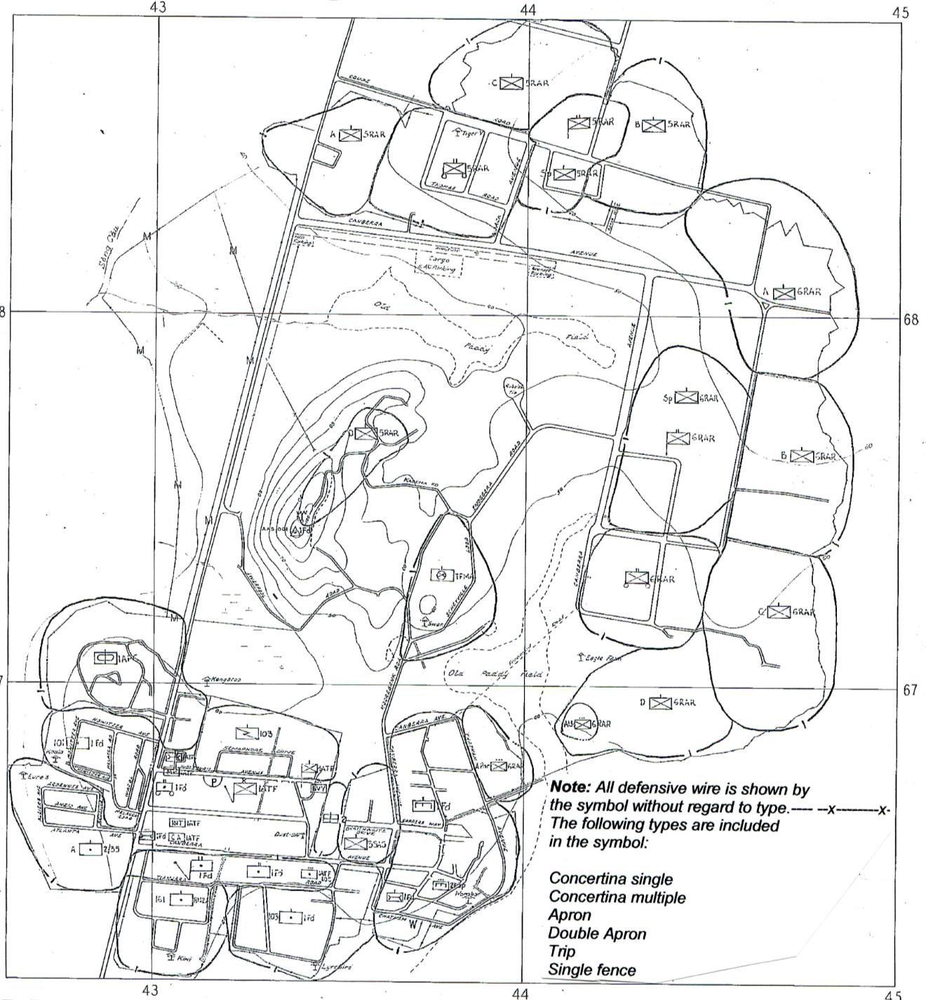
          <figcaption><span class="fignum">Figure 1.</span>The Tactical Symbol version of the Cantonment Map Simplified and reduced. Produced in about April 1967. This copy from AWM data base.</figcaption>
        </figure>
      
    
      
        <h2 id="june-1966-continued">JUNE 1966 ….continued</h2>
      
    
      
        <h3 id="to-nui-dat-the-rest-of-us">To Nui Dat – the rest of us</h3>
      
    
      
        <p>Saturday 11 June arrived and we joined the convoy with our remaining Landrover and trailer fully loaded with our remaining stores. This was my first road trip to Nui Dat and I took some interest in the landscape through which we were passing. Having cleared Vung Tau city and its straggly environs to the north we passed through a scatter of small villages surrounded by old disused rice paddy, derelict orchards once of tropical fruit and patches of mangrove. The road formation was often only half a metre if that above the paddy fields. Approaching Baria the road entered almost continuous mangrove and crossed the Song Cay Khe (waterway) on a low level bridge and continued through mangrove with further waterway crossings until reaching the southern outskirts of Baria. I wondered at the tenuous nature of the link between the provincial capital and Vung Tau. Even a reading of the map would indicate how easily it would be to disrupt traffic flow along that road, nominally a national highway. The bridges could so easily be blown and it would be near impossible to divert traffic either side of the road formation through the mangrove swamps. But it never happened!</p>
      
    
      
        <figure id="figure-2">
          
          <figcaption><span class="fignum">Figure 2.</span>Bridge and watch tower on LTL 2 south of Baria</figcaption>
        </figure>
      
    
      
        <p>One could see that Baria had been, and still was a well laid out town – at least it had streets crossing at right angles. The French colonial influence was evident in the more or less substantial buildings but now in an apparent state of gradual decay. Nevertheless, the main streets were lined with shops providing essential goods and services – some of which we were to frequent later in trying to overcome the many commodity shortages that we were to experience later in the Army re-supply system. Customers frequenting the shops were Vietnamese; civilians in traditional clothing and soldiers of the ARVN. There were large ARVN cantonments on the western side of Baria. Baria had been under Viet Cong control twelve months previous but perhaps the heavy ARVN presence had caused them to melt away – perhaps not. Five kilometres north of Baria was the village of Hoa Long, a village the Task Force only two kilometres to the north was bound to dominate. Hoa Long had little form. The highway intersected it; village tracks drift off on either side. Dwellings were small and constructed from a variety of local materials. As we drove through the adult population was sparse but there were many children coming perilously close to the convoy, now moving at a snail’s pace. They chanted and called uc-dai-loi, uc-dai-loi with arms outstretched. I was to learn that “uc-dai-loi” roughly translated to “men from the south”.</p>
      
    
      
        <figure id="figure-3">
          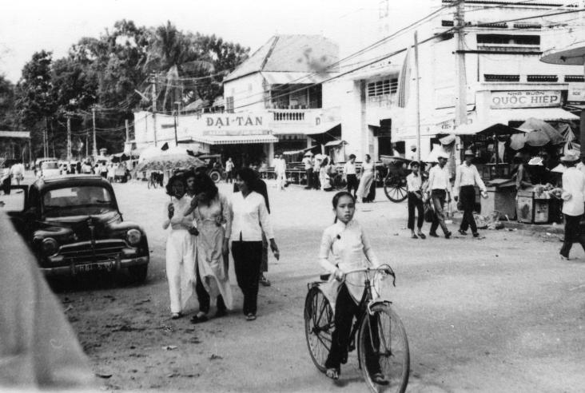
          <figcaption><span class="fignum">Figure 3.</span>A street in Baria</figcaption>
        </figure>
      
    
      
        <p>Finally after that 50-minute drive from Vung Tau we were turning east into a rubber plantation onto the newly made graded but dusty track and a scatter of tents and marquees. A few rough unit signs gave some indication of what was there. Task Force headquarters was to the right and sand bagging around the Command Post – designated the Tactical Operations Centre (TOC) by Brigadier Jackson in keeping with the US practice – was well underway. A short way further along on the same side a cluster of pristine new 11” x 11” light weight tents marked the location of 1st Topographical Survey Troop (detachment). Opposite on the northern side was the 103 Signals Squadron. A helipad named “Kangaroo” could be seen through the rubber trees north of the track nearly opposite the headquarters. US Army Hueys (our own Iroquois Squadron RAAF had yet to arrive in theatre) were constantly coming and going creating great clouds of dust that rolled over the rubber trees and everything else. Dave Christie was waiting for us, obviously pleased with the progress achieved so far. So was I – they had done well. We unloaded our vehicles directly into our new tentage. Only the Q Staff,   Corporal Alan Carew and   Sapper Stan Johns and I were to be personally accommodated within the work area; the Q Staff for security reasons and in my case, to maintain command and control. The sergeants and warrant officers were to be accommodated in the HQ senior NCO’s lines (50 metres to the south east) and the corporals and sappers in the HQ Other Rank’s lines (100 metres to the south west). Both accommodation areas were adjacent to a second graded track parallel to the previous. These graded tracks were to be given names and sign posted a little later, Ingleburn Avenue in the first instance and the other Holsworthy Avenue (I think). Only Ingleburn Avenue entered the highway at that stage.</p>
      
    
      
        <p>The Engineer 1st Field Squadron was doing a great amount of work clearing areas and grading roads with a small bulldozer brought into Nui Dat. 1st Field Squadron is an engineer combat unit, whose principal role is support of infantry combat operations, demolitions, impeding the enemy and anything else that requires engineer knowledge and competence. They were to become prominent in Viet Cong tunnel exploration and destruction but at this stage they were building Nui Dat – in effect creating a military town. There may have been a section of 24 Construction Squadron based at Vung Tau attached to the Field Squadron, but I am not sure.</p>
      
    
      
        <figure id="figure-4">
          
          <figcaption><span class="fignum">Figure 4.</span>Detachment 1 Topo Svy Tp – first location off Ingleburn Avenue. Our draughting work tent. Note the paulins folded up onto the roof – to be dropped down over the sides for night work.</figcaption>
        </figure>
      
    
      
        <h3 id="nui-dat-accommodation">Nui Dat accommodation</h3>
      
    
      
        <p>Most, perhaps all, of the senior NCO’s and other rank’s living accommodation was under combat “hoochies” (capes half shelter), very light weight waterproof sheets measuring a couple of metres square erected with cord and slung between trees. They slept on blow-up mattresses and used their combat bedding. We had in our Q Series stores sufficient “tents 7”x”portable survey”, designed and made for survey operations – generally cursed and declared totally impractical by survey units in Australia but proved to be a god-send in Vietnam. They were infinitely more comfortable and much more waterproof than the combat hoochies and the envy of all others. I was able to allocate to our warrant officers and sergeants two 11”x6” tents lightweight.</p>
      
    
      
        <p>We also had low level stretchers that kept one’s body a few centimetres above the ground but given to falling apart in the middle of the night. These became a general issue a short while later. Of course, a great deal of ingenuity developed within those living areas with accommodation improvements created from scraps of material culled from anywhere; American sources were fair game. Map 2 shows the layout of our work area at Nui Dat from our arrival through to August1966.</p>
      
    
      
        <figure id="figure-5">
          
          <figcaption><span class="fignum">Figure 5.</span>Sappers Ron Smith and John (Boots) Campbell at our first orderly room</figcaption>
        </figure>
      
    
      
        <p>To anyone entering the area it must have presented a poor image of the Australian Army, resembling a refugee camp more than a military base. It was to be many weeks before a significant improvement occurred with the release of 16”x1” tents and flies of the traditional pattern<sup class="fn-ref">1</sup>.</p>
      
    
      
        <aside class="footnote" role="note">
          <span class="fn-num">1</span>The 16 foot x 16 foot (4.9m x 4.9m) tent was of a very traditional pattern made of heavy canvas. The design probablydates back to the Boer Wars and certainly WW1. The tent comprises the tent proper and a fly, in effect a secnd roof. It is erected on two sturdy vertical poles of about 2.2 metre length each with a steel pin protruding at the top end and a cross pole holed at each end that sits securely on the pins. The tent is self-guying with the fly over the cross pole and the tent proper slung beneath providing an air gap of about 30 cms between the two. The sides are about 50cms high but can be easily propped up to a greater height. In my opinion the tent is easier to erect and far more comfortable to live in than its light weight successor introduced in the mid 1960s.
        </aside>
      
    
      
        <h3 id="protection-and-facilities-humidity-and-mud">Protection and facilities –humidity and mud</h3>
      
    
      
        <p>As soon as stores were unloaded we started digging in and sand bagging. This was a personal responsibility – we all did our bit. There was no “sand” so bags were filled with the red loam dug from our protection pits – these to a depth of 4 feet (1.2 metres). Priority was given to protection of accommodation lines and stores areas. It was hard work in the hot humid conditions under the canopy of the rubber trees and heat exhaustion became a problem for some although I do not recall any of our Troop fellows succumbing to it. It was very much a case of shirts off, shorts and boots on and after an hour or two our bodies would be sweat streaked  with red dust. Although the weather had been relatively dry for the few weeks preceding our move to Nui Dat soon after arrival the wet season hit.</p>
      
    
      
        <figure id="figure-6">
          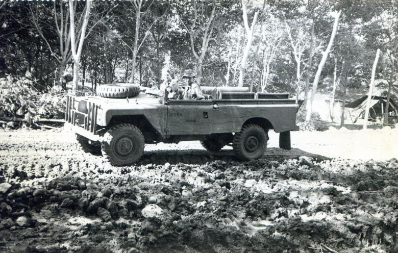
          <figcaption><span class="fignum">Figure 6.</span>Our sand-bagged Landrover; Corporal Peter Clarke at the wheel.</figcaption>
        </figure>
      
    
      
        <h3 id="map-2-layout-of-1-topo-svy-tp-june-1966">MAP 2 – LAYOUT OF 1 TOPO SVY TP – JUNE 1966</h3>
      
    
      
        <figure id="figure-7" class="portrait">
          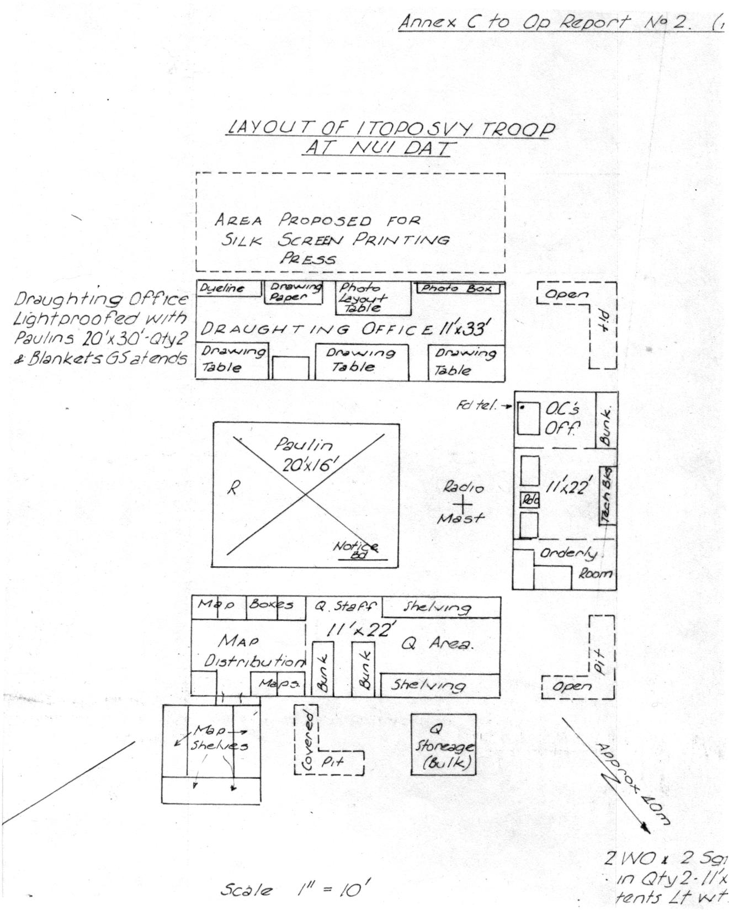
          <figcaption><span class="fignum">Figure 7.</span></figcaption>
        </figure>
      
    
      
        <p>My monthly report for June records… </p>
      
    
      
        <p><em>'Conditions generally are shady and cool, although the canopy of trees imposes difficulties with light, especially under dull weather conditions. The monsoon season is definitely ‘on’ and heavy rain is experienced each day, usually in the late afternoon. Sometimes showery conditions continue all day. The ground which consists of thick red loam becomes very boggy. Of its own initiative Det I Topo Svy Tp has introduced local laterite and sand from Vung Tau to act as a stabiliser and build up both the work and accommodation areas to form level platforms’.</em></p>
      
    
      
        <figure id="figure-8" class="portrait">
          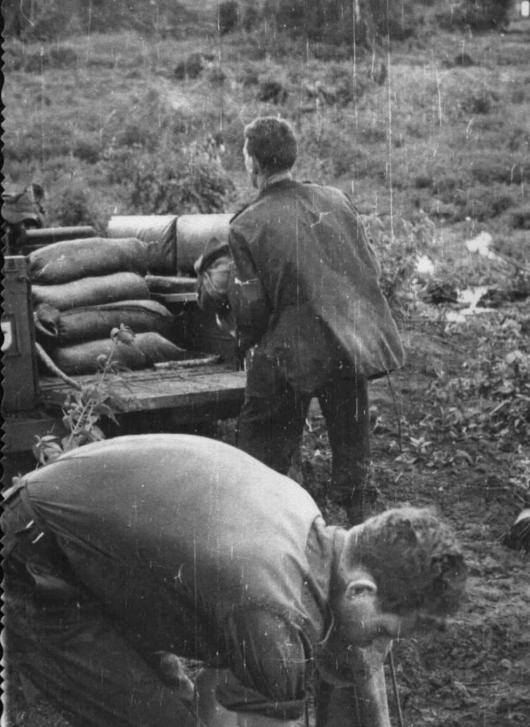
          <figcaption><span class="fignum">Figure 8.</span>Sergeant Dave King and Sapper Derek Chambers filling sand bags</figcaption>
        </figure>
      
    
      
        <p>Messing facilities had been established – officers, senior NCOs and other ranks in separate 11”x3" extended tents. We were on Australian 1-man ration packs and US “C” rations. I am not sure who purloined the cigarettes out of the latter, probably the cooks and kitchen hands. The novelty of feasting on ration packs, if there was any to start with, wore off quickly. We were to be on a diet of ration packs for the first 6 months, occasionally relieved by fresh.</p>
      
    
      
        <h3 id="coulthard-clarks-account">Coulthard-Clark’s account</h3>
      
    
      
        <p>It is interesting at this point to visit Coulthard-Clark’s Corps History and his perspective on the move of the Troop to the Task Force base at Nui Dat. Athough broadly accurate; it tends to make some assumptions that are not strictly correct.</p>
      
    
      
        <div class="narrative">
          
          
          <p>On 10-11 June the Detachment moved forward to the Task Force's operational base being established at Nui Dat, near the centre of the province, and began settling in. The mission waiting for the unit was not one of mapping the Australian Area from scratch. In fact, Vietnam was already covered by a standard 1:50,000 series produced from aerial photography flown in 1958, and a revised series of these maps had also been produced by the US Army Mapping Service in September 1966. This coverage was found to be generally quite good in terms of positional accuracy, although cultural detail was generally very wrong and contours and detail of drainage and vegetation were frequently inadequate. Moreover, the Survey Corps back in Australia undertook an enlargement series at 1:25,000 scale of these existing maps for areas of interest to the Task Force. These standard map sheets were supplemented by a 1:25,000 'pictomap' series, which were basically colour-enhanced and overprinted air photos that proved quite acceptable to *troops on the ground<sup class="fn-ref">2</sup>. With good basic maps already available, the main tasks for the survey unit were to establish survey control and theatre grid primarily for fire-control purposes, provide intimate support for Task Force operations through rapid response mapping (such as overprints, sketch maps, and enlargements), and hold and distribute map stocks as needed. Under an arrangement reached with the Task Force headquarters the day after arrival, the Detachment was to come under the GSO Intelligence 'for staff direction'.<br><em>(In fact it was the GSO2 Intelligence.)</em></p>
          
        </div>
      
    
      
        <aside class="footnote" role="note">
          <span class="fn-num">2</span>I made further comment on the pictomap in my AAJ article of September 1968 – The pictomap suffers from the normal disadvantage of image displacement inherent in any photomap, with corresponding problems in the joins between the individual prints comprising the pictomap. In addition to this, the overprinted physical detail, ie, drainage and contours, in the main enlarged from the 1:50,000 series, does not always fit the photo image on the pictomap.
        </aside>
      
    
      
        <p>Coulthard-Clark’s statement contradicts itself more than once. For a start we never assumed that we would be mapping the Australian area from scratch. The boxes of maps we took with us are evidence enough that we were well aware of the existing map coverage as well of course as the</p>
      
    
      
        <p>USAFFE map catalogues. The so-called revised 1:50,000 revised series was a revision in format more than detail, from 10” of Latitude by 15” of Longitude to 15” x 15” – half as much map again on the same size sheet of paper. Detail revision was minimal and certainly not more accurate. Coulthard-Clark states that <em>although positional accuracy was quite good cultural detail generally</em> <em>very wrong</em> (in fact village detail on the map showed no relationship to what was on the ground) <em>and contours and detail of drainage and vegetation were frequently inaccurate</em> (in fact contours were what we often called “spaghetti contours – no detail at all). How could he call that <em>‘quite</em> <em>good’</em>? (Good basic maps? – not at all.) Furthermore, it is not correct that the Survey Corps back in Australia was producing an enlargement series at 1:25,000 scale. The enlargement series was produced at the request of the Troop after the release of the “revised” L7024 1:50,000 series in August. Survey Directorate received L7024 reproduction material in late July and proceeded immediately to produce the 1:25,000 enlargement series.  It was towards the end of 1966 that the maps were delivered to the theatre. The enlargement series was excellent for TOC/CP battle map purposes and for general briefing insofar as the detail was enlarged and could be clearly seen “from the back of the classroom”.</p>
      
    
      
        <p>Back to Nui Dat: on day 1 I paid a brief call on the TF HQ staff to show them I was there and got their polite acknowledgement. They all seemed to be intensely busy working at their tables FS and I didn’t want to be hit with jobs at that moment. We already had Sergeant King and Sapper Smith involved with general draughting duties in the headquarters.</p>
      
    
      
        <h3 id="our-role-develops">Our role develops</h3>
      
    
      
        <p>A short Commander’s briefing took place in a marquee erected for the purpose at 1700h and my diary records that at 1815h after an evening meal we “stood to” – in our weapon pits with weapons at the ready, full magazines on. It seemed a little surreal but we kept up the practice for some weeks before it was progressively relaxed at least for units within the inner perimeter. Of course we had only one battalion in place at the time, 5RAR to the north, two batteries of artillery (105mm Howitzers), the APC Squadron to the west (across the road) and nothing at all to the east.  6RAR was yet to move up from Vung Tau. Total blackout applied at night – no lights at all, not even flashlights for finding one’s way at night. It was intensely dark under the rubber tree canopy, to the extent that one would not be able to see one’s hand held in front of one’s face. It was not uncommon for the occasional soldier to lose his way travelling from mess to hootchie at night. My diary also records that there was artillery fire throughout the night – harassment and interdiction (H&amp;I) – at what I did not know. That was the evening routine night after night. Twelve hours of darkness – boring stuff!</p>
      
    
      
        <p>Day 2 at Nui Dat started with a stand to at 0515h. This too became the normal routine for a number of weeks. At 0900h I attended my first Intelligence conference headed by Major Rowe, GSO<sup class="fn-ref">2</sup> Int. I was starting to learn a good deal about the enemy dispositions in the Province. What was to become the “familiar foe” in Phuoc Tuy was the Viet Cong provincial battalion; D445, raised from within the Province the year before. Two battalions of the People’s Army of Vietnam (North Vietnam – communist) 5th Division were the 274th and 275th Regiments<sup class="fn-ref">3</sup>. This was interesting stuff, however, my concern was to address the mapping need, in particular the problem of map resupply from US sources. It was agreed that I should make a further trip to Saigon.</p>
      
    
      
        <aside class="footnote" role="note">
          <span class="fn-num">3</span>Specific data on Viet Cong units although frequently discussed within the Intelligence net was not widely known at unit level at this stage of our operation. Details presented here come from the critical analysis of our Vietnam involvement by Greg Lockhart of the Australian National University.
        </aside>
      
    
      
        <h3 id="nui-dat-the-hill">Nui Dat – the hill</h3>
      
    
      
        <p>Later in the morning Sergeant Stan Campbell and I took our first recce to the top of the hill feature Nui Dat. A rough vehicular track had already been pushed through to the top; I hesitate to say “summit” since it was really quite a small feature. An artillery observation post (OP) had been established manned at the time of our visit by a couple of the Locating Battery surveyors and a Signals station, apparently permanently manned by two Sigs who greeted us with some enthusiasm. They had been in my platoon during our battle efficiency stint at Canungra and with a couple of their mates became regular visitors to the Troop. An untidy confusion of aerials and cables had been set up and I was concerned that we might get electronic interference when we attempted measurement. Fortunately the highest point was relatively uncluttered and later that day or the next Stan established a ground mark, which, as the survey network developed, became AASV 001.</p>
      
    
      
        <figure id="figure-9" class="portrait">
          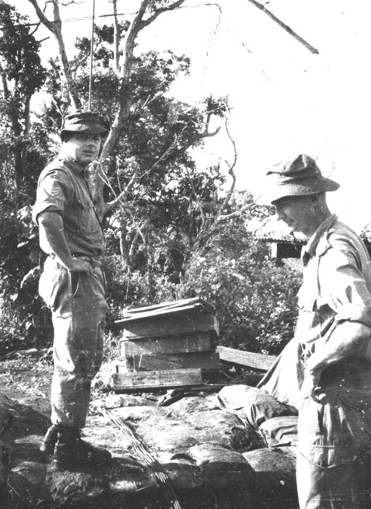
          <figcaption><span class="fignum">Figure 9.</span>Atop the hill feature Nui Dat Sgt Stan Campbell and Capt Bob Skitch consider where to position AASV 001.</figcaption>
        </figure>
      
    
      
        <p>Because of the total blackout at night it was not possible to do any work at night and in any case we had no electric power. With a hand held flashlight I commenced writing our first Operation Order 1/66), the first stage of establishing a control network for Artillery with the mission statement <em>‘Det I Topo Svy Tp is to</em> <em>establish a 3rd order position and azimuth on the feature Nui Dat GR 433 675’</em>. Task Force headquarters required all written orders and instructions to conform to strict “staff duties” format before giving approval for the activity to take place. Corporal Peter Clarke with a borrowed typewriter typed it for me the following day; however, our support for Artillery was to become a contentious issue. Operation Order 1/66 is at Annex A to this account.</p>
      
    
      
        <figure id="figure-10" class="portrait">
          
          <figcaption><span class="fignum">Figure 10.</span>Decision made – Stan digs the hole</figcaption>
        </figure>
      
    
      
        <h3 id="hoa-long">Hoa Long</h3>
      
    
      
        <p>Hoa Long village a couple of kilometres south of the Task Force base while it seemed peaceful enough had been a known Viet Cong refuge and had at that point not been sanitised; that is cordoned and thoroughly searched for evidence of Viet Cong activity, weapons and tunnels. The village was a jumble of tracks, vegetation, cultivation and dwellings bearing no relationship to the existing map detail. Air photo coverage was not of great help since the dwellings and tracks were very indistinct on the rather poor imagery. I undertook to produce a mosaic and outline plan of the village, initially for Civil Affairs use. This was our first real operational task and I resolved that we would do it to the best of our ability. It was still paramount in my mind that we had to justify our presence in the Task Force base in this grossly undermanned organisation. Nevertheless, priority still had to be giving to digging in and that day we achieved overhead cover on all our protection pits.</p>
      
    
      
        <h3 id="work-priorities">Work priorities</h3>
      
    
      
        <p>On 13 June there was a further GSO<sup class="fn-ref">2</sup> Intelligence conference that discussed the Troop’s work priorities. Not unexpectedly air photo and draughting work that directly supported the HQ, not necessarily operations, was the way they saw the Troop being employed. The connection of the Task Force base, that is, Nui Dat and in particular the two artillery batteries to theatre grid was not seen as significant. Certainly there were a large number of tasks that we could undertake and no doubt would in due course. The importance of the Hoa Long village map at scale 1:5,000 was emphasised. We already had that underway within the limitation of available resources, mainly adequate aerial photography.</p>
      
    
      
        <p>Immediate work priorities were resolved later in the day following a discussion Major Rowe had with the Task Force Commander. Brigadier Jackson directed that Long Phuoc and Long Tan village maps were to be our priority, the former to be completed by 18 June – five days hence, giving me my first insight into the direction of future operations. Xa Long Phuoc was a fairly dense village three kilometres SE of Nui Dat, two kilometres east of Hoa Long. It was well within the Task Force Area of Operations (AO). Xa Long Tan was a smaller village five kilometres east of Nui Dat.</p>
      
    
      
        <p>At a later briefing that evening from Major Rowe following his discussion with the Task Force Commander, he suggested that the artillery survey should be shelved. I pointed out that this was a primary task for Survey in support of the Task Force and that there could not be coordinated fire from our guns and US guns until that happened. I suspect that he had not raised the matter with Brigadier Jackson because he stopped short of directing that we not proceed with the survey connection.</p>
      
    
      
        <h3 id="air-photography-for-mapping">Air photography for mapping</h3>
      
    
      
        <p>I found that our requests to the US 23rd Recce Tech Sqn for aerial photography were met surprisingly promptly. On my earlier visit to Saigon and in visiting the US 23rd Recce Tech Sqn I had suggested that large scale photography of Phuoc Tuy would be a valuable asset, although I do not recall giving any further detail nor filling in any formal requests. In fact at that stage of the campaign most things seemed to be arranged at a very informal level. The US Army in Vietnam seemed prepared to bend over backwards to help their Aussie cousins. I think we might have made a welter of it and the attitude started to change as the months passed – but not for Survey. Our informally requested 1:5,000 photo coverage started to arrive even before we reached Nui Dat. We were also to learn that the quality of the product left a lot to be desired. The runs of photography coming in on daily couriers were full of gaps, flown below the cloud level and hence very dark and the prints were not properly fixed. One could smell the acrid developer as soon as the packet was opened. The prints were sticky and tended to stick together. In separating them one risked removing the emulsion and with it the imagery. It was a case of not looking a gift horse too closely in the mouth and we had to make the most of what we were given and be thankful.</p>
      
    
      
        <h3 id="i-want-the-stereotopes">I want the Stereotopes!</h3>
      
    
      
        <p>Our capacity for photo plotting in any shape or form was to say the least, primitive. Universal stereoscopes and one Old Delft scanning stereoscope were all we had and I think we may have had a parallax bar. This was stuff of the 1920s. I had had some limited experience with the Zeiss Stereotope at the School of Military Survey some years before. The Stereotope was perhaps the least used photogrammetric instrument ever acquired by Survey Corps. It was a remarkable optical-mechanical piece of equipment but to properly set it up and apply all the corrections required extensive calculations to work out the settings one applied to the micrometer setting screws called “rectiputers”. The overlapping photos were taped to the left and right platens (platforms) and all the adjustments for tip and tilt were taken up in the attached pantograph. The machine had excellent optics, far better than anything else we had. Furthermore it was portable and could be set up on a reasonably stable table. Now having a better appreciation of our role in the theatre, I prepared RVEs (Requests for Variation to Entitlement) for two Stereotopes and a further “Old Delft Stereoscope” and sent these to HQ AFV in Saigon. To ensure the support of Survey Directorate in Canberra I sent a demi-official letter<sup class="fn-ref">4</sup> to Major Child in Survey Directorate requesting their support. It was to be some weeks before we received them so we got on with what we had<sup class="fn-ref">5</sup>. My demi-official letter of 14 June to Major Child requesting his support is at Annex C to this account.</p>
      
    
      
        <aside class="footnote" role="note">
          <span class="fn-num">4</span>A 'demi-official' (DO) letter is a fairly formalised informal letter. It follows a strict formal layout but uses less formal and
more personalised language. The demi-official letter is addressed from one officer to another at a different rank level and would normally bypass the mail registry system
        </aside>
      
    
      
        <aside class="footnote" role="note">
          <span class="fn-num">5</span>The name 'Old Delft' does not imply that the stereoscope is old. This very fine instrument with its high magnification
and scanning ability in both X and Y was produced in the Dutch city of Delft to a design developed by the Delft University in the quarter known as 'Old Delft'. The Delft University has been a centre of excellence in developing the science of photogrammetry.
        </aside>
      
    
      
        <h3 id="air-photo-mosaics-an-expedient">Air photo mosaics – an expedient</h3>
      
    
      
        <p>Warrant Officer Rollston had commenced preparing the semi-controlled photo mosaics of both Hoa Long and Xa Long Phuoc using the 1:5,000 photography. The photograph was at least fairly true to scale and the mosaics came together better than I expected. Snow Rollston was skilled in this area and while it might be said that the task was not one for a warrant officer verging on promotion to Class One, it was a matter of capitalising on individual skills regardless of rank. Snow didn’t object and threw himself into the task and was clearly very satisfied with what he achieved. So was I.</p>
      
    
      
        <p>The mosaics of Hoa Long and Xa Long Phuoc were completed the following morning (14 June) and stereo-annotation of the Xa Long Phuoc mosaic commenced, working directly onto the mosaic using the 60% overlap photo and the Universal Stereoscope. It was tricky work and by normal standards somewhat rough but Snow had good draughting skills and produced a very creditable job. Of course we had no way of reproducing it – it was a “one off” and could only be used for planning purposes and it was good enough for that. It was well received by the HQ and I think exceeded their expectations.</p>
      
    
      
        <p>Xa Long Tan was a different problem. We had only the 1:25,000 photo coverage and this had to be enlarged five times to 1:5,000 in the form of a “photo plot”, a term I coined to describe a product that was likely to be pretty rough. The east-west road through the centre of Xa Long Tan clearly identifiable on both the 1:50,000 map and the 1:25,000 photograph with its clearly angular changes of direction as it swung south provided a form of horizontal control. We used the magnification of the Old Delft stereoscope and its scanning ability with simple proportional dividers to create the photo plot on tracing paper from which we were able to produce dyeline copies. (Yes, we had a dyeline machine and a make-shift sun frame, the former requiring electric power, the latter only sunshine – a bit scarce under the rubber tree canopy.)</p>
      
    
      
        <h3 id="survey-connection-to-vung-tau">Survey connection to Vung Tau</h3>
      
    
      
        <p>Determined to make a start on the survey connection between Vung Tau and Nui Dat and so establish theatre grid within the Task Force base, despite the cool support I had to this commitment from the headquarters, I despatched Sergeant Stan Campbell with Corporal Jim Roberts and Sapper Brian Firns to Vung Tau with the return convoy the afternoon of 14 June to carry out the Vung Tau end of the connection. I was able to augment the party with four members of the TF Locating Battery Survey Section, Lance Bombardier Sellwood, Gunners Roberts, Moreau and McManus. Their OC, Lieutenant Peter Sadler was more than supportive. At the Nui Dat end there was only one point to occupy and that was Nui Dat itself. Corporal Ceruti and Sapper O’Conner were allocated that task. The Vung Tau group were to be accommodated within the ALSG for the three or four days it would take to complete the connection. Communication between sub-groups was to be by ANPRC-25 sets<sup class="fn-ref">6</sup>. We borrowed some sets from the Locating Battery to supplement our own. To maintain communication security (we were assured that Viet Cong would be listening) in addition to the standard call signs, call words for each day deployed and nicknames for each of the five points to be occupied were allocated by the Task Force Signals Officer who took a considerable interest in our activity.</p>
      
    
      
        <aside class="footnote" role="note">
          <span class="fn-num">6</span>ANPRC stands for Army Navy/ Portable Radio Communication and is of US origin. Both the '10' and the '25' sets are
Very High Frequency (VHF) and are limited to line of sight or very short distance
        </aside>
      
    
      
        <h3 id="electric-power-and-night-work">Electric power and night work</h3>
      
    
      
        <p>On that day also, our fourth day at Nui Dat, our work area was connected to a 5KVA power supply from Task Force HQ using flex and fittings that had been included in our unit stores, (miraculously I thought by some far-sighted individual). This would allow us to do night work provided we could light proof at least part of our work area to meet blackout conditions. This we did by covering our draughting tent with two large 20” x 30” paulins (tarpaulins) creating a completely light proofed work area that was also an effective sauna for anyone working in there at night. During daylight the paulins were folded back over the roof and the sides of the tent rolled up – dropped quickly when rain threatened. We commenced night work that night. Also with power we could use our dyeline machine, producing dyeline copies at a rate of one per minute against the far more time- consuming sun-frame process. The downside was that we were to rapidly run out of dyeline paper with resupply unaccountably difficult. Also that day we were linked to the TF field telephone switchboard named EBONY within the US Army line communication net<sup class="fn-ref">7</sup>.</p>
      
    
      
        <aside class="footnote" role="note">
          <span class="fn-num">7</span>The line communication network covering Nui Dat, Vung Tau, Saigon (AAFV, MACV and the great number of military formations within Saigon and Tan Son Nhut), Long Binh and Bien Hoa and even beyond our Corps area to Nha Trang for example, operated through a complex of manual switch boards each with exotic sounding names. IATF was EBONY. Others that come to mind are TIGER, PYTHON, CASTLE, HURRICANE, and many many more. Obtaining connections from switchboard to switchboard required patience and tolerance and a knowledge of how it all worked. Sometimes there were a number of ways a call could be routed and if one way failed another way could be tried. The boards were mostly manned by US soldiers who, apart from their very American accents seemed to cultivate some very idiosyncratic responses. I came to know the system quite well and developed something of a skill in its use.
        </aside>
      
    
      
        <h3 id="business-in-saigon">Business in Saigon</h3>
      
    
      
        <p>My scheduled trip to Saigon took place on Wednesday 15 June, this time with Warrant Officer Dave Christie. I was of the mind that I should give as many of our Troop members as could reasonably be justified the opportunity to visit Saigon and other US bases as a break from the routine of Nui Dat. The principal purpose of the trip was to determine the cause and try to resolve the map resupply problem but I was also hopeful of being able to “cadge” a quantity of dyeline or similar reproduction paper from our American friends. Sergeant King had completed a trace for the overprint of the Vung Tau 1:12,500 Special<sup class="fn-ref">8</sup> (discussed with the Commander ALSG during our sojourn on the back beach) from sketches showing tracks and principal areas provided by the ALSG headquarters (perhaps also the Engineer Construction Squadron). We may have carried out a certain amount of field checking while we were waiting for our move forward although I have no specific record of that. The eastern beach area of the map had been obliterated by the map index so part of our overprint would fall across the index. Thus a further “un-stated” purpose of our Saigon trip was to arrange the overprinting of the Vung Tau Special on US map stock. Any work we did for the ALSG needed to be a little “under the cush” from Task Force headquarters.</p>
      
    
      
        <aside class="footnote" role="note">
          <span class="fn-num">8</span>The term „Special‟ applied to a map indicates that it is not a standard map at a specifically standard scale and on standard map boundaries based on the progressive quartering of the standard 1:100,000 map.
        </aside>
      
    
      
        <p>Dave Christie and I boarded a US “Huey” helicopter at 0800h from the headquarters “Kangaroo” pad for a direct flight to Tan Son Nhut. Visiting the very friendly and helpful Lieutenant Colonel Benton in his office, if only by way of courtesy, resolved two of our needs; the overprint we required would go to 569 Engineer Company at Nha Trang and phone calls to one or two other units would release to us at least some light sensitive reproduction paper – but not “dyeline”. That process (and name) seemed foreign to the American map people. Colonel Benton explained that their massive map depot (capacity 7 million maps I was told) had been reorganised to accommodate both an influx from Hawaii of double format 1:25,000 pictomaps and the new series 1:50,000 maps and that may have been the reason for the lack of response to our map requests. This excuse seemed not to justify the total lack of response we had had to either our formal map requests or follow up signals.</p>
      
    
      
        <p>I recall discussing with Colonel Benton the issue of what to do with superseded maps. In Vietnam all maps carried a security classification of restricted, even higher in AAVN units, so whatever form the destruction took had to be complete. They couldn’t just be dumped. High wet strength paper as the name implies, is hard to destroy. Colonel Benton told me that they had resorted to dumping at sea bundles of maps but of course they floated and became a shipping hazard<sup class="fn-ref">9</sup>.</p>
      
    
      
        <aside class="footnote" role="note">
          <span class="fn-num">9</span>At one time in Brisbane the Northern Command Field Survey Unit was reducing WW2 stocks of one mile and emergency four mile maps. Somewhere out of Brisbane there was an incinerator for burning up noxious products and the proprietors agreed to take our obsolete map stock. The first load dumped into the incinerator extinguished the fire and had to be dug out. We were not welcomed back.
        </aside>
      
    
      
        <p>Dave Christie visited the 547 Engineer Platoon (MD) with Colonel Benton’s authority and took control of extracting the map stock we required and arranged shipment to Vung Tau the following day. We were to accompany them. I think the Americans in their Tan Son Nhut barracks and officers club put us up for the night – a bit different to the BOQs down town. At 1300h the following day we were emplaning to Vung Tau with our map stock and a dozen rolls of ammonia paper and the necessary chemicals for its use.</p>
      
    
      
        <h3 id="air-observation-the-possum-flight">Air observation – the ‘Possum Flight’</h3>
      
    
      
        <p>While absent from Nui Dat Snow Rollston had managed to get an air-observation flight to carry out an air check of our plotted detail of Xa Long Tan. 161 Recce Flight nick-named ”Possum Flight” with their Bell Soux G2 helicopters (the sort with the big bubble) proved very helpful in meeting our needs. The Bell Soux G2 s ideal for observation although with ground fire in mind I personally felt less than secure. Snow continued with air checking from the Bell Soux moving on to Xa Long Phuoc after Xa Long Tan. Of course we had no priority call on the Possum Flight and sometimes an intended sortie could be cancelled at the last minute but Army pilots like pilots everywhere, are only happy when they are in the air. Our scheduled work continued on Friday – we were developing something of a routine.</p>
      
    
      
        <h3 id="survey-connection-to-vung-tau-progresses">Survey connection to Vung Tau progresses</h3>
      
    
      
        <p>Work on the survey connection to Vung Tau had progressed. Sergeant Campbell and Corporal Ceruti had previously cleared and ground marked Nui Dat and one of the minor lines was measured with our MRA<sup class="fn-ref">2</sup> Tellurometers. An attempt had been made to measure the line Nui Dat to Vung Tau Lighthouse but had to be abandoned when the equipment failed – unfortunately a frequent enough happening with the MRA<sup class="fn-ref">2</sup> Tellurometer. Further attempts were made to complete the main measures between Nui Dat and Vung Tau Lighthouse and Nui Dat to Cap St Jacques without much success; we could not get a good clear trace on the cathode ray tube (CRT) of the instrument. It was a concern but all we could do was to try again the following day. It seemed that we were getting interference from the radar on Vung Tau airfield, something we had encountered when measuring near cities and airports in Australia. We tried again on the Saturday and both measures went through without a hitch. It seemed as though the airport radar had been switched off for the weekend.</p>
      
    
      
        <h3 id="split-vertical-photography">‘Split Vertical’ Photography</h3>
      
    
      
        <p>Soon after arriving at Nui Dat – mid June – we had our first exposure to 9 inch x 18 inch “split vertical” photographs. I think my attention had been drawn to the concept on my first visit to the US 23rd Recce Tech Sqn in Saigon. The split vertical concept employs a double camera each inclined at an angle of 13 degrees either side of the aircraft so producing a 36 inch strip of photography. The intervalometer is set for a 60% fore and aft overlap and the two 9 inch x 18 inch inclined photos overlap on the flight line about an inch. The photo scale thus decreases (gets smaller) as the distance increases from the flight line. It was not mapping photography of course but the imagery was very clear. The mean scale was somewhere between 1:5000 and 1:10,000 and I was at a bit of a loss as to how we could use it as a primary source for plotting. Giving coverage of both our recent photo plots (Xa Long Tan and Xa Long Phuoc) they provided a further check on our detail and having been flown only days before they gave an appreciation of buildings destroyed by recent bombing and artillery fire.</p>
      
    
      
        <h3 id="map-re-supply">Map re-supply</h3>
      
    
      
        <p>With our main map stock now with us and re-supply now guaranteed we were able to make a bulk issue to units in accordance with a distribution scaling determined by the TF headquarters. All units were notified and throughout the day unit representatives usually from their intelligence section called in to pick up their stock.</p>
      
    
      
        <p>Our two storemen, Corporal Alan Carew and Sapper Stan Johns were kept busy, not only in sorting out stock for distribution but also in reorganising our map storage to take the unwieldy Pictomap series due in July. The heavy map boxes were custom designed to fit the original 1:50,000 series and nothing else. I think we had to loosely fold the pictos to slide them in to their allocated box and then if one sheet was to be issued across the counter, all would have to be pulled out, and laid flat on the counter before a single copy could be taken from the top. Why go to the trouble to explain such a routine action you might ask? The maintenance of map stocks and map distribution was one of our primary functions and the point of contact with all units within the Task Force. Many would judge our performance on that simple premise alone. I recall Stan Johns as a nuggetty little bloke, probably in his forties. He was a Korean War veteran and related well to soldiers, usually infantry, fronting up for maps.</p>
      
    
      
        <h3 id="dyelining-and-alternatives">Dyelining and alternatives</h3>
      
    
      
        <p>That night we used for the first time the ammonia process to produce a limited number of copies of Xa Long Phuoc. I cannot remember exactly what the process was, but the ammonia fumes were quite overpowering. The process had to be carried out in at least semi darkness. I think we used our dyeline machine simply tipping the ammonia developer into the partly open trough and rolling the ammonia paper and chronaflex trace through the rollers as we would for the dyeline process. The machine used by the Americans was fully enclosed and ventilated and only a faint smell of ammonia escaped. Not so with our converted dyeline process; the fumes were little short of overpowering. The resulting prints were excellent; sharp and clear. In subsequent ammonia printing some ingenuity on the part of Dave King and Ron Smith better controlled the ammonia fumes, exhausting them out of the tent before they overwhelmed the operators. We completed 50 copies of Xa Long Phuoc the following night and on the morning of 20 June delivered these to 6RAR, just arrived at Nui Dat. I recall their IO, Captain Bryan Wickens being quite astonished at having such a product provided on the eve of their first major operation, Operation Enoggera, the searching and clearing of the village.</p>
      
    
      
        <p>The supply of dyeline reproduction<sup class="fn-ref">10</sup> paper or equivalents had become a major headache. We simply could not get anywhere near enough despite repeated indent action. A request for say, fifty rolls, might result in a trickle of fifteen rolls two weeks later. The sort of work we were getting usually resulted in an end product trace from which fifty copies would be required in the first instance and maybe more later. We were in effect being “hoisted on our own petard” in that our clear ability to produce products useful for both planning and the conduct of operations generated more and more requests, products often simple enough to create but still requiring a large consumption of dyeline paper. I decided that we would move away from producing photo plots and similar at 1:5,000 scale and instead use the smaller scale of 1:10,000 mainly to cut down on the consumption of dyeline paper. HQ 1ATF accepted this.</p>
      
    
      
        <aside class="footnote" role="note">
          <span class="fn-num">10</span>On a lighter note I happened to mention to Captain Dave Holford our need for 'reproduction pesonnel'. Dave with a
somewhat droll sence of humour responded – “I do have big balls?”
        </aside>
      
    
      
        <p>It became necessary to “bite” our American friends yet again for dyeline or equivalent paper and to this end I despatched Dave Christie and Dave King to Bien Hoa (Engr Div FF V<sup class="fn-ref">2</sup> – whatever that meant) to locate further supplies. They returned with 250 sheets of dyeline paper.</p>
      
    
      
        <h3 id="photo-plots-and-enlargements">Photo plots and enlargements</h3>
      
    
      
        <p>The demand for photo plots and enlargements continued and we commenced a further two; an enhanced enlargement of a heavily vegetated hill feature some seven kilometres NW of Nui Dat called Nui Ngui and a photo plot of Binh Ba, a small village six kilometres north of Nui Dat west of Route 2. Binh Ba had an air strip just north of the village built I would assume by the US. Both tasks were precursors to 5RAR operations. Snow Rollston undertook the latter, this time resorting to direct plotting from recent 1:25,000 photography and using the time-honoured photogrammetric technique of a principal point traverse. Snow, well versed in all these almost forgotten air photo techniques, was making an invaluable contribution and clearly pleased to be doing so.</p>
      
    
      
        <h3 id="theatre-grid-aasv-001-established">Theatre grid – AASV 001 established</h3>
      
    
      
        <p>Sergeant Campbell and party returned from Vung Tau on Tuesday 21 June. Field work on the Nui Dat connection was now complete, or at least sufficiently so to bring the Task Force base area onto a reliable theatre grid for artillery purposes. Preliminary computations were completed and checked by late Wednesday night and preliminary coordinates of Nui Dat AASV 001 issued to the 161 Locating Battery Survey Section Thursday morning. It was their task then to carry theatre grid into the battery positions, a role that the Troop increasingly undertook in the months that followed. I have attached the summary of the connection as Annex B, B1 and B2 at this account.</p>
      
    
      
        <h3 id="cantonment-survey-commences">Cantonment survey commences</h3>
      
    
      
        <p>Task Force headquarters was anxious to have a more detailed gridded locational plan of the rapidly growing Nui Dat base area. At this point, 22 June, most units that were destined to be based at Nui Dat were in location.  6RAR although having moved up from Vung Tau only a few days before, was already engaged in operations. Outer perimeter units, the two battalions, the artillery Field Regiment of thee batteries (103, 105, and the New Zealand 161 Battery) and the APC Squadron had perimeter defences to organise all of which needed to be shown on some sort of layout plan.  Corporal Dennis Duquemin commenced this task, initially to prepare a preliminary version incorporating and based on the Nui Dat enlargement created in Vung Tau although added to since and traced off onto Chronaflex (the original was on cartridge paper), to meet the immediate need. It was a bit rough with roads and unit areas sketched in by compass and pace and compass and odometer traverse. Split vertical photography helped give the road pattern (which wandered about a bit) better shape although it was difficult to identify very much under the heavy rubber tree canopy. This preliminary task was to continue for some days and then developed further into the more comprehensive Nui Dat Cantonment Survey but more of that later. In the drawing office we were still working on Xa Binh Ba photo plot and Nui Ngui enhanced enlargement. (The A<sup class="fn-ref">4</sup> map (Map 1) of the IATF base area at the frontispiece to this account shows the base area with tactical symbols as it had developed by about April 1967. It is one of many versions produced from the cantonment survey during the Troop’s time at Nui Dat.</p>
      
    
      
        <h3 id="mail-a-completely-non-functional-system">Mail – a completely non-functional system</h3>
      
    
      
        <p>My June report makes no mention of mail, perhaps because I considered it early days and assurances had been given that mail would improve. Delivery time from and to Australia was in the order of ten days and even greater. Sometimes mail especially parcels disappeared completely or turned up weeks later, even being “returned to sender”. Despite frequent assurances during our twelve months tour of duty there was no significant improvement. It wasn’t as though it was a free service at that time – we had to pay mainland rates for postage to and from the theatre. A reason for delay given at one point was insufficient postage, that is, a four cent stamp (which it was when we left Australia) instead of five cents. It was not until August that information on how the mail system worked was released in a HQ AFV signal, which I reproduced in a routine order in the mistaken belief that the problems in the system had been ironed out. Mail went from Nui Dat to Vung Tau by daily convoy (that was no problem) then to Saigon on US transport aircraft, then to Hawaii twice a week by US Army aircraft, then to Sydney by <em>Pan Am</em> or <em>Qantas</em> civil air and then into the Australian postal system. Even given this somewhat circuitous routing the sort of delays being experienced suggested that our mail to and from was being given low priority in sorting and transmission in Australia. Routine Order Part 1 dated 17th August is at Annex G to this account – the very same Routine Order that dealt with actions in the event of mortar attack.</p>
      
    
      
        <p>Mail from home for soldiers has historically been accepted as a major morale booster. In my experience the Army has always treated personal mail very expeditiously, often going to great lengths to deliver the mail to the soldier and I think this was the case at Nui Dat. I can certainly recall O.D. Jackson speaking very sharply on the matter and directing his DAA&amp;QMG (Major Crowe)<sup class="fn-ref">11</sup> to take every action to sort the matter out. I am sure Major Crowe did all he could.</p>
      
    
      
        <aside class="footnote" role="note">
          <span class="fn-num">11</span>DAA&QMG stands for Deputy Assistant Adjutant and Quartermaster General. The appointment is responsible for all
administration, including personnel (the „A‟ function), and logistic (the „Q‟ function) of a brigade level formation. Although the 1st Australian Task Force was a battalion less than a brigade it was operating independently – on its own – whereas a brigade would normally be integral to a division. The combined appointment was a heavy responsibility indeed. The terminology and its attendant responsibilities had its origins in the British Army and went back centuries. In a 1970s reorganisation of the Army the Adjutant General became the Chief of Personnel and the Quartermaster General the Chief of Materiel.
        </aside>
      
    
      
        <h3 id="corresponding-with-home">Corresponding with home</h3>
      
    
      
        <p>Wendy and I were corresponding by letter at this point. Later, maybe in September when a consignment of small “National” reel-to-reel tape decks (cassettes had not been invented at that time) came into the theatre we moved onto letter tapes, two inch reels that could be posted in a small white plastic box for the same price as a letter. Each tape gave about half an hour of conversation and one could create a tape over the space of a week. External extraneous noises could sometimes be heard in the background, from Nui Dat even at night including the pernicious artillery fire and from home, perhaps Sarah wanting Mum’s attention. Wendy often would coerce a friend visiting to say a few words also. The letter tapes certainly brought home into the soldier’s tent. The “National” could also take a five inch tape and Wendy from time to time converted some of our long play records at home onto tape and sent them to me. I developed quite a collection over the year.</p>
      
    
      
        <h3 id="continuing-problems-with-air-photography">Continuing problems with air photography</h3>
      
    
      
        <p>Towards the end of June it was becoming apparent that we were accumulating a substantial amount of aerial photography from US sources. Some of this we had specifically ordered but much just seemed to arrive. Of course the Troop was not the only ordering authority; our concern was for mapping photography. Intelligence units ordered photography for intelligence purposes and sets of prints would land on our doorstep as well. This was especially true of the 9 x 18 inch “split verticals that we were finding increasingly useful. Photography ordered for mapping enjoyed a lower priority than that for intelligence or operational purposes. The total 1:25,000 coverage of Phuoc Tuy resulting from my first visit to the US 23rd Recce Tech Sqn took months to achieve although our areas of main interest were covered quickly enough. High level photography, (at scale 1: 25,000 taken with a six inch focal length camera required a flying height of 12,500 feet) was very susceptible to cloud cover. Large-scale photography could be and mostly was, flown below the cloud base. Even if the imagery was a little dark, at this large scale (1:5,000) detail was discernable and useful. However, the main problem with most of the photography coming into our hands was that it had not been properly “fixed” and tended to deteriorate rapidly. To keep track of what we had we embarked on, an in-house project to prepare and maintain flight diagrams on clear overlays keyed to the 1:50,000 map series was commenced. There was a bit of catch-up initially but after that we kept on top of the need progressively as each new lot came in. It was a tedious task and not popular with the fellows but essential for our effective functioning. Where sets of prints became totally unusable, due mainly to the fixing problem, or were simply superseded we disposed of them and wiped the overlays clear of the flight lines. Unless requested, 23rd Recce Tech Sqn generally did not keep canisters of exposed film either, once an order had been met.</p>
      
    
      
        <h3 id="our-first-concert-party">Our first ‘concert party’</h3>
      
    
      
        <p>In the late afternoon of 23 June we had our first RSL sponsored concert party at Nui Dat featuring Dig Richards, a very popular Aussie rock and roll and ballad singer, and a few others. The concert was given from the flat-top tray of a truck set up as a stage parked on one side of Kangaroo helipad near Task Force headquarters. Three or four performances of about an hour duration were given in the course of the day and units were allocated a time to attend – company by company for the battalions. It required some organisation because whenever a company moved out, either on patrol or to attend a concert, a platoon from another company had to stand-to in the departed company’s lines. The truck “stage” had arrived on the morning convoy and the performers were helicoptered in. The performance was very professional. Dig Richard attired as a performer gave it his best, as did all the performers in that concert and those that followed. It must have been something of an experience for them with the noise of war all around them, Hueys coming and going, harassment and interdiction artillery sounding off at intervals.</p>
      
    
      
        <h3 id="tactical-boundaries-problems-of-definition">Tactical boundaries – problems of definition</h3>
      
    
      
        <p>With passing weeks the Task Force was developing an increasing array of boundaries beyond the outer perimeter. The most distant of these at that time was the Tactical Area of Operational Responsibility (TAOR). I was never quite clear as to whether this was the absolute limit beyond which the Task Force did not operate although later operations were well beyong the limit of the TAOR. Certainly SAS patrolled beyond that limit and in a fairly general sense the Task Force carried a responsibility for the whole of Phuoc Tuy Province as well as the Vung Tau Special Zone. Clearly, of course, the whole of the Province was well beyond the tactical capacity of a two battalion task force with supporting arms and services. Within the TAOR enemy incursion could not be tolerated. A determining factor in its definition was the range of mortars the idea being to keep that area clear of enemy so that no part of the Task Force could be mortared. Within the TAOR there developed an Artillery Strike Zone determined largely by the 9,000 metre range of the 105mm howitzers of our two artillery batteries; although expanded with the introduction of the US 155mm battery (A Battery 1/35 Battalion). Within the Strike Zone there were sub-zones – (1) area of free fire, (2) area of no fire (mainly centres of population) and (3) area of fire when in contact with enemy within the TAOR. With some variations the 9,000 metre Strike Zone boundary coincided with the TAOR.</p>
      
    
      
        <figure id="figure-11" class="portrait">
          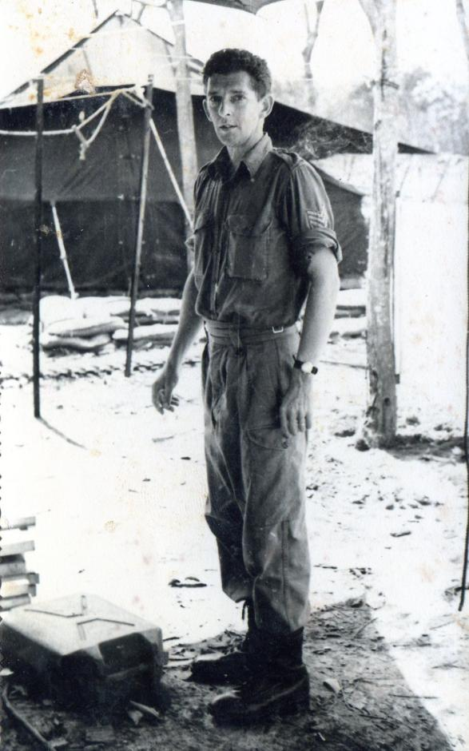
          <figcaption><span class="fignum">Figure 11.</span>Sergeant Dave King</figcaption>
        </figure>
      
    
      
        <p>We were attempting to define these various boundaries diagrammatically on a number of traces keyed in to the 1:50,000 maps and all we could do was to plot the boundary from a fairly rough trace annotated with a few notes provided by the TFHQ staff in the TOC. A better trace on chronaflex would then be taken off and dyeline copies made for distribution. The dyeline copies had numbered grid ticks around the edge. This appeared to be the standard procedure for distributing boundary information. On receipt of the dyeline the battalion or battery intelligence staff (or other staff) would then trace the detail from the dyeline onto tracing paper and from that transfer the boundaries shown onto their operational maps. It doesn’t require a great deal of imagination to visualise how significant discrepancies could creep into such a process. Furthermore, several versions of the TAOR were circulating. My diary for the 27 June records the problem as follows:</p>
      
    
      
        <div class="narrative">
          
          
          <p>Strike Zone diagram prepared. Some trouble experienced with exact position of TAOR boundary. This is loosely defined and its definition has several current versions; hence problems experienced in the register of strike zone and other traces showing earlier versions of TAOR boundary. Decision taken at staff level to adopt boundary of Strike Zone as authorative TAOR boundary. All future traces to incorporate a full grid as opposed to grid ticks for registration to overcome stretching of either base map or dyeline copy of trace. This has been found to be as much as 4%.</p>
          
        </div>
      
    
      
        <p>I don’t think that completely overcame the problem. Dyeline paper is like blotting paper. It absorbs moisture readily and swells laterally. Tracing paper also stretches in the direction of the roll but not so much across the roll. Hence you get a distortion – more stretch one way than the other. The problem of registration was manifest further when using this very inadequate procedure for showing inter-unit patrolling boundaries. The margin of error could be as much as a centimetre; at a map scale of 1:50,000, 500 metres on the ground. In calling in artillery fire such a discrepancy could be disastrous and even adjoining patrols could easily come into too close a contact.</p>
      
    
      
        <h3 id="army-tactical-symbols">Army tactical symbols</h3>
      
    
      
        <p>The army likes its “tactical symbols” to depict unit locations and on 29 June we commenced a further location plan of the 1ATF base area showing unit location with tactical symbols more or less based on the previous Nui Dat base plan but with more detail obtained from compass and pace traverses.  Sergeant Dave King and Sapper Ron Smith became tactical symbol experts.</p>
      
    
      
        <h3 id="duties-in-the-tactical-operations-centre-toc-operations-map">Duties in the Tactical Operations Centre (TOC) – Operations Map</h3>
      
    
      
        <p>At that early stage in June/July  the TOC operations map was simply “contact” covered maps joined and pinned to a large five ply sheet with boundaries and tactical symbols marked with chinagraph pencil – blue for own (friendly) units and red for enemy. Green and black came into it but I can’t remember for what purpose. Chinagraph leaves a residual stain that repeated rubbing with menthylated spirits can not remove and after a few weeks the map develops a murky hue and needs replacement. Later in our tour Dave King and Ron Smith were both called upon to revitalise the large 1:50,000 operations/battle map covering the TAOR and beyond in the TOC each morning; that is, tidy it up, re-drawing tactical symbols clearly and neatly.</p>
      
    
      
        <p>As well as the main operations map we maintained the Commander’s Battle Map at 1:50,000 scale. This was a more portable version of the former that was moved back and forwards to the Commander’s tent. I am not sure how we landed that job since it is traditionally the task of the Intelligence Section. I:50,000 was not the ideal scale for counter-insurgency operations and some thought was given to using the 1:25,000 Pictomap series but it quickly became apparent that the heavy green photo base of the Pictomaps made it difficult to see tactical detail marked thereon and the traditional line map, albeit at 1:50,000 scale, better served the purpose. Only when the 1:25,000 enlargement series was received in theatre from the AHQ Survey Regiment were we able to provide what finally became the standard operations map throughout the five years of our Vietnam involvement.</p>
      
    
      
        <h3 id="the-silk-screen-printing-equipment">The Silk Screen printing equipment</h3>
      
    
      
        <p>An important item intended for the Troop but not included in the Troop Detachment Q Series Table was a “silk screen” printing press. At the time of departure from Australia the silk screen equipment was considered to be not sufficiently tested although it had certainly been developed and manufactured. Following our battle efficiency training at Canungra I had been introduced to the process within the screen printing industry in Sydney by one or two past Survey Corps World War II veterans, printers, who had screen printing facilities as part of their printing businesses. I learned how extensively screen printing is practised in the print industry at that time using highly developed motor driven equipments. I gave the following description of the screen printing process in my Australian Army Journal article of September 1968: </p>
      
    
      
        <div class="narrative">
          
          
          <p>Briefly, silk screen printing is a process in which a line image is put onto a sheet of paper by means of a gelatinous stencil adhering to nylon fabric tightly stretched over a rectangular frame, the latter being referred to as a screen. The stencil may be cut by hand in a gelatinous film base, or prepared as a photographic negative on a photo sensitive gelatinous film base. The screen is contacted to the sheet of paper and ink is applied to the reverse side of the screen and wiped across the screen with a squeegee so pro- ducing an image on the paper co-incidental with the negative image on the screen (the ink passes through the screen along the lines forming the image. The gelatine substance is impervious to ink). The process can be likened to the Gestetner stencil duplicating principle - substituting a gelatine stencil for the wax sheet. The position of the paper under the screen can be adjusted against stops so that the image will fall in the same position on the paper, in relation to the edges of the paper, on successive sheets. Thus an image can be registered to the existing detail on a map, and on successive maps, in the form of an overprint. Also, by using successive screens and different colour inks multiple images can be obtained on the paper in different colours, registration between colours being maintained on successive copies<sup class="fn-ref">12</sup>. </p>
          
        </div>
      
    
      
        <aside class="footnote" role="note">
          <span class="fn-num">12</span>Operational Mapping and Surveys, South Vietnam 1966'67 R. F. Skitch, Royal Australian Survey Corps
1968. Silk screen printing is said to be the oldest form of printing, developed by the Chinese many centuries ago. It is
said that the technique allows an image to be placed on any chosen medium and hence in 1966 it was used especially
for putting a paint image onto tin plate or similar for the advertising industry, repeated copies in a number of colours. I
was told that it was possible to put an image onto the surface of water with a silk screen using French chalk! Screen
printing continues in the print industry today when images are required to be put down on stiff mediums – card, plastic
and the like – and the print run is relatively short.
        </aside>
      
    
      
        <p>It seemed to me that field testing in Australia was of little point and that the equipment should be deployed as soon as possible. On 29 June I prepared a submission for the Commander’s signature to introduce the screen printing equipment to the theatre the reason stated being the inability of the dyeline process to cope with the production of photo plots and enlargements. The submission had the full support of the GSO2 Intelligence, Major Rowe and the Task Force Commander Brigadier Jackson and is included as Annex D to this account.</p>
      
    
      
        <p>Coulthard-Clark records those first few weeks as follows: </p>
      
    
      
        <div class="narrative">
          
          
          <p>Meeting the task force's needs for detailed surveys of bases (needed for engineer construction and defensive planning), and large-scale maps for patrols, ambushes, and other operations such as 'cordon and search', became the detachment's main role in life. A considerable number of maps and diagrams were also produced for after-action reports and historical record purposes. Since the unit had only modest reproduction capacity employing a dyeline machine, whenever a thousand or more copies were needed resort was made to American offset printing facilities, initially at Nha Trang where the 569th Engineer Company (Topographic) (Corps) was based, and later at Long Binh after the 66th Engineer Company (Topographic) (Corps) moved in there during October 1966. Almost immediately, however, Skitch was impressed by the fact that the unit's own reproduction resources were 'hopelessly inadequate', especially in coping with the production of photo plots and enlargements. He began pleading for printing equipment held back in Australia on the troop's behalf to be sent forward.</p>
          
        </div>
      
    
      
        <p>I am not sure that I “pleaded” for the screen printing equipment. I simply raised and submitted the necessary paper work.</p>
      
    
      
        <h3 id="regulating-map-re-supply">Regulating map re-supply</h3>
      
    
      
        <p>Major Rowe was of the mind that it was time to better inform 1ATF units and units of the ALSG of an appropriate and unambiguous procedure for the ready supply of maps and at the same time provide information on what maps were available and their characteristics. Since arriving and setting up at Nui Dat we had simply handed out maps to whoever asked for them with as little formality as possible, keeping of course an internal distribution record. I was anxious that any formalised system promulgated would remain simple; not complicated by layers of approval. The resulting instruction signed off by GSO<sup class="fn-ref">2</sup> Int for the Commander held to that principle. Map requests could be made by written minute, signal or verbally “over the counter”. The instruction then specified the ways in which maps should be identified in placing an order such that the right maps covering the required area were supplied. Scales were explained and the characteristics of each of the map series available in Vietnam. The instruction dated 3 July 1966 went to all units of 1ATF and the ALSG and is included as Annex E to this account. At no time during the following twelve months was it necessary to revise any part of that instruction<sup class="fn-ref">13</sup>.</p>
      
    
      
        <aside class="footnote" role="note">
          <span class="fn-num">13</span>I reluctantly came to the conclusion that the standard of map appreciation, and worse, map reading was not high in the Australian Army. It was not uncommon for grid references to be incorrectly transmitted, that is, northings before eastings, and more times than not the marginal information would be sliced off the map to reduce its size. Thus, important information like „grid to magnetic angle‟ would be lost to the user.
        </aside>
      
    
      
        <h3 id="cantonment-survey">Cantonment Survey</h3>
      
    
      
        <p>The detailed survey of the whole of the Task Force base, the “cantonment area”, commenced in the last week of June. The intention was to provide a series of detailed plots at scales 1:1,000 and 1:2,000, each sheet to cover a 1,000 metre grid square. The grid square containing the TF headquarters was to be undertaken first and this was to be completed by the end of July. Each sheet was to be contoured to 1 metre interval and show a detailed layout of roads, unit areas and permanent buildings. Clearly the whole job was not going to be accomplished in a few days but would be ongoing probably for the duration of our tour.</p>
      
    
      
        <figure id="figure-12">
          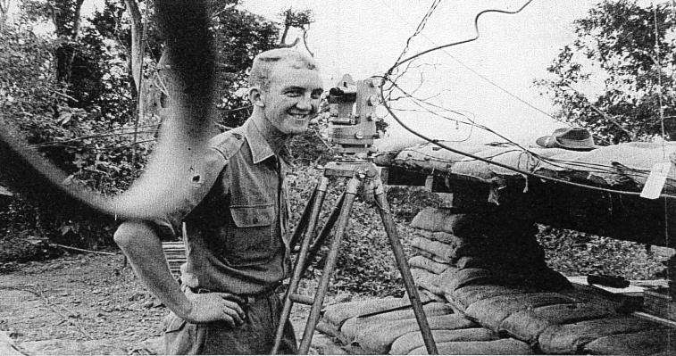
          <figcaption><span class="fignum">Figure 12.</span>Corporal Brian Firns on cantonment survey.</figcaption>
        </figure>
      
    
      
        <p>Each sheet would be undertaken in three stages: (1) controlled fourth order chain<sup class="fn-ref">14</sup> and theodolite surround traverse with connections to Nui Dat trig (AASV 001); (2) tacheometric survey for elevation and horizontal position of a general nature – roads, unit areas and (3) internal traverses with offset measurements to permanent structures. There were immediate objectives to be achieved and the preliminary survey has already been mentioned. As this task progressed, (and it took a lesser priority to that of meeting strict operation needs and theatre grid surveys) we developed expedient techniques particularly in incorporating the time honoured method of plane tabling in conjunction with tacheometry<sup class="fn-ref">15</sup>.</p>
      
    
      
        <aside class="footnote" role="note">
          <span class="fn-num">14</span>'Chain' is a common survey term applied to a measuring band or tape used for measuring distances along the ground. Its origin lays in the 'Gunter Chain' which was in fact a chain of 100 links. Each link made of steel is 7.92 inches long. 100 links = 66 feet or 22 yards (the length of a cricket pitch). The Gunter Chain gave way to steel measuring bands. In the Army and in civilian practice these are 100 metres in length but the old term 'chain' is commonly used; hence 'chaining' – measuring with a chain along the ground.
        </aside>
      
    
      
        <aside class="footnote" role="note">
          <span class="fn-num">15</span>The process of establishing height difference and distance by tacheometry involves quite tedious field-book reductions. An ongoing detail plot could be maintained on the plane table by keeping the theodolite on zero elevation (that is, like a dumpy level) directly reading height differences on the staff and simple horizontal distance from the staff intercept. Of course at times the telescope of the theodolite would need to be elevated or depressed and a more detailed reduction of distance and height difference carried out. With a party of three surveyors considerable progress could be made.
        </aside>
      
    
      
        <figure id="figure-13" class="portrait">
          
          <figcaption><span class="fignum">Figure 13.</span>Spr Derek Chambers ‘holding the staff’ on cantonment survey.</figcaption>
        </figure>
      
    
      
        <h3 id="primitive-camp-facilities-deteriorating-health-our-cook-rta-unit-morale">Primitive camp facilities – deteriorating health – our cook RTA – unit morale</h3>
      
    
      
        <p>Although the base area was taking shape fairly rapidly, facilities such as ablutions and latrines were very primitive. Some deep trench latrines had been dug – in one instance an old well had been utilised – sullage pits had been dug for ablutions, shower buckets slung over pallet bases and “pissafones” strategically positioned. A degree of privacy was achieved with hessian screens. I had certainly seen far better survey base camps erected. The thick red loam was not receptive to soakage and sullage pits rapidly filled, helped by the regular late afternoon tropical downpours we were now getting. I am sure a blind man could have found his way to the latrine by smell alone. It was to be some weeks before the facilities described improved to any extent.</p>
      
    
      
        <p>Private Brunning was hospitalised at Vung Tau with severe headaches and was returned to Australia on 3 July. I had seen little of Private Brunning since he had been allocated to the HQ pool of cooks although we continued to administer him. Despite a very controlled diet (ration packs) and pre-sterilised drinking water, dysentery was prevalent and often the demand for thunderbox access exceeded availability. The army tends to call any form of loose bowel condition “dysentery” so there were many degrees of severity lasting from a twenty-four hour spate to days, weeks and sometimes months. In my own case I suffered a variety of these – at least it kept my weight down. Heat rash was becoming a problem for some, especially the more hairy members of the Troop.</p>
      
    
      
        <p>Despite all of this unit morale remained high. My report for June comments: </p>
      
    
      
        <div class="narrative">
          
          
          <p>During the reporting period at Nui Dat two ½ days rest have been taken. About 30% of the technical strength has been required for duty at night on urgent work in support of operations. Morale since arriving at Nui Dat has been high despite the somewhat primitive conditions being experienced by sappers and corporals and the long hours of work. The high morale can be attributed to the fact that all members feel they are being usefully and effectively employed on tasks which have a very direct bearing on the operations in the theatre.</p>
          
        </div>
      
    
      
        <h3 id="the-task-force-base-routine">The Task Force Base routine</h3>
      
    
      
        <p>June ran to its close following the routine that had developed; 0530h stand to; breakfast of rubbery dehydrated scrambled egg and bread or some left over component of a 24 hour ration pack fried up into a bubble and squeak; a short administration parade at 0800h called by Troop SM Warrant Officer Christie where notices and relevant routine orders were read; all personnel to their duties following the parade; Intelligence meeting usually about 0900 chaired by GSO<sup class="fn-ref">2</sup> Int – not compulsory for me but I usually went; lunch at 1230h – of standard equivalent to breakfast; general stand-down at 1700h; Commanders Conference and briefing at 1700h (when in base I always attended); evening meal – 24 hour ration packs concocted into something by the cooks and then stand-to in weapon pits. Total blackout prevailed throughout the night. Work continued in our sweatbox draughting office often until midnight but not as a routine, only when production deadlines required although some would prefer to work into the evening if only to reduce the length of the night. Stand-to for other than outer perimeter units was discontinued in late June and reveille moved forward to 0630h.</p>
      
    
      
        <h2 id="july-1966">JULY 1966</h2>
      
    
      
        <h3 id="hoa-long-village-our-first-complete-production-map">Hoa Long village – our first complete production map</h3>
      
    
      
        <p>Hoa Long village two kilometres south of the 1ATF base continued to be an object of great interest to the Task Force, both in tactical and civil action terms. It was desirable for the residents of Hoa Long to feel comfortable in having this foreign military complex located on their northern border with all its artillery, armoured personnel carriers and armed convoys of trucks passing through their midst daily. Conversely we needed to be sure that Hoa Long would not become a harbour for Viet Cong units uncomfortably close to the Task</p>
      
    
      
        <figure id="figure-14">
          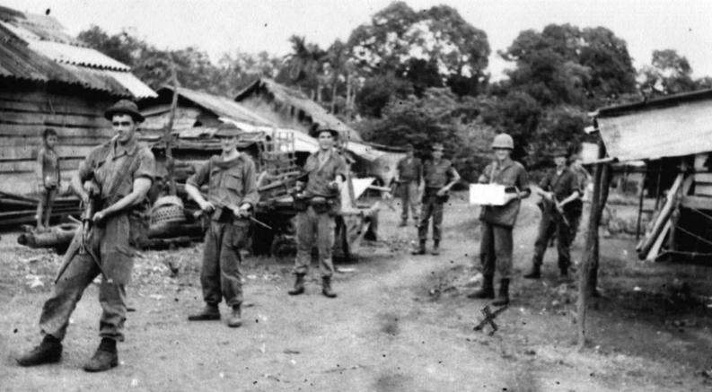
          <figcaption><span class="fignum">Figure 14.</span>Map annotation in Hoa Long village. Protection provided by C Company 6RAR. Sapper Brian Firns in ‘hard hat’. (Photo taken by WO2 Dave Christie) </figcaption>
        </figure>
      
    
      
        <p>Force that might harass our perimeter defences night after night. Neither did we want to create a situation where villagers might be seen by the Viet Cong as too close to the Australian force and become a target themselves of Viet Cong reprisal action. It was an ambiguous relationship and needed to be handled with a degree of sensitivity. At least that is the way I saw it and the way it was often discussed in the Intelligence morning briefings at which civil action was usually represented. It was with this in mind that in early July we commenced a detailed survey of the village, a “once and for all” effort that on completion set the pattern for village plans and maps thereafter.</p>
      
    
      
        <p>I had become aware, perhaps advised by my Intelligence colleagues, that a cadastral (property boundary) plan of Hoa Long of French colonial origin at a scale of 1:4,000 could be obtained from the provincial office in Baria. On 4 July with Sergeant King and the US provincial adviser from Baria (visit arranged through him) we visited the provincial office and collected a copy of the said plan. The office was staffed by a number of Vietnamese male public servants who were very helpful and to a person had good command of English although I was told that the “language of the public service” was French – probably no longer the case. The US adviser (if that is what he was) seemed to be on very good terms with the senior staff. Of course I soon found that one could not visit a Vietnamese office of any nature, civilian or military, but especially the former without accepting hospitality; Vietnamese green tea and small rather soft and gooey cookies – neither a cake nor a biscuit. Not unexpectedly, the cadastral plan bore little relationship with the detail of Hoa Long village. The plan showed a conventional grid pattern of roads/tracks while on the ground the tracks wandered all over the place, many being little more than walking pads – as one would expect. Nevertheless we were able to identify a few salient points that were clearly the result of some sort of survey and these were useful enough when the cadastral plan was reduced in scale to 1:5000 and overlain with the 1:5000 photography. These could be used for scale and azimuth at that early stage although improved later by ground survey and a connection to the now established Nui Dat trig (AASV 001). Finally, it was only possible to get one line of intervisibility into the village and therefore only one absolute position (AASV 002). My report for July notes this fact and that due to time and security limitations a chain and theodolite traverse to a second control point was out of the question. Hence Hoa Long (Special) was dependent on the French cadastral plan for scale and azimuth.</p>
      
    
      
        <figure id="figure-15">
          
          <figcaption><span class="fignum">Figure 15.</span>In Hoa Long Village – A young soldier in our protection group gets popular with the children</figcaption>
        </figure>
      
    
      
        <p>My monthly report for June included the following statement on Hoa Long…</p>
      
    
      
        <div class="narrative">
          
          
          <p>Hoa Long village lies approximately 2000 metres south of Nui Dat. The village is being pacified and placed under strict supervision and control. In addition to this it is being subjected to an intensive civil aid programme. Det 1 Topo Svy Tp is preparing a detailed plot of the village and its surrounding environs at a scale of 1:5000. To this end a 1:4000 French Colonial Cadastral Plan has been procured from the Provincial Cadastral Survey Office, Baria<sup class="fn-ref">16</sup>. This is being reduced to the scale 1:5000 and used as a base to plot detail from recently flown vertical photography at a scale of 1:5000. To satisfy the immediate requirement, position is being taken from the 1:50,000 map sheet. Subsequently it is intended to carry out a connection from Nui Dat to two points in the village. The grid will then be block adjusted if necessary. A final check of the plot will be carried out both from the air and by vehicle at a convenient stage.</p>
          
        </div>
      
    
      
        <aside class="footnote" role="note">
          <span class="fn-num">16</span>The acquisition of the French cadastral plan of Hoa Long occurred on July 4. The June report was compiled in July
and covered events up to the point of publication.
        </aside>
      
    
      
        <p>The reader of this account might wonder at the apparent complexity of a plan to carry out what might seem to be a relatively simple task; to make a detailed map of a small village covering no more than four square kilometres and from the distance of forty years I wonder a little myself. My diary records our tasking plan as follows:</p>
      
    
      
        <ol><li>Annotation of photos (9”x14”) flown from Jun 66 under cloud, scale 1:5000.</li><li>Reduction from 1:4000 to 1:5000 of cadastral plan onto compilation work sheet.</li><li>Base lining and minor control selection on 9”x14” photographs.</li><li>Principal point (PP) traverse plotting using recognisable detail from cadastral plan to provide scale and azimuth. Position initially scaled from current 1:50,000 series at three related points on the plot. </li><li>Cutting in of detail onto PP traverse strips.</li><li>Transfer of detail from PP strip plots onto master compilation sheet.</li><li>Connection from Nui Dat (AASV 001) to plotted point on northern part of village.</li></ol>
      
    
      
        <p>Each entry to the village for any ground task required the provision of infantry protection, sometimes provided by the local ARVN Sector HQ but preferably (to us) by a section from one of the battalions. (It was not uncommon for our ARVN protection to simply evaporate as the day progressed and more times than not they would be lazing about with weapons left lying on the ground.) My July report comments that</p>
      
    
      
        <div class="narrative">
          
          
          <p>'the size of the protection party varied with the known ‘friendliness’ of the locality from a minimum of three per survey party to a full infantry section. (At that time) Hoa Long averaged conservatively 1-2 VC incidents each 24 hours’. </p>
          
        </div>
      
    
      
        <p>Such entry had to be planned on a sporadic basis so that a pattern of activity could not be identified by any interested Viet Cong. Air support for aerial checking was always available from Army Aviation’s “Possum Flight” (Bell Sioux helicopters) although close to ground flying was generally considered a little too risky. In any case, the ground detail was too complicated – a mess of shanty dwellings, tracks and cultivations overhung with trees of all sorts – for aerial annotation to be very effective. Of course the “office” aspects of the task proceeded although sometimes delayed awaiting completion of a field phase. Hoa Long (Special) was completed on 29 July and the colour separates were taken to Nha Trang for offset printing by 569 Engr Co (Topo)(Corps); 1200 copies.</p>
      
    
      
        <p>The completion and printing of Hoa Long (Special) was in my mind a significant mark of achievement for the Troop. A three colour map produced in the most primitive conditions, fair draughted in conditions of high humidity and almost unbearable heat, at night sealed in a light proof hot box, mud overlapping the tops of boots – it was a remarkable effort although one barely commented upon by HQ staff at the time. Perhaps it was simply what they expected of Survey, although I doubt many even knew what to expect. In fact it produced more comment from our US friends at Nha Trang and later Saigon. Nevertheless, as stated in my July report:</p>
      
    
      
        <div class="narrative">
          
          
          <p>‘the sheet has been well received by 1ATF and local provincial civil and military authorities’.</p>
          
        </div>
      
    
      
        <h3 id="i-meet-captain-charles-mollison">I meet Captain Charles Mollison</h3>
      
    
      
        <p>A further source of protection provided for our meanderings within Hoa Long village was the Hoa Long Commando Company, my diary records commanded at that time by Captain Charles Mollison, seconded from 6RAR. Certainly that unit provided more consistent protection than “soldiers” from the ARVN Sector HQ. Perhaps the presence of Captain Mollison as their OC ensured that. I believe I would have met Charles at that time although I have no clear recollection of doing so. Had I not done so I doubt whether his name would have appeared in my diary. Charles had been OC of Alpha Company 6RAR and returned to that appointment a few weeks later, in sufficient time to play a very significant role in the “Battle of Long Tan” in mid August.<sup class="fn-ref">17</sup> In 1971 I attended the Australian Staff College with Charles although I don’t think we ever made the “Vietnam connection” during that year.</p>
      
    
      
        <aside class="footnote" role="note">
          <span class="fn-num">17</span>Lieutenant Colonel Charles Mollison has written and published the history of Alpha Company 6RAR in Vietnam –
1966-67 Long Tan and Beyond published by Cobbs Crossing Publications, Woombye, Australia 2004, PO Box 82,
Woombye, Queensland 4559. www.cobscrossing.suncoast.com.au.
        </aside>
      
    
      
        <h3 id="map-3-hoa-long-special">MAP 3 HOA LONG (SPECIAL)</h3>
      
    
      
        <figure id="figure-16" class="portrait">
          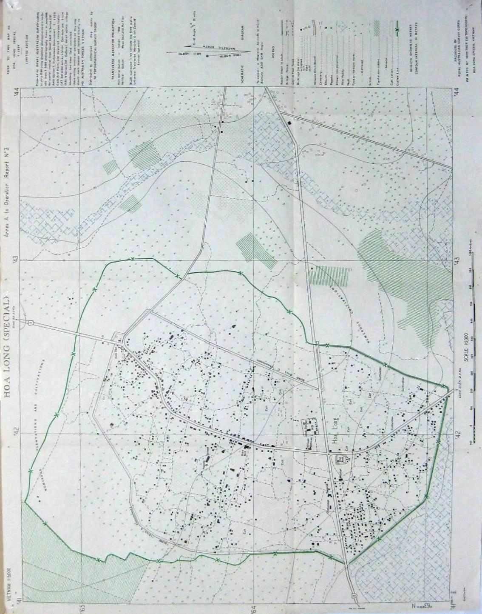
          <figcaption><span class="fignum">Figure 16.</span>This is the first map produced by the Troop in Vietnam at its first location, completed on the 29 July 1966. The map was printed by 569 Engr Co (Topo) (Corps) at Nha Trang. 1200 copies were printed. This copy was included as Annex A to the July Operational Report.</figcaption>
        </figure>
      
    
      
        <h3 id="the-vietnamese-civil-service">The Vietnamese Civil Service</h3>
      
    
      
        <p>My limited experience with civilian staff in the Baria Provincial Office caused me to reflect a little on the civil functioning of South Vietnam at that stage of the war. Whether at that time communist insurgency as we termed it was viewed as “war” by the civilian infrastructure is questionable. The civil functioning of the country somehow continued. The structures of government seemed to remain in place. Some levels of industry seemed to survive. The port of Saigon remained busy with cargo coming and going – civil cargo that is. French plantation (mainly rubber) ownership continued and I believe that the Australian government paid some sort of rental to a French consortium for the area we occupied at Nui Dat. We had to pay compensation for any rubber tree we destroyed and this became a significant problem in about November as a result of an incident I will recount later. There were many ambiguities in our being there, particularly in our relationship with the official civil community, always said to be well infiltrated by the Viet Cong or its broader political structure. One never quite knew who one might be dealing with in either the Vietnamese civil or military communities. Vung Tau with its myriad of small traders was said to be heavily infiltrated by Viet Cong and probably was. I do not recall a single hostile incident occurring in Vung Tau during my tour – if there was it was low key and not spoken of even in the intelligence briefings. Some said that Vung Tau was a major collection centre for intelligence by the VC and as much a R&amp;C centre for them as it was for us. Maybe!</p>
      
    
      
        <figure id="figure-17">
          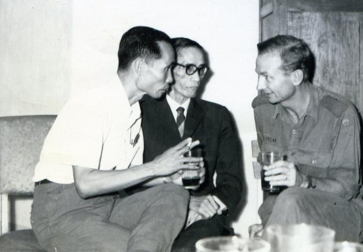
          <figcaption><span class="fignum">Figure 17.</span>Captain Bob Skitch liaising with provincial government officials</figcaption>
        </figure>
      
    
      
        <h3 id="morning-tea-with-the-aavn-sector">Morning tea with the AAVN Sector</h3>
      
    
      
        <h3 id="commander">Commander</h3>
      
    
      
        <p>Occasionally unexpected opportunities arose for gaining some further insight into the echelons of the AAVN. On 9 July I was invited to participate with the Commander 1ATF and two or three HQ staff officers (Maj Rowe certainly – not sure of the others) in an outwardly social occasion by way of morning tea with the AAVN Sector Commander Lieutenant Colonel Le Duc Dat at the AAVN Sector HQ in Baria. I say “outwardly social” because nothing that happened in Vietnam was not without purpose. The invitation was from the Sector Commander to the Task Force Commander and although they had had previous meetings (so I gathered from the conversation) Le Duc Dat was interested in personally assessing the Australian officers, perhaps not for the right reasons. I have no idea why I should be included in the morning tea delegation – perhaps because I was available and quite close to our GSO<sup class="fn-ref">2</sup> Intelligence, Major Rowe. The morning tea took place in a somewhat decrepit two story building (all buildings in Baria looked decrepit) probably of French origin on the upper level in a room with french doors overlooking the street below.</p>
      
    
      
        <h3 id="in-baria">in Baria</h3>
      
    
      
        <p>The Vietnamese Colonel was certainly an officer and a gentleman in the French tradition. His perfect English was with a decidedly French accent (cultivated I suspect). He called Brigadier Jackson “Mon Generale” an epithet our Brigadier clearly enjoyed (he later commented on it in the Mess). We were offered hard spirits – I noticed the bottle of Johnny Walker scotch had a black label, French white wine or Vietnamese green tea. We all chose the latter, taking our lead from “Mon Generale”. Again slightly soggy and very sweet cookies were offered and we all sampled these – out of courtesy to our host of course. The conversation was very much between Jackson and Le Duc Dat, very polite and it seemed to me inconsequential. Each of us was in turn brought into the conversation mainly to comment on broad social issues, Australian related perhaps. Being given the nod by Brigadier Jackson I briefly explained our use of the French 1st order triangulation scheme on which we were basing our theatre grid. The Vietnamese Colonel gave me his attention and seemed to imply that he knew what I was talking about. After about an hour, Brigadier Jackson rose to his feet followed by the Colonel and the rest of us and after goodbyes and gentle hand shakes, we departed. Colonel le Duc Dat came to an unpleasant end at the hands of the Viet Cong a couple of years later.</p>
      
    
      
        <h3 id="defoliation-strip-map">Defoliation Strip Map</h3>
      
    
      
        <p>July continued and apart from the Hoa Long (Special) numerous other tasks were undertaken. One of interest that related to Hoa Long was a strip map extending 500 metres either side of the Provincial Route 2 between Hoa Long and Nui Dat showing details of all cultivations, in both extent and type. Following the initial photo plot extensive field annotation was necessary with the aid of an interpreter and with protection provided by the Hoa Long Commando Company. The purpose of the strip map was to provide the basis for compensation to landowners subsequent to defoliation taking place. The map was titled a “Defoliation Strip Map”.</p>
      
    
      
        <h3 id="pre-operational-work">Pre-operational work</h3>
      
    
      
        <p>Much of the work undertaken was in direct support of operations. A revised photo plot of Xa Long Tan from new photography was compiled for Operation Hobart for 6RAR. A moment’s reflection would indicate that pre-operational products of this nature carried a high but unstated security classification – the operation could easily be compromised if undue attention was visibly given to the location. As a small precaution plotted manuscripts would not be named until completed and passed to HQ 1ATF and the unit concerned.</p>
      
    
      
        <p>A similar task for the 5RAR proposed cordon and search operation Sydney 2 was undertaken of Binh Ba South covering Duc Mi hamlet north of Nui Dat<sup class="fn-ref">18</sup>.</p>
      
    
      
        <aside class="footnote" role="note">
          <span class="fn-num">18</span>The process of establishing height difference and distance by tacheometry involves quite tedious field-book reductions. An ongoing detail plot could be maintained on the plane table by keeping the theodolite on zero elevation (that is, like a dumpy level) directly reading height differences on the staff and simple horizontal distance from the staff intercept. Of course at times the telescope of the theodolite would need to be elevated or depressed and a more detailed reduction of distance and height difference carried out. With a party of three surveyors considerable progress could be made.
        </aside>
      
    
      
        <h3 id="an-unexpected-find">An unexpected find</h3>
      
    
      
        <p>Sometimes the unexpected turned up. Dave Christie and a small annotation party in Hoa Long found a cache of “unexploded bombs” – 155mm shells and 120 mm mortar presumably picked up for VC future use in one form or another. They also discovered a small school unknown to either local administration or ourselves teaching mathematics to eleven year old children. Life for some continued despite the war. The discovery was reported to sub-sector HQ, Counter Intelligence and civil affairs. Dave’s annotation party had an infantry section from 6RAR for protection that day.</p>
      
    
      
        <h3 id="troop-work-pressures-build-up">Troop work pressures build up</h3>
      
    
      
        <p>The following task listing will give some indication of the intensity of work being undertaken by the Troop at that time:</p>
      
    
      
        <p> Hoa Long Special 1:5000 map  Defoliation Strip Map  Long Tan Photo Plot  Binh Ba South enlargement  1ATF Cantonment Survey and plots  Photo Plot of Binh Gia village commenced  Photo Plot/map enlargement of Nui Nua Island and Xa Long Son village  Landing Zone Plot of 1ATF Area of Operations  Vung Tau overprint started but shelved  Annexes to Combat Operations After Action report – Operation Enoggera  Sundry traces and plans – eight in all covering annexes to 1ATF Standing Operating Procedures (SOPs); amendments to boundaries and strike zones, report covers etc.</p>
      
    
      
        <p>Not all tasks were operation orientated; my diary notes “diagrams relating to Courts of Inquiry”.</p>
      
    
      
        <p>There was always pressure to undertake more and more, particularly the smaller “urgent” tasks that often might be accompanied by the comment “this should take no time at all”. But of course the accumulative effect was considerable. At one point I discussed with Major Rowe issuing some sort of policy device specifying what we should or should not accept but he resisted this and simply said that I should refer to him any task I considered inappropriate. I think that had an unfortunate and unintended consequence. We had until then worked fairly directly with each of the battalions helping with small tasks, patrol report diagrams and the like. My contact was generally through the battalion Intelligence officers, Captain Bob O’Neil (5RAR)19 and Captain Bryan Wickens (6RAR). I became aware that both had been advised that all future contact with the Troop was to be through the TF HQ and that the Troop was specifically a 1ATF HQ unit. Oddly enough nothing was ever said to me and I have no idea how the proposition had been conveyed to them but I recall having a very cool telephone conversation with Bryan Wickens in late July. This was a little confounding since some weeks before he had sent me a memo signed off by the Battalion Commander, Lieutenant Colonel Townsend commending the Troop and (somewhat embarrassingly, myself) for the exceptional support the Troop had given  6RAR . I was a little aggrieved but never got to the bottom of it. I suspect I had more on my mind than personal slight.</p>
      
    
      
        <h3 id="we-improve-our-accommodation">We improve our accommodation</h3>
      
    
      
        <p>Having finally received our allocation of 16”x<sup class="fn-ref">10</sup>” tents, on 15 and 16 July it was a case of down tools and do some work on the sappers” and corporals” living accommodation. Replacing the “tents portable survey” that had previously provided our survey soldiers with a better standard of accommodation than most in the task force area, two 16”x<sup class="fn-ref">10</sup>” tents were erected with a 16”x<sup class="fn-ref">19</sup>” paulin between providing something like a breeze way and messing area. Some concrete hard standing was poured in the work area and permanent overhead cover completed on all protection pits. Sand brought from Vung Tau by the trailer load and occasional truck load (which Dave Christie was able to divert to our location) had gone a long way towards consolidating the ever present mud in what by mid July was the height of the wet season.</p>
      
    
      
        <aside class="footnote" role="note">
          <span class="fn-num">19</span>Lieutenant Colonel Charles Mollison has written and published the history of Alpha Company  6RAR  in Vietnam – 1966-67 Long Tan and Beyond  published by Cobbs Crossing Publications, Woombye, Australia 2004, PO Box 82, Woombye, Queensland 4559. www.cobscrossing.suncoast.com.au.
        </aside>
      
    
      
        <h3 id="pictomaps-arrive">Pictomaps arrive</h3>
      
    
      
        <p>On 19 July we received bulk supplies of Pictomaps from the Engineer Map Distribution Platoon in Saigon. Warrant Officer Christie had arranged delivery by LSM to Vung Tau when he visited the Distribution Platoon in Saigon a few days before for that express purpose. Commuting to and from Saigon was easy enough and no particular authority was needed. One simply reported to the US ACTO (movement control) at Vung Tau airport and that was it. It occurred to me that one could do quite a Cook’s tour of Vietnam on that basis. Certainly the system tightened up as time passed and often we were able to commute to and fro in our own RAAF fixed wing and rotary wing aircraft.</p>
      
    
      
        <p>With 500 sheets of each pictomap (double sheets at 1:25,000 scale) now on our hands the inadequacy of our map storage was especially apparent. It took some time to overcome and not before our unit move in August, but more on that later.</p>
      
    
      
        <h3 id="contact-and-mipofolie-map-consumption">Contact and Mipofolie – map consumption</h3>
      
    
      
        <p>The hot, wet and humid conditions as well as the very nature of infantry patrolling operations ensured that the life of an unprotected map in the field was perhaps only a day or two. To my surprise both battalions and the SAS Squadron had brought with them (I assumed) quantities of adhesive clear plastic of the trade name “<em>Contact’</em>. When adhered to both sides of a paper map it rendered the map waterproof and certainly capable of lasting the duration of a patrol. Furthermore it could be annotated with a chinagraph pencil if needed. However, unit supplies of <em>Contact</em> were rapidly exhausted and it became incumbent on the Troop to obtain resupply on a theatre wide basis. Major Rowe obtained the support of the TF Commander to submit an RVE together with a justification to obtain a substantial quantity of the material. On the evidence of map usage to that date I calculated that the requirement for six months usage was 740 rolls each measuring 25 metres in length and 1.2 metres in width, that is, 302 square feet per roll. This was a very expensive undertaking indeed and I was a little horrified at the total cost; however, Major Rowe was not the least bit fazed. I recall him telling me that he equated the cost against that of an APC in his argument to Brigadier Jackson – what do we need the most; full protection of all maps issued or half an APC? I thought it was a bit over the top, however, Jackson gave it his support and I prepared the justification for his signature. The justification requested that <em>‘immediate action</em> <em>be taken to supply   1ATF with 300 rolls of Contact/Mipofolie to meet the immediate operational</em> <em>requirement, with delivery effected by courier aircraft’</em>. It was <em>‘further requested that the remaining</em> <em>440 rolls, to make up the estimated 6 month requirement, be delivered to the theatre within 3</em> <em>months’</em>20. The letter departed HQ   1ATF on 3 August and is included as Annexes F and F<sup class="fn-ref">14</sup> to this account. My comment in my AAJ article published in 1968 reflects on the problem:</p>
      
    
      
        <div class="narrative">
          
          
          <p>Detachment 1 Topographical Survey Troop operated a map store and distributed maps to all task force units and the ALSG. Maps were available from the map issue point at any time and in any reasonable quantity. During the period June 1966 – May 1967, 46,700 maps were issued to task force units and the ALSG. This figure is not high by normal standards and certainly not by American standards in South Vietnam. This was due to two factors:</p>
          
          <p>1. The comparatively static role of Australians in Vietnam. 2. The use of self adhesive plastic sheeting ('Contact' or ‘Mipofolie’) to increase the life of the map.</p>
          
        </div>
      
    
      
        <p>The Troop undertook the equitable distribution of <em>Mipofolie</em> to task force units, since it remained in limited supply during the 12 months. The object in using the material was to increase the life of the map, so eliminating any requirement for map re-supply during an operation. Such re-supply could have a security risk with old maps, possibly marked and left lying around. In fact, a map covered with <em>Mipofolie</em> will last six months without any problems.</p>
      
    
      
        <h3 id="longer-term-tasks">Longer term tasks</h3>
      
    
      
        <p>As well as meeting the immediate operational requirements of 1ATF in July the Troop commenced two longer term tasks, one being the identification and plotting of potential helicopter landing zones and the other an agricultural map of Phuoc Tuy Province, the latter essentially a civil affairs project. Inspection of the aerial photography seemed to indicate numbers of apparently clear patches of small extent, one or two acres perhaps, sometimes more throughout the Province within the heavier vegetated areas, natural forest, plantations and other cultivation. These were seen by helicopter pilots as potential LZs for either emergency landings or the insertion or extraction of infantry patrols. The pictomaps showed these patches as bright yellow surrounded by a sea of green but of course that was a unreliable indicator of what lay on the ground<sup class="fn-ref">20</sup> Making a preliminary assessment of clearings by photo inspection (Sapper Joe O’Connor undertook this task) marked maps were then passed to the USAAF liaison officer (he volunteered) to carry out a low level airborne assessment of each potential clearing – there were dozens. The task did not get very far; the USAF LO’s initial enthusiasm rapidly dissipated and since that appointment changed every few weeks enthusing subsequent appointees became an increasing difficulty. Perhaps something was achieved if only from Joe O’Connor’s careful photo analysis.</p>
      
    
      
        <aside class="footnote" role="note">
          <span class="fn-num">20</span>Cordon and searches became something of a „bread and butter‟ job for both battalions; nevertheless they took a lot of organising. A cordon of company strength would be placed around the perimeter of the village well before first light. Then at first light a second company would conduct a coordinated sweep through the village making a great deal of noise in the process. The intent was to flush out any VC who would then be picked up by the cordon. This would be followed by a detailed search of every dwelling looking for ammunition, weapons and even food caches. The photo plot produced by the Detachment became an important instrument in planning the placement of the cordon and the subsequent detailed search of dwellings. The active part of the operation might be over by midday and in the afternoon medical and dental teams would be helicoptered in and carry out a „civic action‟ program. As the process became more sophisticated, the 1ATF band would be inserted to give the whole event a carnival atmosphere. The object was to „win hearts and minds‟ – WHAM!
        </aside>
      
    
      
        <h3 id="support-of-civil-affairs">Support of Civil Affairs</h3>
      
    
      
        <p>The Task Force Civil Affairs Unit was not, to the best of my knowledge, on the task force order of battle. If it was, it was not manned. There is no doubting the need for such an enterprise – the Americans were very strong on the concept and in 1966 they envisaged a time when the war would be won with pacification complete and the nation with their help would move into a post-war reconstruction phase. Commander  1ATF directed that all units were to support the creation of a civil affairs unit with seconded personnel and general support. Because civil affairs was under the general aegis of task force intelligence inevitably our survey troop was asked to contribute. Major John Donahoe was the appointed civil affairs officer. I do not know whether Major Donahoe was appointed from Australia or whether he had held a previous in-theatre appointment. He was certainly committed to the role of civil affairs and I suspect he had had some background in that type of work.</p>
      
    
      
        <p>On 27 July I attended a conference of all TF unit representatives called by the Commander during which we were asked to make a “civil affairs” commitment. I had given some thought to the matter; I suspect I had discussed it with my two warrant officers, and as a result offered my driver/batman, Private John (Boots) Campbell on an “as required” basis not to exceed three days in a week. “Boots” was a sort of right hand man to Dave Christie in his DSM role and could scrounge with the best, however, the line between scrounging and outright stealing needed to be observed and Boots sometimes failed to do so – with the best of intention. Boots was often a source of frustration and annoyance to Dave Christie but kept in check he served the Troop well. Certainly I had no need of a batman to clean my boots and look after my laundry nor did I need a driver. At a lesser level I suggested the Troop could assist the local school with training aids and mounted Hoa Long maps, the latter also for village officials.</p>
      
    
      
        <p>Of greater significance I raised the concept of an agricultural map of the Province and its application in the area of civil affairs. My July report suggests two versions; (1) an overprint of the 1:50,000 series with monochrome background for tactical purposes, and (2) .a line drawing with schematic detail and Vietnamese nomenclature for school classroom use as a civil affairs program. I think the idea of such a map developed in my mind from my association with US mapping staff who devoted a great deal of time and resources to such products. The “defoliation compensation map” covering the strip 500 metres either side of Route 2 from Hoa Long to Nui Dat was a sample of what might be achieved for the whole Province but at a much smaller scale and therefore much less detail. In my AAJ article of September 1968 I comment: <em>….another task often</em> <em>discussed at Nui Dat but never effected. This was to have been an agricultural map of Phuoc Tuy</em> <em>Province showing in the form of an overprint on a subdued base areas and types of agriculture</em> <em>and planting and harvesting times</em> of every <em>commercial food or textile crop in the Province. This</em> <em>was to have been completed from map and air photo assessment, air visual reconnaissance and</em> <em>information from Provincial officials. One might well ask what earthly use this would be to current</em> <em>operations. Viet Cong activities in Phuoc Tuy Province largely revolve around the collection of rice</em> <em>and other food commodities. The Province has been an important food supply area to them. To</em> <em>say more than this is unnecessary….</em></p>
      
    
      
        <p>Both of the above mentioned maps were clearly in consideration as July came to an end. My diary notes that on 26 July I visited Sector HQ in Baria to obtain information for the landing zones map and then to US Major Carter of USAID to liaise on the agricultural map of the Province. Major Carter was enthusiastic about the concept and offered whatever assistance his small staff could provide.</p>
      
    
      
        <h3 id="new-series-1-50000-maps-and-an-enlargement-series-at-1-25000">New series 1:50,000 maps and an enlargement series at 1:25,000</h3>
      
    
      
        <p>On 28 July I was delighted to receive a signal from Survey Directorate advising that the L7024 (new series 1:50,000 maps) reproduction material was to hand and enlargements to 1:25,000 would proceed immediately. OC Troop was required to select sheet names. In the event after discussion with Warrant Officer Rollston and Sergeant King I decided that we would adopt the 1:50,000 sheet name for each set of four 1:25,000 maps, with the addition of NE, SE, SW and NW.</p>
      
    
      
        <h3 id="excellent-support-from-the-directorate-of-military-survey">Excellent support from the Directorate of Military Survey</h3>
      
    
      
        <p>The support I had from Survey Directorate throughout our first 12 months in Vietnam was excellent and I would assume that continued for the five year duration of the war. Every request I made received full support and was actioned immediately. Our Director, Colonel Donald Macdonald rated Survey’s Vietnam involvement the Corps” top priority commitment. Particular Directorate officers that come to mind are Major Bill Childs on materiel requests, Major NRJ (John) Hillier on production matters and in the background, Warrant Officer Class 1 Frank White on specific technical requests. I had a letter from Major Hillier at Christmas 1966 (which I regret I didn’t keep) expressing his personal gratitude for all we were doing. I suspect he saw our Vietnam involvement, our acceptance in the theatre, as going some distance in ensuring the future of the Survey Corps within the overall context of the Australian Military Forces; in developing respect in the broader arms and services for the contribution Survey could make on their traditional ground.</p>
      
    
      
        <h3 id="binh-gia-village">Binh Gia village</h3>
      
    
      
        <p>The photplot of Binh Gia village north of Nui Dat was a task undertaken of our own initiative. Commenced in June, plotting from available photography proceeded sporadically throughout July. HQ 1ATF was largely disinterested in it, not foreseeing any immediate operations involving Binh Gia perhaps because it was under the more pervasive control of the nearby ARVN encampment. Nevertheless I persisted, thinking that we would at least be prepared should something develop later. Binh Gia had an interesting shape, quite different from most other villages in the Province with the possible exception of Baria, the provincial capital. Instead of the usual more or less circular “blob” with access tracks meandering in every direction, Binh Gia hugged the east-west Route 327 with “streets” parallel to 327 one or two back either side. At the junction of Route LTL 2 (north-south through Nui Dat) and Route 327 was an ARVN military base and Binh Gia commenced about a kilometre to the east. The village was 5 kilometres in length along Route 327 and at its widest point a kilometre north-south. It was surrounded by a high bund, topped with sporadic lengths of fencing, presumably for control and protection. Binh Gia was in fact a “resettlement village” created by the US army after a search and destroy operation in the northern part of the Province in 1965 for “pacification” purposes. As far as I could see on occasional visits to the village (for reasons I will describe later) village life proceeded fairly normally although the dwellings within constructed of sawn timber (lumber to the Americans) and light weight corrugated iron, were decidedly un-Vietnamese.</p>
      
    
      
        <h3 id="living-and-work-accommodation-improves">Living and work accommodation improves</h3>
      
    
      
        <p>By the end of July the Troop had settled in quite well to our allocated space. Our work area had been improved with some hard standing and Vung Tau sand to stabilise the mud; 16”x<sup class="fn-ref">10</sup>” tents for accommodation sandbagged to the height of a metre on all four sides, had replaced the small two- man tents portable survey and the 11” x<sup class="fn-ref">14</sup>” light weight tents used for personnel accommodation. Both warrant officers and sergeants lines and corporals and sappers lines were clean and comfortable, generally better than most other unit areas. (Most of the 16” x 16” canvas had WW<sup class="fn-ref">2</sup> dates stencilled on them – the Australian Army never ceased to surprise me!) In early August Army Amenities supplied a “National” shortwave/medium wave transistorised radio which played incessantly thereafter, locked on to the US Armed Forces station (ASVN)22. In the evening we would attempt to pick up Radio Australia for the ABC news broadcast with only limited success. Perhaps my only misgiving in the arrangement was that with the exception of my own and our two storemen, living accommodation was some distance from our work area. Total black out still applied at night and wasn’t to be lifted until October. However, flash lights were becoming increasingly obvious through the rubber trees at night as people picked their way from tent to tent or to and from the tented messes and work areas. Brigadier Jackson had something to say about that at one if his daily conferences – he would draw his pistol and shoot any light he saw infringing the darkness! His cool rather sharp way of expression left one in no doubt that he would but of course we really knew he wouldn’t. There were a few raised eyebrows – Jackson was given at times to theatrical overstatement.</p>
      
    
      
        <h3 id="1st-australian-task-force-shield">1st Australian Task Force shield</h3>
      
    
      
        <p>It was in July that a small task came our way that in itself certainly had no tactical significance and was no burden on our draughting resource but which was not without its significance within the theatre and beyond. This was the design and of a 1st Australian Task Force “shield” for use on report covers and, as it turned out, Task Force documents of all types. I gave the task to Dave King. Of course it had to feature a kangaroo and search as we would, we could not find a suitable shape for a kangaroo. I seem to recall that someone found an Australian penny in their trunk and the “penny kangaroo” was taken as a model. It might have been the Qantas flying kangaroo but I think not; I feel sure it was the penny. There was nothing particularly remarkable about the design; a simple shield featuring the then South Vietnam flag colours of red and yellow – a yellow shield with a red border – and the kangaroo in Aussie green leaping in full flight from left to right. One could also claim that the green and yellow were our own national colours although at that time Australia’s national colours were blue and gold. Initially we could only reproduce the shield in black and white on the dyeline printer but it looked quite acceptable, presenting a clean, sharp image quite unmistakably Aussie. Some variations of the shield crept in such as a red kangaroo and green border but generally the design concept remained, as far as I am aware for the five-year duration of the Task Force involvement in Vietnam. Some time in 1966/67 a metal version of the shield was made locally and fixed to a polished wooden mount (the Vietnamese were very good at producing this sort of thing). Large numbers were eventually produced and sold at a cheap price to our soldiers and others presumably. I heard at one point that they could be purchased in street trader’s stalls in Vung Tau and Baria.</p>
      
    
      
        <figure id="figure-18">
          
          <figcaption><span class="fignum">Figure 18.</span>By the end of July the Troop had settled in quite well to our allocated space. Our work area had been improved with some hard standing and Vung Tau sand to stabilise the mud; 16‟x16‟ tents for accommo</figcaption>
        </figure>
      
    
      
        <h3 id="stores-from-australia-trickle-in">Stores from Australia trickle in</h3>
      
    
      
        <p>My July report indicates that a number of unexpected stores had arrived or notification of their imminent arrival received. These items were not on our Q Series table (the Detachment’s authority) but further investigation showed they were on the Troop’s TWET (the stores authority for the whole Troop). I was a little mystified at this but soon realised that it was the first consignment of screen printing stores although at that point there had been no advice that the introduction of the screen printing press to the theatre had been approved. Also noted in the July report are three deficient items that were of concern: four heliographs (used for daylight angle observations), one sun printing frame (for dyeline printing – we were improvising with a sheet of plywood) and two fluorescent lamps (we were using a fluoro lamp of the type used by motor mechanics working on engines, purloined from somewhere). I don’t think we ever actually received the sun printing frame. The heliographs were needed for long distance angle observations (10 or more kilometres). The observations for the Nui Dat (AAS 001) connection had been carried out to opaque reference objects.23</p>
      
    
      
        <figure id="figure-19">
          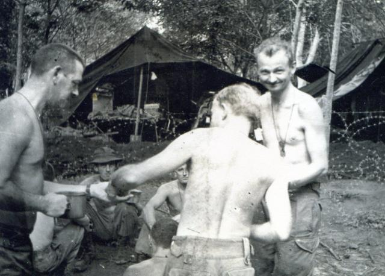
          <figcaption><span class="fignum">Figure 19.</span>Sharing to OC’s birthday cake – 2 July 66.</figcaption>
        </figure>
      
    
      
        <h3 id="standing-dave-christie-snow-rollston-and-bob">Standing: Dave Christie, Snow Rollston and Bob</h3>
      
    
      
        <h3 id="skitch-sitting-brian-firns-dennis-duquemin-back">Skitch. Sitting: Brian Firns, Dennis Duquemin (back),</h3>
      
    
      
        <h3 id="stan-johns">Stan Johns</h3>
      
    
      
        <h3 id="promotion-for-snow-rollston">Promotion for Snow Rollston</h3>
      
    
      
        <p>During the month, on 17 July Snow Rollston’s promotion to Warrant Officer Class 1 was notified. I think there was a small celebration in the Sergeant’s Mess that evening, presumably in total darkness. This made Snow the senior non-commissioned rank in the TF HQ area and in December he was appointed President of the Sergeant’s Mess, an appointment Snow did not particularly relish. Snow was not an authorative person, at least not outside his comfort zone of technical competence.</p>
      
    
      
        <h2 id="august-1966">AUGUST 1966</h2>
      
    
      
        <h3 id="an-iconic-month">An iconic month</h3>
      
    
      
        <p>August was marked by an event that is now accepted as the single most significant event of the Australian involvement in the Vietnam War. This was Operation Smithfield, to become known as The Battle of Long Tan. It was this iconic event the very mention of which identifies the Australian commitment to Vietnam. There are numerous published accounts of the battle and it is not my role in this story to in any way add to them although at the time the realisation that it was happening and the tension that was evident in the HQ staff and throughout that central HQ area was electric, palpable. But first let me start the month with the Troop’s own continuing role.</p>
      
    
      
        <h3 id="improving-our-protection">Improving our protection</h3>
      
    
      
        <p>Although our work and accommodation areas had become quite functional, my diary notes that in the first couple of weeks in August we had spent some of our valuable time reinforcing our sand bagging of both work and living accommodation and improving overhead cover to our protection pits. It was a concern that sandbags rotted after a few weeks especially those that had been filled with muddy loam. The replacement of the initial 11”x<sup class="fn-ref">14</sup>” lightweight tents and the tents portable survey of course meant totally refiguring the accommodation protection. All of this was to change in the near future and the many hours of hard labour we had put into our working and living accommodation were to be for nought.</p>
      
    
      
        <h3 id="but-production-work-has-to-continue">…..but production work has to continue…</h3>
      
    
      
        <p>A number of tasks we had commenced in July had to be temporarily shelved, notably Binh Gia and Binh Ba photoplots, the agricultural map and Long Dien village map. Nevertheless other quite significant tasks were completed such as the map enlargement-photoplot of the Nui Dinh Hills, a quite complex task involving a number of data sources – oblique intelligence photography, SAS patrol reports and a captured Viet Cong hand drawn map. The urgency of this task was determined by the forthcoming 6RAR clearing operation “Vaucluse”. Annexes for Combat Operations After Action Reports, were certainly seen by HQ 1ATF as a priority and these could be very time and resource consuming.</p>
      
    
      
        <h3 id="cantonment-survey-continuing">Cantonment  Survey - continuing</h3>
      
    
      
        <p>We were committed to provide HQ AFV with an outline version of the cantonment survey by 20 August and with that objective in mind and some lessening of other commitments I allocated maximum personnel to that task. Limited though our personnel numbers were I managed to put three parties onto the job. Thankfully we had no shortage of equipment and in any case I could borrow additional theodolites and other minor items from Peter Sadler’s artillery survey section. I may have borrowed one or two of his surveyors at that time also although it was somewhat later that we formalised that arrangement. For the technically minded I include the following extract from my August Report:</p>
      
    
      
        <p> <em>2 metre contours have been provided over the area using altimetric heighting in the</em> <em>undulating areas north, east and south of the Nui Dat feature and by a combination of</em> <em>plane table and stadia (ie, tacheometry) on the Nui Dat  feature. Ample checks were</em> <em>incorporated into the area heighted altimetrically and it is considered that the contours</em> (footnote 23 continued) which in itself didn’t matter. The Mark 5 heliograph manufactured by Stromberg Carlson, a one time well known radio firm, was exactly the same except that the container was made of  die-cast metal in exactly the same shape as the saddle bag despite the fact that in 1942 horses had long since left the army.</p>
      
    
      
        <div class="narrative">
          
          
          <p>obtained fall well within the specified accuracy of ½ a contour interval. The contours are not detailed and represent a mean contour position.  Closed stadia traverses will run through all unit areas to provide the basic framework of horizontal control.  Detail within unit areas has been obtained using a combination of stadia and plane table. Using a party of three this method has been found to be most effective. Essentially distance is obtained by stadia and azimuth maintained by plane table. The working plot is of course kept current on the plane table.</p>
          
        </div>
      
    
      
        <p>The report goes on to say that “<em>To satisfy an immediate planning commitment a provisional plan</em> <em>has been prepared incorporating major proposals. It is intended that a base plan will be prepared</em> <em>for silk screen reproduction which will then be periodically overprinted with new additions of a</em> <em>permanent nature’.</em></p>
      
    
      
        <h3 id="screen-printer-personnel-penalties">Screen printer – personnel penalties</h3>
      
    
      
        <p>The proposed introduction of the screen printing press to the theatre was not without some unwelcome penalties. On 3 August a signal was received from the Directorate of Military Survey stating that the screen printer could only be introduced if accompanied by a complement of six trained technicians. Six! – They must be joking! That was nearly half of my survey/draughting strength. In August the in-theatre personnel ceiling was still pegged at the rather absurd number of 5001 and it seemed that only an act of parliament would allow any increase beyond that. I had already indicated that we were prepared to exchange our two tech storemen and one other un- named non-tech person for three screen printing technicians; but six – that was a nonsense! Initially I even had the temerity (temerity in the mind of the Task Force administration officer) to offer our cook as part of the deal. Since the departure to Australia of our allocated cook for medical reasons no replacement had been received, however, the HQ Company were desperately short of cooks (and other administrative staff  - cooks, clerks and bottle-washers we called them) so I was told in no uncertain terms that we could not give up our cook. Nevertheless, I replied on behalf of HQ 1ATF that 3 non-tech personnel could be relinquished and a further three or four personnel (surveyors, draughtsmen or any others) from the existing Troop be trained in-theatre to supplement the technicians during periods when the equipment was operational. (I never envisaged the screen printer operating 24 hours a day six days a week.)  No formal advice was ever received of my offer being accepted, however, the introduction of the screen printing equipment to Nui Dat proceeded on that basis without further comment.</p>
      
    
      
        <p>My August report states that the personnel nominated to return to Australia in lieu of the introduction of lithographic tradesman would be Corporal Alan Carew, Sapper Stan Johns and Sapper Joe O’Connor. Sapper O’Connor was a surveyor and I didn’t like the prospect of losing him, however, Joe was suffering from a continuous bowel infection and I had been advised that he might be medevaced to Australia in any case.</p>
      
    
      
        <h3 id="some-dont-want-us">Some don’t want us!</h3>
      
    
      
        <p>I think it might have been in early August (or later in 1966) that I became aware of a proposal to totally dispense with the Troop – return it to Australia – to allow the introduction of the equivalent number of administrative personnel – cooks, clerks and bottle washers. I have no record of who raised the matter with me but I suspect it was most likely Captain Dave Holford giving me a pre- warning. Whether the proposal ever reached a formal level I do not know. I believe I would have discussed it with Major Rowe and perhaps his reaction was non-committal. Although continuing to maintain the Intelligence connection, by that time I had developed a close working relationship with both the GSO 2 Operations (Major Dick Hannigan) and the GSO 3 Operations (Captain Ian Hutchinson). Increasingly most of our pre and post operations work came from Operations. Any of those with whom I raised the issue remained tight lipped which only made me believe that there was considerable credence in the suggestion. It would be an understatement to say that the suggestion depressed me somewhat. I made no mention of it to any of my own personnel and obviously they had heard nothing from their own levels of contact. Perhaps a week or two passed and finally either Dave Holford or it might even have been Ian Hutchinson wandered into my office tent, sat down and told me that it would not happen; the Commander had well and truly quashed it. Our role in the theatre had been thoroughly vindicated and supported.</p>
      
    
      
        <h3 id="after-action-reports-and-various-other-report-map-annexes">After-action reports and various other report map annexes</h3>
      
    
      
        <p>The unremitting production of annexes for Combat Operations After Action Reports continued to consume a good deal of the Troop’s personnel and materiel resources. In a word – they were heavy on both draughtsman and dyeline paper. For instance, Operation Enoggera (21 June-5 July – Xa Long Phuoc) required five map based annexes of full map size with a distribution of about 20 copies. Operations Sydney 1 (4-14 July – Nui Nghe) and Sydney 2 (15-23 July – Xa Binh Ba) required four map base annexes; Operations Hobart 1&amp;2 (24-29 July – Xa Long Tan) required two map based annexes and Operation Holsworthy (5-18 August – Xa Binh Ba) required two map based annexes. All of these were undertaken during the period July and August. This tempo of activity continued in succeeding months. From June to December 1966 the Task Force undertook twenty six operations, most requiring map annexes, initially for Operation Orders showing sector boundaries and intelligence data and then After Action Reports with similar information but also result data – Viet Cong tunnels discovered, specific enemy contacts, Viet Cong food and weapons caches uncovered. All Troop personnel contributed to the production of these. I tried to keep our two cartographic draughtsmen working on original mapping, especially where colour separation was required. Our surveyors, even Dennis Duquemin, were quite good compilation draughtsmen and often it was all hands to the pump to meet an operational commitment.</p>
      
    
      
        <h3 id="administration-overheads-and-monthly-reports">Administration overheads and Monthly Reports</h3>
      
    
      
        <p>My own time seemed to be taken up with various writing assignments; letters to Survey Directorate, preparation of orders – routine and others and of course, my monthly operational report to HQ AFV, and Survey Directorate. Monthly Operation Reports at times became something of a millstone. Pulling the detail together was time consuming and it was often easier to put the starting of the report off a day at a time until after a week into the new month I would attack it in a flurry of effort and expect our orderly room clerk, Corporal Peter Clarke, a competent typist, to produce it in typescript on a stencil in the morning after I had worked on it overnight in our “sweat- room”. I generally included as annexes examples of some of our work over the reporting period.</p>
      
    
      
        <p>The instruction <em>‘Provision of Air Photos, Mosaics, Map Enlargements and Use of ‘Contact’ in</em> <em>1ATF’</em> was finally released with the Task Force Commander’s authority on 10 August (Annex H and H<sup class="fn-ref">14</sup> to this account). Simple though it might have seemed at an initial reading (about three pages) it was the result of considerable discussion and liaison.</p>
      
    
      
        <h3 id="i-lose-my-gso2-intelligence-mentor">I lose my GSO<sup class="fn-ref">2</sup> (Intelligence) mentor</h3>
      
    
      
        <p>My diary records that on 16 August my mentor in the headquarters responsible for my staff direction, GSO<sup class="fn-ref">2</sup> Intelligence Major John Rowe, was medevaced to 2 Field Ambulance, Vung Tau, with hepatitis. A further intelligence officer, Captain Bob Keep, had been medevaced with suspected encephalitis and this had seen him returned to Australia on 15 August. I was never sure whether Bob Keep belonged to the task force or to HQ AFV in Saigon. His appearances at 1ATF seemed sporadic and I can not recall him attending any of our intelligence conferences. I had been a little surprised to see him drifting about the headquarters in civilian clothing – very informal; Hawaan shirts, kahki shorts and sandals, but then Intelligence personnel were all a bit different. His disappearance with the suggestion that he had contacted encephalitis was murmured about the headquarters.  I, and others, were not a little concerned that Major Rowe may have succumbed to the same serious disease. Both it and hepatitis (only one form in those days) were prevalent in Vietnam. Major Rowe had been a consistent supporter of the Troop and although at times some of the tasks he pushed onto me were in my mind bordering on frivolous I felt concern that without his staff direction and support I would face problems of prioritising work coming in and perhaps being unable to address the longer term important tasks as opposed to the simply “urgent”. His medical evacuation caused me to drift more into the operations camp although I continued to attend the intelligence conferences which were no longer daily events. Increasingly I worked through Captain Ian Hutchinson, GSO<sup class="fn-ref">6</sup> Operations, and Major Dick Hannigan, GSO<sup class="fn-ref">2</sup> Operations. More on Major Rowe later.</p>
      
    
      
        <h3 id="the-commanders-adc">The Commander’s ADC</h3>
      
    
      
        <p>Another past Survey Corps colleague at Nui Dat was Lieutenant David Harris. David Harris had been a sapper draughtsman at the AHQ Survey Regiment at about the time I was there as a sergeant in 1960. David was a pretty smart young fellow who always had a ready answer (some might say too smart by half) and who the RSM WO<sup class="fn-ref">14</sup> Des Moore liked to persecute. To his credit David survived that with good grace. In November 1959 he and I attended a three week educational course at Puckapunyal to brush up on our “leaving” level subjects for the Victorian State examination for which we were both sitting (at least I was) at the end of the year. We were moderately friendly. I had lost sight of David after I was commissioned and had moved on and I was not a little surprised to see him arrive at Nui Dat as Brigadier Jackson’s ADC<sup class="fn-ref">21</sup>. In the intervening years since I had last known him David had secured entry to the Officer Cadet School at Portsea, graduating as a second lieutenant but not into Survey Corps; he was allocated to Armoured Corps. In Vietnam his parent unit was to have been 1 Armoured Personnel Carrier (APC) Squadron. I believe David served in his ADC role with distinction (a difficult enough task especially with O.D. Jackson) but his burning ambition was to get with his Squadron where he might have been an APC Troop Commander. I think he may have achieved this after Brigadier Jackson relinquished command to Brigadier Graham.</p>
      
    
      
        <aside class="footnote" role="note">
          <span class="fn-num">21</span>In simple terms a pictomap is created from two printing plates of the photo imagery, one showing a positive image and the other a negative image. The positive plate is printed down in a mid green and the negative plate in a fairly strong yellow. Hence areas of high reflectivity such as bare ground appear on the map in yellow and areas of low reflectivity such as forests appear as green. Of course it would be wrong to then interpret all green areas as forest and all yellow areas as bare ground although there was a tendency for pictomap users to do just that.
        </aside>
      
    
      
        <h3 id="under-enemy-fire-mortars">Under enemy fire – mortars</h3>
      
    
      
        <p>On 17 August at 0240h the Task Force area was mortared. Mortars (82mm) fell mainly in the maintenance and reinforcement unit areas directly east of Nui Dat hill some two or three hundred metres to the north and east of the Task Force headquarters and our own Troop location. Perhaps the Commander’s policy of total light extinguishment at night and the heavy rubber tree canopy had concealed or at least confused unit locations to the Viet Cong. Most mortars fell and exploded harmlessly and from memory it was only the postal clearing tent that received anything like a direct hit. Lieutenant Colonel Charles Mollison’s account in his <em>Long Tan and Beyond</em> of the mortar incident speaks of mortars falling within the 6RAR position. Mollison’s Alpha Company was harbouring six kilometres west of the Task Force base on the northern knoll of the feature known as Nui Dat 2. From his position he could well hear the pop of mortars and was able to take compass bearings at right angles to their direction of flight. This in effect gave an approximate intersection with the line of the incoming mortars to give an approximate mortar base plate position. This enabled both artillery and the 6RAR mortar platoon to return fire. The Viet Cong mortar barrage lasted less than half an hour and initial estimates of the number of incoming mortars range from 100 to 200. The official figure in the record is 87. Twenty four personnel were wounded as a result of the attack, two seriously. The Divisional Locating Battery whose specific role was to locate and establish the trajectory of incoming mortars through its radar locators and supporting computing technology was unable to provide data – its rather antiquated equipment was down – under repair!</p>
      
    
      
        <p>It was my own first and only experience of being under enemy fire. I awoke soon after the first few rounds came in. The explosions seemed fairly distant. It quickly dawned on me that we were attracting enemy fire but the sound of the exploding mortars some two or three hundred metres away was muffled by the rubber trees and the ground was very wet and boggy after the evening down pour. I could see the occasional flash of an exploding mortar round reflected on the wet trunks of the rubber trees, somewhat confirmatory of what was happening. I felt a degree of unreality. It was a moonless night – not that even a full moon effectively penetrated the canopy of the rubber trees – and it was totally dark; visibility simply non-existent. My own protection pit had a foot of muddy water in the bottom and I was reluctant to get into it. I think my field phone rang after 10 minutes or so to confirm the incoming mortars and I should take cover and remain where I was. I had some concern for the Troop’s accommodation lines – warrant officers and sergeants some 50 metres away and sappers and corporals some 100 metres away – but the telephone message said to the effect that they were under control. Both storeman (Carew and Johns) were sitting on the side of their bunks. I told them they should take cover. Sapper Johns with his Korean War experience was pretty blasé about what was happening, Corporal Carew a bit panicky. I think I left them to it – perhaps not an appropriate action for an OC. By that time the fall of mortar shells had moved further to the east but our own artillery had opened up firing directly over our heads on an apparently low trajectory and the noise of the guns with the whistle of 105mm shells tended to shatter the senses. By 0400h silence had descended, broken only occasionally by the 105s sending out a few harassment rounds. I slept fitfully until first light then dressed and as soon as stand-to was over (we no longer had to actively participate in stand-to but movement was discouraged during that half hour period) I walked over to the warrant officers and sergeants lines. Dave Christie had been up and about already (I think he may have walked over to our work area even before I left) and he assured me that all was fine. Together we walked down to the corporals and sappers lines and they all seemed unconcerned at the night’s activities. The day then continued as normal. I recall delaying start of work by an hour suggesting that a reassuring letter home might be appropriate given that the Australian press would beat it up in an alarming fashion – it did! Our unit letter box filled rapidly that morning. In the afternoon I prepared a Troop Routine Order Part 1(Serial 5) that contained an instruction “Procedure on Mortar Attack”. The Routine Order is included as Annex G to this account. So “routine” was it that the same order details postal procedure.</p>
      
    
      
        <p>While we all tended to treat the mortaring incident somewhat lightly there was underneath a real concern that we might be assailed by a full frontal Viet Cong attack at our very thin perimeter to the south east. That concern seemed justified by the events that were to follow.</p>
      
    
      
        <h3 id="dispersal-and-a-concert">Dispersal and a concert</h3>
      
    
      
        <p>18 August started like any other day at Nui Dat. It was overcast and hot and as the day progressed the humidity under the rubber trees increased. It was a day of anticipation. At midday the Col Joye concert party featuring “Little Pattie” was arriving to perform on a stage to be erected on Kangaroo helipad, 100 metres north of the Task Force Headquarters – not so much for the convenience of HQ personnel attending but because it was a cleared area as central as possible within the defensive “egg” of the Task Force. Also the ground there had consolidated somewhat and was less boggy.  Units had been allocated a time to attend and the time allocated to the Troop was early afternoon. However, the morning produced some unwelcome news. Camp Commandant, Captain Dave Holford had called a meeting of all minor units within the inner perimeter, most within 100 metres of the Task Force HQ to advise them that the Commander had directed that we were to disperse outwards. The ability of the Viet Cong to bring mortars into the central areas of the Task Force had been amply demonstrated and the fact that they may have been off-target did not mean that were it to happen again they would not be better targeted. Dispersal is a basic principal of warfare and even I could see that our mutual closeness was unwarranted. Captain Holford advised that he would visit affected units individually and direct them to their new locations. There was to be some movement of larger units but this was revealed only by their physical movement in the weeks following, i.e. SAS moved to the top of Nui Dat hill and the Engineer Field Squadron moved to where SAS had been.</p>
      
    
      
        <p>I received my visit from Dave Holford soon after the meeting. I had not passed this information on to Troop personnel at that point. I wanted to give the matter some thought before doing so. In fact the news had hit me like a sledge between the eyes. We had put such effort into developing both our work and accommodation areas to make them as safe and as pleasant as possible for both working and living. It would have to happen all over again while at the same time maintaining our production through-put and meeting our work commitments. Now in retrospect I feel mildly ashamed of the concern I felt at the time. It was inconvenient; perhaps we had become too comfortable and being aware of the grossly inferior living and working conditions of both officers and soldiers in the outer units, the battalions, the artillery batteries and engineers, I had little to complain about. Thankfully I didn’t complain; at least I had sufficient sense not to. Dave Holford took me for a walk up Ingleburn Avenue (the central east west road running past the Task Force HQ) to its eastern end to a location on rising ground that was a little gravelly. This location was 200 metres east of the headquarters. I immediately saw one huge advantage; I would be able to relocate all of our living accommodation to be adjacent to our work area on this rising ground. At that time I did not realise the extent to which I was to tread on the toes of others. The battle for real estate was to commence.</p>
      
    
      
        <p>But of course, Thursday 18 August was significant for a battle of much greater significance. The day itself had been notably hot and humid; more or less overcast and in the late afternoon heavy thunderheads started to lift above the horizon. I wandered over with a folding chair to the Col Joye and Little Pattie concert and sat for a while watching their very professional performance. The only number I remember was Col Joy singing “I’ve been everywhere man” with Australian towns and place names substituted into the lyrics. In this remarkable performance he seemed to get his tongue around just about every town in Australia. It brought the “house down” if you could call it that. Little Pattie was hugely popular with the audience, many of whom had just returned to base from patrols. The performers – there were a number – seemed so fresh and clean, as if they were unaware of the heat and humidity and yet the performance I saw must have been about the third for the afternoon. Almost immediately after that last performance they were all choppered back to Vung Tau. It may have been that the Viet Cong contact with 6RAR that developed into the Battle of Long Tan had happened and the artillery barrage had commenced; some subsequent reports suggest this but it is not my recollection. I don’t know whether they had a further performance in the ALSG; I doubt it and I suspect the concert party was returned to Saigon fairly quickly.</p>
      
    
      
        <h3 id="contact-at-long-tan-operation-smithfield-25">Contact at Long Tan – Operation Smithfield 25</h3>
      
    
      
        <p>It was the eve of the most significant and defining battle of the Vietnam War for the Australians. In the late afternoon company screen patrols from 6RAR encountered a major enemy force five kilometres east of the Task Force base, one kilometre north of the now destroyed village Xa Long Tan.</p>
      
    
      
        <p>Of course I was unaware of what was happening five kilometres east of the Task Force base. Delta Company of 6RAR, commanded by Major Harry Smith, having relieved Bravo Company in following up trails left by the Viet Cong mortar platoons on the previous morning of the 17th made contact at 1600h. It took little more than 15 minutes for the contact to develop into a major battle with Delta Company incurring heavy casualties.</p>
      
    
      
        <p>At Nui Dat the rain had started, a torrential downpour backed by ear splitting claps of thunder. Under the canopy of the rubber trees the noise of the rain striking the heavy leafed canopy is in itself deafening. And above all that the artillery had opened up in the heaviest barrage I had heard to that time. The drenching rain continued. I made my way to the Commander’s briefing to find that it had been cancelled. Jackson was in the TOC looking white faced and grim. David Harris was with him and a collection of his senior officers including the CO of the Artillery Regiment (Lieutenant Colonel Cubis) and the recently appointed Deputy Task Force Commander, Group Captain Peter Raw, RAAF. There was no place for me and I headed back to my tent in the Troop work area, now well aware that something major was happening. It wasn’t until I went across to the mess tent that I picked up some of the detail of the battle. Delta Company had had a heavy contact and had incurred severe casualties. Harry Smith’s name was being bandied about. The “incident” still had not been given a name – it wasn’t in the usual sense a planned operation. Delta Company had walked into the contact. Although thought to be an ambush subsequent assessment showed that it was certainly not a planned ambush but more a collision with the enemy. I heard the name “Operation Smithfield” – someone had already called it that – because that was the name of the Adelaide suburb where Harry Smith lived. The artillery continued to thunder across our heads. I remained in the mess tent where at least I could get some idea of what was going on. Did I know that Alpha Company under its OC Captain Charles Mollison had been despatched with two or three troops of APCs to the battle front? I am not sure, perhaps not until the following morning.</p>
      
    
      
        <p>It is an odd feeling to be so close and yet so far from an event you know is significant, defining, and yet have no part in it. Certainly by 2100h I was well and truly aware that Operation Smithfield was the biggest thing that had happened so far. Was it to be an indication of our future involvement? The artillery bombardment continued late into the night after the ground battle had<sup class="fn-ref">22</sup></p>
      
    
      
        <aside class="footnote" role="note">
          <span class="fn-num">22</span>The contact that developed into „The Battle of Long Tan‟ has been called an ambush although that description implies something that had been carefully planned (by the enemy that is). However, the contact made by Delta Company most likely surprised the Viet Cong as much as Delta Company. Had Delta Company walked into a planned ambush their casualties, high as they were, might have been much higher.
        </aside>
      
    
      
        <p>ceased. It might have been the following day that I learned that a North Vietnamese regular regiment (from the PAVN 5th Division<sup class="fn-ref">23</sup>) had been involved as well as D445, the provincial Viet Cong Battalion and the 275th Viet Cong Regiment although I am not sure that there had not been some mention of this in the preceding days. It has developed into a much debated issue, a debate that continues today amongst the armchair critics. I certainly know that at the battalion level a lot of evidence had been accumulating that North Vietnamese forces had entered Phuoc Tuy Province and one assumes that our Task Force Commander was also fully aware of this.</p>
      
    
      
        <aside class="footnote" role="note">
          <span class="fn-num">23</span>Mark 5 five inch heliographs used by the Survey Corps were of Signals origin the design of which went back to the Boer War or earlier although the designator „Mark 5‟ might indicate that there had been four upgrades over the years. The earlier heliographs (probably Mark 4 or 3) I had seen in the field survey units were packed into a leather saddle bag (30x15x10cms) for slinging on the side of a horse. The bag had a semi-circular base, hence it would not stand up on the ground  (continued on the next page)
        </aside>
      
    
      
        <p>The role of O.D. Jackson in the battle – it was only the press that was calling it the Battle of Long Tan – has also been a matter of debate. I am not aware of any public statement made by Jackson himself in his own defence – if in fact there was any real need to defend himself – but some of the statements made that he left the TOC and “skulked” to his tent are scurrilous and totally untrue and unwarranted. I believe that by the time he withdrew from the TOC the die had been well and truly cast. The contact had been broken; the enemy forces had withdrawn and our own troops were in relatively safe harbours. It was by then a battalion action; the battalion Commanding Officer, Lieutenant Colonel Colin Townsend, had deployed with his headquarters and the Task Force Commander had no part in the ground battle.  Perhaps Jackson had read the intelligence signs correctly; we were a very thin force on the ground. Some days before, planned battalion operations further from base had been terminated and all units drawn back to base. Protective screen patrols had been deployed to the north (5RAR) and the east (6RAR). I am not a tactician and I should make no further comment other than to say that I held our Task Force Commander, Brigadier O.D. Jackson, in high regard and still do.</p>
      
    
      
        <p>It was an uneasy night. The artillery bombardment continued until at least midnight. The rain had ceased and coolness spread over the rubber plantation. Everything was soggy in the extreme. My own fellows were largely unaware of the battle. I was told that the warrant officers and sergeants had been holed up in their mess tent becoming increasingly shickered and making a dickens of a noise which didn’t impress the Commander too much – his accommodation tent was only about thirty metres away. He had them paraded the next morning and by then the very chaste group opted to go on the dry for a month rather than face more formal military discipline. Nevertheless, all reported for work the next morning and life proceeded as normal. I think it might have been then that I briefed the Troop on our plans for relocation.</p>
      
    
      
        <h3 id="smithfield-the-days-that-followed">Smithfield – the days that followed</h3>
      
    
      
        <p>There was a good deal of activity within the Headquarters area throughout the day with APCs and RAAF Iroquois helicopters bringing in captured VC weapons including a Viet Cong wheeled gun that now resides in the Australian War Memorial in Canberra. The press corps was also showing a good deal of interest in the Task Force and it was probably at about that time that we started hearing of the Battle of Long Tan<sup class="fn-ref">24</sup>.</p>
      
    
      
        <aside class="footnote" role="note">
          <span class="fn-num">24</span>ADC - aide-de-camp – personal confidential assistant to a senior officer.
        </aside>
      
    
      
        <p>Task force personnel at Nui Dat were often less than generous in comment regarding there Vung Tau ALSG colleagues. Perhaps the Long Tan incident changed all that. With every gun firing at Nui Dat 105mm ordnance soon ran out and resupply from Vung Tau became urgent. Apparently every soldier in the ALSG regardless of rank was queuing to offer their help in loading ammunition for Nui Dat. Those that had ventured into the city after work by word of mouth were returning to their units to be on hand to help their mates up north in any way they could.</p>
      
    
      
        <p>I don’t recall exactly when it was – a few days later – that we had a visit from the great man himself, General Westmorland. I attended a morning tea at which he was present and gazed in awe at his very impressive and commanding figure. Jackson looked quite diminutive next to him. He was in and out of the Task Force in well less than an hour. A few days later Air Marshal Ky, the<sup class="fn-ref">2425</sup></p>
      
    
      
        <aside class="footnote" role="note">
          <span class="fn-num">25</span>PAVN – Peoples Army of Vietnam – the regular army of North Vietnam. It was believed that Long Tan represented the most southerly penetration of the North Vietnamese regular army.
        </aside>
      
    
      
        <aside class="footnote" role="note">
          <span class="fn-num">27</span>„Time Magazine‟ gave a column to the Battle of Long Tan. It was incorrect in most details. They placed the battle just north of Vung Tau. The column was headed something like „Aussies have major contact‟. Of course „Long Tan‟ was small beer compared with the bloody conflicts of the US Army to the north in I Corps. I think it was the only coverage our Australian involvement in Vietnam ever got in that illustrious magazine.
        </aside>
      
    
      
        <p>US appointed President of South Vietnam visited the Task Force with quite an entourage. Ky was something of a show pony, dressed in his black flying outfit with a mauve cravat. From all accounts he lived like a prisoner in a heavily bunkered area of Tan Son Nhut with heavy US protection around him at all times. A lunch was provided in the officer’s mess marquee and he was taken around by Brigadier Jackson and introduced to all those present. I returned to my office tent feeling more than a little depressed. So this is why we are here – to support this up-jumped Vietnamese Air Marshal – what was it really all about?</p>
      
    
      
        <h3 id="troop-work-continues">Troop work continues….</h3>
      
    
      
        <p>The completion of the detailed Nui Dat cantonment survey was by then our priority task and my diary records that Corporal Jim Roberts with Sapper Brian Firns constituted one party and Corporal Des Ceruti and Sapper Derek Chambers another. With Snow Rollston I carried out an air reconnaissance of the defoliated area south of Nui Dat in a Possum Flight’s Sioux helicopter, feeling very vulnerable sitting in that plastic bubble and with the previous night’s activity very much in mind.</p>
      
    
      
        <h3 id="dispersal-we-cant-avoid-it">Dispersal – we can’t avoid it!</h3>
      
    
      
        <p>Our move to our new location had been let slip a few days – we had plenty of work to do; the cantonment survey that seemed to be taking for ever; after action report annexes for Operations Hobart 1 and 2 and I knew I needed to get back to Saigon to see if I could iron out problems we were still experiencing with map and air photo resupply. My diary records that we were continuing sand bagging (with sand from Vung Tau this time; not Nui Dat mud) and I am not sure of the logic of this other than that our move to the new location might be some time off. On 22 August I measured up the new site with Dave Christie and planned how we would use it. Major Florence (OC 1 Field Squadron RAE) had designed and constructed a trial tropical hut that was intended to replace our work tents and marquees. It was a simple concept – very open timber frame clad in corrugated iron. I could not see how it could be light proofed. The idea was that with materials supplied unit personnel would do their own construction. More on that later.</p>
      
    
      
        <h3 id="back-to-saigon">Back to Saigon</h3>
      
    
      
        <p>On 25 August I visited Saigon with Sergeant King who was to continue on to Long Binh. Boots Campbell drove us to Vung Tau ACTO at the airfield and we were allocated a passage on a Caribou aircraft to Tan Son Nhut. We continued to be on the scrounge for dyeline paper with supplies from Australia either simply failing to arrive or finding that our orders had been reduced to our authorised scaling that was far below our consumption rate. The purpose of Dave King’s trip to Long Binh was to both obtain dyeline paper from an American source and to have a set of covers for the 1ATF Standing Operating Procedure (SOP) bearing our 1ATF kangaroo shield printed in colour by the recently established 66 Engineer Company (Topo) (Corps) – an undertaking I had accepted with a deal of reluctance. In the event the covers could not be printed since only forward elements of 66 Company had arrived had and it would be some time before their single colour offset printing press would be assembled. Nevertheless, it was a good break for Dave who had been working incredibly hard. Newly deployed US units to the theatre seemed to be under no particular pressure to become operational; perhaps because they were to be there for the very long term – something of a contrast to our own situation.</p>
      
    
      
        <p>My own visit to Saigon was to discuss with Lieutenant Colonel Benton a number of map and air photo related problems, brief him on our projected 1:25,000 map enlargement series, our continuing difficulty in obtaining resupply of pictomaps and, (my diary notes), the general lack of durability of American supplied maps. Also I wanted to re-establish contact with this very fine and gentlemanly American officer. Since my first visit in June I had spoken to Colonel Benton a few times on the field phone but having to go through half a dozen US field exchanges the connection could be very tenuous with any one of them given to dropping out mid conversation.</p>
      
    
      
        <p>Arriving well before lunch I found my way to Colonel Benton’s office and received a warm welcome. In the afternoon I visited 13 Recce Tech Squadron and discussed the general deterioration of air photo prints (especially the 9”x<sup class="fn-ref">18</sup>” “split verticals) due to an apparent lack of “fixing”. I was given a sympathetic hearing and it was pointed out that they were intended for intelligence use and perhaps we were the only in-theatre organisation attempting to use them for mapping purposes. However, the OC undertook to see what he could do. I do not think the problem was ever fixed, certainly not in my time in Vietnam. I returned to Vung Tau late that afternoon on a Caribou, over-nighting at the ALSG then to Nui Dat the next morning after spending a little time with ALSG HQ staff. Dave King with a bundle of 250 standard sheets of dyeline paper reached Nui Dat in the late afternoon. I am not sure that my trip to Saigon achieved a great deal other than maintaining the close link and support with the American mapping staff.</p>
      
    
      
        <h3 id="rest-and-convalescence">Rest and convalescence</h3>
      
    
      
        <p>In July the Troop had started getting allocations of R&amp;C (Rest and Convalescence) at Vung Tau. The R&amp;C centre in Vung Tau was an old French colonial home, fairly large close to the water front below the southern end of the Nui Lon hill mass (Cap St Jacques). In July R&amp;C allocations were five nights per soldier but as time passed these reduced to 48 hours and finally 36 hours. Corporal Peter Clarke was the only Troop member to be granted five days and I must confess I sorely missed his clerical services during that time. Our next allocation took place on 27 August when Corporals Ceruti and Roberts and Sapper Chambers took R&amp;C for 48 hours. Others were to follow in dribs and drabs over the next six months.</p>
      
    
      
        <h3 id="the-new-location-we-drag-our-feet">The new location – we drag our feet!</h3>
      
    
      
        <p>At the end of August we commenced site preparation of our new location. The eastern boundary of our allocated site was the inner perimeter fence with our eastern neighbour being initially the SAS Squadron and then 1 Field Squadron RAE when SAS moved on to the Nui Dat feature. There was unallocated territory to the immediate north, and to the south the detachment of 2 Field Ambulance (effectively a casualty clearing station (CCS) and the HQ Regimental Aid Post (RAP)) with the adjacent “Dustoff” helipad.28 On the western side of the road forming our western boundary (apart from the latrine and shower blocks yet to be constructed) were some administrative elements of the headquarters and the HQ Defence and Employment Platoon<sup class="fn-ref">25</sup>.</p>
      
    
      
        <p>I think it had been in my mind that we would not move until the tropical huts were available for erection, however, at a Commander’s briefing at about that time Brigadier Jackson, noticing that headquarter units were still where they had been since arrival, made it very clear that movement was to happen without delay. I heard him say to the effect that some officers were refusing to obey a lawful command and I quickly resolved that I would not be one of those. On 27 August Dave Christie negotiated four truck loads of crushed stone and three of sand to be dumped at our new site. How he managed to pull this off I never knew and I suspected it was best not to inquire. That was the way many aspects of task force development worked at that time. On the 29th our move started with our 11” x 33” work tent marching 200 metres up Ingleburn Avenue to a half prepared site. Fortunately we were having a few rain free days. The following day we moved the Q store, my office/accommodation tent and the orderly room tent with the contents of each loaded onto our Landrovers and trailers. It was chaotic but we were moving as directed. In departing our old location all protection pits had to be filled in and tamped down with soil imported from elsewhere, a rather arduous job. Map 3 shows the planned layout at our new location at the eastern end of Ingleburn Avenue in late August.</p>
      
    
      
        <h3 id="altercation-with-signals-over-boundary">Altercation with Signals over boundary</h3>
      
    
      
        <p>My diary has the rather terse entry for 28 August “altercation with Sigs over boundary”. Absurd as it might sound real estate within the inner perimeter was becoming a scarce commodity or at least it<sup class="fn-ref">2627</sup></p>
      
    
      
        <aside class="footnote" role="note">
          <span class="fn-num">28</span>„Dustoff‟ was the American name adopted by the Task Force given to the helicopter supported medical evacuation system that revolutionised battlefield medical evacuation (medevac). Initially the US Army provided Dustoff for the Task Force but in about August the role was taken over by the RAAF.
        </aside>
      
    
      
        <aside class="footnote" role="note">
          <span class="fn-num">35</span>The Defence and Employment Platoon as the name implies was intended to fill a defensive role with specific reference to the Headquarters. Just what form that might take was not as far as I was aware ever clearly defined. Its „employment‟ role was a little more obvious. It comprised keeping the headquartes area tidy, carrying out hygene duties (cleaning grease traps etc), kitchen duties, sand-bagging the Tactical Operations Centre and the various administration and accommodation tents of the Headquarters officer staff. It was not a glamorous role and very unfairly the members of the D & E Platoon suffered some stigma as a result. Some managed to „escape‟ to the battalion rifle sections filling as reinforcements.
        </aside>
      
    
      
        <p>seemed so. 103 Signals Squadron and a couple of smaller Signals units occupied an extensive area opposite the Task Force headquarters on the northern side of Ingleburn Avenue. I am not sure what constituted their eastern boundary (to be our western boundary) but clearly their OC, Major Peter Mudd considered it to be well east of where I believed it was. Engineers had been very helpful and had cleaned up and levelled the area on our northern fringe where I planned to put the sappers” and corporals” accommodation tents so our intent was obvious. Major Mudd appeared at the entrance to my just erected office and accommodation tent clearly irate and insisting that we were occupying his territory. He was a major and I was a captain – a fairly junior one at that and I was in any case very disinclined to enter into a confrontation. I pointed out that the location we were occupying had been allocated by the camp commandant (although I knew that we had pushed our northern boundary probably twenty metres beyond that which Captain Hurford had indicated – a small matter in my mind) and I wasn’t intending to pull back. Major Mudd, normally a quiet mannered officer, turned on his heel and marched off, clearly very annoyed. He must have taken it up with Dave Hurford or more likely with the DAA&amp;QMG, Major Crowe, because it was the latter who half jokingly said to me a day or two later something to the effect that I had been treading on Sig’s toes. It must have rankled Peter Mudd because from time to time he made passing mention of it in a not entirely joking manner. I have no idea what use he had in mind for that small location (it was up against the wire of the inner perimeter). Sigs already occupied a considerable chunk of prime real estate.</p>
      
    
      
        <h3 id="we-settle-in-but-work-continues">We settle in but work continues</h3>
      
    
      
        <p>We had a lot of work to do to make our site habitable and functional. I couldn’t entirely drop all of our technical commitments; some had to continue for immediate planned operations, for example an enlargement trace of the Nui Dinh hills for 6RAR. I had pulled back on the cantonment survey but knew that could not be for long. I worked on some of this myself – an intelligence trace of Nui Dinh and a plot of tracks from a captured Viet Cong map. I think the only terse words I had with Ian Hutchinson was over some post operational drawings he wanted for a report that I considered not to warrant immediate attention given our prevailing physical circumstances. Temporary power had been connected to our work tent so night work became possible again although conditions in our light proofed work tent continued to be intolerably hot. The ground had become sticky with use and the clayey soil stuck to one’s boots like a two inch thick extra sole. Physical work, filling sandbags, digging trenches, spreading sand in an attempt to stabilise the sticky mud, was exhausting in the daily enervating heat that simply drained every vestige of energy from one’s body. We all had to do this; my warrant officers, sergeants, corporals, sappers, myself included. On 30 August we started to move the map store and the accursed map boxes that had been brought from Australia. That task was completed on 1 September and at that point our move was completed, but with a lot of work remaining to fully re-establish ourselves in our new location, a task that took much of our time throughout our remaining in-theatre tour.</p>
      
    
      
        <h3 id="long-trousers-and-sleeves-down">Long trousers and sleeves down</h3>
      
    
      
        <p>In August the Task Force had been visited by a “red-cap” medic from an air-conditioned office in Canberra. He observed soldiers and even officers wearing shorts and not wearing shirts during the day, that is, with exposed legs, chests and backs. He took the matter up with HQ AFV and an order was issued that the wearing of shorts and the removal of shirts was banned as an anti-fever precaution. I think it was a ban honoured in its breach more than its observance other than for those working within the headquarters. Of course away from the Task Force base shirts were certainly worn. The consequence of the ban was an increase in the prevalence of heat rash and I recall that Corporal Jim Roberts who had more than his share of body hair was badly affected and eventually had to return to Australia as a result.</p>
      
    
      
        <h2 id="september-1966">SEPTEMBER 1966</h2>
      
    
      
        <h3 id="a-home-for-five-years">A home for five years</h3>
      
    
      
        <p>Our Troop location established at the eastern end of Ingleburn Avenue became the home of the Troop (detachment) and subsequently “A” Section 1st Topographical Survey Troop for the ensuing five years of the Australian Task Force presence at Nui Dat. Site development continued progressively over the months of our first year. Two 20”x<sup class="fn-ref">26</sup>” tropical huts were erected with Troop labour, concrete hard standing laid in work areas, benches for draughting and other work purposes constructed from US supplied lumber, pathways constructed – all this while at the same time maintaining normal production throughput of assorted products and field survey work. Our total area measured 60 x 30 metres. We had some help from Engineers but our Troop members were the labour source.</p>
      
    
      
        <aside class="footnote" role="note">
          <span class="fn-num">26</span>Other 66 Engineer Company (Topo)(Corps) officers were First Lieutenant Peter Hart (Executive Officer and Headquarters Platoon Leader), Chief Warrant Officer Fred Ball (Survey Platoon), Chief Warrant Officer Joseph D‟Allessio (Cartographic Platoon), Warrant Officer Gene Butze (Reproduction Platoon). The Company‟s 1st Sergeant was 1st Sergeant Thomas Newman.
        </aside>
      
    
      
        <figure id="figure-20">
          
          <figcaption><span class="fignum">Figure 20.</span>Our general draughting office in Engineer designed tropical work hut. Benches made of US lumber with bond-wood tops. All constructed by Troop personnel.</figcaption>
        </figure>
      
    
      
        <h3 id="a-vulnerable-task-force">A vulnerable Task Force</h3>
      
    
      
        <p>There was little respite for the fighting units of the Task Force following “Long Tan”. On 23 August two companies of both 5 &amp; 6RAR together with the APC Squadron, the SAS Squadron and a battery of artillery joined the US 173 Airborne Brigade in a Corps operation under the command of 11 Field Force, Vietnam (USARV) in a wide sweeping search and destroy operation well north of Nui Dat. The operation, code named “Toledo”, was carried out in two parts, Toledo 1 and Toledo 2 separated by a two day break on 1 and 2 September. Toledo 2 continued on till 8 September. Clearly this left Nui Dat with very thin perimeter defences; a company on the northern outer perimeter, a company on the eastern outer perimeter and not much elsewhere. I doubt whether there was ever a time when the 1st Australian Task Force was less protected. Perhaps Toledo’s main objective was chasing up the remnants of the North Vietnamese regular regiment or D445, the provincial Viet Cong Battalion or the 275th Viet Cong Regiment. They may have withdrawn to the north; however, the record gives no indication of that. It simply states “search and destroy”. Being only five days after “Long Tan” there could be little doubt that those enemy units were still within the Province. Which way did they withdraw – east? north? or even west? Certainly the situation did not pass without low level comment between headquarters staff.</p>
      
    
      
        <h3 id="and-a-frag-order">……and a ‘Frag Order’</h3>
      
    
      
        <p>Why should I comment on this? My diary records that on 31 August we prepared annexes for a “Frag Order” for operation “Toledo 2”. What is a “frag order”? In writing this account I have been puzzled by the term and the fact that we were preparing an annex to a “frag order” in the gap between Toledo 1 and Toledo 2. The following is a military definition of the term:</p>
      
    
      
        <p><em><strong>fragmentary order</strong></em><em>: (DOD) An abbreviated form of an operation order (verbal, written or digital)</em> <em>usually issued on a day-to-day basis that eliminates the need for restating information contained in</em> <em>a basic operation order. It may be issued in sections. It is issued after an operation order to</em> <em>change or modify that order or to execute a branch or sequel to that order. Also called FRAG</em> *order<sup class="fn-ref">27</sup>.*</p>
      
    
      
        <h3 id="constituent-assembly-election">Constituent Assembly election</h3>
      
    
      
        <p>In the months leading up to September there had been mention in Intelligence circles of an undertaking by the South Vietnamese government to conduct an election to choose candidates for a Constituent Assembly the purpose of which was to draft a constitution along democratic lines. Apparently the Ky/Thieu government had been procrastinating on the issue but finally yielded to US and Buddhist pressure. The date chosen for the Constituent Assembly election was 11 September 1966. Following so closely after “Long Tan” and the now certain knowledge that elements of the PAVN had deployed into Phouc Tuy there was a degree of apprehension that election day might be the trigger for enemy harassment, if not at the task force base itself but more certainly at the civilian population fronting up to vote. Polling centres were set up in locations throughout South Vietnam and the ARVN deployed to provide protection. Such a centre was established at Baria. It was ordained that foreign troops were to keep out of the polling process and remain in their bases but to be prepared to deploy if it became necessary. It was generally expected that the Viet Cong would take advantage of the situation and terrorize the populace attempting to vote. Voting was not compulsory but from all accounts there were large turnouts of voters at the polling centres, certainly so in Baria. The Viet Cong surprisingly failed to carry out previous threats and the process proceeded relatively peacefully. Of course the outcome was open to conjecture and although an assembly was formed and took residence in Saigon it was not until 1968 that a general election was held. Task Force operations were resumed a day or two later.</p>
      
    
      
        <h3 id="events-catch-up">Events catch up</h3>
      
    
      
        <p>At this point I need to turn to my own circumstances. For some days I had been feeling as though I had a head full of cotton wool. I found it hard to think clearly, I felt tired beyond belief – it was an effort to put one foot in front of another, I was not sleeping well if at all, eating was an effort, nothing seemed to make much sense – in short, I felt as though I was losing my grip. Just how evident this might have been to Troop members I have no idea. I somehow continued to throw myself into what had to be done, preferring to do something physical like filling sandbags than paper work at my desk. On the first day of September I confided my problem in Snow Rollston. He must have spoken to Dave Christie because Dave poked his head into my tent to tell me he had spoken to the camp MO (a rough sort of bugger but OK) and he was waiting to see me. I walked over to the RAP; I think either Dave or Snow came with me. The MO gave me the usual sort of physical check over – was concerned that my weight had fallen back to eight stone (about 50 kilos). He made no comment as to what was ailing me but suggested that I needed rest away from Nui Dat and made arrangements for me to be admitted to 2 Field Ambulance at Vung Tau. I outlined the circumstance I found myself in – setting up the Troop in its new location; maintaining work throughput – and in a word I could see no point in moping around in the ALSG at Vung Tau. However, I agreed to go for a few days.</p>
      
    
      
        <h3 id="time-out-an-enforced-rest-at-vung-tau">Time out – an enforced rest at Vung Tau</h3>
      
    
      
        <p>I returned to the Troop (now only 50 metres or so to the north) spoke to my two warrant officers – both encouraged me to follow the MO’s advice and I left by a Possum helicopter in the late afternoon from Kangaroo helipad. I think Dave had probably pre-arranged this. At 2 Field Ambulance<sup class="fn-ref">28</sup> I was allocated a bed in one of the two marquee tented wards where I remained for five days. I guess it was effectively a form of R&amp;C. The duty MO saw me that night and gave me a couple of tablets that seemed to induce sleep, not just for that night but off and on for the following two or three days and then I started to pick up. The Field Ambulance was on mainly fresh rations and a good standard army breakfast of eggs, bacon, grilled tomatoes and baked beans started to appeal. I can’t remember what the other meals were like. Apart from perhaps one more visit from a MO I seemed to be left to my own devices.</p>
      
    
      
        <h3 id="map-4">MAP 4</h3>
      
    
      
        <figure id="figure-21" class="portrait">
          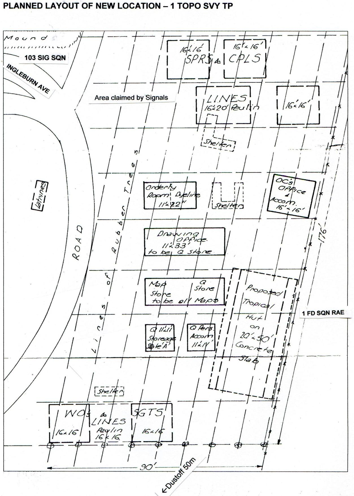
          <figcaption><span class="fignum">Figure 21.</span>I was surprised at the size of the Field Ambulance. As well as the two large marquee wards there were a number of tents both 11‟x11‟ and 16‟x16‟ used for administrative functions. All were floored with wooden flooring sections knocked toget…</figcaption>
        </figure>
      
    
      
        <p>The ALSG occupied an area of sand hills behind the back beach on the eastern side of Vung Tau. Since May when I had first seen the ALSG the sand hills had been pushed about a bit – partly levelled to allow for large marquee erection but of course this had destroyed whatever stability the sand hills might have had originally. While we contended with mud and humidity under the rubber tree canopy of Nui Dat, the ALSG contended with loose sand and a hot sun – very hot once you left the beach, although alleviated by afternoon breezes off the South China Sea. If these were more than a gentle breeze and often they were, the sand became airborne and penetrated every nook and cranny, clothing, equipment of all sorts and even soldier’s trunks – so I was told. Apart from the Field Ambulance the units comprising the ALSG were mostly Ordnance and Supply and Transport. Also there was the Engineer Construction Squadron – “24th” I think – commanded by Major Mal Bythe.</p>
      
    
      
        <p>I went down to the beach a couple of times took a dip in the rather luke warm South China Sea and spent some time thinking about things in general. I could see that I was letting the job get to me, losing control perhaps. Work throughput was disappointing; I felt much of it fell into the category of window dressing for Task Force headquarters and we were not addressing what was important. I had an unspoken concern for our overall security. The recent August events were disturbing and I felt that there could be more to come. I was sufficiently close to the whole intelligence and operational scene to realise how precarious our very thin on the ground Task Force was. I needed to talk to someone about all of this, someone outside the Troop, even outside the Task Force. That opportunity was to present itself quite unexpectedly.</p>
      
    
      
        <h3 id="an-unexpected-meeting">An unexpected meeting</h3>
      
    
      
        <p>I seem to have digressed a little. Returning from the back beach I took a stroll around the hospital complex and found a pleasant area covered with a couple of large paulins to deflect the sun with comfortable chairs on some sort of hard standing. Relaxing there to my surprise was Major John Rowe, my past mentor and support in the Task Force, recovering from hepatitis. He certainly looked wan and clearly not fully recovered – he was to return to Australia in a day or two – but quite bright and pleased to see me. I sat with him for quite a while and he told me a little of himself and his recent illness. He certainly had been very sick and his memory of the past couple of weeks was vague. He was disappointed that he had been “left out of battle” during the Long Tan incident. Perhaps his intelligence expertise might have been of use (he was a professional Intelligence Corps officer)32. I recall him speaking of enemy dispositions and it struck me that he was well aware of the North Vietnamese incursions into the province. Of course he wanted to know what had brought me to the Field Ambulance and I tried to tell him. At that time I was a little unsure myself and a little embarrassed – quite a number of beds were occupied by soldiers recovering from wounds and conditions far worse than my own. I felt I needed to get back to Nui Dat but of course I couldn’t leave without medical clearance. Major Rowe was complimentary of the Troop’s work and its value to the overall scene. He suggested I should not understate the significance of our well-executed annexes to after action reports and the like that found their way to the higher echelons of both the US and Australian command. He told me that the Commander greatly valued our other work – the developing cantonment survey, the quick establishment of theatre grid and our handling of map distribution and the advice I had provided on many related issues. He was of the opinion that the Troop’s work contributed greatly to the professional image of the Australian force as a whole. He was complementary of my writing ability. He thought it stood out against much of the other written reports produced in the headquarters. Perhaps he was buttering me up psychologically. If so it worked.  I didn’t see him again before he left Vung Tau for Australia. I left to return to Nui Dat two days later.</p>
      
    
      
        <h3 id="time-to-return">Time to return</h3>
      
    
      
        <p>I had spoken to Warrant Officer Rollston once or twice by field telephone over the time I was at Vung Tau. There was nothing to fault in what he told me. Site development was progressing well; the detailed cantonment survey was underway again; the Q store and map store were functional and operating – in short, nothing to worry about. I was starting to appreciate what a great bunch of fellows I had. They were there and getting on with what they had to do – quietly and effectively. In<sup class="fn-ref">29</sup></p>
      
    
      
        <aside class="footnote" role="note">
          <span class="fn-num">29</span>It was a sore point with Intelligence Corps officers that their head of Corps (Director) was always of another Corps, usually Infantry. This tended to limit the promotion of Intelligence Corps officers to Lieutenant Colonel. Frequently Intelligence positions were filled by non-intelligence corps officers, again usually Infantry. Major Rowe‟s successor was Major Alex Piper, an Infantry officer.
        </aside>
      
    
      
        <p>all the twelve months we were together at Nui Dat I cannot recall a single complaint nor any show of reluctance to get on and do what had to be done.</p>
      
    
      
        <p>I was visited by the Red Cross officer on the morning of my return to Nui Dat. He asked all the usual things about mail and general unit morale. I don’t think there was a great deal in it but he was a pleasant enough fellow and we may have chatted about nothing much in particular; perhaps the role of survey in the theatre. He may have been Dutch – he was fair with a slight accent. I returned to Nui Dat as an opportunity passenger on a RAAF Iroquois on Monday 5 September.</p>
      
    
      
        <h3 id="establishing-our-site">Establishing our site</h3>
      
    
      
        <p>Our scheduled work was progressing on all fronts although there was still much to do in establishing the work area and I was anxious to bring our sappers and corporals from their accommodation in the headquarters “other ranks” location to our own unique site but that was not to happen until the end of the month. There was considerable site preparation needed – rubber trees had to be “pulled” (Engineers had the equipment to do this and did so on 10 September), raised hard standing (compressed earth) for each of three 16”x<sup class="fn-ref">10</sup>” tents and double interlocked sand bagging to a height of 4 feet (1.2 metres) around each of the accommodation tents. It would have been unreasonable for our sappers and corporals to move from safe accommodation to that which was totally unprotected with only a piece of canvas between their bunk and an exploding mortar bomb. Our warrant officers and sergeants might have to remain in their present location a little longer and I don’t think they were too unhappy about this. Nevertheless, I wanted them in the Troop area.</p>
      
    
      
        <h3 id="binh-ba">Binh Ba</h3>
      
    
      
        <p>My diary records work continuing on combat operations after action report annexes for Operation Holsworthy, a cordon and search and pacification operation carried out by 5RAR and supporting arms on the village of Xa Binh Ba and surrounds. The operation took place from 5-18 September and had interesting post operational implications for the Troop detailed in my Operational Report for September which records: <em>‘Following the cordon and search operation of the Binh Ba village</em> *(Op Holsworthy) in August<sup class="fn-ref">30</sup> ’66, a company of 5RAR had been based in the Binh Ba area. Two<em> </em>surveyors were attached to the company for a period of 10 days and the company provided<em> </em>section strength protection parties during this time. Whilst in the Binh Gia area protection was<em> </em>provided by the RF/PF squad at Duch Than adjacent and west of Binh Gia. All movement on<em> </em>Interprovincial Route 2 was accompanied by APCs’.* The two surveyors so attached were Sergeant Campbell and Sapper Firns and their role was to carry out detail checking of Binh Ba and Binh Gia villages”. They joined the 5RAR company on 13 September. While there was little operational significance attached to the re-settlement village of Binh Gia I was keen to include it as an opportunity task with the more immediate operational commitment of Binh Ba.</p>
      
    
      
        <aside class="footnote" role="note">
          <span class="fn-num">30</span>Definition kindly researched for me by my colleague Dr Noel Sproles (LtCol ret)
        </aside>
      
    
      
        <h3 id="binh-ba-visited-by-apc">Binh Ba visited – by APC</h3>
      
    
      
        <p>A further cordon and search of Binh Ba took place on 18 September and later that day a civic action event was conducted on the “village green”. Medics attended to minor illnesses and dressed wounds; dentists inspected teeth and even the 5RAR band was assembled and played light music. It was a Sunday, a general rest day for the Troop, and I was asked by the Civil Affairs team if I and one other would like to attend. I said I would and the “one other” was Dave King who had been working on some task or other in the draughting tent. We went by APC, fully closed down – my first and only experience at travelling in a closed down APC. For me it was a very unpleasant experience. We headed up Route 2 at break-neck speed for some distance and then left the road and bounced and lurched our way across paddy and all manner of obstacles to our destination, which for me couldn’t be reached soon enough. Travelling in a closed down APC was totally claustrophobic and travel sickness inducing, a condition to which I am prone. After half an hour I staggered out of that evil smelling box totally disorientated with my head spinning. I wondered how soldiers must feel when entering a battle zone this way. Dave King seemed little affected and I tried not to show my discomfort and it passed fairly quickly. The civic action fair was all over by 1600h and we returned to Nui Dat thankfully not by APC but by Iroquois helicopter.</p>
      
    
      
        <p>33 My August Report (No 4) erroneously gave the month as July 66.</p>
      
    
      
        <h3 id="movies-come-to-nui-dat">Movies come to Nui Dat</h3>
      
    
      
        <p>Life at Nui Dat was becoming a little more relaxed in September. My diary notes that on 11 September there was a showing of the movie <em>Weird Mob</em> from the book by Nino Culloto (a pen name – the author was John O’Grady, an Irishman). My viewing was in the officers mess tent, but of course it was shown also in the sergeant’s and other rank’s equivalents, probably in the reverse order. Brigadier Jackson would have been inclined to ensure that soldier’s amenities were served first. Movies supplied through Army Amenities became a regular feature. These were 16mm prints of the original and included wide screen “cinemascope”. I am not sure we had a cinemascope projection lens at first because I recall seeing some in what had been dubbed “skinnyscope”, the images on the screen were elongated vertically. The movies did the rounds through the major units, so that if one missed a viewing on a particular night it could be picked up somewhere else within walking distance. There must have been some relaxation of the black out also although it was still not permitted to show a naked light externally. The battalions had their own rules; I heard someone comment on returning one evening from 5RAR that the place was lit up like Luna Park. Perhaps that was much later in the year.</p>
      
    
      
        <p>Movies of another kind circulated from time to time and were usually shown in closed down squad tents. Word would pass around that there was to be a showing at a certain location, at night of course with a fifty cent entrance charge, no doubt to defray cost. I was persuaded to attend a showing and found it very clinical; the sex act in the “missionary” position involving an Asian couple. Of course it invoked fairly ribald comment from the audience and that may have been more entertaining that what was showing. It was my one and only exposure to a porn flick and I made my departure under cover of darkness leaving my two officer companions to enjoy whatever, if anything, was to follow.</p>
      
    
      
        <h3 id="nui-dat-cantonment-survey-completed">Nui Dat Cantonment Survey - completed</h3>
      
    
      
        <p>I was determined to see the completion of the Nui Dat cantonment survey in September. Although HQ 1ATF accepted the need for the survey and the large-scale maps that would be generated from the survey, it was seen more as an administrative requirement than an operational one. Again I put maximum effort into its completion. My diary records on 19 September that “<em>detailed</em> <em>survey plans less wire west of Inter Province Route 2 supplied to Maj Crowe(DAA&amp;QMG) for</em> <em>distribution to AFV.</em> We had, of course, maintained a progressive master plot of the survey on chronaflex so that dyeline copies of selected completed sheets could be pulled off as required. Surveying the outer perimeter wire was a difficult task; even getting access to it was not simple. Working so close to the perimeter required protection although that wasn’t always forthcoming. My September Report states <em>‘the final stages of this task took longer than expected. This 1st edition in</em> <em>dyeline form is expected to be current until November ’66 when a silk screen printed base map will</em> <em>be produced for wide distribution. This becomes the 3rd edition of the Nui Dat 1ATF location plan.</em></p>
      
    
      
        <h3 id="an-unwelcome-task">An unwelcome task</h3>
      
    
      
        <p>Also in September the Troop was landed with a job for which I was less than happy in accepting, however, it had the Commander’s imprimatur on it so there was little room for argument. The task was a set of drawings for a 1ATF sponsored article for the Australian Army Journal. The task as outlined at the time consisted of reproducing the essential detail of twelve operation drawings from Combat Operations After Action Reports to illustrate the article to be called “The First Four Months”. I made it clear that we could only undertake the initial drawing without colour separation and it would need to be a background job. I wrote to Survey Directorate to give them advance warning of the task and what it might entail. Perhaps I had in the back of my mind that Directorate might take it up with higher authority and make some alternative arrangement to have it done back in Australia; after all, the After Action Reports contained all the relevant drawings that could be copied and colour separated if this was required. I do not have copy of that particular letter to Survey Directorate (I have a copy of a much later letter – included as an appendix to this account) but I feel sure that I was not so crass as to complain about the task.)</p>
      
    
      
        <h3 id="we-become-carpenters-and-builders">We become carpenters and builders</h3>
      
    
      
        <p>We were allocated material for our 50”x<sup class="fn-ref">19</sup>” tropical hut, lumber and corrugated iron, on 14 September and we started building the frames straight away. Dave Christie supervised this – not only supervised but physically did most of the construction. The site had to be levelled and prepared and concrete sills poured to support the frames. Nails had become a scarce commodity and I think it was probably Boots who discovered a local source in Baria close to where we took our laundary and we were able to purchase a sufficient quantity. They were very soft, someone said made from fence wire, but they did the job. I am not sure where the piastre came from. Perhaps the HQ had some sort of discretionary fund – we certainly did not. It was all hands to the pump for their erection, a somewhat precarious operation. Each frame comprised a simple roof truss (ridge at top) supported by two vertical 2”x<sup class="fn-ref">4</sup>” posts, one on either side. The first frame was elevated into position with ropes with half a dozen fellows holding it upright then temporary struts nailed on and braced to the ground to keep it standing. Then the second frame was erected and bearers nailed across from the first to the second and so on until all five frames were in position at 12 ½ foot centres, the structure becoming more and more rigid with the erection of each frame. Looking back in my diary I am surprised at how quickly we put it all together. By the end of the month we had iron on the roof, one side completed with the “fixed shutters” and a sand and gravel base on the floor ready for the concrete slab.</p>
      
    
      
        <figure id="figure-22">
          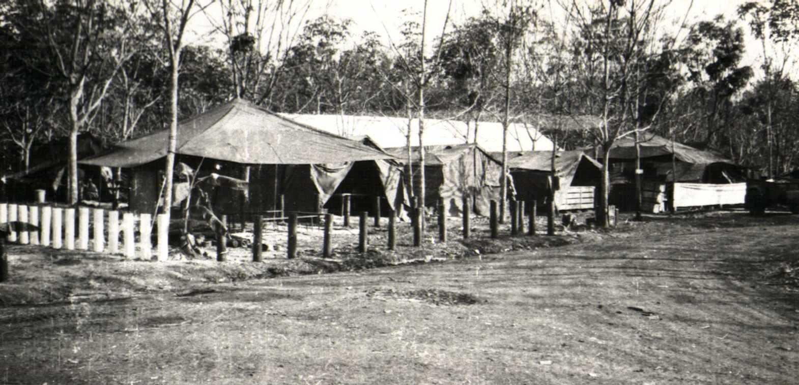
          <figcaption><span class="fignum">Figure 22.</span>Our new location at the eastern end of Ingleburn Avenue. Photo taken soon after completion of our first ‘tropical’ work hut.</figcaption>
        </figure>
      
    
      
        <p>However, this had to wait a couple of weeks until a load of aggregate could be delivered and more concrete. At the same time we were assisting Engineers in the construction of the ablution block and the latrine block – both involving concrete slabs, the latter over a two metre deep trench, both with timber and corrugated iron sides and roof.</p>
      
    
      
        <figure id="figure-23">
          
          <figcaption><span class="fignum">Figure 23.</span>Celebration on completion of our first tropical work hut. Left to right –Snow Rollston, Dave Christie, HQ Q pers, Stan Johns, Ken Slater, Bob Skitch, L/Bdr Sellwood, Dennis Duquemin, 131 Loc Bty svyr, Pte Renzo US Bty svyr, S/Sgt Glascow US…</figcaption>
        </figure>
      
    
      
        <h3 id="alan-carew-boots-campbell-gnr-moreau">Alan Carew, Boots Campbell, Gnr Moreau.</h3>
      
    
      
        <h3 id="tactical-boundaries-again-and-again">Tactical boundaries again – and again…</h3>
      
    
      
        <p>A draughting task undertaken in September was the re-adjustment of the 1ATF TAOR boundaries and other significant tactical divisions within the area of operations to conform to natural (e.g. watercourses etc) or man-made features. It might have seemed all too obvious that boundaries should follow features that could be recognised on the ground but I found that operations staff officers had the tendency to draw lines on maps without any thought to the underlying detail. I had raised the problem with operations staff in June (refer p<sup class="fn-ref">19</sup>) when many of the boundaries were first being formulated but they were ever changing and in any case the photography we held was very scatty and the 1:50,000 map coverage unreliable. Interestingly, this time the initiative to re-adjust the boundaries came from Operations and I was aware that there had been instances of casualties resulting from friendly fire.</p>
      
    
      
        <p>Despite the time spent on campsite development – building the tropical hut, ablution block and latrines – laying concrete, reorganising Q and map stores and developing a correspondence inwards and outwards system (an SOP prepared), the Troop continued to keep a number of map related jobs progressing in September. As well as those already mentioned there was the photo plot of Long Son Island, the landing zone plot of the Area of Operations (visual reconnaissance 75% complete), 1:25,000 plot of Viet Cong tracks from captured maps, recompilation of Long Phuoc 1:5,000 photo plot and we had even made a start on the Phuoc Tuy Provincial agricultural map which unfortunately did not progress too far.</p>
      
    
      
        <h3 id="no-compassionate-rta">No compassionate RTA</h3>
      
    
      
        <p>On 15 September the Troop received notification of the death of the father of Sergeant Stan Campbell. Sergeant Campbell had been attached to 5RAR at Binh Ba undertaking field completion of the Binh Ba and Binh Gia maps. I brought him back to Nui Dat and the following is an extract from my September report of the incident. It is a reflection of the Army’s attitude to compassionate circumstances prevailing at that time. <em>The following morning Sergeant Campbell applied for</em> <em>emergency leave and return to Australia. The application was verified by HQ AFV on the same day</em> <em>and Sergeant Campbell was informed that</em> <em>an investigation would be conducted to</em> <em>determine whether or not he was required</em> <em>at home. On 26 September the result of</em> <em>the investigation eventually came to hand</em> <em>(negative). No fault is found with the result</em> <em>of the investigation, however, the length of</em> <em>time taken by the investigation seems</em> <em>excessive. The case has been presented</em> <em>in writing to HQ AFV.</em> Stan was, and is a stoic person and took the outcome without complaint. In retrospect I can imagine the investigator would have approached a family member and simply inquired “is there a family need for the deceased’s son to be brought home?” and the very predictable response would have been “no”. And yet we still wonder at why so many Vietnam veterans continue to re-live their service in that theatre. I would hasten to add that in this present day Stan has put the incident well behind him.</p>
      
    
      
        <figure id="figure-24" class="portrait">
          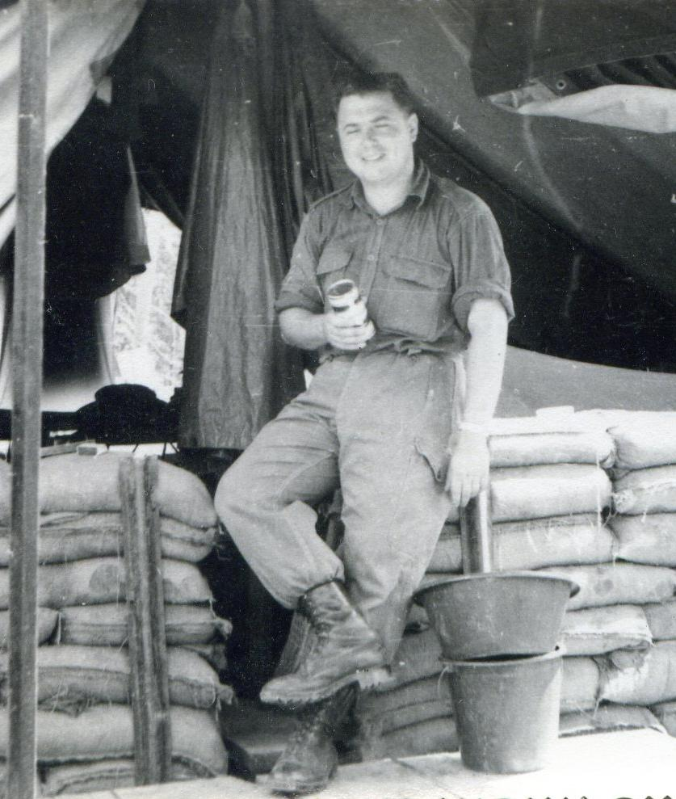
          <figcaption><span class="fignum">Figure 24.</span>Sergeant Stan Campbll</figcaption>
        </figure>
      
    
      
        <h3 id="the-1-25000-enlargement-series-arrive">The 1:25,000 enlargement series arrive</h3>
      
    
      
        <p>On 26 September the first batch of six sheets of the 1:25,000 enlargement series arrived at Nui Dat from Australia. The remaining seven sheets in the series arrived in October. The maps were printed on a material called “Tufprint”, a sort of plasticised paper not unlike present day milk cartons but quite flexible, and very durable. It was a pity that the series use would be mainly for briefing and CP use given the popularity of the Pictomap series for patrolling, although I believe that it received some field use as users became aware of the inherent problems in the Picto series. We immediately started revising the maps on chronaflex overlays with the intention of over-printing them on the silk-screen press once it was operational.</p>
      
    
      
        <h3 id="our-screen-printing-contingent-arrives-and-also-the-stereotopes">Our screen printing contingent arrives – and also the Stereotopes</h3>
      
    
      
        <p>During the last week of September stores relating to the silk-screen printing press arrived at Nui Dat and also both Zeiss Stereotopes – long awaited (refer p<sup class="fn-ref">31</sup>). The latter went into immediate use in the plotting of Long Son Island .</p>
      
    
      
        <aside class="footnote" role="note">
          <span class="fn-num">31</span>On a lighter note I happened to mention to Captain Dave Holford our need for „reproduction pesonnel‟. Dave with a somewhat droll sence of humour responded – “do the have big balls?”
        </aside>
      
    
      
        <p>On 25 September our screen printing personnel contingent arrived – Sergeant Evan Giri, Sapper Les (Pud) Wellins and Sapper Ken Slater. At the time of their arrival no posting order had been received for the three members previously nominated to return to Australia, Corporal Carew and Sappers Johns and O’Connor. While I was delighted to retain the three for as long as possible their retention created a “paperwork” problem – how to show the lithographic personnel in the monthly strength return. I made the following comment in my September report: <em>While the</em> <em>personnel nominated to RTA remain in the theatre, new arrivals must be shown surplus to</em> <em>establishment. AFV requires a monthly return of personnel for RTA. It has been necessary to show</em> <em>the personnel listed</em> (that is, Carew, Johns, and O’Connor) <em>on this return.</em></p>
      
    
      
        <h3 id="minefields">Minefields?</h3>
      
    
      
        <p>My diary notes that we prepared an annex of proposed minefields in the 1ATF area (presumably for a HQ 1ATF report or plan of some sort to higher authority). I have no further information on what was proposed although I feel certain that these were conventional close-in minefields to fill gaps in the outer perimeter and no doubt meeting all the established doctrine for minefields. The disastrous minefield established in 1967 could not have been conceived under O.D. Jackson who had an aversion to minefield use.</p>
      
    
      
        <h3 id="long-tan-follow-up-i-meet-major-harry-smith">Long Tan follow-up – I meet Major Harry Smith</h3>
      
    
      
        <p>My diary records another incident that has stayed with me for years. By the end of September the Battle of Long Tan (Operation Smithfield) had retreated into the memory of most of us at Nui Dat or at least it seemed so at the headquarters level. On 29 September I was directed by the GSO<sup class="fn-ref">2</sup> Operations to go across to 6RAR and obtain directly from the OC of Delta Company, Major Harry Smith, his impressions of the battle from first contact to final withdrawal. I was mildly surprised because I had already seen a number of sketches of this nature taken, I presume, from the 6RAR After Action Report. Also the Troop had provided several dyeline copies of a simple 1:5,000 enlargement of the battle site. Maybe there was some conflict between these and the reports of other units involved in the battle or even sub-units. Certainly everyone was very “close-lipped” about it. We quickly produced a further foolscap size 1:5,000 enlargement and I proceeded over to 6RAR with a wad of these, called at the battalion headquarters (who thankfully were expecting me) and I was taken to Major Smith’s tent, a 16”x<sup class="fn-ref">10</sup>” with a bunk bed on one side and a “tables, camp folding” with chair on the other – perhaps a packing case as a bedside table. All very spartan! Major Smith was reclining on the bunk as I entered. I recall wondering at the time whether he was all that well – he looked tired and drawn. Certainly he displayed no apparent verve or enthusiasm. I wondered if he might have been suffering from the after effects of the battle – I had heard of post- battle depression. He indicated I should take a seat (on the only seat in the tent). Clearly he had expected me and I had no need to tell him what I wanted. He took my wad of maps and sitting on the side of his bunk and resting the maps on a folder of some sort he produced a series of twelve sketches of the battle with felt-tipped spirit pens in the traditional colours of blue for friendly forces and red for enemy forces with correct military symbols. He did these quickly as though by that time, six weeks after the battle, each phase of the battle was absolutely locked into his mind. He was making almost inaudible comment as he produced each one – to himself more than to me – such as “a classical flanking move” – as if he was trying to re-construct the battle into classical military manoeuvres. Somehow I found the whole incident a little embarrassing. I felt as though I shouldn’t be there. Major Smith took no longer than half an hour to execute the twelve sketches. He gave them to me without comment. I thanked him and returned to the TF headquarters, courtesy calling at the 6RAR HQ on the way out.</p>
      
    
      
        <p>Arriving back at TF HQ I reported back to GSO<sup class="fn-ref">2</sup> Operations with the twelve maps and after some muttered discussion with GSO 3 (Captain Hutchinson) and one or two others a number of the maps were screwed up and thrown into the waste-paper bin. Others were kept, their fate unknown to me. I do not recall seeing them again in the Task Force After Action Report annexes. On the spur of the moment I quickly removed the discarded diagrams from the waste-paper bin, stuffed them into my pocket and returned to the Troop where I carefully straightened them out and put them into a folder in the bottom of my soldier’s trunk where they remained until I unpacked my trunk back in Australia eight months later. I suppose I felt that they might have some historical value. One was reproduced as an example of the Troop’s work in Vietnam in Coulthard-Clark’s Corps history. I have since obtained copies of the “missing” maps; not the ones drawn by Major Smith on my visit but ones presumably drawn by him at an earlier time.</p>
      
    
      
        <div class="narrative">
          
          
          <p>Postscript: In the years since ‘Long Tan’, reporting and comment – some from actual participants – indicates that there has been considerable dissent on the phases of the battle with many ‘armchair critics’ having their say. I have often wondered how a contact and skirmish such that it was, lasting little more than an hour could be crystalised into twelve separate phases of classical tactical moves. Perhaps it is necessary to do it this way in order to do justice to those remarkable young men who found themselves at the forefront of the battle.</p>
          
        </div>
      
    
      
        <h3 id="map-5-operation-smithfield-battle-of-long-tan">MAP 5 – OPERATION SMITHFIELD (Battle of Long Tan)</h3>
      
    
      
        <h3 id="battle-sketches-by-major-harry-smith">Battle sketches by Major Harry Smith</h3>
      
    
      
        <figure id="figure-25">
          
          <figcaption><span class="fignum">Figure 25.</span>Sketch 7</figcaption>
        </figure>
      
    
      
        <figure id="figure-26">
          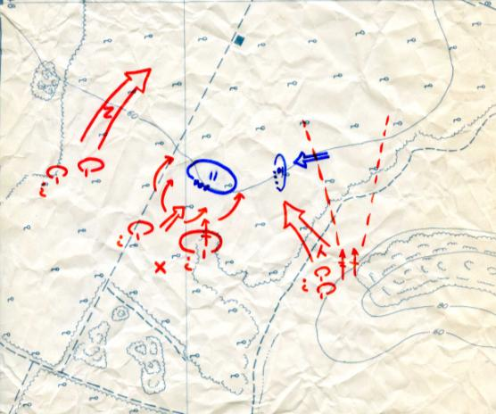
          <figcaption><span class="fignum">Figure 26.</span>Sketch 8</figcaption>
        </figure>
      
    
      
        <h3 id="sketch-7">Sketch 7</h3>
      
    
      
        <h3 id="sketch-8">Sketch 8</h3>
      
    
      
        <figure id="figure-27" class="portrait">
          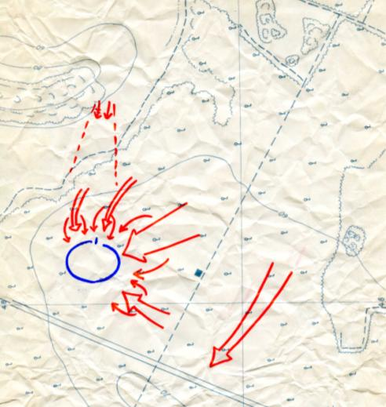
          <figcaption><span class="fignum">Figure 27.</span>Sketch 10</figcaption>
        </figure>
      
    
      
        <figure id="figure-28">
          
          <figcaption><span class="fignum">Figure 28.</span>Sketch 9</figcaption>
        </figure>
      
    
      
        <h3 id="sketch-10">Sketch 10</h3>
      
    
      
        <figure id="figure-29" class="portrait">
          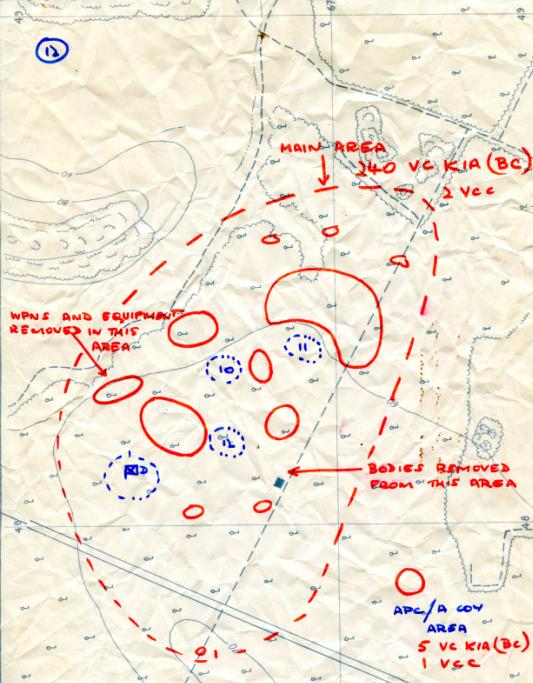
          <figcaption><span class="fignum">Figure 29.</span>*Postscript: In the years since ‘Long Tan’, reporting and comment – some from actual participants –* *indicates that there has been considerable dissent on the phases of the battle with many ‘armchair</figcaption>
        </figure>
      
    
      
        <p>These are the five sketches depicting the final stage of the battle that were rejected by HQ<sup class="fn-ref">14</sup>ATF <em>The sketches retrieved were crinkled</em></p>
      
    
      
        <h3 id="sketch-12">Sketch 12</h3>
      
    
      
        <h3 id="mess-jackets-in-the-rubber-trees">Mess jackets in the rubber trees</h3>
      
    
      
        <p>Stories could often circulate around the headquarters with surprising speed and sometimes with a degree of mirth. It may have been in September that it was reported that snow was falling amongst the rubber trees in the vicinity of the 1st Field Regiment headquarters. Snow indeed! Investigation revealed that white summer mess jackets were seen hanging from the lower branches of rubber trees having a good airing. Red striped trousers too. It seems that the CO of the Regiment had ordered his officers to pack their summer mess kit into their soldier’s trunk on leaving Australia. Well, Lieutenant Colonel Cubis was that sort of person. Gunner officers were always seen to have a kerchief tucked up the sleeve of their immaculate uniform and Dick Cubis was the epitomy of that tradition. I had occasion to visit his tent for some reason and was a little surprised to find on his rather spartin bedside table (a box) a photo of the Queen and Duke occupying the space where one might expect to find a photo of Mum and the kids. Lieutenant Colonel Cubis had been a Queen’s Equerry in a previous posting so that explained it all. Anyhow, the white mess jackets. It was Cubis’s intention to have a formal officers” mess dinner under canvass under the rubber trees. Goodness knows what was to comprise the menu; I think we were still on ten man ration packs and American “C” rations in September. It rapidly came to the attention of O.D. Jackson that this was to take place and having but small regard for his senior artillery advisor he no doubt took some pleasure in scotching the plan The dinner did not take place and the snow stopped falling.</p>
      
    
      
        <h2 id="october-1966">OCTOBER 1966</h2>
      
    
      
        <p>We continued into October combining work on our campsite with meeting the needs of the Headquarters in tactical overlays, before and after annexes, photo plots and the like. With the cantonment survey out of the way at least for a time I could put greater effort into site development.</p>
      
    
      
        <h3 id="provincial-route-ltl2-nui-dat-vung-tau">Provincial Route LTL<sup class="fn-ref">2</sup> – Nui Dat – Vung Tau</h3>
      
    
      
        <p>In October restrictions on travel between Vung Tau and Nui Dat were largely lifted between the hours of 0900 and 1700. Each day at 0630h the road would be cleared by three APCs travelling its length and soon after the daily supply convoy would depart the ALSG and with the APC escort travel north to Nui Dat. Civilian traffic would flow through after that – an assortment of ox drawn carts, pedestrians, motorised tricycle carriers known as cyclos, the occasional bus and bicycles. I don’t recall too many incidents along Route 2 and once the travel restrictions were lifted army traffic, both Australian and US ran the road with impunity. US traffic of course greatly increased after the two US artillery companies with their 175 mm and 185mm self propelled guns (like huge tanks) were deployed on the western side of Route 2 opposite 1ATF. Large US convoys heading north beyond Nui Dat travelling at speed were occasionally seen. They were waved through by our own Military Police who maintained a check point just south of Nui Dat, spot checking some of the civilian traffic. Recently promoted (Temporary) Corporal Brian Firns in December, unwisely as it turned out, took the opportunity to travel from Vung Tau to Nui Dat with, or at least was caught up in, a US convoy moving at a speed of 60mph (100kph) and was nabbed by Australian provost just south Nui Dat for exceeding the Australian speed limit of 30 mph. Brian was charged by the Military Police with the charge being heard by the GSO<sup class="fn-ref">2</sup> Operations on Task Force headquarters and he received (unfairly in my mind) a severe reprimand.</p>
      
    
      
        <p>I have provided the foregoing to give some indication of LTL 2 and its operation. Two of our own members, Warrant Officer Dave Christie and Sapper John Campbell returning from Vung Tau mid morning on 15 October received a few rounds of enemy sniper fire between Baria and Nui Dat. An enemy incident report was raised – the only one I think initiated by the Troop during the first twelve months – and submitted to Task Force headquarters. Nothing was made of the incident.</p>
      
    
      
        <h3 id="r-r-commences">R&amp;R commences</h3>
      
    
      
        <p>Warrant Officer Snow Rollston was our first member to take Rest and Recuperation (R&amp;R). This entailed a seven day break from Nui Dat in one of three locations – Singapore, Bangkok and Hong Kong. In 1967 other destinations were offered including Sydney and Hawaii. Snow departed on 1 October and returned on 8 October. Members proceeding on R&amp;R wore their polyester uniform – for some this required extensive cleaning off of mould that had developed with the uniform folded in the bottom of their soldier’s trunk. Most took civilian clothes with them. I believe that a uniform inspection was carried out before boarding the R&amp;R flight at Tan Son Nhut to ensure that an appropriate dress standard was achieved although I was not aware of any soldier being turned back. Snow had opted for Bangkok. Later in October Corporal Peter Clarke and Corporal Dennis Duquemin took R&amp;R in Singapore and Warrant Officer Dave Christie in Hong Kong on 31 October. Others went in later months to one of those three locations. Hawaii was too expensive and took too long to get there and Sydney became popular with the Americans but Aussies who went there felt the need to continue to their home for three or four days, an option that for many turned into a psychological disaster. On returning to Australia at the completion of my tour in May 1967 I found that down-town Sydney had become very much a R&amp;R mecca with rapidly constructed medium rise accommodation buildings at the westen end of Hyde Park and in Oxford Street. I chose not to take R&amp;R.</p>
      
    
      
        <h3 id="disaster">Disaster</h3>
      
    
      
        <p>Our first consignment of Mipofolie arrived on 1 October, some 60 rolls. Rolls were wrapped in brown paper and packed in cardboard boxes, twelve to a box – quite heavy. All of the boxes were thoroughly wet – soaked through. Some boxes were breaking up with rolls spewing out. The rolls were wet also. Clearly the boxes had become wet some time before; perhaps on the <em>Jeparit</em> (or was it still the <em>Sydney</em> in October). Our storemen and Sergeant King unpacked them and I stood and watched feeling absolutely disgusted. The water had penetrated right into each roll so that the adhesive clear foil was falling away from the orange plastic backing material. We may have been able to recover some useable material but it was astonishing how thoroughly water had penetrated the rolls. I immediately submitted a defective material report and a priority 1 indent for resupply.</p>
      
    
      
        <h3 id="the-stereotopes">The Stereotopes</h3>
      
    
      
        <p>I was determined to maximise our use of the Zeiss Stereotopes having justified their use to Survey Directorate (refer page 13). I knew that the mathematics required to set them up was fairly complicated and the booklet of printed instructions accompanying the equipment a rather poor English translation and difficult to follow (at least to me it was). However, we developed a graphical trial and error system for setting the instrument’s “rectiputers” to largely eliminate photo tip and tilt and to plot at the required scale. The optics of the Stereotope were excellent providing a very strong stereoscopic image, making it far easier to identify quite small cultural detail. We used the Stereotope extensively on subsequent products, even developing a technique for plotting directly from the 9”x<sup class="fn-ref">18</sup>” split vertical prints with their 13 degrees of obliquity.34 I was quite proud of our photogrammetric ability, especially since both US mapping units had no such equipment and therefore no real stereo-plotting ability. (I was told at one point that they were to install a three projector Multiplex<sup class="fn-ref">29</sup> but the equipment had been lost in transit from the US.)</p>
      
    
      
        <h3 id="long-son-nui-nua-island">Long Son (Nui Nua) Island</h3>
      
    
      
        <p>I am not sure quite how the need to produce a large scale map of Long Son Island originated. My July report simply states the requirement for a 1:10,000 enlargement from the standard 1:50,000 map with additional detail from any available air photography for “future 1ATF Operations”. The task escalated somewhat resulting in two overlapping maps printed in two colours by 569 Engineer Company at Nha Trang. My October report states in some detail: <em>The original enlargement of Long</em> <em>Son Island from the L701series 1:50,000 sheet was revised extensively from the 12” vertical</em> <em>photography mentioned in Op Report No 5. Eleven stereoscopic models covering coastal areas</em> <em>and  the hamlet area were plotted planimetrically. The remainder of the island was revised from</em> <em>photo inspection and graphical plotting. At a late stage in the final drawing a set of 9’ x 18’ split</em> <em>vertical photographs was obtained. A final check of all detail was made from this and track</em> <em>information improved. The map was finally drawn for colour separation in two overlapping sheets</em> <em>in black and brown. The map has been printed by 569 Engr Coy (Topo)(Corps).</em></p>
      
    
      
        <p>A point of some significance in the production of Long Son Island was that much of the final plotting was done using both Stereotopes and with their superior optics we were able to obtain some value from the blurred 12 inch intelligence photography.  Unit members displayed much interest in the Stereotopes. My diary indicates that on 5 October Corporal Ceruti was assembling them and then five days later Warrant Officer Rollston and Corporal Duquemin were involved. I made no mention of that in my monthly report<sup class="fn-ref">32</sup> although I did so in the production notes on the printed map: <em>Prepared by the Royal Australian Survey Corps in October 1966. The map is an</em> <em>enlargement from Sheet 6442-III L701 AMS Edition 1 with improved planimetric detail obtained</em> *partially from stereo plotting methods using Zeiss Stereotope and 9”x<sup class="fn-ref">14</sup>” 1:5000 vertical<em> </em>photography and partially from photo inspection and graphical plotting of 9”x<sup class="fn-ref">18</sup>” oblique<em> </em>photography with an obliquity of 13 degrees. Horizontal control is based on map position from<em> </em>sheet 6442 III series L701. Contours are a direct enlargement from sheet 6442 III series L701.<em> </em>Cultural detail has not been verified in the field.<em> My September report stated in reference to Long Son: </em>Intelligence photography at 5,000 feet with a 12 inch (focal length) camera has been<em> </em>received. The photo imagery is unfortunately badly affected by speed blur; however, a revision of<em> </em>sorts will be attempted.*</p>
      
    
      
        <aside class="footnote" role="note">
          <span class="fn-num">32</span>The Stereotope was of Ziess Jena origin, the East German Ziess factory. Some years later I heard that in subsequent years the Stereotopes, having been gathering dust sitting on a table, were packed into their boxes never to be used again. If that is true it is very disappointing.
        </aside>
      
    
      
        <p>The double sheeted map was taken by Corporal Des Ceruti and Sapper Derek Chambers to Nha Trang for printing on the 3rd November. I have gone to some trouble to describe the process involved in producing the Long Son double sheeted map because it reflects in some detail the work involved in many of the products produced by the Troop in 1966/67 and no doubt in subsequent years.</p>
      
    
      
        <h3 id="captured-viet-cong-maps">Captured Viet Cong maps</h3>
      
    
      
        <p>In September a number of captured Viet Cong maps purportedly showing Viet Cong tracks came to hand. I think they had been doing the rounds of the Task Force headquarters and the intelligence section and they were finally passed over to the Troop to see whether we could establish their location and better identify them on our own mapping. One might even question whether they were in fact “tracks” – rather indistinct lines, some broken, some full on a fairly scatty map base of some sort, probably traced from another map. Many were on scraps of tracing paper, crinkled and marked. It wasn’t until October that we had a good look at them. I thought we might produce an intelligence track overlay; I was certainly reluctant to include them in a revision overlay. Captured enemy maps hold a certain fascination – the fact that they have been used by the enemy, the Viet Cong, presumably to plan their operations and navigate – suggests an intelligence importance that I came to realise is not necessarily justified. Of course, they could also be an intelligence decoy but I don’t think the ones we had were that.</p>
      
    
      
        <p>Close examination and comparison with a French 1: 100,000 map produced some 20 years before suggested that the base detail on these captured maps was of French origin. My October report comments – <em>(the maps) are very inaccurate in both physical and cultural detail. Track positions</em> <em>can only be considered as indicative and generally bear only an approximate relationship to the</em> <em>known track pattern.</em> Nevertheless we developed a method for transcribing the Viet Cong tracks onto the L7014 1:50,000 maps…</p>
      
    
      
        <p>1. Conversion of the grid to UTM using basic points of reference, eg, trig points, main road junctions; 2. Enlargement of the 1:100,000 Viet Cong map onto a 1:50,000 grid, showing tracks, creeks and ridgelines; 3. Trace over a light table onto the standard 1:50,000 maps all tracks using creeks and ridgelines as the main guide and the grid to a lesser extent.</p>
      
    
      
        <p>This work continued throughout October and in November two 1:25,000 maps were over-printed on the silk screen as intelligence over-prints. My November report makes further comment…<em>Traces have been prepared of adjoining maps and are awaiting further name</em> <em>information from Phuoc Tuy Sector HQ. The track information appears to be of doubtful value</em> <em>since the tracks shown on the Viet Cong maps appear to have little in common with the track</em> <em>pattern which is known to exist. The names are probably of greater significance than the tracks</em> <em>and an effort is being made to include all possible names either as shown on the captured maps or</em> <em>as recorded in Sector HQ files. The track pattern taken from Viet Cong maps tends to support the</em> <em>names and perhaps therefore has some intelligence value. It is proposed to continue with the</em> <em>project.</em></p>
      
    
      
        <h3 id="the-home-front">The home front</h3>
      
    
      
        <p>Throughout 1966/67 Wendy and I kept up consistent correspondence. First by letter and then, after the arrival of the “National” portable tape decks – I bought two – (see page 19) we corresponded by voice tape. Of course the separation was not easy for either of us and I suspect more so for Wendy living on her own in our Clovelly unit with baby Sarah Jane, who turned one year old on 14 August. By then she had started to walk. Wendy had our Poodle dog Beau and on the voice tapes I would often hear him give a bark or two. Beau was a very good “unit” dog, well behaved and well liked by the other occupants of the building.</p>
      
    
      
        <p>Wendy involved herself with the Army Officer’s Wives Club and the Vietnam Wives Club, the latter meeting at Holsworthy, but not too often. The Officer’s Wives Club met at Victoria Barracks and Wendy found herself mixing with quite a few senior officers” wives – not at all disconcerting; Wendy could hold her own at any social level. I recall she learnt to play the card game, “solo” and played regularly in a group.</p>
      
    
      
        <p>The other unit occupants at Clovelly were friendly and supportive. Major Bob Bell and wife Maureen occupied the unit below ours. On one occasion Bob and Maureen invited Wendy and Sarah to accompany them on a steam train trip from Sydney Central to Wollongong and back with all the steam engine buffs. It was quite an adventure – not all that well enjoyed. Bettina Smeaton occupied the unit above Wendy. Her husband Major Peter Smeaton was in Vietnam holding various appointments with 6RAR including company commander and operations officer. Peter was wounded in about July from misdirect friendly artillery fire and refused medevac back to Australia. He recovered from his wounds and served on in Vietnam returning with his battalion in June 1967. Peter was awarded a MID<sup class="fn-ref">33</sup> for his Vietnam service.</p>
      
    
      
        <aside class="footnote" role="note">
          <span class="fn-num">33</span>„Multiplex‟ stereo plotting equipment produces its three dimensional image from two overlapping air photos by projecting one photo image through a blue filter and the other photo image through a red filter with the operator wearing a pair of spectacles with one red lens and one blue lens. The resulting three dimensional image is no where as clear and sharp as that obtained with a stereotope.
        </aside>
      
    
      
        <p>Wendy would make the occasional trip to the north side to visit her relatives. During my absence in Vietnam Wendy’s paternal grandmother passed away. She was something of a family matriarch, close to Wendy and greatly missed. Despite promises to the contrary contact with her family were always at Wendy’s initiative. In October Wendy visited her father and stepmother in her family home in Tenterfield. I think it was a happy enough visit although her relationship with her stepmother was never easy. Quite a number of her maternal relations lived in the Tenterfield area including her maternal grandparents, Pop and Nan McCotter. Following Tenterfield Wendy went on to Brisbane visiting and staying with old friends mostly from nursing days and also my own cousins, Edna and John Mules. Wendy’s Aunt Val McCotter, a war widow, stayed with Wendy in our Clovelly unit for a few weeks while she was undergoing treatment at Concord RGH. My younger cousin Sue Mules and a cousin of hers stayed for a few days. Our very comfortable unit was close to facilities, a twenty minute bus trip to the city and the popular beaches.</p>
      
    
      
        <p>A somewhat disconcerting event occurred on her return to Clovelly. Our unit was infested with fleas – not dog fleas but some sort of ground flea common enough in Sydney. Wendy called for Army help but by the time it arrived – days later – she had addressed the problem herself with cans of spray. So much for the support the Army promised to the wives of soldiers serving in Vietnam.</p>
      
    
      
        <p>My communication with home continued weekly by letter or letter-tape despite the delivery time frequently verging on two weeks. My letter tapes were often compiled progressively over the span of a week and Wendy’s probably the same. Her letter tapes from her visit to Tenterfield and Brisbane included warm messages from her family and all of our friends and they gave me a great deal of pleasure on receipt.</p>
      
    
      
        <h3 id="saigon-again">Saigon again</h3>
      
    
      
        <p>On 6 October I visited Saigon again this time taking with me Sapper Ron Smith our National Service draughtsman. We had found a number of anomalies in the survey control points we had occupied and observed on the Vung Tau Peninsula and I needed to discuss these with Lieutenant Colonel Benton with a view to having them resolved. I went armed with copies of our computations, control diagrams and trig listings.   Sapper Smith’s role was simply to see something of the US mapping service and the ARVN Topographic Company the following day. We departed Nui Dat at 0615h for the US ACTO on Vung Tau’s chaotic airport and boarded a Caribou flight to Tan Son Nhut. We reported to HQ AFV and organised BOQ/BEQ accommodation, called on Major Darmody and generally filled in the morning. In the afternoon we returned to Tan Son Nhut and the USARV M&amp;I Division. Colonel Benton was his usual hospitable self and with a couple of his officers spent most of the afternoon perusing the material I had brought and I think, discussed the issue with USAMFE in Hawaii<sup class="fn-ref">34</sup>. Essentially the problem lay in the mismatch between US control values and original French first order points. As a result of our representation on the issue we later received new values for Vung Tau Lighthouse and Cap St Jacques from USAMFE, Hawaii.</p>
      
    
      
        <aside class="footnote" role="note">
          <span class="fn-num">34</span>Looking back, I am a little surprised at this. I knew that there was some scepticism in Survey Directorate as to whether we would or could master the Stereotope – not many others had or even had bothered to attempt to do so. The Corps had too many other options – Wild B8 stereo plotters and the like.
        </aside>
      
    
      
        <p>Ron and I returned to the Free World Building and from there to our respective BOQ/BEQ. My BOQ on that occasion was a souless eight floor or thereabouts accommodation building of bedrooms with a shared bathroom between each two bedrooms. At street level the building was heavily sandbagged with the inevitable very large diesel driven generator making a dickens of a noise with its fumes penetrated the entire building. The rooms were adequate but far from clean and the bed linen looked rather dubious. The building had no facilities and for a meal one needed to walk a block or so, dodging the heaps of garbage or walking over them to get to a somewhat more salubrious establishment that provided meals and entertainment. The curfew at 2000h meant that one needed to be back in one’s bedroom by that time although it seemed to me that there was some latitude in its application. In Saigon curfews came and went, no doubt determined by the perceived threat. In fact, Viet Cong incidents were fairly rare at that time. The following morning Ron seemed to have had a more enjoyable evening than I had but perhaps it was simply the experience of sleeping in a bed with relatively clean bed linen for the first time in months. Ron Smith was forever the polite young man who never had a word of complaint no matter what the circumstances might be.</p>
      
    
      
        <h3 id="arvn-topographic-company">ARVN Topographic Company</h3>
      
    
      
        <p>Our mission for our second day was to visit the ARVN Topographic Company commanded by Dai Uy (Captain) Ngoc<sup class="fn-ref">35</sup> at Tan Son Nhut. The visit had been suggested and arranged by Colonel Benton who believed that it would be an excellent and convenient unit to undertake the printing of some of our maps. Colonel Benton warned that we would need to be very selective in what we gave them – nothing that would reflect on future operations or troop dispositions. While the Company was technically very competent, like all ARVN units one had to assume that it would be Viet Cong infiltrated.</p>
      
    
      
        <aside class="footnote" role="note">
          <span class="fn-num">35</span>MID – Mentioned in Despatches. The awardee wears a „fern leaf‟ on his campaign ribbon.
        </aside>
      
    
      
        <p>We arrived at the ARVN Topographic Company mid morning accompanied by one of the US officers from the M &amp; I Division and were greeted by Dai We (Captain) Ngoc, a solidly built shortish ARVN officer. Ngoc, as he invited me to call him, was very pleasant company, friendly and hospitable. Ron was taken in charge by one of Ngoc’s NCOs and separately conducted on a tour of the Company establishment. Ngoc had excellent English. He told me he had originated in the north (hence his appearance) and was of Roman Catholic religious faith. Much of his survey training had been in the US and I think he was degree qualified – as were all of his officers, most of whom had obtained their qualifications at the French Sorbonne in Paris. Ngoc was optimistic of the outcome of the war – an optimism that even then I was increasingly finding hard to share. He told me of his family – wife and two or three small children. They lived comfortably on the base. Ngoc was only too willing to undertake printing for the Australian Task Force. I gained the impression that his facility was very under-utilised.</p>
      
    
      
        <p>Following these pleasantries and a very Vietnamese morning tea, Ngoc showed me around his Company which covered quite an extensive area. The all ranks Company strength was about 150. All personnel lived on the base, senior NCOs and warrant officers with their families. The Company was well accommodated in buildings that looked fairly permanent. My immediate impression was how neat and tidy the company grounds were. Areas had been planted with well tended lawns and border gardens. It was quite a contrast with other ARVN units I had seen in Baria and Vung Tau that were often strewn with litter and infested with half starved dogs. The technical platoons were well equipped although clearly much was of vintage design but well maintained. I doubted whether the field sections saw much deployment and perhaps their main occupation was maintaining the grounds. The photogrammetric troop appeared to be engaged in plotting; what? – I had no idea. Soldiers were working on manuscripts of various sorts and there seemed to be a fairly busy productive air to the place. In the lithographic troop it was pointed out to me that they used a negative to plate process and “duffing” negatives for spots and blemishes was normal practice<sup class="fn-ref">36</sup>. The day passed quickly and Sapper Smith and I returned to the Free World Building in the late afternoon and from there to our respective BOQ/BEQ. I developed something of a personal friendship with Ngoc, at one time meeting his family for a “home cooked” dinner, staying overnight and making use of one of his unit vehicles for getting around Saigon. More on that later.</p>
      
    
      
        <aside class="footnote" role="note">
          <span class="fn-num">36</span>USAMSFE Hawaii – United States Army Mapping Service Far East
        </aside>
      
    
      
        <h3 id="downtown-saigon">Downtown Saigon</h3>
      
    
      
        <p>My diary indicates that we did not return to Vung Tau until 1650h the following day and Nui Dat at 1500h the day after that. I am not sure why our return was delayed since I had no further business with either M &amp; I Division or HQ AFV. It may have been my first opportunity have a closer look at downtown Saigon, the fascinating French colonial architecture, the wide tree-lined boulevards that once had French names but now Vietnamese names; try some of the French/Vietnamese cuisine in well run restaurants (on that or a similar occasion I had my first plateful of frogs legs) and the famous Continental Hotel for a cold “ba-mi-bah” beer. Perhaps on this occasion we may have wandered through the “black market” street stalls that sold a remarkable range of clothing, cosmetics and other items all bearing well known brand names, but of course of doubtful genuineness or origin. Street artists lined some streets with almost mass-produced scenes of Vietnam in more peaceful times but also gross looking war scenes. I purchased three prints on silk by a well known Vietnamese artist of the name “Becky” that I still have. We would have seen the beggars with missing limbs and sometimes gross deformities, children as well. It was held by some that children were purposely maimed in order to attract alms. I found that hard to accept. One needed to ignore the constant cries of “uc dai loi” (Australian) and the small out-stretched hands. I soon learnt that giving to one would produce an onslaught of other small hands. Perhaps some of what I describe as observed on that October occasion may have belonged to a later visit to Saigon. My diary doesn’t record that sort of detail.</p>
      
    
      
        <p>On 8 October we left Saigon for Vung Tau, returning to Nui Dat the following afternoon. I suspect our 24 hours in Vung Tau was spent on the beach and generally relaxing. The ALSG had a tendency to shut down at the weekend. It often occurred to me that a Vietnam tour could take a number of forms – the Saigon experience for some, living in the relative comfort of a BOQ or BEQ and occupying an air -conditioned office throughout the day. AFV staff in Saigon looked after themselves and seemed to live in the more salubrious BOQ/BEQs – but then, who wouldn’t in the same circumstances. Of course they all bemoaned their lot and wished they could be in an active role at Nui Dat. The ALSG at Vung Tau was less comfortable although to my mind sand always seemed preferable to mud and some of the tents I looked in were very well set up. Vung Tau city had its attractions if one found bar life at all attractive. I was not aware of a curfew at Vung Tau although sometime in early 1967 there was an outbreak of bubonic plague that closed the city to army personnel for six weeks. But the “blanket counters”41 could rise to the occasion when required as they did on the night of “Long Tan”.</p>
      
    
      
        <h3 id="silk-screen-printing-associated-problems">Silk screen printing – associated problems</h3>
      
    
      
        <p>I was anxious to get the screen printing equipment set up and in production and so were the two recently arrived lithographic tradesmen, Sergeant Evan Giri and Sappers Ken Slater and Les Wellins, the latter a draughtsman. Although it was a relatively simple matter to assemble the equipment and it appeared that we had a full complement of inks, stencil material and other associated stores, screen printing proved to be anything but a simple operation. Creating the stencil for application to the screen was a photographic process requiring exposure of the light sensitive film base to intense light. For this purpose two carbon arc lights had been supplied which in 1966 was the only light source available that had the required intensity. Engineers helpfully provided a dedicated power line from the generator house to the Troop, however, until much larger generators were installed some months later we had to advise the generator overseer (RAE or RAEME) that we intended to use the arc lamps and we would be given a time to do so. I was told that each time this happened a dimming of the lights throughout the headquarters area occurred. Throughout October we experimented with the process trying to get an acceptable result. After a couple of weeks of this I sent a detailed letter to Survey Directorate outlining our problems. In subsequent signal traffic I was advised that a recently recruited national serviceman, Sapper Lindsay Rotherham, a qualified screen printing tradesman who had won the top apprentice award of the year, could be sent to Nui Dat on an initial six week detachment. (He had not at that point done his battle efficiency training at Canungra.)  It was a serendipitous outcome. Although Giri and Slater thankfully were starting to get some results Rotherham arrived on 13 December and totally overhauled the whole process. He was certainly a very competent young man, courteous and helpful and I had him write extensively on the process including the listing of all consumable stores. I still have that list; there are 57 items, which gives some indication of the complexity of the screen printing process. By January we were in full production and the print statistics for the remaining months of our first year to June 1967 were impressive – 87 printing tasks carried out producing a total of 21,440 impressions on 16,230 copies. Sapper Rotherham returned to Australia on 2 February 2007 to undertake his battle efficiency training, returning for the completion of his twelve month tour of duty later in 1967.</p>
      
    
      
        <p>It is no criticism to say that Sergeant Giri and Sapper Slater were unable to address the problems or see ways of overcoming them. While both had had some training in screen printing in Australia their specific trade was lithographic offset printing, a very different process to screen printing. However, I would have to record that Sergeant Giri was a disappointment. He brought with him a “trade union workshop” attitude, negative in his approach, beaten before he started. Sapper Ken Slater was by far the stronger of the two; prepared to try, never giving up. I suspect he rankled under the heavy hand Sergeant Giri placed on him.</p>
      
    
      
        <p>In my 1968 Australian Army Journal article I commented: <em>‘It is of interest to note that hitherto the</em> <em>silk screen printing process using photographic stencils had been considered a partial failure in</em> <em>humid tropical conditions, and in the trade in Australia opinion on the likelihood of successful</em> <em>operation was, to say the least, pessimistic. It is therefore very commendable that the silk screen</em> <em>equipment of the Detachment, initially with only limited training was able to perfect this procedure</em> <em>under very adverse conditions; a procedure which, although simple in principle contains several</em> <em>critical processes’.</em></p>
      
    
      
        <p>41“Blanket counters” – a somewhat impolite term for members of the Ordnance Corps.</p>
      
    
      
        <h3 id="site-development">Site development</h3>
      
    
      
        <p>Site development work continued throughout October; accommodation areas for sappers and corporals on the northern side of the work area and for sergeants and warrant officers on the southern side. All 16”x<sup class="fn-ref">10</sup>” tents required double rows of sandbags on all four sides. This time we avoided using Nui Dat mud, although we had plenty of that, and waited on truck loads of sand from Vung Tau. Dave Christie usually managed to waylay at least one truck load from each weekly sand convoy. We were still using sand to consolidate the ground in the accommodation and work tents although by the end of October the wet season had largely passed. We were yet to encounter the dust of Nui Dat that would plague us throughout the dry season months. By the end of the month all members of the Troop had moved into our allocated site at the eastern end of Ingleburn Avenue.</p>
      
    
      
        <p>On Monday 10 October sand and aggregate were delivered for the concreting of the floor of the 50” x 20” tropical hut to be our principal work area. Since we were mixing our own concrete in a mixer with no more than a quarter cubic yard capacity it was a slow process to pour the 50”x 20” x 3” slab – 10 cubic yards of concrete – 40 mixes with chicken wire reinforcing. It was again a case of all hands to the task, or at least as many as possible and the job was finished by Friday. Occupation commenced on Saturday morning and Saturday afternoon we indulged in a “house warming” party for all those who took part and a number of others. Later in the month we had a load of lumber delivered – good quality dressed Oregon pine from which we constructed a number of work benches with sheets of five ply bond wood tops. With wired-in fluorescent table lights on each table our work area was greatly improved – almost pleasant. The southern end of the tropical hut was allocated to the map store and shelving for map storage was also constructed. All of this was done with unit labour, sometimes with engineer supervision.</p>
      
    
      
        <figure id="figure-30">
          
          <figcaption><span class="fignum">Figure 30.</span>OC’s office – well set up.</figcaption>
        </figure>
      
    
      
        <h3 id="nui-thi-vai-an-interesting-task">Nui Thi Vai – an interesting task</h3>
      
    
      
        <p>The topography of the south western corner of Phuoc Tuy Province, due west and south west of Nui Dat was characterised by substantial heavily forested hill masses rising abruptly out of the relatively flat and mostly cultivated surrounding plain. These hill masses were close to the coast – two or three kilometres – a coast fringed by a mangrove forest up to ten kilometres in width. It was this topography that gave rise to a number of large scale battalion search and destroy operations, the hill masses being seen as hideaway bases for Viet Cong forces. Operation Vaucluse from 8 to 24 September involved both 5 and 6RAR in the Nui Dinh Hills, the larger of the hill masses; Operation Canberra from 6 to 10 October was a relatively short 5RAR operation in the Nui Thi Vai and Nui Ong Trinh Hills, a precursor to Operation Queanbeyan in the same location involving 5RAR with Delta Company of 6RAR and supporting arms; a troop of APCs, the field engineer squadron, two deployed batteries of artillery, signals and RAAF. Queanbeyan ran from the 16th to the 26th October.</p>
      
    
      
        <p>On 21 October I was asked whether the Troop could provide accurate coordinate values of a “cave” site on Nui Thi Vai for post operation harassment and interdiction (H&amp;I) fire. A quick examination of the map showed a trig station on top of Nui Thi Vai and therefore the possibility of establishing some sort of survey connection to it from the “cave” site. For reasons I do not recall I decided to undertake this task myself and chose Corporal Brian Firns to accompany me. On the 22nd we were choppered in to battalion headquarters located in what appeared to be a ruined Budhist temple. The following is an extract of my report for October: <em>The ‘caves’ were a</em> <em>honeycomb of crevasses and caverns formed in a north western re-entrant of Nui Thi Vai Hill by a</em> <em>massive rock slide and had offered a perfect hide for itinerant Viet Cong. Due to the extremely</em> <em>complex pattern of caverns and crevasses it was not possible to survey all the ‘caves’ or to carry</em> <em>the survey into the caves. In the time available a surface survey using plane table, compass and</em> <em>chain was carried out, connecting all the significant finds. The survey was carried by compass and</em> <em>chain along a well formed path leading up the feature, tying in various other minor installations</em> <em>found (all of Buddhist origin) to a pagoda (occupied by  Battalion HQ during the operation) and</em> <em>thence to the trig station on top of Nui Thi Vai.</em></p>
      
    
      
        <p>This was my first and only experience of an infantry operation. Brian and I went fully kitted with combat packs, ground sheet, ammunition and weapons. I carried my OMC (I was never without it) and Brian his SLR. On arrival mid afternoon I reported to the Battalion HQ and the Commanding Officer, Lieutenant Colonel John Warr. There was little to do that afternoon. All elements of the force were deployed around the feature in defensive harbours. Platoon patrols were still active although the operation was largely over. The Viet Cong had well and truly left the area at least for the time being although rearguard ambush deployments or individual snipers were always possible. We filled in the remainder of the day trying to locate our position on the 1:25,000 photography. The Buddhist temple was easily identified but little else under the heavy canopy. Clearly there was to be no easy photogrammetric solution.</p>
      
    
      
        <p>The following day, the 24th, we were led to the area of “caves”. I guess I had expected actual caves into the hill side (also described in my Task Force headquarters briefing as “tunnels”). Nevertheless the rock fall comprising large granite boulders now covered with vines and tree roots of large buttressed fig-like trees afforded plenty of hides for itinerant Viet Cong. Evidence of Viet Cong occupation lay everywhere – litter, pieces of plastic, mouldering fruit and greens, spilt rice and the odd article of clothing. There was a pervading smell over the area that I could only describe as the smell of human occupation – unwashed at that! We walked around the rock fall to get a better idea of its extent. It wasn’t huge, perhaps a 100 metres in each direction, petering out to relatively small boulders on the edges. We were accompanied by a section of infantry who seemed a little nonplussed at our carried equipment, especially when I set up the plane table board. Our first action was to roughly plot the extent of the rock fall and give it some shape particularly that area that was more clearly used by Viet Cong. It was all pretty rough; compass and pace around the periphery of the rock fall plotted directly onto the plane table board and then traversing back to the battalion headquarters by compass and chain holding the chain as horizontal as possible, or using the plane table clinometer or a hand held Abney level for vertical angle and reducing to the horizontal. That was as much as we accomplished on that day – I was learning that survey in a combat area was a slow process governed by the need for close protection. Clearly, Colonel Warr did not want to lose a pair of surveyors blundering around on their own.</p>
      
    
      
        <p>Overnighting in a tactical area was also something of a test. On each of the three nights we were in a company defensive harbour. Total silence prevailed after an hour long stand-to by which time it was fully dark. Sleep on a ground sheet on sloping ground can only be described as fitful and the night seemed unduly long. From time to time one could hear movement as sentries changed over. On the first night I tried to have a hushed conversation with Brian about something that had come to my mind and was quickly told by an unknown voice to “can it”. I did so immediately and the night wore on. I had loosened off the laces of my boots and would dearly have liked to remove them but refrained from going that far. I wondered what I – we – would do if we came under enemy fire – were attacked. Incoming mortar was a possibility if a remote one. Daylight came eventually and of course full stand-to. We were told to pack up our equipment and be ready to move if required and then simply remain on the ground. Clearing patrols were out and there would be no movement or activity until they reported in. This finally happened and we prepared breakfast from our ration packs – the one man variety. The air became full of the smell of burning hexamine tablets.</p>
      
    
      
        <p>The company to which Brian and I were attached moved a few hundred metres east, close to the ruined Buddhist temple, the location of Battalion headquarters. We continued our compass and chain survey to the vicinity of the ruined temple. We were to make the connection to the Nui Thi Vai trig that afternoon and the intention was to provide a platoon for protection or at least two sections patrolling either side of the goat track to the top. The traversing technique we adopted had Brian go forward a 100 metre chain length or a shorter distance to the next bend measuring the distance using the “classic knee high” chaining technique<sup class="fn-ref">37</sup>. I would take a compass bearing to him and an Abney level vertical angle to the top of his head (we were about the same height, record the bearing and the distance, holding the ends of the chain at about knee level. A kick mark on the ground was a sufficient enough mark for the purpose. I would then leapfrog Brian pulling the chain forward another 100 metres or less, and take a back bearing on Brian. He also had a compass and was able to do a check bearing on me each time and separately record it. So we progressed, slowly and painfully southwards up the winding goat track until finally we reached the trig station on the top. I was somewhat surprised to see a standard quad beacon sitting over the ground mark, a brass circular plaque of French origin similar to our own. It was getting late and although the view from the top was quite spectacular our protecting infantry sections were anxious to get back. The corporal section leader seemed a little dismayed that we were going to repeat the same process on the way down. I think he thought we were a bit mad. We did so without incident, arriving just short of evening meal and stand to. At the end of the day I had a mass of figures to resolve and reduce. Although I had originally thought that I could progressively plot the traverse on the plane table board this had proven to be too cumbersome used in the traditional way with alidade and clinometer. I had brought a Curta hand calculator with me but still used the plane table to plot the traverse as I reduced it – comparing forward and back bearings and Brian’s check bearing, taking a mean and applying the magnetic to grid correction.</p>
      
    
      
        <aside class="footnote" role="note">
          <span class="fn-num">37</span>The US mapping units for expediency used a positive to plate process, that is, a film positive was contacted to the printing plate to place the image onto the printing plate. The negative to plate process, particularly if the negative has been „duffed‟ to eliminate spots and blemishes produces a much stronger printed image than the positive process.
        </aside>
      
    
      
        <p>Our third night on Nui Thi Vai was a little more comfortable. Perhaps the ground was softer but it was interminably long. I wondered how the infantry soldiers handled all this; these long, long nights with the added expectation of enemy contact. Living in the same sweat soaked clothing day after day – I marvelled at their resistance and eternal good spirit. I knew that soon after insertion some two weeks previous there had been contacts, some quite intense fire fights and a number of “dustoff” medevacs.</p>
      
    
      
        <p>We were to return to Nui Dat the following day, our fourth on the mountain and that morning we were split into chalks for extraction. There had been a lot of air activity the day before with RAAF Iroquois helicopters coming and going from the helipad adjacent to the ruined Buddhist temple. This continued on the day of our extraction, chalk after chalk, section after section. I am not even sure that an Iroquois armed as a “gunship” with some level of bullet proofing could carry a fully kitted infantry section of eight soldiers with weapons and ammunition, - probably not! The chalk to which Brian and I had been allocated was not due to depart until mid afternoon. We spent the morning in the fairly pleasant surrounds of the temple plotting our traverse on the plane table board and had it mostly finished by departure time. Departure was hastened somewhat by an incident with unintended consequences. To deny Viet Cong use of the rock fall area engineers liberally saturated it with CT crystals. CT slowly releases tear gas or perhaps not so slowly. It was used extensively in Vietnam for access denial purposes. However, the prevailing wind direction at the time was from the west and the CT gas drifted over our departure assembly area so it was with streaming eyes and noses and in considerable discomfort that we bid farewell to Nui Thi Vai, arriving at Nui Dat at 1630h. The Buddhist temple was fully demolished by engineers before their departure.</p>
      
    
      
        <p>I was not sorry to be able to discard my sweat soaked shirt and trousers stinking after four days of being on my body, lying on the ground and poking around previously Viet Cong occupied “caves”. It was heaven to have a hot shower and change into clean clothes. The smell seemed to linger in my nostrils for days after. Corporal Firns no doubt felt the same. It was the smell of the infantry soldier in Vietnam and it was often said that you could smell an infantry patrol returning to base from one hundred metres. On the 26th (Wednesday) I checked through our work. The calculation<sup class="fn-ref">38</sup></p>
      
    
      
        <aside class="footnote" role="note">
          <span class="fn-num">38</span>„Knee High‟ chaining was a technique developed by Lieutenant Colonel Johnson at the School of (Military) Survey in the early 1950s as a method of quick chain and theodolite traversing suitable for map control. It wasn‟t all that rough; spring balances were used to maintain correct tension and slope was read with an Abney level. The catenary correction was adjusted to take account of the fact that the chain was in contact with and resting on the ground for about two thirds of its length.
        </aside>
      
    
      
        <p>of coordinate values from Nui Thi Vai trig to the Buddhist temple from bearing and distances read on the upward traverse with the downward traverse were within 20 metres of each other, not exactly a “survey” acceptable misclose but adequate in the circumstances. I was very relieved half expecting it to be hundreds of metres. I carefully plotted the positions on the map enlargement and the photography and they seemed to fit as well as one could tell. The Buddhist temple could be identified quite easily and at that point the mean calculated value was spot on. The rock fall was only a few hundred metres to the west of the temple and I felt confident that the somewhat easier traversing from there to the temple was satisfactory. I provided the headquarters with an eight figure grid reference (to 10 metres) and heard no complaints from either the HQ TOC or the artillery regiment any time later.</p>
      
    
      
        <p>Could the coordinates have been determined photogrammetrically? Perhaps, using the Stereotope but some sort of ground identification would have been necessary in any case. I personally found the experience of working with infantry under the conditions they experienced (and worse) on a day by day basis throughout their entire tour of duty in Vietnam, valuable – an experience I have carried with me in all the years that followed.</p>
      
    
      
        <h3 id="the-return-to-australia-of-carew-and-johns">The return to Australia of Carew and Johns</h3>
      
    
      
        <p>It is a “Murphy’s Law” that if something can go wrong it will. The two positions we were required to relinquish in lieu of the two silk screen operators were that of Corporal Tech Storeman (Corporal Alan Carew) and Sapper Map Storeman (Sapper Stan Johns). Sapper Joe O’Connor was to be a third but I was able to convince Survey Directorate that we could manage the screen printing with just the two. Joe, despite his constant bouts of diarrhoea was keen to stay on and he was a valuable multi-skilled technician. A further member, Corporal Jim Roberts was to be medevaced to Australia on 24 October suffering from severe heat rash and I was not at all clear whether I would get a replacement. On 10 October a posting order for Carew and Johns arrived and soon after that their movement order arrived to RTA on the 18th October. Both left Nui Dat the day before and then on the 18th a signal came in from HQ AFV that both had missed their aircraft! How could that be? What were they up to? They arrived back at Nui Dat on the morning convoy a day or two later.</p>
      
    
      
        <p>I can’t be sure how they came to miss their flight back to Australia; it was something along the lines that they had a few hours to wait at Tan Son Nhut before departing and decided to have a quick trip into central Saigon to be able to say that they had seen it. Perhaps they got lost or were unable to find a taxi to return them to the airport but whatever the cause they missed their flight and no doubt felt pretty stupid fronting the MCO. I guess there were some who wondered why I didn’t put them on a fizzer<sup class="fn-ref">38</sup> but it seemed to me that they had more than adequately punished themselves. I think they must surely have been the only pair of soldiers during the whole of the Vietnam conflict to miss their flight to Australia.</p>
      
    
      
        <p>I took steps to re-embark them on a later flight but then the GSO<sup class="fn-ref">2</sup> Intelligence Major Alex Piper convinced me that I should put up a further case for their retention in theatre. Although at that point I was less than enthusiastic I made out a case for their retention and this was forwarded to HQ AFV over the Commander’s signature on the 20th October. Nothing was heard for some time and since no movement order had been received, Carew and Johns continued with their duties. As it turned out, the HQ AFV signalled response to my retention application languished in the Task Force registry for a fortnight. Eventually, however, the expected denial arrived on 27 November (at least I had their services for another month) both members were booked for return to Australia on 10 Dcember. I must have felt well disposed towards Stan Johns because on 30 November he accompanied Sergeant King to Long Binh where 66 Coy (Topo)(Corps) were to undertake the printing of our Xa Binh Ba “Special” map.</p>
      
    
      
        <p>As a footnote to the above, Sergeant Dave King indicated his intention to take discharge on completion of 12 years service in November. I was disappointed to see him leave; his six months of service in Vietnam had been outstanding but it was his perfect right to do so. Sergeant King with Corporal Carew and Sapper Johns finally departed Nui Dat on 10 December after a “send-off”</p>
      
    
      
        <p>party the previous day. This time they didn’t miss their plane – how could they in the company of Sergeant King?</p>
      
    
      
        <h3 id="the-new-1-50000-series-l7014">The new 1: 50,000 series (L7014)</h3>
      
    
      
        <p>The long awaited L7014 1:50,000 maps arrived in bulk on 10 October to replace the previous L701 maps. The new series covered 15 minutes of longitude by 15 minutes of latitude as against 15x10 minutes of the L701 maps, but on the same size sheet of paper (less white paper in the margins) Hence they would take up less storage space. My October report expresses some disappointment in the series: <em>The extent of revision of this series is disappointing. Some village detail has had</em> <em>limited revision, however, there are still many glaring inaccuracies in this regard. Classification of</em> <em>vegetation covers a greater range, although vegetation boundaries are excessively generalised</em> <em>and in many cases quite misleading. It is hard to comprehend the reason for this when the Picto</em> <em>series shows this information at a glance, and could therefore been used as the basis of a</em> <em>complete revision of vegetation boundaries.</em></p>
      
    
      
        <p>The arrival of the new maps meant that the old series had to be destroyed. In Vietnam maps were classified documents and therefore their destruction had to be complete. High wet strength paper is difficult to burn but that was the only way. A deep trench was dug and a fire started in the bottom of the trench with lightly screwed up maps and plenty of petrol. Then the maps were leafed into the fire one by one in much the same way as one would deal cards taking care not to let too many go in at the same time and put the fire out. The fact that the stored maps had absorbed a lot of moisture from the humidity didn’t help. Nevertheless, the process was successful, if long and hot, and all old series maps were destroyed over a ten day period.</p>
      
    
      
        <p>The L7014 maps were distributed to all Task Force units according to the predetermined scale within the following two weeks. I was thankful that Alan Carew and Stan Johns remained with us to carry out this important function.</p>
      
    
      
        <h3 id="navigation">Navigation</h3>
      
    
      
        <p>As the months passed I was coming to the realisation that map navigation was not a particularly strong point with many of our combat units. Not infrequently Possum Flight was called upon to locate and provide a grid reference for a “lost” infantry patrol. Given an approximate position the aircraft – usually a fixed wing Cessna would fly high over the area and when the patrol leader heard the drone of the aircraft engine he would release a smoke canister which hopefully the pilot would spot and radio down a grid reference. Having established its position the patrol would move quickly out of that area since there was always a chance the Viet Cong could be tuned in and pick up the same message. Of course it would be wrong to suggest that it was all plain sailing. The terrain was complex and the broad map coverage quite inadequate for navigation. The Pictomaps looked good and were full of detail, perhaps even causing a degree of over confidence in their use but they had the inherent problems of all mosaiced photomaps previously explained. Furthermore the Task Force had no way of maintaining any sort of data base of terrain data, what used to be called “Engineer Intelligence”. I recall at one time the APC Squadron located a shallow water crossing over the Song Ra (River) about 20 miles east of Nui Dat. The Song Ra is quite a substantial stream and the crossing point was significant geographic intelligence. Unfortunately no record was kept and with the changeover of personnel evidence of the crossing was lost. A subsequent long range reconnaisance operation undertaken by the APC Squadron had considerable difficulty locating either that crossing or another.</p>
      
    
      
        <p>The Troop’s assistance was called upon by the APC Squadron to assist with navigation and Warrant Officer Dave Christie undertook the assignment but only after a careful perusal of the air photography. I am not sure whether that was of the Song Ra or some other location. Dave was out for three days and thoroughly enjoyed the experience.</p>
      
    
      
        <p>Survey had no particular responsibility in the collection of engineer (terrain) intelligence and Engineer Corps had no capacity for doing it. Some years later attending the Australian (Army)Staff College this lack of capacity for engineer intelligence became the subject of the study project undertaken by Major John Kemp (RAE) and myself against the premise that the responsibility for engineer intelligence had fallen into a gap between Engineers and Survey.</p>
      
    
      
        <h3 id="training-the-engineers-in-survey">Training the Engineers in survey</h3>
      
    
      
        <p>Although it had been our intention to undertake a cantonment survey of the ALSG we had made little progress. Task Force headquarters were not opposed but saw the task as being of least priority. 24 Construction Squadron was well equipped for construction surveying and I had suggested that they might undertake a cantonment survey from within their own resources. They were after all a very large unit; well over 100 in unit strength. They made a start but after some days found themselves in difficulty and requested that the Troop might undertake some training of their Squadron surveyors. Task Force headquarters agreed that we could devote a week to this activity and I allocated the task to Warrant Officer Snow Rollston who had successfully completed the Task Force cantonment survey, developing some useful techniques in the process. Snow drew up a syllabus and on 20 October he and I went to Vung Tau and discussed the detail with the Squadron training officer. The course commenced on 30 October with Corporal Brian Firns assisting Snow. From all accounts it was successful. Snow, after all, was a qualified instructor.</p>
      
    
      
        <h3 id="defoliation-and-agent-orange">Defoliation and ‘Agent Orange’</h3>
      
    
      
        <p>An incident occurred in about late October that has been spoken about, commented upon over the years since. We were being plagued by mosquitoes to a major extent and eventually our Task Force hygiene officer, Captain Joe Kamenek (a bluff gentleman of Polish background) decided to spray the puddles of murky water that seemed to linger between the rubber trees and in the process everything else along the way. Of course it wasn’t simply a case of the mosquitoes being a pesky nuisance; they might also have been a vector for malaria. It has always been a matter of contention as to what was actually in the back-pack spray cans because not only was it effective in killing the mosquitoes hitting them where they bred but also it apparently caused all the rubber trees to defoliate. There occurred a great spontaneous fall of rubber tree leaves. Of course the effect of this meant that sunlight could penetrate to ground level and dry out the puddles letting in light and air to our rather dim work areas during the day. Rubber trees are naturally deciduous. Like many tropical trees they lose their foliage quite suddenly but within days they are re-budding again and two weeks later you wouldn’t even notice that they had had a leaf fall. Perhaps it was coincidental that the leaf fall had occurred soon after the spraying event and the trees would re- bud. But no – rebudding generally did not occur and many trees started to look very poorly. Questions were being asked – what did those spray packs contain?</p>
      
    
      
        <p>A short time before there had been an extensive program of spraying the weed growth in the wire entanglements on the outer perimeter. Certainly a potent defoliant was used. Was it “agent orange” with all its dioxin nasties? Many believed so. The story went around that the soldiers undertaking this work using leaky old army issue backpack sprays were suffering extreme nausea some being admitted to the Field Ambulance bleeding from body orifices. The spray was leaking into their sweat soaked clothing and coming in close skin contact. Was that true? – Many thought so. The incident has been the subject of some “agent orange” claims by veterans in later years.</p>
      
    
      
        <p>So; how does this relate to the defoliation of the Nui Dat rubber plantation? The same leaky old army issue backpack sprays were used for mosquito control soon after. Had they been washed clean of all defoliant? Probably not – the exigencies of war service often militated against ordinary precautions. Some packs could easily have contained a litre or two of defoliant sloshing around in the bottom. Perhaps we all had some level of exposure to the much discussed “agent orange” ….perhaps! Never mind; at the time we were grateful to Hygiene Joe for eliminating those pesky mossies and letting the sunlight in. Rather absurdly, compensation was demanded by the French plantation owner for all affected trees. I can’t be sure that compensation was actually paid but that was our understanding at the time.44</p>
      
    
      
        <h3 id="b4-strikes">B<sup class="fn-ref">4</sup> Strikes</h3>
      
    
      
        <p>I have no specific mention of it in my diary but I recall that it was about October that I first experienced a B<sup class="fn-ref">4</sup> high level bomber strike – experienced in the sense of hearing one go in. The bombers flew at an altitude of about 20,000 feet and were barely audible in their approach. Like most USAF or US Army actions they had a codename “Arclight” that in my mind seemed less than appropriate. I don’t know how many B<sup class="fn-ref">4</sup> aircraft were involved in a single strike mission; probably not many since they are a huge six engine aircraft, in appearance not unlike the Starlifter transport aircraft with the “droopy” wings when at rest on the ground. Based at Guam, they carried a huge tonnage of bombs. I had previously seen on the air photography the effect of a B<sup class="fn-ref">4</sup> jungle strike – a swatch of flattened vegetation elliptical in shape, perhaps 500 to 1,000 metres in length and 200 metres in width. It was some time after Long Tan that the Australian Task Force through the attached USAF adviser was given access to B<sup class="fn-ref">4</sup> strike action. Always at night initially such action was a very occasional event but in the following year, 1967, they seemed to become much more frequent, at times weekly. The ground target would be a suspected Viet Cong harbour or base location, always in heavy jungle and thankfully never in my experience on a village or civilian populated area. I think that was to happen much later in the war. Any occurring within ten kilometres of the task force, if not deafening in terms of decibels, caused the ground to shudder and a moment or two later a noise best described as a low growl lasting one or two minutes. Some strikes were closer and then the shuddering was more like a low level earthquake and the following growl if not ear-splitting at least disturbing. How accurate were they and what real effect did they have on the enemy? From Viet Cong reports occasionally received, sometimes aired in the Australian press, not very accurate and of little effect. Viet Cong were nearly always well dug in<sup class="fn-ref">39</sup>.</p>
      
    
      
        <aside class="footnote" role="note">
          <span class="fn-num">39</span>Another theory on the Task Force base defoliation incident was that it was due to „drift‟ from US aerial spraying of VC jungle bases.
        </aside>
      
    
      
        <h3 id="the-water-torture-incident">The ‘Water Torture’ incident</h3>
      
    
      
        <p>Towards the end of October an incident occurred that buzzed around the headquarters in a semi- jocular fashion. A young female radio operator had been captured in the Nui Dinh hills and brought into the headquarters for questioning. The headquarters intelligence unit had two warrant officers who I often observed visited the Troop sometimes on business but more often than not socially. Perhaps I noticed them more because they were always together, one a tall mostached pipe- smoker and the other quite the opposite, short and a little stout. On the odd ocasion that I spoke to them I found the taller of the two quite agreeable and the other much less so and inlined to big- note himself. It was less than an hour after the “incident” that the story was circulating the headquarters that the female Viet Cong radio operator had been subjected to physical coercion by having water forced down her throat by one of the intelligence warrant officers from a jerry can. It may have been Dave Christie who told me about it and my understanding was that the incident had occurred in full view of press correspondents. I was somewhat incredulous but on visiting the mess that evening it was the subject of hushed comment. The feeling was that the whole thing was an amateurish attempt that should never have happened. Our GSO<sup class="fn-ref">2</sup> Int, Major Alex Piper when brought to the scene had stopped it immediately and the warrant officer, totally unrepentant, sent to his tent. Yes, it was Mr Big-note himself and at the intelligence briefing the following morning Major Piper made it clear that the issue warranted no further discussion; however, he implied that the Task Force Commander was furious over the incident and reflected badly on the Intelligence Unit. Of course to the more cynical of the headquarters staff the fault lay in its amateurishness and the fact that the press had been invited to view the interrogation. Surprisingly it took two years for the incident to be reported in the Australian press and in the parliament itself, unfortunately with grose exaggeration.</p>
      
    
      
        <h3 id="october-comes-to-an-end">October comes to an end</h3>
      
    
      
        <p>October had been a heavy month with very few rest days. Construction had consumed many work days and yet at the same time production work had had to continue. There had been a number of distractions along the way with four key members deservedly heading off on their week of Rest and Recuperation (R&amp;R). Sufficient to say here that the production of annexes for Combat Operations After-action Reports continued unabated (nine annexes for Operation Smithfield alone); various tactical boundary diagrams were prepared including a new variety – the Combat Operations Area of Responsibility (CAOR) applied to a specific operation. Viet Cong tracks were transcribed and re-identified from captured Viet Cong maps onto standard maps and air photography.</p>
      
    
      
        <p>It was in late October that I was party to a discussion in the Officers Mess – the Commander and senior staff – concerning the award of the Victoria Cross to Warrant Officer “Dasher” Wheatley, a member of the Australian Army Training Team. The award was made posthumously. Warrant Officer Wheatley died from enemy fire as a result of refusing to leave a badly wounded mate to the mercy of the Viet Cong when he might have been able to save himself. The only eye-witness to his sacrifice, thought by many to have been completely unnecessary, was a Vietnamese medic and only his word could support the award being conferred. Somehow underlying all of this was whether Wheatley might have had a “death wish”. His domestic circumstances at home were to say the least chaotic. Jackson argued the case very strongly against opposition from above. Wheatley VC was so awarded for what in my mind was the outstanding heroic action of the Vietnam War. The discussion in which I took no part other than an intense listener has stayed in my mind over the years since.</p>
      
    
      
        <h2 id="november-1966">NOVEMBER 1966</h2>
      
    
      
        <h3 id="trisider">‘Trisider’</h3>
      
    
      
        <p>November saw the start of our major field survey operation to connect to theatre grid all artillery batteries within Phuoc Tuy Province that had the capability of bringing artillery fire to support any Australian operation within the Province. This included our own batteries of the 1st Field Regiment RAA, The New Zealand 161 Battery and the two US batteries (all within the Nui Dat area) and the ARVN batteries at Baria, Phu My, Duc Thanh and Vinh Thanh (near Binh Gia) and Xuyen Moc to the east. I codenamed (cleared with Task Force headquarters) the operation “Trisider”. The operation was undertaken at the request of the US Headquarters 2nd Field Force Vietnam, our superior US headquarters. Had this not been the case I doubt whether our own Task Force headquarters would have approved the operation and certainly not initiated it. For reasons I failed to comprehend HQ   1ATF seemed to place little importance on the need for guns to be on a consistent theatre grid.</p>
      
    
      
        <figure id="figure-31">
          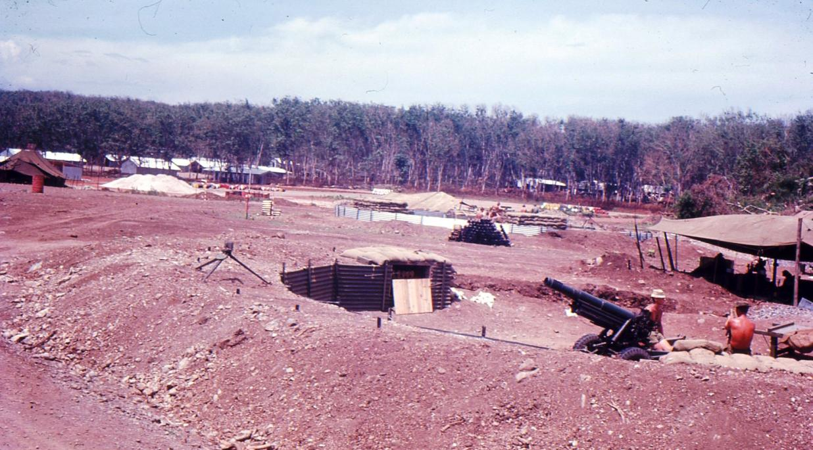
          <figcaption><span class="fignum">Figure 31.</span>1 ATF Artillery on the southern perimeter.</figcaption>
        </figure>
      
    
      
        <p>Coulthard-Clark in his Corps history makes some mention of the operation: <em>In November 1966 the</em> <em>Detachment undertook the task of connecting the five Army of the Republic of Vietnam batteries in</em> <em>the Province to theatre grid, a task that took until April 1967 to complete. Because its own</em> <em>manpower was limited, the Detachment was obliged to obtain cooperative assistance for this sort</em> <em>of work from an Australian artillery survey unit, the 131st Divisional Locating Battery, with which it</em> <em>forged a close and harmonious relationship.</em></p>
      
    
      
        <p>As well as the six members of 131 Divisional Locating Battery, who became something of a permanent attachment to our unit, actually taking up residence in our lines, we had three members of the US Battery “A”, 2/35 Artillery Battalion, the battery of 155mm self propelled guns, on the western side of Route 2.46 My Australian Army Journal article of September 1968 describes the operation in the following terms: <em>In November 1966 at the request of HQ 2nd Field Force Vietnam, Detachment 1</em> <em>Topographical Survey Troop undertook the task of connecting all the Army of the Republic of</em> <em>Vietnam (ARVN) batteries in Phuoc Tuy Province to theatre grid and providing theatre</em> *orientation<sup class="fn-ref">40</sup>. There were five such batteries of light or medium artillery and, to say the least, their<em> </em>survey control was doubtful. The project provided an excellent opportunity for the Detachment to<em> </em>extend the existing scheme of survey into areas east, west and north of the task force base area,<em> </em>thus providing a greater number of survey control points in relatively secure, or easily secured<em> </em>areas from which it was hoped connections might more easily be made to fire support bases<em> </em>established in direct support of operations. The survey operation codenamed ‘Trisider’<em> </em>commenced in November 1966 and was finally completed in April 1967. The operation was<em> </em>sporadic in nature being largely dependent on the availability of security provided by either of the<em> </em>battalions, APC Squadron or even the Regional/Popular Force units of the ARVN. In some cases it<em> </em>was expedient to take advantage of an operation in order to carry out a connection to a point in a<em> </em>normally insecure area. During Operation Trisider Detachment 1 Topographical Survey Troop<em> </em>established 25 additional survey stations and connected to five ARVN batteries. In doing this the<em> </em>Detachment measured 200 miles (330 kilometres) of Tellurometer traverse.*</p>
      
    
      
        <aside class="footnote" role="note">
          <span class="fn-num">40</span>ATF Artillery on the southern perimeter.
        </aside>
      
    
      
        <p>While these statistics might seem unremarkable in survey terms working on the Australian mainland in a normal mapping season, in a counter insurgent theatre of war where some level of infantry protection was needed every time a survey party stepped outside the base area, where a lonely surveyor standing behind a theodolite on a grassy knoll made a tempting target for a Viet Cong sniper, it wasn’t bad.</p>
      
    
      
        <h3 id="the-artillery-problem">The Artillery problem</h3>
      
    
      
        <p>It is opportune at this point of the narrative to discuss what I have chosen to dub “the artillery problem”. <em>Coulthard Clark comments: Establishing theatre grid was a comparatively simple task in</em> <em>the Task Force base area. However, carrying survey into some of the more remote locations</em> <em>selected as sites for a fire support base proved a different proposition entirely, due mainly to the</em> <em>nature of the terrain, the short periods of occupation of most fire support bases, and the need for</em> <em>survey parties to be adequately protected while working</em>. I take this proposition further in my 1968 Army Journal article. I can do no better than present those paragraphs here……….. <em>It should perhaps be explained that the 'Artillery Problem', as defined by the extension of theatre</em> <em>grid and orientation to outlying fire support bases, was being given a good deal of attention by both</em> <em>US survey units and RA Svy in South Vietnam. Two approaches were being made to overcome</em> <em>the problem. One was based on the use of the geometrical properties of vertical aerial</em> <em>photography and the principles of aerotriangulation and the other using variations of conventional</em> <em>field survey techniques. The former has the advantage of providing a large number of photo-</em> <em>identifiable points, fully co-ordinated, which could then be used either as battery centre (or to</em><sup class="fn-ref">4142</sup></p>
      
    
      
        <aside class="footnote" role="note">
          <span class="fn-num">46</span>Personnel attached to the Detachment from 131 Divisional Locating Battery were Lance Bombardier Sellwood, Gunners Whittle, Moreau, Lock, Earwicker and Killworth. From A Battery 2/35 Artillery Battalion – Staff Sergeant Glascow, PFC Soch and PFC Renzo.
        </aside>
      
    
      
        <aside class="footnote" role="note">
          <span class="fn-num">46</span>„Orientation‟ is the term Artillery use for what we in Survey would call „azimuth‟ or more generally, „bearing‟ – the angle measured from North (true or grid) clockwise to the distant object – for Artillery, the target.
        </aside>
      
    
      
        <div class="narrative">
          
          
          <p>provide the means of a short measured connection to battery centre) or as gun calibration or restitution points.</p>
          
          <p>The Americans were extending theatre grid into the flat areas of the (Mekong River) delta south from Saigon using conventional survey methods from observation towers erected in relatively secure areas e.g., ARVN compounds and outposts. Field methods such as the use of simultaneous theodolite observations from known and unknown points to an air station, in the form of a hovering helicopter or an anchored meteorological balloon, to obtain co-ordinated values at the unknown station were being tested by Det 1 Topo Svy Tp at Nui Dat, with some promise of success.</p>
          
          <p>An American artillery survey officer suggested 'that the approach to artillery survey in Vietnam was little better than archaic. A situation had developed which would not have been tolerated in Korea, World War Il, or in World War I. We had allowed the problems of survey in Vietnam (due to Viet Cong insurgency) to overwhelm us and were complacently accepting the premise that survey is impractical because of the nature of the war'. Perhaps overstated, it is, nevertheless, not too far from the truth when applied to the period May 1966 - May 1967.</p>
          
        </div>
      
    
      
        <h3 id="another-us-mapping-company-in-theatre-66-engineer-company-topo-corps-at-long">Another US mapping company in theatre - 66 Engineer Company (Topo)(Corps) at Long</h3>
      
    
      
        <h3 id="binh">Binh</h3>
      
    
      
        <p>The long awaited deployment of a second US mapping company into III Corps had taken place in September but not becoming fully operational until late October. This was the 66th Engineer Company (Topo)(Corps) commanded by Captain John R. Anthis Jnr, located at Long Binh, the huge US military complex some 50 kilometres north of Saigon. Long Binh was adjacent to and contiguous with Bien Hoa, where the Australian 1st Battalion Royal Australian Regiment had been deployed under command of the US 173rd Airborne Brigade on “airfield protection” in<sup class="fn-ref">41</sup> 1965/66.</p>
      
    
      
        <aside class="footnote" role="note">
          <span class="fn-num">41</span>Company was equipped similar to 569 Company at Nha Trang but where the latter remained trailer/truck mounted, 66 Company had lifted their production pods from the prime movers and trailers and sat them on the ground. They also had well constructed air conditioned hutted accommodation for the Company‟s administration functions and of course living accommodation, the latter part of the Long Binh troop accommodation. From the time 66 Company became operational in late November all printing work undertaken by the US Army for the Troop was at Long Binh if only because of ease of access – a direct half hour flight from Nui Dat by Iroquois or (after the Nui Dat airstrip was constructed in 1967) by fixed wing light aircraft. Some of our printing work was still carried out by Captain Ngoc‟s ARVN Topographic Company if only to maintain our relationship with that unit. Arguably they did a better job also. I developed a close friendship with John Anthis and several of his officers and warrant officers as did quite a few of our Troop members on their fairly frequent trips across to Long Binh48 but it wasn‟t until 17 November that I was able to visit 66 Company.49 66 Company was co-located with a terrain intelligence unit and much of the Company‟s print work originated from terrain intelligence. I think there was a certain amount of personnel integration between the two units. I was quite impressed by the sort of work the terrain intelligence unit was engaged in. It seemed to relate more to post war reconstruction than specific military operations. It was very scientific and at least two of its officers were PhD qualified – a rarity in the Australian Army at that time.
        </aside>
      
    
      
        <p>Both units were under the control of the Chief, Mapping and Intelligence Division, USARV Engineer Section, Lieutenant Colonel Hritzko, (soon after promoted to Colonel) a bluff genial person who I came to like very much. I was to meet him in person some weeks later. Hritzko, so his staff informed me, was a “Russian American” and he certainly had that appearance reminding me of that old British screen actor, Jack Hawkins.  He seemed very impressed with the Troop’s work and the level at which it operated – brigade level as against their own corps level. As far as I could see, very little of the mapping work undertaken by 66 Company in whatever form related directly to operations even at divisional level and certainly not below division.</p>
      
    
      
        <p>66 Company, as no doubt did 569 Company at Nha Trang, operated under a strict authorisation which stated that <em>‘printing plants operated for mapping purposes are authorised to produce only</em> <em>maps, charts and related materials’</em>. The authorisation also set forth the specific topographic functions that are to be performed by the unit. I was a little jealous of that edict – it would have been nice to have that sort of backing when those extraneous tasks that bear no relationship to survey or mapping or even military operations or intelligence land on one’s table but which are seen to be of great urgency or importance by some senior officer in the superior headquarters. Nevertheless, I had to confess that the approval process required for work to be undertaken by the US mapping companies was multi-layered and I suspect time consuming. Be assured, US red tape is as tangled as our own; perhaps even more so.</p>
      
    
      
        <p>Lieutenant Colonel Benton was to return to the US in December having completed his twelve- month tour of duty. He was a family man and like all of us looked forward to going home. His support of the Troop and me personally since our arrival in theatre had been outstanding. Colonel Benton was a thoroughly likeable and decent officer for whom I had the greatest respect. I wrote him a personal letter of appreciation thanking him for the support he had given without which the Troop would have had great difficulty in fulfilling its role. It must be said that that same level of support continued with his successor Lieutenant Colonel Hritzko and 66 Engineer Company (Topo)(Corps).</p>
      
    
      
        <p>With 66 Company well established and able to undertake our longer print runs, visits to Long Binh became something of a routine as the months passed. My own visits were infrequent but sufficient to establish an effective working friendship.</p>
      
    
      
        <p>I sometimes observed the working routine of US units. General Westmoreland on assuming command in 1965 and having observed the somewhat lacksidaisical attitude of many US headquarters and base units declared that all US staff were to remain at their desk for twelve hours each day with weekends half staffed. Clearly for many it was an unnecessary drudge and more times than not one would see soldiers and officers of all ranks with their feet up on their desk, coffee in one hand and the Stars and Stripes (Army) newspaper in the other. Alcohol was available on a strictly limited basis – but there were always exceptions. At least for the first few months 66 Company had little enough to do. Security concerns limited their ground survey acivity which in any case was confined to actual mapping survey, not artillery, and they did not provide direct operaional support to combat units at any level.</p>
      
    
      
        <p>At the general shutdown of the day; 2000h was normal allowing two hours after the evening meal, it was “party time”. Well, not quite perhaps but I do recall one escapade during a visit some months later. Apparently John Anthis who was a bit of a larrikin at heart knew of a Vietnamese restaurant in a village on the northern side of the base. So it was mooted that we should visit that restaurant and try some genuine Vietnamese cuisine unadulterated by the French influence. The problem was that it was after curfew time and the gates would be all closed, but John knew a way. We piled into a Jeep with John driving. We took a circuitous route between numerous buildings and finally finished up at a back entrance to the base that seemed to be left open and unmanned. It was clearly little used and the track on the other side was just that, a dirt track. Without slowing we were through the gate and onto the track and after a kilometre or two into a well established village adjacent to a stream. The restaurant fronted the stream. It was without doubt a truly Vietnamese restaurant frequented by local Vietnamese people. We were seated on stools around a very low level round table with a spirit stove in the centre. John knew what to order and did so. A huge bowl of Vietnamese watercress was brought to the table – the watercress that grows abundantly at the water’s edge of rice paddies. It has a not unpleasant slightly heady smell when crushed that will remind me forever of Vietnam. A variety of hot spicey sauces were placed on the table including the famous nuc-marn sauce made from rotting fish. I cannot recall what was served other than rice but it included various portions of meat and fish which we cooked over the spirit stove hot plate and ate with rice and watercress. After an hour or so we paid the bill in MPC (gratefully received) and departed making our way back without incident. I think it was the only truly Vietnamese meal I ate and did I enjoy it? Well – it was an experience and I did not have the stomach upset I was warned I would have.</p>
      
    
      
        <h3 id="programmed-work-november">Programmed work - November</h3>
      
    
      
        <p>November saw no let-up in the flow of mapping work through the Troop. At the same time we were building our own furniture from supplied American Oregon lumber – drafting tables, a plan filing cabinet, map storage racks. Some of the mapping tasks underway at that time were:</p>
      
    
      
        <p> Xa Binh Ba Special – 1:10,000 printed by the US 66 Engineer Company (Topo)(Corps) at Long Binh, (completed),  Hoa Long Special – 1:5000 revision and re-print printed by 66 Engineer Company,  Long Son Island Special 1:10,000 in two sheets printed by 569 Engineer Company at Nha Trang (completed)  Phu My photoplot – plotted on the Zeiss Stereotopes. (completed)  Revision of three 1:25,000 maps for overprinting on the screen press, (completed)  Combat Operations After Action Report annex – Operation Bundaberg overprinted on Hoa Long Special, (completed)  TAOR overprints – a two colour overprint showing both the TAOR and the AO was screen printed (200 copies) and then superceded before issue. A second single colour overprint was prepared and completed on 1 December. <em>(Why couldn’t they get it right the first time?)</em> (completed)  Viet Cong tracks overprint on two 1:50,000 maps. (completed)  Three intelligence overlays. (completed)  Binh Gia 1:5,000 photoplot (continuing)  Landing zone plot (continuing)  1:25,000 revisions (continuing)  Viet Cong track plotting (continuing)  Long Phuoc 1:5,000 re-compilation (continuing)  I ATF Cantonment Survey update (continuing – 80% complete)  Operation Trisider – Nui Lon Hill (at Vung Tau) and Phu My ARVN compound and related photo identification point fixed according to plan.</p>
      
    
      
        <h3 id="technical-records">Technical records</h3>
      
    
      
        <p>With an increasing number of ground marked survey stations being established both within the Task Force base area and externally in the Province as well as those existing stations of French and US origin being occupied it was clearly time to get a technical records system in place. Sergeant Stan Campbell took on this task using our traditional Survey Corps Station Summary forms and a card index. To permit the dyeline copying of station summaries we screen printed the standard form on tracing paper. Trig diagrams on clear draughting film were also prepared and copies of all records sent to the US Mapping and Intelligence Division in Saigon as well as or own Survey Directorate in Canberra.</p>
      
    
      
        <figure id="figure-32">
          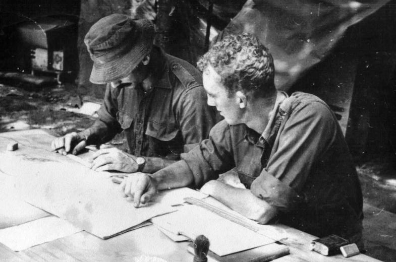
          <figcaption><span class="fignum">Figure 32.</span>All survey work results in computations. Corporals Ceruti and Firns working on Trisider computations</figcaption>
        </figure>
      
    
      
        <p>I recall some months later when units were coming and going as the Task Force changed over, being visited by a recently arrived enthusiastic young captain from the Artillery Regiment who apparently had been given a mission to “take over” and re-compile all survey records in accordance with artillery procedures. We had of course progressively forwarded to the Artillery Regiment coordinate values of all established survey points together with photo identifications and plotted positions on the map, but not station summaries, which would have been of little interest to Artillery. I showed him our records system, which by then was in fine fettle (Stan had done a good job on this) and offered him a copy of anything that was of interest, pointing out of course that his Regiment already held control station listings. I recall his remark that we had it all and there was nothing more that he could contribute. I think the wind had been taken from his sails and he retired back to the Regiment not to return, at least in my remaining time at Nui Dat. In no way were we protective or restrictive in providing survey data to anyone who wanted it. All were welcome to our records and could take a copy of anything they wanted – but not take over the whole caboodle.</p>
      
    
      
        <h3 id="public-relations">Public relations</h3>
      
    
      
        <p>I had a small skirmish with the Task Force public relations officer, Major Ross-Smith. I didn’t particularly like the man. In my mind he was too smart by half and I had some reason to doubt his honesty. He would say anything to achieve his purpose and he pestered me with requests for small tasks sometimes avoiding me and going direct to Sergeant King or Sapper Smith especially if I was temporally absent from the unit. If I declined he would take it up with Task Force headquarters and I might not hear of it again or I might get a call on the field phone asking can I not keep him happy. I suspect he was as popular with the headquarters officers as he was with me.</p>
      
    
      
        <p>We were often besieged with press representatives – war correspondents they liked to be thought of. They mostly hung around the officers” mess waiting for something to happen. Smith (should I say Ross-Smith – his name was hyphenated) sometimes got selected “waries” onto an infantry patrol and I suspect that didn’t go over particularly well with the Battalions. I should point out that O.D. Jackson had a weakness for correspondents and seemed to tolerate them in the Mess. Of course they would collar him and he would give them his time and chat with them. Perhaps he was right. Good PR at home was important to the Australian Forces in Vietnam and in any case often they were interesting company.</p>
      
    
      
        <p>On the occasion I am recalling here I had got talking to a youngish free-lance correspondent in the mess one evening of the name Stewart-Fox. He was English and I was interested to learn just how he came to be there and a little of the life of a “war correspondent”. He told me he had spent a few years of his younger life in Australia, at Charters Towers in Queensland. It occurred to me that I had known a “Stewart-Fox” in Queensland when I was engaged in a survey operation at Charters Towers in 1962 – the Reverend Stewart-Fox, a Church of England padre. In fact I had had dinner with him one night at our survey base camp at Macrossan. Stewart-Fox confessed that the Reverend Stewart-Fox was his father. We had a pleasant hour together during which I invited him to visit the Troop the following morning. I noticed Ross-Smith eyeing me off at one point – perhaps I was treading on his preserve. Stewart-Fox duly visited about mid morning; we might have had coffee and I showed him a little of what our role was. He departed and that was that.  I wasn’t really expecting a front page spread in a national newspaper and didn’t get one either. Ross-Smith turned up an hour later and lectured me on inviting correspondents to the Troop or anywhere else without his knowledge or presence. Mr Stewart-Fox in his estimation was “scum” and a known Viet Cong sympathiser. I could only ask if that was the case what the hell was he doing at Nui Dat? I don’t recall a reply before he stalked off threatening to report the whole incident to the Task Force Commander. Whether he did or not I have no idea. I never heard anything more about it. Stewart- Fox was around for a few more days but we had no further conversations, simply acknowledging each other when our paths crossed.</p>
      
    
      
        <p>Apparently we had a bit of coverage in the Australian press once of twice in the form of a background story. One such I was told about was in a women’s magazine of all things, <em>‘New Idea’</em> I think. I never saw it. There was a photograph of me half way up a tree peering out through a pair of binoculars so I was told. I think it may have been on a hill feature “Nui Dat 3” a little north of the ARVN compound at Xuyen Moc where we were proposing to measure a line back to our own Nui Dat in order to fix the AAVN gun battery in the Xuyen Moc compound. A female photo correspondent – by whose arrangement I have no idea, had accompanied us. I think we were accompanied also by a section at least of Australian infantry but there had been a clearing operation through the Xuyen Moc area a day or two before.</p>
      
    
      
        <h3 id="sas-operations">SAS operations</h3>
      
    
      
        <p>Operations involving 3 SAS Squadron were generally kept under close wraps and one usually learnt of them after the event. Even then there was never a formal after action report, or at least the Troop was never asked to prepare map annexes. As time passed and perhaps as the SAS Squadron became more aware of our capabilities we gave them a hand in tidying up some of their own sketch maps, relating them to the standard map coverage, the Pictomaps more than likely. Track information was always of value and anything they provided we considered highly reliable. I made a silly comment to one of their young officers in the mess one evening that I saw common ground between SAS and Survey, thinking of map use and navigation. He was very disparaging of my comment. We in Survey had no idea of what they were about. I took that on the chin – I suppose he was right.</p>
      
    
      
        <p>I was a little surprised to get a direct request from the SAS Squadron in early November for nautical chart coverage of the Song Cai Mer (river) that snaked its way through the vast mangrove area of the coast on the western side of Phuoc Tuy surrounding Long Son Island. Interesting! Our 1:10,000 map of Long Son Island in two sheets might have a purpose after all. We carried no nautical charts and neither were they available through the 547th Engineer Platoon (Map Depot). I referred the request back to GSO 2 Int and the charts were obtained by Intelligence in Saigon. I think this was the only time I had any pre-knowledge of an SAS operation.</p>
      
    
      
        <h3 id="to-saigon-again">To Saigon again</h3>
      
    
      
        <p>On 11 November I went to Saigon again, this time with Sergeant Campbell. I had been invited by Lieutenant Colonel Benton to meet his successor, Lieutenant Colonel Hritzko. Sergeant Campbell had a few survey control issues to raise and resolve at M &amp; I Division and it was also an opportunity for him to visit HQ AFV and experience something of a US BEQ and Saigon.</p>
      
    
      
        <h3 id="possum-flight">‘Possum’ Flight</h3>
      
    
      
        <p>On 10 November Boots Campbell drove Stan and me to Vung Tau where we stayed overnight with 161 Recce Flight (Possum Flight<sup class="fn-ref">26</sup>) which was to take both of us to Saigon the following morning in a Cessna 182. I recall during that evening being fascinated by the “pilot talk” around the table and thinking they are certainly focussed on what they do. The Flight had a number of Bell 47 “Sioux” helicopters with the plastic “bubble” cockpit and the fixed wing Cessnas, which, apart from being a general passenger transport, had a FAC (Forward Air Controller) role in directing artillery fire to the target. In that role they were often referred to by the US nickname of “bird-dog”. Mentioned previously was the situation where patrols needed to call in a Possum Flight to identify their location from the air having released a smoke canister. I think I rated Possum Flight as having the greatest “esprit de corps” of any army unit I experienced.</p>
      
    
      
        <h3 id="meeting-lieutenant-colonel-hritzko">Meeting Lieutenant Colonel Hritzko</h3>
      
    
      
        <p>On 11 November Possum Flight took us to Tan Son Nhut and short-circuiting the system somewhat we proceeded direct to M &amp; I Division and met the two Lieutenant Colonels, Benton and Hritzko. After the inevitable coffee (brewed from a constantly bubbling percolator – Americans consume a huge amount of coffee in a day) Stan went off to check out his data interests while I briefed Colonel Hritzko on the role of the Troop and more broadly and inevitably, all that the Survey Corps did in Australia and its dependencies. Hritzko had not had any direct experience with the Corps or the Australian Army although he was aware of some of the early joint mapping operations we had been involved in; the lunar occultation program and Shoran/Hiran intercontinental surveys. I couldn’t help being impressed by the visible physical strength of this big man, his absolute sincerity and quiet charm.  The next time I was to meet Hritzko he had been promoted to Colonel; in US terminology he was a “bird colonel” with the rank badge of the American eagle and I will refer to him as such in the remainder of this narrative.</p>
      
    
      
        <h3 id="air-vietnam">Air Vietnam</h3>
      
    
      
        <p>After lunch Stan and I departed for the Free World Building to check in to HQ AFV and obtain our overnight BOQ/BEQ accommodation. I left Stan to it at that point and I think he returned to Nui Dat the following day. There was a second purpose to the trip to Saigon; a misdirected re-supply order of photographic “auto positive” film for the screen printing process. This particular material was guaranteed to be effective in tropical locations of high humidity. Needless to say it was very expensive. I had been anticipating its arrival by military air as a priority loading but instead received advice that it was being sent civil air – Cathay Pacific – and could be collected from the Saigon office of Air Vietnam.</p>
      
    
      
        <p>I made my way to the city office of Air Vietnam which I seem to recall was somewhere in the port buildings on the Saigon River – a somewhat turgid stream. I presented the documentation I held and then started a long wait. I made frequent inquiries why it was taking so long to process my documents and give me the film – two large rolls I think. At one point I was given a form to fill out. It was mostly in Vietnamese with very little English translation and in any case seemed totally irrelevant to the issue of simply handing over the film. Eventually I left and reported back to HQ AFV. I was still holding the relevant documents and was fairly convinced that the film was actually at Air Vietnam but for some reason the rather sleazy looking officials there would not release it. Even at our own HQ AFV I could get little help – they simply could not understand what I was on about and made the very unhelpful comment “they probably assumed it was pornographic film. The Australian Army does not work through Air Vietnam or even Cathay Pacific”. In some desperation I phoned the ever-helpful US M &amp; I Division and spoke to one of my friendly contacts Captain Tim Halley who completely understood the situation. He agreed to accompany me to Air Vietnam the following day.</p>
      
    
      
        <h3 id="saigon-business">Saigon business</h3>
      
    
      
        <p>Tim picked me up at my BOQ and together we went back to Air Vietnam and fronted the desk official. Tim did the talking in fluent Vietnamese (or was it French?) and within minutes the two rolls of auto positive film were produced. I observed in the process a transaction of piastre took place. That was the way business was carried out in Saigon. We Aussies were just too too naïve! I asked Tim how I could recompense him because the “p” seemed to flow from his own pocket. Tim simply smiled and said don’t worry about it. The “p” was from another source. Tim took me back to his own place of lodging, a sort of semi-detached dwelling in an outer area of Saigon – suburban Saigon I guess you would call it – and I met his Vietnamese “wife”. I was a little surprised. He told me that it was his second tour and he had been in Vietnam even before that. Tim was mildly corpulent and something of a mystery man – CIA perhaps?</p>
      
    
      
        <h3 id="the-ngocs-at-home">The Ngocs at home</h3>
      
    
      
        <p>Captain Ngoc had some time before invited me to visit his home and family and on learning of my necessary trip to Saigon I had contacted Ngoc and suggested I might do that on the Saturday. Weekends seemed to be observed by the ARVN as rest days. Ngoc was delighted I had accepted his invitation and finding that I was not scheduled to return to Phuoc Tuy until the Sunday he insisted I stay overnight. Saturday morning one of his NCOs picked me up at the BOQ in one of his clean and polished Jeeps and took me to Ngoc’s home. His smiling wife met me with their three or four well-dressed children. Clearly this was an occasion and amongst these small and extremely hospitable people I felt a little awkward and embarrassed. Madame Ngoc had very little English. She was not a retiring person and joined in conversation with her husband interpreting. After losing their initial shyness the children were as energetic and noisy as any children anywhere. From time to time they would show me one of their precious possessions. The older two, maybe ten or eleven, if not fluent, could use English competently. I think my Aussie accent was novel to them and to Ngoc also. They must have thought the national dish for Australians was steak and for lunch they proudly produced a steak, one for me and a smaller one for Ngoc.</p>
      
    
      
        <p>Madame Ngoc and children ate elsewhere. Steak was a scarce commodity in Vietnam and I suspected Ngoc must have paid an outrageous price for it, probably on the black market. The steak was tough, difficult to cut let alone chew, but I did so and chewed my way through it assuring Ngoc that I was thoroughly enjoying it and it was the first piece of steak I had had since leaving Australia – and it probably was. Thankfully that night we had a Vietnamese meal – more Chinese than Vietnamese. Ngoc and his family lived quite well.</p>
      
    
      
        <h3 id="driving-in-saigon">Driving in Saigon</h3>
      
    
      
        <p>I think my November visit to Saigon was my first experience at driving myself in Saigon – right side of road with a right hand drive vehicle, a rather clumsy one at that – and Saigon traffic in the French tradition seemed to know no road rules. Even in the city the roads were potholed and in some sections barely passable. All of our Australian vehicles had red kangaroos stencilled on the doors on either side and of course the Landrover was very different in appearance to the US army equivalents. The Vietnamese police on intersection point duty were tolerant and seemed to give me safe passage across the intersection as soon as they spotted my Landrover. Apart from the regular Vietnamese police carrying out normal police functions there was a para-military police known as Ky’s “White Mice” dressed in a rather fancy white uniform. They had power of arrest and were a law to themselves and I had been warned to give them a wide berth. On another occasion on visiting Captain Ngoc at his ARVN Topographic Company, Ngoc gave me one of his own vehicles to drive – for what purpose I do not recall. He had warned me to beware of the white mice. Perhaps he thought I would be less conspicuous in an ARVN vehicle – Jeep I think.</p>
      
    
      
        <h3 id="equipment-maintenance">Equipment maintenance</h3>
      
    
      
        <p>Electronic equipment does not fare well in tropical areas and although we had been having something of a dream run with our MRA<sup class="fn-ref">2</sup> Tellurometers, by November they were becoming less than reliable. There was a general deterioration of components which, fortunately, despite the relative uniqueness (then) of the equipment and its measuring principle, the components in its assembly were very ordinary “off the shelf” items. My November report comments – “<em>fortunately</em> <em>excellent repair facilities exist at the ALSG (Vung Tau) including a Hewlett-Packard electronic</em> <em>frequency counter. All unit Tellurometer equipments are undergoing IF stage alignment and crystal</em> <em>adjustment’.</em></p>
      
    
      
        <h3 id="recreation">Recreation</h3>
      
    
      
        <p>“All work and no play makes Jack a dull boy” so the old saying goes and fortunately we had brought to Nui Dat a bit of basic recreational sporting equipment – a couple of baseball bats and balls, a football and a volley ball and net. It was the latter that got most use at Nui Dat. As soon as we had settled in to our new location we constructed a volley ball court on the southern side of the tropical work hut – not a difficult undertaking. I am not sure how the lines were marked on the ground; perhaps by white tape spiked into the fairly hard red soil. By November the ground had dried out and the mud was rapidly turning into dust. At 1700h most afternoons volley ball would be underway, five a side, for forty minutes of so. Dennis Duquemin was a star player and a terror to players on both sides of the net. Played in “boots GP” and shirtless the players would soon be as red as the ground on which they were playing but fortunately our recently completed shower block and hot water “choofer” provided for the removal of the red camouflage from grimy bodies. Whether some sort of inter-unit competition developed I am not sure but on at least one occasion our fellows were playing one of the other headquarters units – Signals or D&amp;E Platoon perhaps. I can’t recall the outcome.</p>
      
    
      
        <figure id="figure-33">
          
          <figcaption><span class="fignum">Figure 33.</span>Our Volley Ball court</figcaption>
        </figure>
      
    
      
        <h3 id="trisider-preparation">Trisider preparation</h3>
      
    
      
        <p>Considerable preparation and unit liaison was necessary before Trisider could get underway. I had my Operation Order 2/66 (at Annex I to this account) prepared by 20 November and issued on the 21st but before that I had to seek the approval and support of a number of people. On 15 November I had gone through my outline plan with the GSO<sup class="fn-ref">2</sup> Operations (Major Hannigan) and he gave it his broad support, contingent on my operation order addressing all issues. The operation order was to conform to strict “staff duties”51 format and I assured him that that is what I intended. On that same day Sergeant Campbell and I visited our established station Nui Dat (AASV 001) to assess whether we might connect from AASV 001 to the northern terminal of the Baria base line<sup class="fn-ref">4</sup>. Such a connection would greatly strengthen our somewhat elongated triangulated geometry used to fix Nui Dat from the two hill stations at Vung Tau.</p>
      
    
      
        <p>On the 16th I called on  5RAR  to arrange protection for field parties that were to carry out connections to the New Zealand 161 Artillery Battery where two positions were required, referred to by us as position A and position B. 161 Battery was located on the south western corner of the outer perimeter adjacent to provincial Route 2 (main road Vung Tau to Saigon). I am not clear why there should have been a problem with making that connection but my diary has the rather terse note “abortive morning at 161 Battery – nil achieved”. I suspect in obtaining a measurement from Nui Dat we probably needed to establish an initial position some distance outside the wire to the south and that might have been the reason for protection from 5RAR. The connection was achieved the following day.</p>
      
    
      
        <p>At about that time I visited also the US “A” Battery 2/35th Artillery Battalion. The self propelled 155mm guns were huge beasts. I think A Battery had about five of these, located on the western side of Route 2, in effect the south-western corner of the perimeter. 101 Battery of 1 Field Regiment RAA (105 mm Howitzers) were to their immediate north. The US Commanding Officer, an African-American, couldn’t have been more helpful and enthusiastic for Trisider. He seemed to appreciate the need for theatre grid on which to lay his guns, which had an incredible range – 20 kilometres or more – and could coordinate a fire plan with US batteries well to our north. The US Commanding Officer offered me three of his men to supplement our small group, a staff sergeant, who became Stan Campbell’s nominal second in charge and two PFCs. I am not sure that we saw all that much of our US attachments.</p>
      
    
      
        <p>On 21 November I conducted an “O” Group with all Troop personnel after which Sergeant Campbell and his party departed for Vung Tau to commence “Trisider”. It was under way!</p>
      
    
      
        <h3 id="jackson-takes-an-interest">Jackson takes an interest</h3>
      
    
      
        <p>As November drew to a close Commander 1st Australian Task Force seemed to spark an interest in his 1st Topographical Survey Troop (detachment). Certainly Brigadier Jackson had never been negative to our needs and had given the Troop his unquestioned support to my occasional requests and submissions but this had always been through his staff. Major Rowe assured me at one time that nothing happened within the Task Force without Jackson’s knowledge and direction – despite his seeming remoteness and almost disinterest. John Rowe assured me he was a “hands on” commander. Over the time I had known him we had had no more than a few brief exchanges although I was often in his company within a group, so I was a little surprised to be asked to give a five minute brief on the silk screen at the Commander’s conference on 22nd November. I had an hour’s notice of the request and hastily prepared some notes before sauntering off down Ingleburn Avenue to the headquarters. These occasional short addresses always took place at the end of the half hour conference and usually related to some aspect of weaponry or broad theatre deployment. Not infrequently a visiting US officer would give the short address. However, my turn came and I gave what must have been a pretty dry performance starting with a brief history of screen printing – the Australian army has adopted a 2,000 year old technology. Perhaps I went light on the problems we had been having with the equipment; there seemed to be little point in labouring them. Then to my surprise Brigadier Jackson said he would like to visit the Troop the following afternoon. He did so with his aide, Lieutenant David Harris carrying the inevitable radio that crackled and hissed in the background – where David remained also – arriving at 1430h.</p>
      
    
      
        <p>I had expected that the visit might last ten minutes but he seemed in no hurry. Of course we had had a bit of a tidy-up that morning; removed the “Playboy” centrefolds that were beginning to appear pinned around the work areas and placed a few of our products where the Brigadier could see them – the screen printer was set up with an overprint job and we may even have raked up a few of the ever falling rubber tree leaves. The accommodation lines were tidied also although I doubted whether the Commander’s interest would extend that far. Our numbers were a little depleted as a result of the “Trisider” group having departed for Vung Tau two days before but there were sufficient personnel present to generate some on-going activity in the draughting work area, map store and survey records. Jackson was affable and strolled around where I took him, asked questions and showed a good deal of understanding of what we were about. I had forewarned our members to be prepared to talk about what they were doing and I left most of the explanations to them. It might be said that everyone rose to the occasion and I was well satisfied with the way the visit went. Jackson with David Harris in tow left at 1545h and not before telling me that I could expect a visit from the Chief of General Staff (CGS) Lieutenant General Wilton on  2 December.53</p>
      
    
      
        <h3 id="phu-my">Phu My</h3>
      
    
      
        <p>Phu My remains locked into my memory to this day as a result of an experience that I hesitate to mention. It was an experience that I chose not to record in my diary, perhaps thinking that it would fade from my memory – but it didn’t. It happened in late November but I have no record of the exact date.</p>
      
    
      
        <p>The ARVN artillery battery at Phu My was one of those we intended to fix on Operation Trisider. We had also been preparing a village map of Phu My off and on throughout November. Phu My village was located about 20 kilometres north west of Nui Dat on highway QL 15, the main road between Vung Tau and Saigon, more or less in the north-western corner of the Task Force area of Responsibility. It comprised a fairly dense village mostly just east of the highway, a scatter on the western side, a military camp on its outskirts to the south and a fortified ARVN battery three kilometres further north along the highway. The battery was constructed in the French style, surrounded by a high bund with a watch tower, maybe ten metres in height on the northern side. It was the latter that was to be coordinated in Trisider but inspection showed that it was a somewhat rickety structure, not to be trusted. The south eastern corner of the surrounding bund was finally chosen as the site of AASV 007.</p>
      
    
      
        <p>Warrant Officer Rollston and I had carried out a helicopter reconnaissance of Phu My village on the morning of 24th November, the interest on that day being the planned Phu My map. We had received new 1: 25,000 photography a few days before and there were a number of structures just west of the highway opposite the village that we couldn’t clearly identify even on the Stereotope. There had been SAS reports of disused charcoal kilns being used for Viet Cong ammunition storage within the province; I am not sure whether these (as they turned out to be) were the ones<sup class="fn-ref">42</sup></p>
      
    
      
        <aside class="footnote" role="note">
          <span class="fn-num">42</span>A few years later at the School of Military Survey (Bonegilla) Jackson, then commander of the 4th Military District (Adelaide) visited the School for what reason I cannot recall. We met in the Mess and he greeted me most warmly by first name. I was a little astonished but quite delighted. Was I just a familiar face or did he genuinely regard me from our association in Vietnam?
        </aside>
      
    
      
        <p>mentioned in the SAS report. I don’t recall any untoward incidents occurring on that recce and we returned to Nui Dat at 1200h.</p>
      
    
      
        <p>Although the Phu My connection from the hill station Nui Lon at Vung Tau was to have been a little later in Trisider it became expedient to make the connection while the field party was at Vung Tau so I decided to make a quick trip to the Phu My battery to liaise with the ARVN battery commander. Through the US adviser net he had been forewarned of my visit and I had half expected that there would be a US adviser at the battery when I arrived. This was not the case. I arranged a Possum flight to take me over to the Phu My battery. In the little Bell Sioux helicopter we skimmed around the northern side of the Nui Dinh and Nui Thi Vai hills and finally put down on the eastern side of the battery compound adjacent to the road. The compound boasted a helipad but on our approach it appeared cluttered with vehicles and equipment of some kind. The Possum pilot remained with his chopper. It was fairly late in the afternoon when I approached the gate on the eastern side of the compound. There were the usual number of ARVN soldiers lounging around at the gate and I entered without obstruction. Then I witnessed what has troubled me in the years since. Strung up to a post just to the right of the path from the gate to the battery commander’s office under the watch tower on the northern side of the quite small compound was a person – he looked like an ARVN soldier but it was hard to tell. He was roped in position, the rope under his armpits supporting his slumped body leaving him in an almost crucifix position with his arms to his elbows horizontal. He had obviously been there baking in the hot sun all of that day, maybe longer. Was he alive or dead? – I have no idea. Was this some sort of brutal punishment? Apparently so. The ARVN soldiers seemed oblivious to his condition – they lounged around smoking, talking, listening to their tinny tranny radios; American music on some Saigon based Vietnamese station.</p>
      
    
      
        <p>Within the compound there were two 105mm guns of old design well and truly fixed into the ground mounted on concrete slabs, or appeared to be. I presume they were occasionally fired. I walked quickly to the battery commander’s office. He was a captain, well uniformed and groomed. He had reasonable American English. He seemed bored; uncommunicative and not interested in what I had to say. Perhaps he took it in. Together we inspected the guns and I climbed onto the surrounding bund. Clearly we had intervisibility due south to Nui Lon although the line would skim the western side of Long Son Island. We had planned also to measure a line and fix a photo point in Phu My village to the south from the watch tower and this was clearly possible even from the lower position on the bund. I found it hard to avoid looking at the strung up soldier – he just seemed to be ignored by all including the commander. I wondered if it was some sort of apparition that only I could see. The well uniformed and groomed ARVN captain made no comment. I thanked him and said my survey group would arrive in a day or two. He nodded and I left.</p>
      
    
      
        <p>I said nothing to the Sioux pilot. He was anxious to leave – helicopter pilots don’t like being on the ground in unprotected areas. In half an hour we were back on Kangaroo pad at Nui Dat and Possum departed for Vung Tau. I wondered if I should make a formal report of the incident and mentioned it to one of my cohorts in the mess that evening. He advised me to forget it – it was not our business. I may also have discussed it with Major Donahoe of the Civil Affairs unit but I don’t believe his advice was any different. It was no big deal – it was war and there were many greater unpleasantnesses around us than my minor episode. I wondered whether I should have raised it with the well-groomed ARVN captain. What good would it have done? – he was right outside my limited jurisdiction. So I left it and I leave it still. But I should have said something I think! Perhaps it was just the context of time and location – a dull grey afternoon; a remote ARVN outpost, the apparent unconcern of the ARVN officer and sloppy soldiers who saw no embarrassment at an Australian officer walking in to it. Many Australians in Vietnam at that time were subjected to far worse horrors and carry a far greater burden.</p>
      
    
      
        <h3 id="22-november-thanksgiving-day">22 November – Thanksgiving Day</h3>
      
    
      
        <p>Thanksgiving Day in the US is a day of celebration, feasting and prayer, at least so it is said. It celebrates the arrival of the Pilgrim Fathers in New England in whatever year it was. It is traditional to eat roast turkey with cranberry sauce on Thanksgiving Day and to this end a vast number of frozen turkeys were brought into the theatre and distributed. Even the Aussies at Vung Tau and Nui Dat were provided for but our Thanksgiving Dinner didn’t take place until Thursday the 24th November. Still deficient in fresh vegetables our cooks managed to serve it up with potatoes and canned peas. They were tough old birds, had been frozen for a long, long time I suspected but it was the first rich meal most of us had had in many months – although I and some others had done well enough in the Saigon BOQs and BEQs, and no doubt on R and R. Nevertheless the tough old turkeys had their impact on the tummies of many including my own which wasn’t all that strong at the best of times. Our six-seater latrine had few unoccupied thunderboxes throughout most of the following day.</p>
      
    
      
        <h3 id="a-friendship">A friendship</h3>
      
    
      
        <p>Over the months I had developed something of a friendship with Captain Ian Hutchinson, the GSO<sup class="fn-ref">6</sup> Operations on the Task Force headquarters. My work association with him was mainly in the production of map annexes for operation orders and after action reports which seemed to be his main occupation. Ian was something of a “staff duties” guru and in retrospect I probably learned a great deal from him. In early days, even going back to the pre-Vietnam period at Holsworthy I found him somewhat off-putting and certainly not easy to know but our association developed at Nui Dat into an uneasy friendship. Perhaps that means I never felt entirely at ease in his company but we had developed mutual respect. Ian’s company was not sort after by his headquarters colleagues who found his patrician attitudes insufferable. Some of this feeling went back to his RMC days. Ian’s father had been a highly decorated World War II officer and his class cohorts felt he wore his father’s mantle. His immediate superior, Major Dick Hannigan accepted Ian with a smiling acceptance and no doubt appreciated his staff duties skills and sheer diligence although once or twice I detected a degree of impatience. I remember an incident in the officer’s dining tent one evening, probably in about July or August when the duty steward (allocated from the D&amp;E Platoon) reached from behind to remove Ian’s plate and received a brief lecture on table etiquette – only when the knife and fork are placed together in the centre of the plate indicating that the diner has finished eating should the plate be removed. In the circumstances of our life at Nui Dat such refinements seemed a little incongruous.</p>
      
    
      
        <p>There was an occasion when Ian and I visited the TOC one evening after a few drinks in the mess. I cannot recall why we did this and I have no doubt that it was not an appropriate thing to do. Lieutenant David Harris was on duty and it was a quiet night, very little coming in. Clearly there was no love lost between David and Ian and clearly David resented Ian’s intrusion. Sharp words developed and David expressed the opinion that I, and by association my unit, was being 'used' by Ian for his own purpose. It was an uncalled for accusation and if there was an element of truth in the statement then it rubbed both ways. Even now I believe that my association with Captain Hutchinson was of equal or more benefit to the Troop as it may have been to Ian. David's accusation probably reflected his past association with and a lingering regard for the Survey Corps. We had had some history together in those years.</p>
      
    
      
        <p>I recall only one instance where I had sharp words with Ian over a matter (if you could call it anything) that was not work oriented and was none of his business. I had developed a slight friendship with a newly appointed “commander” of the Defence and Employment Platoon, a quite young 2nd Lieutenant. I cannot recall his name; however, he was clearly out of his depth or at least simply did not know quite where he stood or what he should be doing. I guess you could say he was lost. If I befriended him it was simply because I felt some sympathy for him in his inability to relate to other officers on the headquarters. I wondered a little how he was getting on with his soldiers and platoon NCOs and suspected he sought their company in preference to that of the headquarters officers. On a Friday evening I had lingered on in the mess with him having a couple of drinks more than I would normally have had and I noticed that Ian Hutchinson was casting an eye in our direction from time to time. A day or two later Ian in his somewhat patrician way suggested that I could better choose my company and seemed to imply that the young fellow had something dubious hanging over him. I responded very sharply and our relationship cooled for a while. The 2nd Lieutenant disappeared from the Mess to where I had no idea – perhaps transferred to one of the battalions which I knew to be his preference.</p>
      
    
      
        <p>Ian, who always seemed under pressure in his job, had often talked about having a twenty-four hour break in Vung Tau in my company. I suspect he envied the apparent freedom I had in tripping to Saigon and more distant parts – infrequent as these in fact were. However, eventually Major Hannigan gave him a 'leave pass' and we set out one afternoon for Vung Tau. Ian wished to stay clear of the ALSG and he had arranged accommodation for the night in some small BOQ establishment in central Vung Tau. I don’t think Ian took R&amp;R and if he did it was probably back to Australia when that option became available to visit his wife. I recall being a little uneasy about the venture, not being at all sure as to what Ian had in mind and how he intended to fill the hours. He was not the roistering type by any means but I could clearly see that he needed to unwind. Our accommodation was basic but adequate. We may have had a swim at the beach in the afternoon returning to our billet where we showered and changed into civilian clothes. A 'non-army' Vietnamese meal in a recommended restaurant followed with a few 'ba-mi-ba' beers and a lot of conversation, some personal but mostly military. I don't think Ian was ever able to completely switch off. We visited one or two bars (fairly innocuous despite the stories one hears) in the evening and we gravitated out to the Alaska Barge and Shipping Company mess which seemed to remain open all the time. By then we both had had more than enough to drink; both of us rather maudlin in our conversation. Somehow we got back to our billet in the off-beat BOQ, not surfacing until mid-morning the following day with giant sized hangovers. These were eased by a couple of hours on the beach with frequent dips in the not-so-cool South China Sea and not much conversation. We returned to Nui Dat in the late afternoon. That was the only time we ever socialised other than the odd beer in the mess before dinner.</p>
      
    
      
        <h2 id="december-1966">DECEMBER 1966</h2>
      
    
      
        <h3 id="constructions">Constructions</h3>
      
    
      
        <p>Within the Task Force headquarters area and throughout the entire Task Force base the start of December saw considerable building taking place. Apart from the “tropical huts” previously described large consignments of Lysaught huts had been brought into the theatre from Australia. I first saw some of these being erected in the ALSG some weeks before. The Lysaught hut (made in Australia by the Lysaught company – well known for its major product, galvanised corrugated iron) was a substantial fully galvanised steel building that I felt sure would comfortably withstand a force four cyclone. Its sides were louvred not in glass but in aluminium slats such that the building could be opened up to catch whatever breeze there might be – a rare enough event at Nui Dat. By late December all messes, officers, sergeants and soldiers, most of the work buildings, the briefing/conference room, Tactical Operations Centre (TOC) and Q stores were in Lysaught huts. The TOC was being heavily sandbagged – I think it had some sort of second “blast wall” built around it but that may have been much later. A “donga” was built for the Commander to be his office and sleeping accommodation – quite a pleasant bungalow building, fully insect screened with some comfortable seating (cane lounge I think) in the office part of the donga. There was a bit of muttering about this by some but in my mind it was entirely appropriate. At the end of December we were planning the construction of a second tropical hut; one with fully enclosed sides to accommodate our Q store, survey records, orderly room and screen printing. Lumber, corrugated iron, bags of cement, sand and aggregate had been delivered to our site and all we needed was a concrete mixer.</p>
      
    
      
        <h3 id="visit-by-the-cgs">Visit by the CGS</h3>
      
    
      
        <p>On the first day of December my immediate concern was the planned visit of the Chief of General Staff, Lieutenant General Sir John Wilton the following day. I may have had a signal from Director of Survey, Colonel Macdonald, warning of his likely visit (apart from the advance notice given me by Brigadier Jackson a few days before) because I was aware that Macdonald was anxious that the CGS would be sufficiently impressed by what he saw. Had I known the somewhat negative role Wilton had played in the raising and deployment of the Troop in 1965 I would have better understood Macdonald’s concern. In Coulthard-Clark’s words….<em>Colonel Macdonald (then Director</em> <em>of Survey) recalls having a tough fight on his hands during 1965 when he first proposed including</em> <em>the troop in any such deployment: 'My proposal was knocked back by General Wilton [the CGS],</em> <em>who said that perhaps a detachment half that size might be considered. But then he went up to</em> <em>Vietnam and when he came back he told me that he'd decided that we wouldn't have Survey there</em> <em>at all’.</em> So once again we brushed the unit up, had plenty of work on the tables, the screen printing press in full flight churning out an overprint and everything else looking fine and dicky. Throughout my army career I never treated visits by senior officers as anything but important and worthy of time and attention. I was to have many such visits in the years to follow. General Wilton’s visit was brief; fifteen minutes, but sufficient time to get a pretty good overview. He was accompanied by the Commander Australian Force Vietnam, Major General Mackay and of course Brigadier Jackson who in effect took ownership of the Troop and was surprisingly lavish in his commendation of our contribution to Task Force operations. I think I may have briefly outlined our operation to extend survey control into all the artillery batteries, both ARVN and our own in the Province. I was given to understand that Wilton himself had been a gunner in his early career and to have not done so would have been a lost opportunity<sup class="fn-ref">43</sup>.</p>
      
    
      
        <aside class="footnote" role="note">
          <span class="fn-num">43</span>In traditional triangulation where position is carried forward through a system of triangles where all angles are measured by theodolite, distance is injected into the system by measuring one side of the first triangle by taping or chaining along the ground. This ground-measured side is called the „baseline‟. It is the shortest side and is always down on the plain where accurate taping can be carried out. After the development of electronic distance measurement, distance could be measured to an accuracy of two parts per million directly from station to station – all sides of the triangle if desired or as a traverse.
        </aside>
      
    
      
        <h3 id="the-routine-continues">The routine continues</h3>
      
    
      
        <p>The Troop was now well established for both living and work.  All members had moved in including the attached personnel from 131 Divisional Locating Battery for Operation Trisider. We were well and truly a going concern. Lumber for tentage flooring had been dumped on site and throughout the month we progressively floored all accommodation tents. We also had received a consignment of US army steel framed beds and mattresses so finally we were able to get ourselves up off the ground from our rapidly deteriorating canvas stretchers. Sandbagging of accommodation tents had to continue and we were anxious to make a start on our second “enclosed” tropical hut. My December report states…. <em>Full technical production was maintained throughout the month of</em> <em>December. Allocation of Detachment personnel to Operation Trisider caused a slowing down of</em> <em>some of the compilation tasks in hand and this was further aggravated by the requirement to use</em> <em>the entire draughting element almost exclusively on drawings for After Action Report Annexes and</em> <em>the Task Force Operational History during the final two weeks of December.</em> The following is a short summary of our December tasks…</p>
      
    
      
        <p> Cantonment survey – revision to include the western side of Route 2 and the US Artillery Battalion,  Five Combat Operations After Action Report annexes – some screen printed,  Binh Ba South (Duc My) enlargement screen printed – our first screen printed two colour map,  1: 25,000 map revisions – three for screen overprinting and three for incorporation into second editions by the Survey Regiment.  Long Phuoc revised photo plot – plotted on Zeiss Stereotopes,  Highway 15 Strip Map commenced,  1ATF Base Area Map at 1:5,000, “Nui Dat” commenced.  Hoa Long revision – field work with protection provided by the Headquarters D&amp;E Platoon. This might have been their first “operational” job. They undertook the role very seriously and I had no objection to that.  Viet Cong names compilation from Sector Headquarters files.</p>
      
    
      
        <p>A task into which we had put a good deal of effort over the preceding three months was discontinued in December. This was the landing zone plot of the area of operations. Earlier US army aviation representatives on the Task Force headquarters had been quite enthusiastic of the concept, in fact I think the idea originated with the first of these, especially when it was realised that every patch of yellow on the Pictomap did not necessarily represent a cleared area on the ground. Such areas could be covered in high kunai grass or heavy bramble so negating any thought of putting a helicopter down on them. However, the December US aviation representative (usually a US Army major) had no interest in checking out these potential clearings and I was never successful in selling the idea to the RAAF.</p>
      
    
      
        <h3 id="cowboys-it-was-murder">‘Cowboys’ – it was murder</h3>
      
    
      
        <p>While I had the highest regard for the US army officers and other US survey and mapping personnel as well as other US officers attached to the Task Force including the commanding officers of the US artillery 175mm and 185mm battalions, there were some “cowboys” – loud mouth individuals who seemed to treat Vietnam as some sort of playground and Vietnamese people as inconsequential pawns. Any Vietnamese civilian was a potential “Charlie”55 and should be treated as such. We had one US Army aviation representative who typified this category of individual. He used the “Huey” that came with him as his personal conveyance and seemed to spend most of his time wasting other people’s time in and around the headquarters jawing off about his “heroic” exploits hitherto. It was becoming increasingly clear in his daily conference session that Jackson had less and less regard for him and at some point Cowboy ceased attending – I suspect having received an invitation “not to attend”. Some time after this Cowboy went off on one of his private afternoon sorties “chasing Charlie” as he often described his absences or he may have been simply tripping over to Bien Hoa for anything at all. On this occasion he returned with a story which he loud mouthed to everyone within hearing, probably several time over. I heard my version that night at dinner. He claimed that he saw a “Charlie” in “black pyjamas” (nearly all Vietnamese peasants wore this garb, Viet Cong or not) in a paddy and decided to pick him off with his Colt 45 pistol. He swung his Huey down low over the paddy and took a few pot-shots. He might have winged him and the terrified unfortunate target took cover in a culvert under a bund between two paddies. Cowboy landed his helicopter, dismounted and walked over to the culvert to find the unarmed “Charlie” cowering at the entrance to the culvert. Cowboy heroically drew his six shooter and pumped the remaining rounds into his quarry. Satisfied that he had made his contribution to the war – “one less Charlie”, Cowboy said – he returned to his idling Huey and flew back to the Task Force and Kangaroo pad where he left his bird tethered for the night. He could hardly wait to tell of his exploits to all within earshot. I think he mostly met stunned silences. In a word it was murder. Jackson of course heard the account, called him in to his donga and the next morning Cowboy took off on his final sortie never to return.</p>
      
    
      
        <h3 id="trisider-continues">Trisider continues</h3>
      
    
      
        <p>Trisider continued to absorb most of our survey personnel; both Troop and those attached from 131 Divisional Locating Battery and the US artillery battalion. Sergeant Campbell and I recced a number of points to be occupied; on 6 December at Baria where the principal station would be atop the water tower to be connected to both Nui Lon at Vung Tau and Nui Dat and on 16 December to Duc Thanh, an ARVN battery on Route 2 east of Binh Gia. Duc Thanh would also be connected by chain and theodolite traverse to Binh Ba to the south and by Tellurometer measurement to a small hilltop a couple of hundred metres south of Binh Gia. Connections carried out were…</p>
      
    
      
        <p> Nui Dat (AASV 001) to Nui Lon (AASV 004)  Nui Lon  to 2nd artillery position on Highway 15  Nui Lon to Baria Water Tower  Baria Water Tower to Baria ARVN Battery (chain and theodolite traverse)  Nui Lon to 3rd artillery position on Highway 15  Duc Thanh to Binh Ba rubber factory (chain and theodolite traverse)  Binh Gia (AASV 008) to Binh Gia East (chain and theodolite traverse)</p>
      
    
      
        <p>To the end of December a total of 19 lines had been measured by Tellurometer and 25 directions observed by theodolite. Three chain and theodolite connections had been made. All of these measurements and station occupations had required some level of protection, but not always infantry. The chain and theodolite traverse from Duc Thanh south to the Binh Ba rubber factory (Station PENN<sup class="fn-ref">44</sup>) had been seen by headquarters operations staff as a security risk and consequently a troop of four APCs were allocated for protection. At the time I thought it was a bit<sup class="fn-ref">4748</sup></p>
      
    
      
        <aside class="footnote" role="note">
          <span class="fn-num">44</span>I believed this at the time although later investigation shows no evidence of this.
        </aside>
      
    
      
        <aside class="footnote" role="note">
          <span class="fn-num">47</span>A nickname for a Viet Cong soldier or supporter used both singularly and connectively. Jackson objected strongly to its use in his briefings and conferences. I choose not to use it in this account.
        </aside>
      
    
      
        <aside class="footnote" role="note">
          <span class="fn-num">45</span>PENN was a point that had been coordinated earlier by 131 Divisional Locating Battery Survey Section using an artillery survey technique that I personally had misgivings about. The technique comprised a series of chained sides of elongated triangles each with a base of about 20 metres or so with base angles observed but only one distance measure being made (I think). Our intention was to see what sort of close we would get on PENN and if it proved unsatisfactory we would measure a Tellurometer distance from PENN to Nui Lon (AAS VN 004).
        </aside>
      
    
      
        <p>of overkill but – who was I to say. Some days later in the officers” mess one evening when our survey activities were mentioned in discussion with O.D. Jackson he said rather pointedly “I don’t want to lose any surveyors doing this sort of work”.</p>
      
    
      
        <h3 id="a-connection-to-nui-chau-chan-a-prelude-to-christmas">A connection to Nui Chau Chan – a prelude to Christmas</h3>
      
    
      
        <p>Liaison trips to Long Binh and 66 Engineer Company were becoming frequent and something of a routine for both myself and as often as possible and where it was reasonable to do so, for other members of the Troop. Most of these excursions were predicated on printing arrangements for longer print run products – screen printing was not economical for runs in excess of 200. However, our Operation Trisider gave rise to visits for a different purpose.</p>
      
    
      
        <p>Colonel Hritzko had commented that our developing Phuoc Tuy survey network, hanging as it was from the trigonometrical stations at the southern tip of the Vung Tau Peninsula would be greatly strengthened by a connection to the first order network to our north. This was indeed true and I had had in the back of my mind that we might achieve this at least to an extent by connecting from Nui Dat (AASV 001) to Nui Thai Vai in the west. I had of course visited that station with Corporal Brian Firns in September but without another battalion operation it was highly unlikely that we would have that opportunity again. Colonel Hritzko had raised the matter with the US 8th Target Acquisition Battalion (Survey Platoon) located at Long Bien and on my visit on  4 December I was directed to that unit where I met another very helpful US officer, Major Holcombe. He was a gunner through and through – there is something about gunners that is distinctive – and he was intensely interested in all we were doing and even somewhat astonished given the size of our Nui Dat Troop. His own unit – the Target Acquisition Battalion was by any survey measure, huge. To my surprise they used for electronic distance measurement the older Tellurometer model – the MRA 1 and we needed to establish compatibility with our MRA 2 instruments. I gained the impression that although they had been in theatre some months their Survey Platoon had little work to do, mainly because of difficulty in providing security for survey teams working away from base. In fact it was Major Holcombe who had made the statement concerning the artillery survey problem that I had used in my 1968 AAJ article (refer page 70).</p>
      
    
      
        <p>The first order trigonometric station to which we were to connect was Nui Chau Chan, a prominent jungle clad feature in the adjoining province of Long Khanh, 15 kilometres west of the town of Xuan Loc which was to feature prominently in the closing stages of the Vietnam war. Nui Chau Chan was 35 kilometres west of north of our northern most station AASV 008 at Binh Gia. Despite its ruggedness, Nui Chau Chan had a usable vehicular track to its summit and a beaconed trig station.</p>
      
    
      
        <p>We established the compatibility of our measuring systems and Major Holcombe gave me a slip of paper on which he had written the VHF radio frequency we were to use for communication; (for us to use on our quite antique ANPRC 10 set; they had a more fancy and less bulky version). I returned to 66 Company for an overnight stay returning to Nui Dat the following morning. Major Holcombe visited the Task Force on 10 December, spent a little time with the Troop during which we established 20 December as the date on which the connection would be made, five days before Christmas. I think he found our Troop facility a little crude, makeshift perhaps, but he was able to see we were nevertheless getting on with the job. Major Holcombe visited our own 131 Divisional Locating Battery and no doubt Headquarters 1st Field Regiment before returning to Long Bien. Hospitality facilities at Nui Dat fell somewhat short of the US bases. Closer to the date I found that I had stupidly lost the slip of paper on which Major Holcombe had written the radio frequency and had failed to transcribe it into something more substantial. Chosen radio frequencies carry a high security classification and are normally issued quite close to any impending operation. I had little choice but to phone Major Holcombe on the field phone and tell him that I no longer had the frequency. Could he re-issue it please? I think I would have used “veiled language” but I can’t remember quite what. He replied quite pleasantly to the effect that he would be in touch. A day later I had a call from him on the quite remarkable field phone to tell me that the price of that piece of equipment on the American market was $ 67.95. I knew exactly what he meant – thanked him and hung up.</p>
      
    
      
        <p>The 20th arrived and we left Nui Dat in our Landrovers loaded with our equipment and bodies in convoy with Sergeant Campbell’s traverse party and four APCs in escort, myself with Lance Corporal Joe O’Connor, Sergeant Honeywell (a battery surveyor from the Field Regiment), Lance Bombardier Sellwood (permanently attached to the Troop from 131 Divisional Locating Battery) and perhaps one other. Leaving the traverse party somewhere north of Binh Ba we proceeded on to Binh Gia and the survey point AASV 008, a small knoll one to two hundred metres south of the village, perhaps with one APC in escort. It left us in the village. Our protection on AASV 008 was to be provided by a section of ARVN from the Duc Thanh compound and we found them lounging around in typical ARVN fashion near the centre of the village. We drove our Landrover along the narrow track flanked on either side by disused but still wet paddy to the base of the knoll. The ARVN section straggled down either side of the track and took up a few positions around the base of the knoll while we set up our equipment ready to make contact with the American survey party on Nui Chau Chan to the north. It was a pleasant location that had at one time been some sort of Buddhist shrine but was now in a state of ruin. It was surrounded by overgrown garden – hibiscus, bougainvillea and the like. We had an hour before making contact with Nui Chau Chan. We had three directions to read (that is, angles with the theodolite) – to Nui Lon AASV 004 at Vung Tau, AASV 009 at Duc Thanh ARVN battery and to Nui Chau Chan. Two or three man parties of the Troop occupied both Nui Lon and Duc Thanh. Apart from the distance to Nui Chau Chan we had a short Tellurometer distance to measure to Duc Tanh and the somewhat longer distance to Nui Lon AASV 004 at Vung Tau. The party at Nui Lon had also to measure the angle direction to AASV 008 and that was accomplished soon after arriving on station. Had we been able to measure from AASV 008 to the Artillery point PENN at the Binh Ba rubber factory on Route LTL<sup class="fn-ref">2</sup> I believe we would have done so; it was a relatively short line, however, I was unable to position a party on PENN due to insufficient personnel, equipment and protection. The measure would have saved a great deal of angst later. We relied on the Artillery Regiment roadside chain and theodolite survey from Nui Dat that established PENN.</p>
      
    
      
        <p>At 1100h we established contact with the US survey team on Nui Chau Chan by VHF radio and soon after by Tellurometer (duplex voice) and commenced measurement. The Tellurometer measure was excellent over the 35 kilometre line – sharp clear trace on the cathode ray tube, clear measuring break in the trace. We carried out two measures, one in each direction, that is, with the master station 0n AASV 008 and remote at Nui Chau Chan and then the reverse. Each measure took about half an hour. Following the distance measures we turned to the angles at both ends. The beacon quad on Nui Chau Chan was clearly visible and we provided a heliograph beam to Nui Chau Chan. Then followed reciprocal vertical angles for height. All was proceeding remarkably well and then we were hit by a swarm of bees.</p>
      
    
      
        <p><em><strong>The ‘Viet Cong’ bees:</strong></em> at least that is how similar incidents were described in the Australian newspapers. As we were getting on with our work we noticed at first a few bees buzzing around, then a few more. They seemed to be attracted by the many flowering shrubs on the knoll and we took little notice of them. The bees thickened up and started to get in the way and then as if at a signal given by the bee commander, they hit us and stung repeatedly in attack waves. We had no choice but to abandon station leaving our equipment in situ having quickly signed off from our American friends at the other end of the line. We literally fled – back to the Landrover, some cutting across the semi-dry paddy ignoring the possibility of mines which could abound near villages, piled aboard and then back to the village at a rapid rate. The bees, their mission accomplished, chose not to give pursuit. Our ARVN protection had well and truly disappeared; in fact they had been thinning out since we arrived, a not unusual circumstance with ARVN protection parties. We were all thoroughly stung all over; in my own case maybe fifty or sixty stings. Sergeant Honeywell was physically sick and in a near state of collapse. For the first and only time in my Vietnam experience I called for “Dustoff” (a medevac helicopter). But all our equipment was still on the knoll. And then Lance Corporal Joe O’Conner confessed – he did not have a single bee sting. The bees wouldn’t touch him! They were attracted to our sweat but not his. I took a very reluctant Joe back to the knoll in the closed down Landrover, as close as possible to its base. The bees were still very angry and a hesitant but brave Joe got out of the Landrover and ascended the knoll three or four times retrieving all the gear while I remained locked in the cab. Not a single sting did Joe get; then back to the village and wait for the Dustoff to arrive. We left the Landrover in the Duc Thanh ARVN compound; perhaps Joe took it there and it was retrieved by the traverse party and returned with them to Nui Dat. We were all very groggy but I felt I was recovering; perhaps movement helped. Some others had considerable swellings and very red weals on their chests and backs – they had been working without their shirts. Mine were confined to head, neck and arms. Sergeant Honeywell was badly affected and lapsing into semi- consciousness and mild paralysis. It took the Dustoff an hour to arrive by which time the bee sting effect was wearing off most of us, but not Honeywell. The Dustoff flew straight back to Vung Tau where he was hospitalised and then took the rest of us to Nui Dat.</p>
      
    
      
        <p>I contacted Major Holcombe on the field phone soon after arriving back at the Troop and told him of the “bees incident”. He already knew about it having been informed by his own fellows and was quite sympathetic. Apparently there had been similar instances with US units. In any case he hadn’t expected the connection to be completed in a day and had already made plans to reposition his survey team on Nui Chau Chan the following day, pending discussion with me. I am not sure now whether they accessed the feature by road vehicle or helicopter; I suspect the latter. On the 21st Sergeant Campbell and a couple of others re-occupied AASV 008 at Binh Gia and completed all measurements.  This time there were no bees and my diary records the communications were good.</p>
      
    
      
        <p>There was much conjecture as to why the bees were not attracted to Joe O’Connor. Joe was a Pom and that was thought to be the reason – how unfair!</p>
      
    
      
        <p>Our ongoing relationship with the US Target Acquisition Battalion and its Survey Platoon was to continue for some time with quite frequent visits from both sides. We had more work to do in order to resolve some of the problems exposed after computation of closures on the Nui Chau Chan connection (the initial computation showed a misclose of 1.5metres in northing; 15metres in easting and 20 seconds of arc in azimuth). Furthermore there was clearly a problem with the artillery station PENN. By late December all of our Tellurometers were showing the effects of seven months in a humid tropical environment despite the very competent attention they received at the RAEME workshop at Vung Tau. By January three of our four systems were functional but far from reliable with the fourth system requiring crystal replacement. The US Target Acquisition Battalion kindly offered us one of their’s which I gladly accepted and it suddenly arrived on 27 December accompanied by a Sergeant Rio who I think saw it as an excuse to see how the other half lived and operated. Stan Campbell looked after him for a day and a night despatching him back to Long Bien the following day looking a trifle worse for wear.</p>
      
    
      
        <h3 id="screen-printing-problems-overcome">Screen-printing problems overcome</h3>
      
    
      
        <p>Negotiation for Sapper Lindsay Rotherham’s short tour to Nui Dat had been protracted but he finally arrived on 13 December with Sapper Sorenson, a numerical replacement for Sergeant Dave King who had by then returned to Australia for discharge. The efforts of Sergeant Giri and Sapper Slater had certainly addressed and overcome a few of the problems and we were getting a number of relatively short run products, notably overprints off the equipment. We had yet to produce a full map in three or more colours and had become resigned to the fact that such a product might be too ambitious in humid field conditions. The main problem had boiled down to the the stencil material not adhering sufficiently well to the screen – coming adrift after fifty or sixty pulls. The planned second tropical hut (and with enclosed sides it would not have been all that tropical) was to include an enclosed de-humidified room for the screen-printing equipment. I had discussed this with engineers and they thought it feasible. Then enter Lindsay Rotherham.</p>
      
    
      
        <p>I can do no better than to quote the relevant paragraph from my December report: <em>Most problems</em> <em>seem to have been overcome with the silk screen-printing equipment. The use of cresylic acid as a</em> <em>degreaser before the first stencil is applied has satisfactorily overcome the problem of the stencil</em> <em>not adhering sufficiently well to the screen. Conceivably unlimited numbers of copies could now be</em> <em>obtained from a single stencil.</em> Undoubtedly, this simple solution to what seemed an insurmountable problem was due to Sapper Rotherham’s input and it allowed me to report in the December report that….<em>there is no longer the requirement to construct an enclosed area within</em> <em>this building (that is, the second tropical hut) equipped with a de-humidifier unit.</em></p>
      
    
      
        <p>Adherence of the stencil to the screen was not the only problem to address although this further problem was one of draughting rather than screen printing. My December report comments: <em>The</em> <em>problem of inks of insufficient density has not been entirely overcome by the use of direct positive</em> <em>film. Only slight improvement is obtained by producing a direct photo positive before producing the</em> <em>stencil. Weaknesses are to an extent emphasised in the direct positive and can then be retouched</em> <em>with a drawing pen. This to some extent is helpful. It would appear that the solution to this problem</em> <em>must surely lie in obtaining drawing ink more dense than the one currently being used by the</em> <em>Detachment, which is Pelikan Graphos. Various proprietary brands have been tried here but these</em> <em>were generally of the ‘school room’ variety and were not noticeably denser than the Graphos.</em> I don’t think we ever managed to find a more dense black ink and we simply persevered with what we had, perhaps improving as we went along by varying exposure times. My December report contained as an annex the map of Xa Binh Ba printed in two colours on the silk screen – our first.</p>
      
    
      
        <p>There were many other printing issues that Sapper Rotherham was able to address and he produced several valuable writings “Screen Printing – Notes by Sapper L Rotherham”; a comprehensive listing of “screen printing stores items with usage rates (56 items) and a further instruction on the preparation of photo stencils. Lindsay had a very pleasant personality getting on well with all of his colleagues – even handling Sergeant Giri with a great deal of patience and diplomacy – completely dedicated to his trade. He was with us until 2 February when he had to return to Australia to undertake battle efficiency training, a requirement I found a little absurd.</p>
      
    
      
        <figure id="figure-34" class="portrait">
          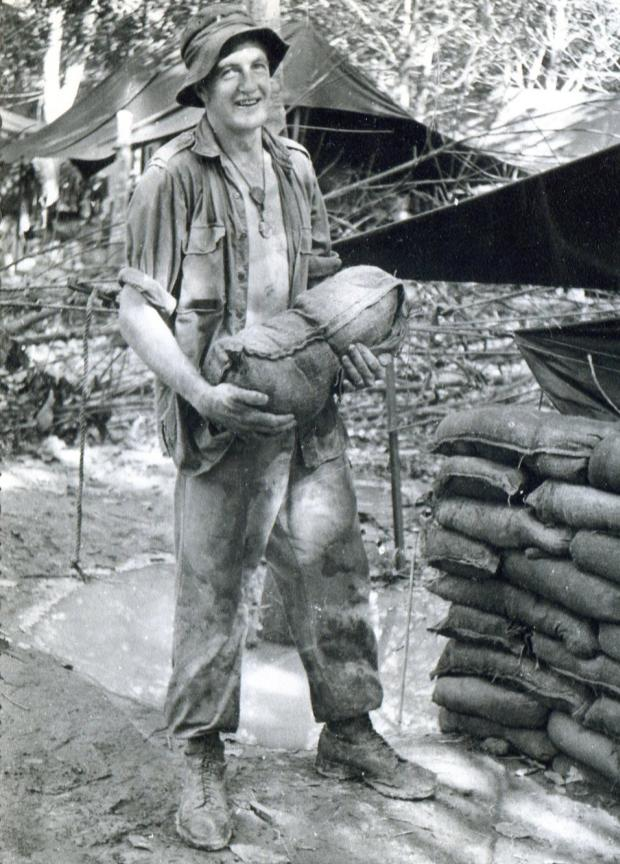
          <figcaption><span class="fignum">Figure 34.</span>‘Boots’</figcaption>
        </figure>
      
    
      
        <h3 id="civic-action">Civic Action</h3>
      
    
      
        <p>We continued to maintain a commitment to the Task Force Civil Affairs Section, mainly in the allocation of my batman/driver Sapper John (Boots) Campbell. In December Boots undertook a specific project with Civil Affairs – a Civic Action project – coordinating and supervising the construction of a sewing room for the widows of ARVN soldiers at Baria. My December report comments: <em>Sapper Campbell has worked continuously</em> <em>on this project throughout December without</em> <em>taking rest days. Vietnamese labour has</em> <em>been unreliable and sporadic and with very</em> <em>little assistance has carried out much of the</em> <em>construction himself. The effort has been</em> <em>most commendable. The project is listed in</em> <em>the monthly civil affairs report as a 1</em> <em>Topographical SurveyTroop project.</em></p>
      
    
      
        <h3 id="boots">‘Boots’</h3>
      
    
      
        <h3 id="that-damned-history-draughting-job">That damned history draughting job</h3>
      
    
      
        <p>I continued to be under a deal of pressure to have completed by the end of the month the draughting of all After Action Report and Operation Order annexes in fair form for publication of the proposed Task Force history – “The First Six Months” (it had progressed from the first four months). The task involved some forty drawings that with our slender resources and more specific operational commitments represented a substantial and not particularly welcome work load. At least by the end of the month it would be out of our hair. I had three of our topographic draughtsmen on the job supervised by our now senior draughtsman, national serviceman Sapper Ron Smith. Many of the earlier drawings we had done had to be re-done due to general deterioration of the draughting medium through heat, humidity and dust. Furthermore, Headquarters staff and no doubt the Commander were given to requiring small changes to the finished product which after a while reduced it to the standard of the proverbial “pak-a-poo” ticket. Of course I always believed that work of this nature should have been undertaken in Australia from the already submitted Operations After Action Reports, perhaps sent to the theatre for final checking. I sometimes thought – what are they up to – rewriting history? The finished products, mostly on cronaflex were to be taken by the GSO<sup class="fn-ref">2</sup> Operations, Major Hannigan safe hand to Sydney where he would supervise the publication. I had kept Directorate of Military Survey informed of the task and sent Directorate on 7 January a letter detailing the drawings and how I envisaged they would be handled, as well as a set of dyelined copies of each drawing. (Letter with schedule of maps and diagrams at Annex J and J<sup class="fn-ref">14</sup> to this account)</p>
      
    
      
        <p>The history, written by the Tack Force Operations staff was to be called: “Nui Dat – With the 1st Australian Task Force in Vietnam – 1966” and it was anticipated that it would be published in the form of a book or army manual. To the best of my knowledge it was never published in either form.</p>
      
    
      
        <h3 id="who-we-are">Who we are!</h3>
      
    
      
        <p>The Troop occupied a unique site at the eastern end of Ingleburn Avenue on slightly rising ground such that from a standing position one could look down the full length of that road past the Task Force headquarters to the junction of Provincial Route 2. We maintained our unit area in a neat and tidy fashion out of unit pride but also because we tended to attract quite a few visitors, sometimes with little warning. However, we lacked an identifying unit sign. I had noticed one or two professionally produced unit sign- boards starting to appear around the area; perhaps the Task Force headquarters had one, certainly the Artillery Regiment and maybe the battalions. We needed one also. I discovered that the signs were being produced locally in Baria – the Vietnamese were very good at doing this sort of thing having lived with “military” for decades. Many ARVN unit signs were of complex design, featuring the Vietnamese fiery dragon and US ones only a little less so. I think Dave King might have designed ours on a sheet of cartridge paper. It was simple enough; the unit title at the top “Detachment 1st Topographical Survey Troop”; the badge of the Royal Australian Survey Corps in the centre and beneath it the recently adopted Latin motto of the Corps “Videre Parare Est” meaning “<em>to see is to portray’ –</em> all on a white background<em>.</em> Dave Christie organised the sign’s production and I am not sure how we paid for it – perhaps Task Force headquarters did so from their discretional fund. The sign finally turned up and it had been beautifully executed – very professional! It arrived on 21 December and we had it erected before Christmas, facing down Ingleburn Avenue. The Roman Catholic padre paid us a visit at about this time and questioned the Latin translation. I assured him that it had passed muster with the heraldic committee and must therefore be correct. I really had no idea whether it had or not or even if such a committee existed – probably it had passed muster only with Major Tim Tylor who had come up with it! The RC Padre went off scratching his head.</p>
      
    
      
        <figure id="figure-35">
          
          <figcaption><span class="fignum">Figure 35.</span>Our new unit sign</figcaption>
        </figure>
      
    
      
        <h3 id="largesse-from-australia">Largesse from Australia</h3>
      
    
      
        <p>Our hitherto non-existent “regimental funds”57 received an unexpected but greatly appreciated boost from survey units back in Australia. Cheques for varying amounts were received from staff and students of the School of Military Survey, the Survey Service Eastern Command<sup class="fn-ref">45</sup>, the Field Survey Depot and the Survey Ex-Servicemens Association of NSW. The AHQ Survey Regiment sent a comprehensive hamper of nuts, sweets and dried fruit and the Central Command Field Survey a large Christmas cake. I recorded in my December report <em>‘OC and members of</em> <em>Detachment 1 Topographical Survey Troop wish to record their pleasure at receiving these gifts</em> <em>and the good wishes that accompanied them, and sincerely thank all members of RA Survey both</em> <em>past and present who participated in this generous gesture’.</em></p>
      
    
      
        <h3 id="chaplaincy-at-nui-dat">Chaplaincy at Nui Dat</h3>
      
    
      
        <p>With Christmas approaching it is appropriate to say something about chaplaincy as I saw it at Nui Dat. The Army is never without its chaplains representing the principal Christian church denominations – Roman Catholic (RC), Church of England (C of E – now Anglican) and Other Protestant Denominations (OPD) – from the Presbyterian (now Uniting), Methodist or Baptist Churches as well as Jewish. The Chaplains superstructure is the Royal Australian Army Chaplains Department and each denomination is headed by a Chaplain General who wears the rank of Major General. The Anglican Church has a further senior appointment in the form of the Bishop to the Forces, a non-uniformed appointment. All Army Chaplains wear commissioned rank; chaplain first class – lieutenant colonel, second class – major and third class – captain. Depending on their individual personality some chaplains connect well with the soldiers and others seem not to, often keeping to the confines of the officers” mess. It has always been my belief that the wearing of commissioned rank is something of a barrier between chaplains and the soldiers they are meant to serve. The Salvation Army (rated as a “philanthropic” service<sup class="fn-ref">46</sup>) representatives manage a much closer and friendlier relationship with all ranks, especially soldiers through their “Red Shield Huts”. Chaplains are normally addressed by all ranks as “Padre” and to some extent that seems to break through the rank barrier. It is an oddly Hispanic sounding name and I have no idea how it was adopted in the services.</p>
      
    
      
        <aside class="footnote" role="note">
          <span class="fn-num">46</span>Regimental Funds comprise monies raised by unit members from various sources, profit from canteens, unit functions and even the occasional injection from Army Amenities. They may be spent on sporting and recreational equipment or anything that is in the interest of the soldiers and is not available from regular army sources. Management of Regimental Funds is exercised through an all ranks committee.
        </aside>
      
    
      
        <figure id="figure-36">
          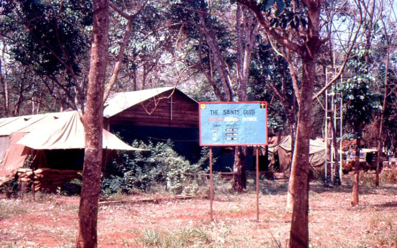
          <figcaption><span class="fignum">Figure 36.</span>Nui Dat Chapel – ‘The Saints Club St George, St Patrick, St Andrew</figcaption>
        </figure>
      
    
      
        <p>At Nui Dat each of the regimental sized units had a chaplain from one of the three denominations and the Task Force headquarters a C of E chaplain in the form of Padre Ed Bennett. I don’t think Padre Ed was all that effective with the soldiery but he tried and had his following. Initially the Task Force chapel was in an American “squad tent” which Padre Ed had scrounged from somewhere<sup class="fn-ref">495051</sup></p>
      
    
      
        <aside class="footnote" role="note">
          <span class="fn-num">50</span>Survey Service Eastern Command comprised the office of the Deputy Assistant Director (DAD) Survey; Eastern Command Field Survey Unit; 1st Topographical Survey Troop.
        </aside>
      
    
      
        <aside class="footnote" role="note">
          <span class="fn-num">51</span>There are three Army accredited philanthropic organisations that provide a level of service to the soldier. The most well known is the Salvation Army; then there is the Campaigners for Christ who run an „Everyman‟s Hut‟ in some military areas similar to the Salvation Army‟s Red Shield Hut and finally there is the Red Cross who provide a different sort of service more associated with the military hospitals and patients therein.
        </aside>
      
    
      
        <p>(padres need to be great scroungers – they seem not to be allocated very much in army scaling) but by Christmas a smaller version Lysaught hut had been allocated. Padre Ed had named his chapel “All Saints – Saint Patrick, Saint George and Saint Andrew” to represent all three denominations but it retained a very C of E flavour. Nevertheless, other denomination’s padres conducted services from time to time. There was always an early Sunday morning Church of England communion service that I normally attended. Brigadier Jackson was also a regular attendee and mostly the chapel was full. Engineers had been very supportive of Padre Ed and had built a number of very sound pews in traditional pattern from American lumber. Other items of church accoutrement were gradually acquired, some made by soldiers in their spare time – crosses, bowls, pulpit (I think) and all of these including the pews are now preserved in one of the chapels at Holsworthy.</p>
      
    
      
        <p>There is an expression that “there are no atheists in foxholes”. I guess that is an American expression since we do not use the term “foxhole”. Before any major operation the combined padres conducted a non-denominational service in the battalion lines. Attendance was not compulsory (thankfully the Army had moved ahead of those days) but these were well attended probably by all other than those occupying perimeter defences and out and out atheists. Similar post operational services were held, perhaps for thanksgiving but also to honour the fallen.</p>
      
    
      
        <p>It might have been early in the New Year that the theatre had a visit from the very high profile American evangelist, Pastor Billy Graham. I think he conducted mass services at three locations in South Vietnam one of which was in the Long Binh/Bien Hoa military complex. The   1ATF chaplains persuaded Brigadier Jackson (or it might have been Jackson’s successor Brigadier Graham) to release a number of soldiers from the task force to attend – it may have been 50 or even a 100. Nominations were called for and two of my soldiers put their hands up and duly went – on a couple of Caribou flights I think. I recall Dave Christie looking a little askance at the two individuals and raising it with me. I replied “they have a right to go”. Of course Dave had pointed out that neither had been known to attend any of our Sunday services conducted by any of our padres. No doubt Dave thought I was a bit of a push over.</p>
      
    
      
        <h3 id="christmas">Christmas</h3>
      
    
      
        <p>There was some excitement at the approach of Christmas – if not excitement at least anticipation. For some that may have been tinged with introspection. Our families were far away and communication with them was still subject to a delay factor of a fortnight. We had no telephone communication and telegrams were confined to clear emergencies. Christmas was to be what we made it. There was much newspaper talk of a Christmas truce with the Viet Cong and perhaps this applied. We had no ongoing operations over that three-day period and I was not aware of any hostile incidents. Of course the units on the outer perimeter maintained sentries and section clearing patrols but as far as possible Christmas Day was to be observed in the traditional way.</p>
      
    
      
        <p>Corporal Ceruti produced a Troop Christmas card in early December, which we printed in large numbers in two colours on the silk screen. Des’s design was very non-military, even non-Vietnam – a simple Christian theme of “Christ Mother and Child”. I think Padre Ed fully approved. It was printed in time for those who wished to send it home to families and I think many did. I sent it to all Survey units in Australia including Survey Directorate – perhaps individual officers within Directorate who had been helpful and supportive during our time in Vietnam and to Task Force units with which we had had dealings, the ALSG and the American units who had also given us unstinting support. Of course at that time there was quite an exchange of cards between units, many using their standard “Corps” card and others “Vietnamese” cards that had suddenly appeared in large quantities in shops and stalls in Baria and Vung Tau.</p>
      
    
      
        <p>We planned to have a unit Christmas Eve party and on 23 December Dave Christie and I went to Vung Tau to replenish our small petty cash holding and with money from a “whip around” purchase a range of decorations with which to festoon our work area. These were duly installed that evening. I, and most others I think, had mixed emotions at all this – it seemed to drive home the inescapable fact that we were not with our families this Christmas; we were here in this mixed up unhappy land; we were in Vietnam. All of our Troop personnel were now in base including our attached artillery surveyors who seemed to prefer to stay with us than return to their parent unit. Trisider personnel had returned to base that day. Sapper Ron Smith had an unexpected Christmas present in promotion to corporal – a well deserved promotion.</p>
      
    
      
        <p>My December report notes – <em>Christmas Celebration</em><em><strong>:</strong></em> <em>On Christmas Eve 1966 members of</em> <em>Detachment 1st Topographical Survey Troop celebrated the occasion with a party in the unit work</em> <em>area. The party was attended by members of the staff of HQ 1ATF with whom the Detachment had</em> <em>associated in 1966 and members and friends from surrounding units. Ample Christmas cheer was</em> <em>provided from the generous donations from RA Survey units in Australia.</em></p>
      
    
      
        <p>Christmas Day was a general rest day. I attended an early morning Christmas communion service in All Saints Chapel with a few of our Troop members. Substantial Christmas dinners were provided in all of the messes, chickens from Australia, baked potatoes, frozen peas (not canned) and fresh vegetables. Following normal army custom, the soldiers were waited on by the officers, warrant officers and senior NCOs. I had been appointed duty officer for the day, which had little more to it than to inspect the meals served in the soldiers” mess and ask for complaints. Having done so I was challenged to drink what turned out to be a rather potent cocktail and upholding the honour of the Corps did so, at least in part, which gave me some regret for the rest of the day. All the bars were open for two hours over lunch and again in the evening and I was thankful that the truce with the Viet Cong seemed to be holding.</p>
      
    
      
        <p>Of course many members had received from their homes considerable quantities of Christmas fare of all sorts. By common consensus all agreed that it was more than anyone could reasonably consume and I think it was Boots Campbell who organised its effective disposal. My December report notes: <em>On Christmas Day approximately 120 pounds (54 kilos) of foodstuffs in the form of</em> <em>cakes, puddings, crystallised and canned fruit, nuts, confectionary etc, donated by unit members</em> <em>including attached artillery personnel were distributed to the RF-PF (ARVN) dependants in the</em> <em>compound at Baria. These people live a very frugal existence and welcome these small</em> <em>extravagances.</em></p>
      
    
      
        <h3 id="after-christmas">After Christmas</h3>
      
    
      
        <p>Boxing Day – 26 December and my wife Wendy’s birthday. Did I attempt to recognise that day in any particular way? I have no record of doing so but perhaps I wrote a letter or added a further message to a voice tape. Having one’s birthday on the day following Christmas in Wendy’s mind made the day the non-event of the year so I always tried to make something of it – a personal present or maybe dinner out somewhere. In subsequent correspondence Wendy commented that Christmas Eve in our army flat at Clovelly was a lonely event spent with 18 month old Sarah and a small Christmas tree. To lighten the occasion against a background of recorded Christmas carols, they opened a few of the small presents from under the tree. Christmas day may have been a little more festive.</p>
      
    
      
        <p>At Nui Dat it was back to work. My diary briefly records: Trisider computations, 1:25,000 map revision and Tellurometer measurement to an artillery point in the village of Dat Do (9 kilometres south east of Nui Dat) from AASV 001 – an easy one with our now increasingly competent and reliable artillery surveyors occupying Dat Do. In the afternoon a concert party came to Nui Dat. I cannot recall whether I attended – I suspect not.</p>
      
    
      
        <p>We commenced another survey task that required no great precision but provided on-going work sporadically for some weeks, possibly until my final departure. This was the running of Signals telephone lines, undertaken by Corporal Firns. Field lines over the task force base area had proliferated since May and I am not sure whether Signals had maintained anything but a sketchy record of their location. Initially telephone cables were simply laid on the ground, even buried in shallow trenches but in December some were being elevated on poles. With our fully contoured cantonment survey plans now in their second edition and being progressively maintained telephone lines were yet another component to add.</p>
      
    
      
        <p>Between Christmas and New Year I landed the job of preparing a Summary of Evidence concerning two private soldiers from within the headquarters who, for offences I cannot now recall, were to face a court martial. In the circumstances I found it all a bit distasteful, a pointless exercise. I think our Task Force Legal Officer (quite a nice bloke) might have agreed with me, however, discipline had to be maintained.</p>
      
    
      
        <div class="narrative">
          
          
          <p>Continued in Part 3</p>
          
        </div>
      
    
  </article>

  
  
  <nav class="docnav" aria-label="Document navigation">
    <a class="prev" href="https://history.skitch.me/rfs/1981-1990_the-public-servant.html"><div class="dir">← Previous</div><div class="nm">The Public Servant</div></a>
    <a class="home" href="https://history.skitch.me/index.html">⌂ The Archive</a>
    <a class="next" href="https://history.skitch.me/rfs/1967_war-in-vietnam-a-surveyors-story-part-3-established.html"><div class="dir">Next →</div><div class="nm">War In Vietnam – A Surveyor’s Story - Part 3 - Established</div></a>
  </nav>
  

  
  <footer>
    <p>© Christopher M.R. Skitch · The Skitch Family Archive · <a href="https://creativecommons.org/licenses/by-nc-nd/4.0/">Licensed CC BY-NC-ND 4.0 — read and share with attribution; no commercial use or adaptations.</a></p>
  </footer>
  


  </main>
</div>
<button class="toc-fab" id="tocFab" type="button" aria-label="Open contents">☰ Contents</button>
<div class="toc-overlay" id="tocOverlay"></div>
<aside class="toc-drawer" id="tocDrawer" aria-label="Contents">
  <div class="toc-dhead">
    <span class="t">Contents</span>
    <button class="x" id="tocClose" type="button" aria-label="Close contents">×</button>
  </div>
  <div class="toc-dlist">
    <div class="navacts">
      <a href="#top" data-top>↑ Top</a>
      <a href="https://history.skitch.me/index.html">⌂ The Archive</a>
    </div>
    <input class="toc-filter" id="tocFilterDrawer" placeholder="Filter sections…">
    <div class="toc-list" id="tocDrawerList">
      
      
      <div class="toc-grp toc-leaf">
        <a class="toc-leaf-link" href="#prologue-and-dedication" data-target="prologue-and-dedication">
          <span class="gt">PROLOGUE and DEDICATION</span>
        </a>
      </div>
      
      
      
      <div class="toc-grp toc-leaf">
        <a class="toc-leaf-link" href="#map-1-frontispiece" data-target="map-1-frontispiece">
          <span class="gt">MAP 1 – Frontispiece</span>
        </a>
      </div>
      
      
      
      <div class="toc-grp">
        <button class="toc-ghead" type="button">
          <span class="car">▸</span>
          <span class="gt">JUNE 1966 ….continued</span>
          <span class="gc">35</span>
        </button>
        <div class="toc-kids">
          <a href="#june-1966-continued" data-target="june-1966-continued">JUNE 1966 ….continued</a>
          
          <a href="#to-nui-dat-the-rest-of-us" data-target="to-nui-dat-the-rest-of-us">To Nui Dat – the rest of us</a>
          
          <a href="#nui-dat-accommodation" data-target="nui-dat-accommodation">Nui Dat accommodation</a>
          
          <a href="#protection-and-facilities-humidity-and-mud" data-target="protection-and-facilities-humidity-and-mud">Protection and facilities –humidity and mud</a>
          
          <a href="#map-2-layout-of-1-topo-svy-tp-june-1966" data-target="map-2-layout-of-1-topo-svy-tp-june-1966">MAP 2 – LAYOUT OF 1 TOPO SVY TP – JUNE 1966</a>
          
          <a href="#coulthard-clarks-account" data-target="coulthard-clarks-account">Coulthard-Clark’s account</a>
          
          <a href="#our-role-develops" data-target="our-role-develops">Our role develops</a>
          
          <a href="#nui-dat-the-hill" data-target="nui-dat-the-hill">Nui Dat – the hill</a>
          
          <a href="#hoa-long" data-target="hoa-long">Hoa Long</a>
          
          <a href="#work-priorities" data-target="work-priorities">Work priorities</a>
          
          <a href="#air-photography-for-mapping" data-target="air-photography-for-mapping">Air photography for mapping</a>
          
          <a href="#i-want-the-stereotopes" data-target="i-want-the-stereotopes">I want the Stereotopes!</a>
          
          <a href="#air-photo-mosaics-an-expedient" data-target="air-photo-mosaics-an-expedient">Air photo mosaics – an expedient</a>
          
          <a href="#survey-connection-to-vung-tau" data-target="survey-connection-to-vung-tau">Survey connection to Vung Tau</a>
          
          <a href="#electric-power-and-night-work" data-target="electric-power-and-night-work">Electric power and night work</a>
          
          <a href="#business-in-saigon" data-target="business-in-saigon">Business in Saigon</a>
          
          <a href="#air-observation-the-possum-flight" data-target="air-observation-the-possum-flight">Air observation – the ‘Possum Flight’</a>
          
          <a href="#survey-connection-to-vung-tau-progresses" data-target="survey-connection-to-vung-tau-progresses">Survey connection to Vung Tau progresses</a>
          
          <a href="#split-vertical-photography" data-target="split-vertical-photography">‘Split Vertical’ Photography</a>
          
          <a href="#map-re-supply" data-target="map-re-supply">Map re-supply</a>
          
          <a href="#dyelining-and-alternatives" data-target="dyelining-and-alternatives">Dyelining and alternatives</a>
          
          <a href="#photo-plots-and-enlargements" data-target="photo-plots-and-enlargements">Photo plots and enlargements</a>
          
          <a href="#theatre-grid-aasv-001-established" data-target="theatre-grid-aasv-001-established">Theatre grid – AASV 001 established</a>
          
          <a href="#cantonment-survey-commences" data-target="cantonment-survey-commences">Cantonment survey commences</a>
          
          <a href="#mail-a-completely-non-functional-system" data-target="mail-a-completely-non-functional-system">Mail – a completely non-functional system</a>
          
          <a href="#corresponding-with-home" data-target="corresponding-with-home">Corresponding with home</a>
          
          <a href="#continuing-problems-with-air-photography" data-target="continuing-problems-with-air-photography">Continuing problems with air photography</a>
          
          <a href="#our-first-concert-party" data-target="our-first-concert-party">Our first ‘concert party’</a>
          
          <a href="#tactical-boundaries-problems-of-definition" data-target="tactical-boundaries-problems-of-definition">Tactical boundaries – problems of definition</a>
          
          <a href="#army-tactical-symbols" data-target="army-tactical-symbols">Army tactical symbols</a>
          
          <a href="#duties-in-the-tactical-operations-centre-toc-operations-map" data-target="duties-in-the-tactical-operations-centre-toc-operations-map">Duties in the Tactical Operations Centre (TOC) – Operations Map</a>
          
          <a href="#the-silk-screen-printing-equipment" data-target="the-silk-screen-printing-equipment">The Silk Screen printing equipment</a>
          
          <a href="#regulating-map-re-supply" data-target="regulating-map-re-supply">Regulating map re-supply</a>
          
          <a href="#cantonment-survey" data-target="cantonment-survey">Cantonment Survey</a>
          
          <a href="#primitive-camp-facilities-deteriorating-health-our-cook-rta-unit-morale" data-target="primitive-camp-facilities-deteriorating-health-our-cook-rta-unit-morale">Primitive camp facilities – deteriorating health – our cook RTA – unit morale</a>
          
          <a href="#the-task-force-base-routine" data-target="the-task-force-base-routine">The Task Force Base routine</a>
          
        </div>
      </div>
      
      
      
      <div class="toc-grp">
        <button class="toc-ghead" type="button">
          <span class="car">▸</span>
          <span class="gt">JULY 1966</span>
          <span class="gc">26</span>
        </button>
        <div class="toc-kids">
          <a href="#july-1966" data-target="july-1966">JULY 1966</a>
          
          <a href="#hoa-long-village-our-first-complete-production-map" data-target="hoa-long-village-our-first-complete-production-map">Hoa Long village – our first complete production map</a>
          
          <a href="#i-meet-captain-charles-mollison" data-target="i-meet-captain-charles-mollison">I meet Captain Charles Mollison</a>
          
          <a href="#map-3-hoa-long-special" data-target="map-3-hoa-long-special">MAP 3 HOA LONG (SPECIAL)</a>
          
          <a href="#the-vietnamese-civil-service" data-target="the-vietnamese-civil-service">The Vietnamese Civil Service</a>
          
          <a href="#morning-tea-with-the-aavn-sector" data-target="morning-tea-with-the-aavn-sector">Morning tea with the AAVN Sector</a>
          
          <a href="#commander" data-target="commander">Commander</a>
          
          <a href="#in-baria" data-target="in-baria">in Baria</a>
          
          <a href="#defoliation-strip-map" data-target="defoliation-strip-map">Defoliation Strip Map</a>
          
          <a href="#pre-operational-work" data-target="pre-operational-work">Pre-operational work</a>
          
          <a href="#an-unexpected-find" data-target="an-unexpected-find">An unexpected find</a>
          
          <a href="#troop-work-pressures-build-up" data-target="troop-work-pressures-build-up">Troop work pressures build up</a>
          
          <a href="#we-improve-our-accommodation" data-target="we-improve-our-accommodation">We improve our accommodation</a>
          
          <a href="#pictomaps-arrive" data-target="pictomaps-arrive">Pictomaps arrive</a>
          
          <a href="#contact-and-mipofolie-map-consumption" data-target="contact-and-mipofolie-map-consumption">Contact and Mipofolie – map consumption</a>
          
          <a href="#longer-term-tasks" data-target="longer-term-tasks">Longer term tasks</a>
          
          <a href="#support-of-civil-affairs" data-target="support-of-civil-affairs">Support of Civil Affairs</a>
          
          <a href="#new-series-1-50000-maps-and-an-enlargement-series-at-1-25000" data-target="new-series-1-50000-maps-and-an-enlargement-series-at-1-25000">New series 1:50,000 maps and an enlargement series at 1:25,000</a>
          
          <a href="#excellent-support-from-the-directorate-of-military-survey" data-target="excellent-support-from-the-directorate-of-military-survey">Excellent support from the Directorate of Military Survey</a>
          
          <a href="#binh-gia-village" data-target="binh-gia-village">Binh Gia village</a>
          
          <a href="#living-and-work-accommodation-improves" data-target="living-and-work-accommodation-improves">Living and work accommodation improves</a>
          
          <a href="#1st-australian-task-force-shield" data-target="1st-australian-task-force-shield">1st Australian Task Force shield</a>
          
          <a href="#stores-from-australia-trickle-in" data-target="stores-from-australia-trickle-in">Stores from Australia trickle in</a>
          
          <a href="#standing-dave-christie-snow-rollston-and-bob" data-target="standing-dave-christie-snow-rollston-and-bob">Standing: Dave Christie, Snow Rollston and Bob</a>
          
          <a href="#skitch-sitting-brian-firns-dennis-duquemin-back" data-target="skitch-sitting-brian-firns-dennis-duquemin-back">Skitch. Sitting: Brian Firns, Dennis Duquemin (back),</a>
          
          <a href="#stan-johns" data-target="stan-johns">Stan Johns</a>
          
          <a href="#promotion-for-snow-rollston" data-target="promotion-for-snow-rollston">Promotion for Snow Rollston</a>
          
        </div>
      </div>
      
      
      
      <div class="toc-grp">
        <button class="toc-ghead" type="button">
          <span class="car">▸</span>
          <span class="gt">AUGUST 1966</span>
          <span class="gc">22</span>
        </button>
        <div class="toc-kids">
          <a href="#august-1966" data-target="august-1966">AUGUST 1966</a>
          
          <a href="#an-iconic-month" data-target="an-iconic-month">An iconic month</a>
          
          <a href="#improving-our-protection" data-target="improving-our-protection">Improving our protection</a>
          
          <a href="#but-production-work-has-to-continue" data-target="but-production-work-has-to-continue">…..but production work has to continue…</a>
          
          <a href="#cantonment-survey-continuing" data-target="cantonment-survey-continuing">Cantonment  Survey - continuing</a>
          
          <a href="#screen-printer-personnel-penalties" data-target="screen-printer-personnel-penalties">Screen printer – personnel penalties</a>
          
          <a href="#some-dont-want-us" data-target="some-dont-want-us">Some don’t want us!</a>
          
          <a href="#after-action-reports-and-various-other-report-map-annexes" data-target="after-action-reports-and-various-other-report-map-annexes">After-action reports and various other report map annexes</a>
          
          <a href="#administration-overheads-and-monthly-reports" data-target="administration-overheads-and-monthly-reports">Administration overheads and Monthly Reports</a>
          
          <a href="#i-lose-my-gso2-intelligence-mentor" data-target="i-lose-my-gso2-intelligence-mentor">I lose my GSO2 (Intelligence) mentor</a>
          
          <a href="#the-commanders-adc" data-target="the-commanders-adc">The Commander’s ADC</a>
          
          <a href="#under-enemy-fire-mortars" data-target="under-enemy-fire-mortars">Under enemy fire – mortars</a>
          
          <a href="#dispersal-and-a-concert" data-target="dispersal-and-a-concert">Dispersal and a concert</a>
          
          <a href="#contact-at-long-tan-operation-smithfield-25" data-target="contact-at-long-tan-operation-smithfield-25">Contact at Long Tan – Operation Smithfield 25</a>
          
          <a href="#smithfield-the-days-that-followed" data-target="smithfield-the-days-that-followed">Smithfield – the days that followed</a>
          
          <a href="#troop-work-continues" data-target="troop-work-continues">Troop work continues….</a>
          
          <a href="#dispersal-we-cant-avoid-it" data-target="dispersal-we-cant-avoid-it">Dispersal – we can’t avoid it!</a>
          
          <a href="#back-to-saigon" data-target="back-to-saigon">Back to Saigon</a>
          
          <a href="#rest-and-convalescence" data-target="rest-and-convalescence">Rest and convalescence</a>
          
          <a href="#the-new-location-we-drag-our-feet" data-target="the-new-location-we-drag-our-feet">The new location – we drag our feet!</a>
          
          <a href="#altercation-with-signals-over-boundary" data-target="altercation-with-signals-over-boundary">Altercation with Signals over boundary</a>
          
          <a href="#we-settle-in-but-work-continues" data-target="we-settle-in-but-work-continues">We settle in but work continues</a>
          
          <a href="#long-trousers-and-sleeves-down" data-target="long-trousers-and-sleeves-down">Long trousers and sleeves down</a>
          
        </div>
      </div>
      
      
      
      <div class="toc-grp">
        <button class="toc-ghead" type="button">
          <span class="car">▸</span>
          <span class="gt">SEPTEMBER 1966</span>
          <span class="gc">30</span>
        </button>
        <div class="toc-kids">
          <a href="#september-1966" data-target="september-1966">SEPTEMBER 1966</a>
          
          <a href="#a-home-for-five-years" data-target="a-home-for-five-years">A home for five years</a>
          
          <a href="#a-vulnerable-task-force" data-target="a-vulnerable-task-force">A vulnerable Task Force</a>
          
          <a href="#and-a-frag-order" data-target="and-a-frag-order">……and a ‘Frag Order’</a>
          
          <a href="#constituent-assembly-election" data-target="constituent-assembly-election">Constituent Assembly election</a>
          
          <a href="#events-catch-up" data-target="events-catch-up">Events catch up</a>
          
          <a href="#time-out-an-enforced-rest-at-vung-tau" data-target="time-out-an-enforced-rest-at-vung-tau">Time out – an enforced rest at Vung Tau</a>
          
          <a href="#map-4" data-target="map-4">MAP 4</a>
          
          <a href="#an-unexpected-meeting" data-target="an-unexpected-meeting">An unexpected meeting</a>
          
          <a href="#time-to-return" data-target="time-to-return">Time to return</a>
          
          <a href="#establishing-our-site" data-target="establishing-our-site">Establishing our site</a>
          
          <a href="#binh-ba" data-target="binh-ba">Binh Ba</a>
          
          <a href="#binh-ba-visited-by-apc" data-target="binh-ba-visited-by-apc">Binh Ba visited – by APC</a>
          
          <a href="#movies-come-to-nui-dat" data-target="movies-come-to-nui-dat">Movies come to Nui Dat</a>
          
          <a href="#nui-dat-cantonment-survey-completed" data-target="nui-dat-cantonment-survey-completed">Nui Dat Cantonment Survey - completed</a>
          
          <a href="#an-unwelcome-task" data-target="an-unwelcome-task">An unwelcome task</a>
          
          <a href="#we-become-carpenters-and-builders" data-target="we-become-carpenters-and-builders">We become carpenters and builders</a>
          
          <a href="#alan-carew-boots-campbell-gnr-moreau" data-target="alan-carew-boots-campbell-gnr-moreau">Alan Carew, Boots Campbell, Gnr Moreau.</a>
          
          <a href="#tactical-boundaries-again-and-again" data-target="tactical-boundaries-again-and-again">Tactical boundaries again – and again…</a>
          
          <a href="#no-compassionate-rta" data-target="no-compassionate-rta">No compassionate RTA</a>
          
          <a href="#the-1-25000-enlargement-series-arrive" data-target="the-1-25000-enlargement-series-arrive">The 1:25,000 enlargement series arrive</a>
          
          <a href="#our-screen-printing-contingent-arrives-and-also-the-stereotopes" data-target="our-screen-printing-contingent-arrives-and-also-the-stereotopes">Our screen printing contingent arrives – and also the Stereotopes</a>
          
          <a href="#minefields" data-target="minefields">Minefields?</a>
          
          <a href="#long-tan-follow-up-i-meet-major-harry-smith" data-target="long-tan-follow-up-i-meet-major-harry-smith">Long Tan follow-up – I meet Major Harry Smith</a>
          
          <a href="#map-5-operation-smithfield-battle-of-long-tan" data-target="map-5-operation-smithfield-battle-of-long-tan">MAP 5 – OPERATION SMITHFIELD (Battle of Long Tan)</a>
          
          <a href="#battle-sketches-by-major-harry-smith" data-target="battle-sketches-by-major-harry-smith">Battle sketches by Major Harry Smith</a>
          
          <a href="#sketch-7" data-target="sketch-7">Sketch 7</a>
          
          <a href="#sketch-8" data-target="sketch-8">Sketch 8</a>
          
          <a href="#sketch-10" data-target="sketch-10">Sketch 10</a>
          
          <a href="#sketch-12" data-target="sketch-12">Sketch 12</a>
          
          <a href="#mess-jackets-in-the-rubber-trees" data-target="mess-jackets-in-the-rubber-trees">Mess jackets in the rubber trees</a>
          
        </div>
      </div>
      
      
      
      <div class="toc-grp">
        <button class="toc-ghead" type="button">
          <span class="car">▸</span>
          <span class="gt">OCTOBER 1966</span>
          <span class="gc">21</span>
        </button>
        <div class="toc-kids">
          <a href="#october-1966" data-target="october-1966">OCTOBER 1966</a>
          
          <a href="#provincial-route-ltl2-nui-dat-vung-tau" data-target="provincial-route-ltl2-nui-dat-vung-tau">Provincial Route LTL2 – Nui Dat – Vung Tau</a>
          
          <a href="#r-r-commences" data-target="r-r-commences">R&R commences</a>
          
          <a href="#disaster" data-target="disaster">Disaster</a>
          
          <a href="#the-stereotopes" data-target="the-stereotopes">The Stereotopes</a>
          
          <a href="#long-son-nui-nua-island" data-target="long-son-nui-nua-island">Long Son (Nui Nua) Island</a>
          
          <a href="#captured-viet-cong-maps" data-target="captured-viet-cong-maps">Captured Viet Cong maps</a>
          
          <a href="#the-home-front" data-target="the-home-front">The home front</a>
          
          <a href="#saigon-again" data-target="saigon-again">Saigon again</a>
          
          <a href="#arvn-topographic-company" data-target="arvn-topographic-company">ARVN Topographic Company</a>
          
          <a href="#downtown-saigon" data-target="downtown-saigon">Downtown Saigon</a>
          
          <a href="#silk-screen-printing-associated-problems" data-target="silk-screen-printing-associated-problems">Silk screen printing – associated problems</a>
          
          <a href="#site-development" data-target="site-development">Site development</a>
          
          <a href="#nui-thi-vai-an-interesting-task" data-target="nui-thi-vai-an-interesting-task">Nui Thi Vai – an interesting task</a>
          
          <a href="#the-return-to-australia-of-carew-and-johns" data-target="the-return-to-australia-of-carew-and-johns">The return to Australia of Carew and Johns</a>
          
          <a href="#the-new-1-50000-series-l7014" data-target="the-new-1-50000-series-l7014">The new 1: 50,000 series (L7014)</a>
          
          <a href="#navigation" data-target="navigation">Navigation</a>
          
          <a href="#training-the-engineers-in-survey" data-target="training-the-engineers-in-survey">Training the Engineers in survey</a>
          
          <a href="#defoliation-and-agent-orange" data-target="defoliation-and-agent-orange">Defoliation and ‘Agent Orange’</a>
          
          <a href="#b4-strikes" data-target="b4-strikes">B4 Strikes</a>
          
          <a href="#the-water-torture-incident" data-target="the-water-torture-incident">The ‘Water Torture’ incident</a>
          
          <a href="#october-comes-to-an-end" data-target="october-comes-to-an-end">October comes to an end</a>
          
        </div>
      </div>
      
      
      
      <div class="toc-grp">
        <button class="toc-ghead" type="button">
          <span class="car">▸</span>
          <span class="gt">NOVEMBER 1966</span>
          <span class="gc">22</span>
        </button>
        <div class="toc-kids">
          <a href="#november-1966" data-target="november-1966">NOVEMBER 1966</a>
          
          <a href="#trisider" data-target="trisider">‘Trisider’</a>
          
          <a href="#the-artillery-problem" data-target="the-artillery-problem">The Artillery problem</a>
          
          <a href="#another-us-mapping-company-in-theatre-66-engineer-company-topo-corps-at-long" data-target="another-us-mapping-company-in-theatre-66-engineer-company-topo-corps-at-long">Another US mapping company in theatre - 66 Engineer Company (Topo)(Corps) at Long</a>
          
          <a href="#binh" data-target="binh">Binh</a>
          
          <a href="#programmed-work-november" data-target="programmed-work-november">Programmed work - November</a>
          
          <a href="#technical-records" data-target="technical-records">Technical records</a>
          
          <a href="#public-relations" data-target="public-relations">Public relations</a>
          
          <a href="#sas-operations" data-target="sas-operations">SAS operations</a>
          
          <a href="#to-saigon-again" data-target="to-saigon-again">To Saigon again</a>
          
          <a href="#possum-flight" data-target="possum-flight">‘Possum’ Flight</a>
          
          <a href="#meeting-lieutenant-colonel-hritzko" data-target="meeting-lieutenant-colonel-hritzko">Meeting Lieutenant Colonel Hritzko</a>
          
          <a href="#air-vietnam" data-target="air-vietnam">Air Vietnam</a>
          
          <a href="#saigon-business" data-target="saigon-business">Saigon business</a>
          
          <a href="#the-ngocs-at-home" data-target="the-ngocs-at-home">The Ngocs at home</a>
          
          <a href="#driving-in-saigon" data-target="driving-in-saigon">Driving in Saigon</a>
          
          <a href="#equipment-maintenance" data-target="equipment-maintenance">Equipment maintenance</a>
          
          <a href="#recreation" data-target="recreation">Recreation</a>
          
          <a href="#trisider-preparation" data-target="trisider-preparation">Trisider preparation</a>
          
          <a href="#jackson-takes-an-interest" data-target="jackson-takes-an-interest">Jackson takes an interest</a>
          
          <a href="#phu-my" data-target="phu-my">Phu My</a>
          
          <a href="#22-november-thanksgiving-day" data-target="22-november-thanksgiving-day">22 November – Thanksgiving Day</a>
          
          <a href="#a-friendship" data-target="a-friendship">A friendship</a>
          
        </div>
      </div>
      
      
      
      <div class="toc-grp">
        <button class="toc-ghead" type="button">
          <span class="car">▸</span>
          <span class="gt">DECEMBER 1966</span>
          <span class="gc">15</span>
        </button>
        <div class="toc-kids">
          <a href="#december-1966" data-target="december-1966">DECEMBER 1966</a>
          
          <a href="#constructions" data-target="constructions">Constructions</a>
          
          <a href="#visit-by-the-cgs" data-target="visit-by-the-cgs">Visit by the CGS</a>
          
          <a href="#the-routine-continues" data-target="the-routine-continues">The routine continues</a>
          
          <a href="#cowboys-it-was-murder" data-target="cowboys-it-was-murder">‘Cowboys’ – it was murder</a>
          
          <a href="#trisider-continues" data-target="trisider-continues">Trisider continues</a>
          
          <a href="#a-connection-to-nui-chau-chan-a-prelude-to-christmas" data-target="a-connection-to-nui-chau-chan-a-prelude-to-christmas">A connection to Nui Chau Chan – a prelude to Christmas</a>
          
          <a href="#screen-printing-problems-overcome" data-target="screen-printing-problems-overcome">Screen-printing problems overcome</a>
          
          <a href="#civic-action" data-target="civic-action">Civic Action</a>
          
          <a href="#boots" data-target="boots">‘Boots’</a>
          
          <a href="#that-damned-history-draughting-job" data-target="that-damned-history-draughting-job">That damned history draughting job</a>
          
          <a href="#who-we-are" data-target="who-we-are">Who we are!</a>
          
          <a href="#largesse-from-australia" data-target="largesse-from-australia">Largesse from Australia</a>
          
          <a href="#chaplaincy-at-nui-dat" data-target="chaplaincy-at-nui-dat">Chaplaincy at Nui Dat</a>
          
          <a href="#christmas" data-target="christmas">Christmas</a>
          
          <a href="#after-christmas" data-target="after-christmas">After Christmas</a>
          
        </div>
      </div>
      
      
    </div>
  </div>
</aside>
<script>
(function(){
  // Expand the first BRANCH group on load (a leaf-only ToC needs no
  // expansion at all). Branches without :not(.toc-leaf) here would
  // expand a leaf which has nothing inside to show.
  var firstBranch = document.querySelector('.toc-grp:not(.toc-leaf)');
  if(firstBranch) firstBranch.classList.add('open');
  // Reduced-motion-aware smooth scroll for the in-panel nav.
  function tocReduced(){ return window.matchMedia && window.matchMedia('(prefers-reduced-motion: reduce)').matches; }
  // Header-click toggles a BRANCH group; leaf links navigate directly.
  document.addEventListener('click', function(e){
    // "↑ Top" action-row link — scroll to the top of the document.
    var topLink = e.target.closest('a[data-top]');
    if(topLink){
      e.preventDefault();
      window.scrollTo({top:0, behavior: tocReduced() ? 'auto' : 'smooth'});
      closeDrawer();
      return;
    }
    var head = e.target.closest('.toc-ghead');
    if(head){ head.parentNode.classList.toggle('open'); return; }
    // Both child links in expanded branches AND leaf links navigate.
    var a = e.target.closest('.toc-kids a[data-target], .toc-leaf-link[data-target]');
    if(!a) return;
    var el = document.getElementById(a.dataset.target);
    if(el){ e.preventDefault(); el.scrollIntoView({behavior:'smooth', block:'start'}); closeDrawer(); history.pushState(null, '', '#' + a.dataset.target); }
  });
  // Drawer open/close.
  var drawer = document.getElementById('tocDrawer'),
      overlay = document.getElementById('tocOverlay');
  function openDrawer(){ drawer.classList.add('open'); overlay.classList.add('open'); }
  function closeDrawer(){ drawer.classList.remove('open'); overlay.classList.remove('open'); }
  document.getElementById('tocFab').addEventListener('click', openDrawer);
  document.getElementById('tocClose').addEventListener('click', closeDrawer);
  overlay.addEventListener('click', closeDrawer);
  // Filter wiring (both copies).
  function wireFilter(input, listEl){
    if(!input || !listEl) return;
    input.addEventListener('input', function(){
      var q = input.value.trim().toLowerCase();
      var any = false;
      listEl.querySelectorAll('.toc-grp').forEach(function(grp){
        // Leaves have no .gt inside a ghead button — pull the text
        // from the leaf-link's .gt span instead so the filter works
        // uniformly across leaf and branch entries.
        var gtEl = grp.querySelector('.toc-ghead .gt, .toc-leaf-link .gt');
        var headTxt = gtEl ? gtEl.textContent.toLowerCase() : '';
        var gMatch = headTxt.indexOf(q) >= 0;
        var kidShown = false;
        grp.querySelectorAll('.toc-kids a').forEach(function(a){
          var m = q === '' || gMatch || a.textContent.toLowerCase().indexOf(q) >= 0;
          a.style.display = m ? 'block' : 'none';
          if(m) kidShown = true;
        });
        var show = q === '' ? true : (gMatch || kidShown);
        grp.style.display = show ? 'block' : 'none';
        if(show) any = true;
        // Only branches can "open"; the class is a no-op on leaves.
        if(q !== '' && (gMatch || kidShown)) grp.classList.add('open');
      });
      var empty = listEl.querySelector('.toc-empty');
      if(!any && !empty){
        empty = document.createElement('div');
        empty.className = 'toc-empty';
        empty.textContent = 'No sections match.';
        listEl.appendChild(empty);
      }
      if(any && empty) empty.remove();
    });
  }
  wireFilter(document.getElementById('tocFilterRail'),   document.getElementById('tocRailList'));
  wireFilter(document.getElementById('tocFilterDrawer'), document.getElementById('tocDrawerList'));
  // Scrollspy: highlight the rail entry whose heading is currently topmost.
  var heads = Array.prototype.slice.call(document.querySelectorAll('article h2, article h3'));
  var nowbar = document.getElementById('tocNowbar');
  function spy(){
    var y = window.scrollY + 90, cur = heads[0];
    heads.forEach(function(h){ if(h.offsetTop <= y) cur = h; });
    if(!cur) return;
    if(nowbar) nowbar.textContent = cur.textContent;
    // Highlight whichever target matches the current heading — child
    // links inside branches AND standalone leaf links share the same
    // `.active` styling treatment so the user sees one consistent
    // "you are here" indicator.
    document.querySelectorAll('.toc-kids a, .toc-leaf-link').forEach(function(a){
      a.classList.toggle('active', a.dataset.target === cur.id);
    });
  }
  window.addEventListener('scroll', spy, {passive:true});
  spy();
})();
</script>


<button class="totop" id="totop" type="button" aria-label="Back to top">↑</button>
<script>
(function(){
  var totop = document.getElementById('totop');
  if(!totop) return;
  function reduced(){ return window.matchMedia && window.matchMedia('(prefers-reduced-motion: reduce)').matches; }
  function toTop(){ window.scrollTo({top:0, behavior: reduced() ? 'auto' : 'smooth'}); }
  function onScroll(){ totop.classList.toggle('show', window.scrollY > 600); }
  window.addEventListener('scroll', onScroll, {passive:true});
  onScroll();
  totop.addEventListener('click', toTop);
})();
</script>

</body>
</html>